AI × Science 文献日报 2026/07/01
聚焦 AI × 物理 / 化学 / 材料交叉方向，自动过滤明显偏题的医学、教育与社会科学内容，并按主题重新排版，便于快速深读。
AI | 物理 | 化学 | 材料 | 交叉学科 | arXiv | 预印本追踪
原始候选 277 篇中，已剔除 0 篇明显偏离主线的内容，并从剩余 277 篇主线相关文献中精选 60 篇进入日报页，优先保留 AI × 物理 / 化学 / 材料交叉与关键计算方法工作。
核心关注（ML × ferro / 凝聚态）
8 篇今天的实质进展集中在“势函数误差”从能量/力回归指标转向采样分布与可观测量可信度，MACE、NEP、equivariant GNN 在 BaTiO3 畴壁、NbOI2 极化翻转、CrI3/CrSBr 磁相变模拟中都需要按序参量而非只按 DFT 保留集误差验收。对比正则化与集成不确定性把机器学习势视为统计采样生成器，可直接约束自由能面、相变温度、畴结构寿命等凝聚态量。自治显微和多模态表征把局域结构—功能关联纳入闭环采样，适合和 DFT+U、扫描探针谱、STEM 数据联用解析 CrSBr 缺陷磁各向异性或 BaTiO3 局域极化不均匀性。量子误差缓解、反应网络与通用分子平台虽不专属铁电/磁性材料，但其不确定性、主动采样和项选择思想可迁移到强关联哈密顿量学习与复杂缺陷化学搜索。
-
01神经网络原子势集成不确定性比较Comparative study of ensemble-based uncertainty quantification methods for neural network interatomic potentials
📄 摘要：比较多种基于集成的神经网络原子间势不确定性量化方法，针对能量和原子力保留集误差与体系级涌现行为可靠性之间的不一致展开评估。核心结论是，小尺度 DFT 标注精度不能直接保证大尺度原子模拟可信，需要面向模拟可观测量的不确定性指标。
💡 亮点：机器学习原子势即使在 DFT 能量和力测试集上准确，也可能在体系级行为上失效。集成不确定性需要从点预测误差扩展到模拟可观测量，直接关系到材料大尺度模拟的可信部署。
📐 方法要点：比较集成式NN势不确定性与大尺度模拟可观测量失配。
🔗 相关工作关联：呼应MACE、NEP、DeePMD、主动学习势、相变与缺陷扩散模拟。
💡 对你方向的启示：训练铁电/磁性势时需用极化、磁序、畴壁能等体系量校准UQ。
-
02多模态机器学习加速结构性质发现Accelerating Structure-Property Relationship Discovery with Multimodal Machine Learning and Self-Driving Microscopy
📄 摘要：提出自治显微框架，把双新颖性深核学习用于自适应选择显微/局域谱采样点，并用双变分自编码器学习结构与功能表征。该闭环减少人工选点和预设目标偏置，提升纳米结构—性质关联数据的多样性和发现效率。
💡 亮点：双新颖性深核学习让显微镜主动寻找结构和性质上都新颖的区域。与双 VAE 表征结合后，局域谱学从人工选点转为闭环探索，适合复杂功能材料的结构—性质发现。
📐 方法要点：双新颖性深核学习闭环选点，双VAE耦合结构与功能表征。
🔗 相关工作关联：呼应自驱动显微、贝叶斯优化、STEM/扫描探针谱、多模态表征。
💡 对你方向的启示：可把稀疏谱学预算投向最能区分畴、缺陷和局域相的区域。
-
03机器学习势的对比正则化Contrastive Regularization of Machine Learning Potentials
📄 摘要：指出机器学习势是用于采样的生成器而非只做回归的模型；标准 MSE 在 DFT 数据上可达化学精度，却仍给出错误平衡分布。引入对比正则化，使势能面训练显式约束采样分布，缓解点误差与热力学统计量不一致的问题。
💡 亮点：对比正则化直接针对机器学习势定义的平衡分布，而非只压低能量和力的 MSE。该思路把势能训练从点预测推向正确采样，对分子动力学和材料热力学更关键。
📐 方法要点：对比正则化让ML势显式匹配采样分布而非仅拟合DFT点值。
🔗 相关工作关联：呼应生成式势能面、自由能学习、MACE/NEP采样偏差、增强采样。
💡 对你方向的启示：评估BaTiO3或CrI3相变势时应检查平衡分布和热力学统计量。
-
04ElemeNet：跨元素分子机器学习ElemeNet: Multiscale Molecular Machine Learning with Uncertainty Quantification Across the Periodic Table
📄 摘要：发布 ElemeNet 通用分子机器学习软件包，整合先进模型、分子表示和不确定性量化，支持更宽周期表元素组成与多类性质/数据集训练。目标是打破现有高性能模型分散在独立代码库、元素覆盖有限的限制。
💡 亮点：ElemeNet 将分子表示、先进模型和不确定性量化统一到同一软件框架。其周期表覆盖范围更宽，有利于跨化学空间的性质预测和模型基准比较。
📐 方法要点：ElemeNet整合分子表示、模型训练与跨元素不确定性量化。
🔗 相关工作关联：呼应通用分子基础模型、元素嵌入、性质预测、UQ工具链。
💡 对你方向的启示：可借鉴其跨元素UQ设计，构建含卤素、硫族、过渡金属材料数据流。
-
05HydroGym 流体强化学习平台The HydroGym Reinforcement Learning Platform for Fluid Dynamics
📄 摘要：HydroGym 提供面向流体建模与控制的强化学习基准平台，覆盖升力、减阻、混合增强和噪声抑制等任务。平台针对高维、非线性、多尺度流动中控制器难以跨几何和工况泛化的问题，建立共享环境和评测接口。
💡 亮点：HydroGym 把分散的流体强化学习控制问题组织成可复用基准。共享几何、工况和评价标准有望推动流动控制算法从单案例调参走向泛化比较。
📐 方法要点：HydroGym提供流体控制RL环境、任务接口与统一评测基准。
🔗 相关工作关联：呼应强化学习控制、PDE代理模型、多尺度非线性动力学、基准化。
💡 对你方向的启示：凝聚态中畴演化、相场控制也需要类似可复现RL环境和指标。
-
06用动力学李代数避开量子贫瘠高原Beyond the Expressivity-Trainability Paradox: A Dynamical Lie Algebra Perspective on Navigating Barren Plateaus in Quantum Machine Learning
📄 摘要：从动力学李代数分析量子机器学习架构中的表达性—可训练性矛盾，认为无结构量子线路常处于量子欠拟合而非经典意义过拟合。希尔伯特空间虽大，可访问轨道受代数结构限制；合理架构需在表达性和梯度可训练性之间导航。
💡 亮点：量子机器学习的瓶颈被重述为动力学李代数限制下的欠拟合问题。该视角为设计可训练而非盲目增大表达性的量子线路提供了结构性判据。
📐 方法要点：用动力学李代数刻画量子线路可访问轨道与梯度可训练性。
🔗 相关工作关联：呼应量子机器学习、变分量子算法、贫瘠高原、哈密顿量对称性。
💡 对你方向的启示：学习强关联自旋模型时应按对称代数设计ansatz，避免无效表达性。
-
07按泡利权重选择哈密顿量项的量子误差缓解Pauli Weight Hamiltonian Term Selection for Optimized Machine Learning Based Quantum Error Mitigation
📄 摘要：提出泡利权重量子误差缓解 Pi-QEM，用哈密顿量泡利字符串的权重先验来选择训练项。相较启发式或均匀随机采样需覆盖所有泡利项、测量数随系统规模线性增长，该框架系统减少机器学习误差缓解所需训练数据。
💡 亮点：Pi-QEM 将泡利权重先验引入机器学习量子误差缓解训练集构造。它避免对哈密顿量所有泡利字符串一视同仁采样，有助于降低大体系测量开销。
📐 方法要点：Pi-QEM按泡利权重选择哈密顿量训练项以降低误差缓解测量量。
🔗 相关工作关联：呼应机器学习量子误差缓解、VQE、泡利分解、电子结构量子计算。
💡 对你方向的启示：用于DFT+U/模型哈密顿量量子模拟时，可优先测关键局域相互作用项。
-
08ReactionAtlas：机器学习从头探索反应网络ReactionAtlas: Ab origine exploration of chemical reaction networks with machine learning
📄 摘要：ReactionAtlas 面向由极小点、过渡态和基元反应构成的化学反应网络，利用机器学习降低从头搜索成本。目标是在无需预设反应物和产物对的情况下寻找并表征成千上万个过渡态，突破 DFT 构建大反应网络过慢的限制。
💡 亮点：ReactionAtlas 试图把过渡态搜索从人工给定反应对扩展到自动反应网络制图。机器学习加速成千上万 TS 的从头探索，对催化、燃烧和复杂化学空间搜索很直接。
📐 方法要点：ReactionAtlas用ML加速无预设反应对的从头过渡态网络搜索。
🔗 相关工作关联：呼应反应网络自动发现、NEB/过渡态搜索、主动学习势、催化机理。
💡 对你方向的启示：可迁移到氧空位迁移、卤素缺陷重构和界面化学反应路径枚举。
今日摘要
总览：今日列表中，机器学习原子间势与物理约束代理模型占据显著位置，议题从集成不确定性量化、对比正则、跨元素周期表分子模型，到钨单块偏滤器温度场重构、激光粉床熔融哈氏合金疲劳寿命、地幔条件下 MgSiO₃、CaSiO₃、SiO₂ 熔化行为。凝聚态方向高度集中于交错磁体、反铁磁与铁电耦合、手性超导和拓扑输运，具体体系包括 AV₂X₂O 表面交错磁体、双层 SnSe、CuCrP₂S₆、纤锌矿 MnSe 单层和 d 电子 kagome 体系。
热点：机器学习势能面与不确定性 → 用集成模型、对比正则、哈密顿流映射和主动学习有限元把误差条带入分子动力学与材料寿命预测 → 典型工作是神经网络原子间势不确定性量化、机器学习势驱动的地幔硅酸盐熔化、缺陷感知有限元代理的哈氏合金疲劳寿命预测。交错磁体与反铁磁自旋电子学 → 利用对称性保护的二维交错磁性、低频光驱动直流自旋流、奇宇称磁体高阶自旋流整流、量子度规诱导磁光效应来寻找无净磁矩体系中的可读写信号 → 典型工作是 AV₂X₂O 表面交错磁体非常规超导、二维交错磁体铁电翻转、非共线反铁磁内禀横向磁非互易响应。铁电、多铁与相变热输运 → 把畴结构、应变、挠曲电、反铁电嵌入铁电回线和磁弹耦合纳入可调器件物理 → 典型工作是双层 SnSe 铁电/反铁电声子热输运、反铁电薄膜巨负电热效应、CuCrP₂S₆ 范德瓦耳斯多铁性和隐藏相 MnSe 单层三铁性。拓扑与非常规超导输运 → 从手性超导反常霍尔、时间反演对称自旋轨道耦合超导的谱幻影能隙、整数量子霍尔转变随机网络，到倾斜反铁磁 d 电子 kagome 体系拓扑霍尔响应，焦点落在贝里曲率、手征序参量和非共线自旋纹理的可观测输运指纹。
今日文献
60 篇 · 20 含图深析-
01
📊 含图深析
📄 摘要：提出泡利权重量子误差缓解 Pi-QEM，用哈密顿量泡利字符串的权重先验来选择训练项。相较启发式或均匀随机采样需覆盖所有泡利项、测量数随系统规模线性增长，该框架系统减少机器学习误差缓解所需训练数据。
💡 亮点：Pi-QEM 将泡利权重先验引入机器学习量子误差缓解训练集构造。它避免对哈密顿量所有泡利字符串一视同仁采样，有助于降低大体系测量开销。
📖 展开分析 + 配图
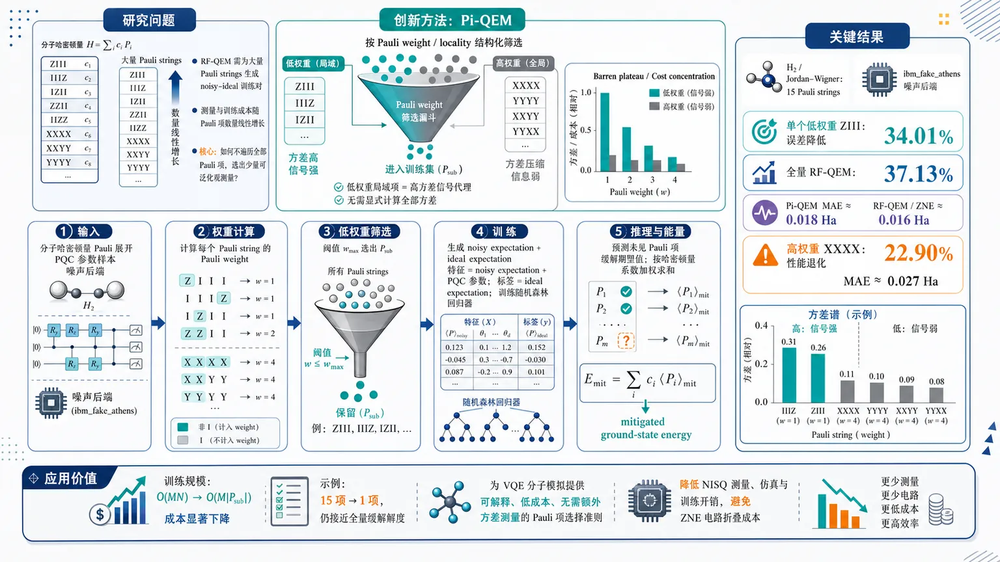
研究问题机器学习量子误差缓解 RF-QEM 需要为哈密顿量中大量 Pauli strings 生成 noisy-ideal 训练对，测量与训练成本随 Pauli 项数量线性增长；核心问题是如何在不遍历全部 Pauli 项的情况下，选出最有训练信号、能泛化缓解其他未见 Pauli 项的少量可观测量。创新方法Pi-QEM 将“训练哪些 Pauli observables”转化为基于 Pauli weight/locality 的结构化筛选：用低 Pauli weight 局域项作为高方差训练信号的廉价代理。Aha 点是把 PQC 参数空间中的期望值方差与 barren plateau/cost concentration 联系起来：低权重局域 Pauli 项如 ZIII、IIIZ 方差高、信号强；高权重全局项如 XXXX 方差被压缩、信息弱，因此无需显式计算所有 Pauli 项方差即可筛选训练子集。工作流程输入分子哈密顿量 Pauli 展开、PQC 参数样本和噪声后端；先计算每个 Pauli string 的 Pauli weight，按阈值 wmax 选出低权重局域子集 Psub；对选中 Pauli 项在多个参数点上生成 noisy expectation 与 ideal expectation；将 noisy expectation 和 PQC 参数组成特征，ideal expectation 作为标签训练随机森林回归器；推理时预测各 Pauli 项缓解后的期望值，再按哈密顿量系数加权求和输出 mitigated ground-state energy。关键结果在 H₂ 分子 Jordan-Wigner 哈密顿量的 15 个 Pauli strings、ibm_fakeₐₜₕₑₙₛ 噪声后端上，单个低权重局域项 ZIII 训练的 Pi-QEM 实现 34.01% 平均基态能量误差降低，接近使用全部 15 项训练的 RF-QEM 的 37.13%；Pi-QEM 能量 MAE 约 0.018 Ha，接近 RF-QEM/ZNE 的约 0.016 Ha；高权重全局项 XXXX 训练反而造成 22.90% 性能退化，MAE 约 0.027 Ha。方差谱显示 IIIZ 等 weight=1 项方差最高约 0.31，而 XXXX、YYYY、XXYY、YYXX 等 weight=4 项方差仅约 0.08–0.11。应用价值该方法可把机器学习 QEM 的训练数据规模从 O(MN) 降至 O(M|Psub|)，在示例中从 15 个 Pauli 项减少到 1 个仍保持接近全量缓解精度；它为 VQE 分子模拟中的 Pauli 项选择提供可解释、低成本、无需额外方差测量的准则，有望降低 NISQ 设备上量子误差缓解的测量、仿真与训练开销，并避免 ZNE 的电路折叠运行成本。第一部分：核心概览 (Overview)
Pi-QEM 将机器学习量子误差缓解中的训练可观测量选择问题转化为基于 Pauli weight / locality 的结构化筛选问题，避免对哈密顿量中所有 Pauli strings 生成训练数据。核心贡献是利用 PQC 参数空间中期望值方差 与 barren plateau / cost concentration 的联系，主张低权重局域 Pauli 项携带更强训练信号。数值实验在 H₂ 分子、Jordan–Wigner 映射、15 个 Pauli strings、ibm_fakeₐₜₕₑₙₛ 噪声后端 上显示，仅用单个低权重观测量 ZIII 训练即可实现 34.01% 平均能量误差降低，接近全量 RF-QEM 的 37.13%，并优于高权重全局项训练导致的 22.90% 性能退化。
---
第二部分：结构化快速回顾
《Pauli Weight Hamiltonian Term Selection for Optimized Machine Learning Based Quantum Error Mitigation》（None，）
背景
NISQ 设备中的硬件噪声会导致量子算法期望值产生系统偏差。传统 QEM 方法如 ZNE 与 PEC 可缓解误差，但存在随电路错误率快速增长的采样开销。基于机器学习的 RF-QEM 通过学习 noisy-to-ideal expectation mapping 降低运行时开销，但训练数据中应选择哪些 Pauli observables 仍缺乏系统准则。
方法
Pi-QEM 使用 Pauli weight 作为可观测量选择准则。理论依据是：低权重局域观测量在 PQC 参数空间中具有较高方差，训练信号更强；高权重全局观测量更容易发生方差抑制，与 barren plateau 相关。训练特征包含 noisy expectation value 与 PQC 参数，目标为 ideal expectation value，回归器为 random forest regression。
结果
在 H₂ Hamiltonian 上，全量 RF-QEM 使用全部 15 个 Pauli strings，平均误差改善 37.13%；Pi-QEM 仅使用单个低权重局域项 ZIII，平均误差改善 34.01%；高权重全局项 XXXX 导致 22.90% 性能退化。Pi-QEM 的能量 MAE 约 0.018 Ha，接近 RF-QEM 与 ZNE 的 0.016 Ha。
讨论
Pauli strings 的方差分布呈现明显层级：低权重局域项位于高方差区域，高权重全局项位于低方差区域。最高方差项为 IIIZ，Var ≈ 0.31，weight = 1；最低方差项包括 XXXX、YYYY、XXYY、YYXX，Var ≈ 0.08–0.11，weight = 4。该结构支持用 Pauli weight 近似方差排序。
局限
实验系统仅覆盖 H₂ 小分子与 15-term JW Hamiltonian；训练样本数 M、random forest 树数 K、训练/测试划分、shot 数、电路层数具体取值、统计显著性检验、P 值均未在提供内容中明确给出。Pauli string 编码在公式中声称加入特征，但给出的 feature vector 实际未显式包含 Pauli operator encoding，存在表述不一致。
结论
Pi-QEM 提供了面向机器学习 QEM 的低成本 Hamiltonian term selection 策略。基于 Pauli weight 的局域项选择可显著减少训练数据规模，从 O(MN) 降为 O(M|Pₛᵤb|)，并在 H₂ 测试中保持接近全量 RF-QEM 与 ZNE 的误差缓解精度。
---
第三部分：逐章节冷凝解析 (Section-by-Section Condensing)
Abstract
Machine learning QEM is scalable but observable selection remains unresolved
基于机器学习的量子误差缓解被定位为可扩展方案，但训练数据中 Pauli strings 的选择仍是瓶颈。已有方法依赖启发式或均匀随机采样，并且通常需要对 Hamiltonian 中每个 Pauli string 生成训练数据，测量开销随 Pauli 项数量线性增长。原文明确指出：*"Machine learning provides a scalable solution for quantum error mitigation. However, the selection of appropriate Pauli strings for inclusion in training data remains a challenge."* 以及 *"Current methods rely on heuristic or uniform random sampling, requiring data for every Pauli string in the Hamiltonian, a process that scales linearly with measurements and grows with system size."*
Pi-QEM selects training observables using Pauli weight
Pi-QEM / Pauli weight quantum error mitigation 的核心是根据 Pauli weight 选择训练 observables，而不是遍历所有 Hamiltonian terms。该框架利用 variance-locality relationship，优先选取低权重、局域、主导性 Pauli strings。原文给出定义性表述：*"we introduce quantum error mitigation with prior knowledge of Pauli weights (Pauli weight quantum error mitigation (Pi-QEM)), a systematic framework that selects training observables based on Pauli weight."*
Low-weight dominant strings can be sufficient for mitigation
数值结果显示，仅使用一个 dominant local observable 即可显著降低基态能量估计误差，最高达到 34.01%。关键实验证据为：*"Pi-QEM reduces ground-state energy estimation error by up to 34.01% using just a single dominant local observable"*。这一结果表明训练集的信息量并不均匀分布于所有 Pauli terms，而集中在少数局域低权重项中。
Target platform is noisy IBM-style molecular simulation
实验环境为分子系统数值模拟，并使用 noisy IBM quantum backend。摘要中的证据为：*"In numerical simulations of molecular systems on a noisy IBM quantum backend"*。后文进一步具体化为 H₂ molecule 与 ibm_fakeₐₜₕₑₙₛ backend。
---
I Introduction
NISQ quantum computing is limited by noise-induced expectation bias
NISQ 设备的硬件缺陷直接导致量子算法期望值产生偏差，限制计算精度。背景陈述为：*"Quantum computing ... in the noisy intermediate-scale quantum (NISQ) era ... is fundamentally constrained by hardware imperfections, leading to noise-induced bias in the expectation values of computational algorithms."* 这里的核心问题不是随机波动本身，而是 noise-induced bias：noisy expectation value 与 ideal expectation value 的系统性偏离。
QEC is theoretically powerful but impractical for near-term hardware
Quantum error correction (QEC) 可实现 fault-tolerant computation，但高 qubit overhead 使其不适合近期设备。原文证据：*"Although quantum error correction (QEC) ... promises fault-tolerant computation, its significant qubit overhead makes it impractical for near-term quantum devices."* 该逻辑为 QEM 的必要性提供动机：近期硬件无法承担完整 QEC，因此需要 classical post-processing 型替代方案。
Conventional QEM avoids extra qubits but suffers from sampling overhead
ZNE 和 PEC 已被用于推动近端量子处理器能力边界，但存在严重采样开销。直接证据为：*"Conventional QEM techniques, such as zero-noise extrapolation (ZNE) and probabilistic error cancellation (PEC), have been successfully deployed to push the limits of near-term quantum processors."* 同时，限制为：*"both conventional methods are fundamentally constrained by a sampling overhead that may scale exponentially with the overall circuit fault rate."* 这说明传统 QEM 的瓶颈从 qubit overhead 转移到 measurement / sampling overhead。
Learning-based QEM trains a classical model on noisy-ideal pairs
学习型 QEM 使用 classical machine learning model 学习 noisy expectation values 到 ideal expectation values 的映射，不需要运行额外 mitigation circuits。关键描述为：*"a classical machine learning model is trained on classically simulable data to learn the mapping between noisy and ideal expectation values, thereby removing the need for additional mitigation circuits during runtime."* 这种方法尤其适合将计算负担前移到训练阶段。
RF-QEM has been benchmarked as strong among learning-based methods
已有 benchmark 指出 random forest regression-based QEM (RF-QEM) 的表现优于其他统计模型，并优于 digital ZNE，同时降低 runtime overhead。原文给出：*"A detailed benchmarking study assessed various statistical models and found that the random forest regression–based implementation of learning-based quantum error mitigation (RF-QEM) consistently outperformed other method."* 以及 *"its demonstrated superior mitigation accuracy compared to digital zero-noise extrapolation (ZNE) while also significantly reducing runtime overhead."*
The unsolved problem is statistically informative observable selection
现有 RF-QEM 缺少系统化 criterion 来判断哪些 Pauli observables 对训练最有信息量，只能依赖随机采样。核心缺口为：*"a systematic selection strategy and criterion for identifying the most statistically informative observables remain elusive, let alone a method for determining an optimal subset of observables, meaning current approaches rely instead on unguided random sampling."* 该问题在 VQE molecular Hamiltonian 中尤为突出，因为 Pauli terms 数量随系统规模增加。
Different observables contribute unevenly to training information
在 VQE molecular Hamiltonian 中，不同 observables 对训练数据的统计信息贡献不均。低信息 observables 会浪费数据生成成本并降低学习表现；遗漏高信息 observables 会损害模型。原文证据为：*"different observables contribute unevenly to the statistical information contained in the training data."* 以及 *"Incorporating uninformative observables leads to inefficient data generation and degrades the overall learning performance, while excluding highly informative ones can significantly degrade model performance."*
A small selected subset can mitigate unseen Pauli observables
关键假设与创新基础是：少量精心选择的 Pauli terms 可以学习足够的噪声结构，从而缓解未见过的其他 Pauli observables。直接证据为：*"Crucially, a small and well-chosen subset of the total Pauli terms comprising the Hamiltonian can accurately mitigate the remaining unseen Pauli observables."* 这使得 observable selection 不只是训练数据压缩，而是具有泛化目标。
Pi-QEM uses expectation-value variance across PQC space as informativeness criterion
Pi-QEM 将可观测量的信息量定义为其在 PQC parameter space 中 expectation value 的方差：VarΘ[f(P̂k)]。原文定义性表述：*"Pi-QEM identifies statistically informative Pauli observables based on the variance of their expectation values across the parameterized quantum circuits (PQCs) space, VarΘ[f(P̂k)], which determines the expressivity of the training data used in RF-QEM."* 方差越大，训练信号越丰富。
Variance is linked to barren plateaus and cost concentration
低方差 observables 对应指数压缩的训练信号，与 barren plateau 和 cost-concentration phenomenon 相关。证据为：*"this variance is fundamentally linked to the cost-concentration phenomenon and the emergence of barren plateaus in PQCs, where low-variance observables correspond to exponentially suppressed training signals."* 该联系为 Pauli weight criterion 提供理论基础。
Pauli weight approximates variance without explicit variance estimation
Pi-QEM 用 Pauli-weight–based criterion 近似 variance-based selection，从而避免为所有 Pauli terms 显式计算方差。原文证据：*"Pi-QEM approximates the Pauli weight-based selection through a Pauli-weight–based criterion, allowing the identification of informative observables without requiring explicit variance evaluation."* 更准确地说，这里应理解为 “approximates the variance-based selection through a Pauli-weight–based criterion”；原句存在重复表述问题。
Dataset complexity decreases from O(MN) to O(M|Psub|)
训练数据复杂度从全量 observable 的 O(MN) 降低到子集的 O(M|Psub|)，且 |Psub| ≪ N。原文证据为：*"By restricting the training dataset to the selected subset Psub⊂P, the dataset complexity is reduced from O(MN) to O(M|Psub|), with |Psub|≪N, while preserving mitigation accuracy."* 其中 M 是参数样本数量，N 是 Hamiltonian 中 Pauli strings 数量。
H₂ experiment achieves 34.01% improvement with often a single dominant term
H₂ 实验显示小子集足以捕捉 full Hamiltonian 的底层噪声结构，且单个 dominant term 经常足够。原文证据为：*"Our results show that a small subset of selected observables, often a single dominant term, is sufficient to capture the underlying noise structure of the full Hamiltonian."* 性能结果为：*"achieving up to a 34.01% reduction in ground-state energy estimation error while significantly reducing the required training resources."*
---
II Theory and Methods
PQC is formulated as a product of parameterized unitaries
参数化量子线路定义为若干参数化 unitary 的乘积：
[
U(θ)=prodᵢ₌₁ⁿ⁽L⁺¹⁾Uᵢ₍θᵢ₎
]
其中：
[
Uᵢ₍θᵢ₎₌ₑ⁻ⁱθᵢ VᵢWᵢ
]
n 表示 qubit 数，L 表示 PQC 层数，初态为 (|0ångleøtⁱmes ⁿ)。原文证据：*"A Parameterized Quantum Circuit (PQC) can be expressed generally as a sequence of parameterized unitaries"*，并说明 *"n denotes the number of qubits, and L represents the number of layers in the PQC."*
Measurement outcomes are mapped to ±1 eigenvalues
每个 qubit 的二进制测量结果 (μ=(μ₁,μ₂,dots,μₙ₎) 被映射为 Pauli observable 的 ±1 eigenvalue：
[
f(μ)=prodᵢ₌₁ⁿ(-1)μᵢ
]
原文说明：*"The measurement outcomes can be mapped to eigenvalues ±1 using the function"*。该步骤把 bitstring 统计转换为 expectation value 估计。
Ideal expectation value is computed by trace over the noiseless PQC state
理想无噪声极限下，observable 的 expectation value 为：
[
fₑf(hatO)=E[hatO]=Tr[h̊o(θ)hatO]
]
其中：
[
h̊o(θ)=U(θ)(|0ånglełangle0|øtⁱmes ⁿ)U^dagger(θ)
]
原文证据：*"In the ideal, error-free limit with infinite sampling, the expectation value of the observable can be written as"*。这里 ef 代表 error-free。
The chosen ansatz is a hardware-efficient ansatz with RY rotations and linear CNOT chain
线路结构为 hardware-efficient ansatz (HEA)：每层包含 single-qubit RY rotations，随后是邻近 qubits 的线性 CNOT entangling chain。图 1 caption 给出：*"Each layer consists of single-qubit rotation gates RY(θ), followed by a linear chain of CNOT gates that entangle neighboring qubits."* 该 ansatz 被用于 VQE 分子基态能量近似，原文称其 *"is widely used in the Variational Quantum Eigensolver (VQE) algorithm to approximate the ground-state energy of molecular systems."*
There is a notation inconsistency between RX and RY rotations
方法描述中先写 rotation gates 为 Rx，随后图 1 与层结构写作 RY。原文先称：*"each parameter corresponds to a single-qubit rotation gate Rx"*，随后又称：*"each circuit layer UL(θ) consists of a set of single-qubit RY rotations."* 这构成 ansatz specification 的内部不一致，影响精确复现实验。
Noisy PQC is represented by layered CPTP maps
噪声线路表示为复合量子操作：
[
U=U_Li̧rcUL₋₁i̧rcdotsi̧rcU₁
]
每层建模为 ideal unitary 后接 noise channel：
[
Uₗ₌Eₗᵢ̧rc[Uₗ]
]
其中 (Eₗ) 是 CPTP map。原文证据：*"the entire noisy circuit can be represented as a composite quantum operation"*，以及 *"each noisy layer is typically modelled as an ideal unitary evolution followed immediately by a noise channel."*
Noise channels capture decoherence, relaxation, and gate imperfections
噪声通道 (Eₗ) 被定义为物理误差的抽象，包括 decoherence、relaxation、gate imperfections。原文证据：*"The noise channel El is a CPTP map that captures physical errors occurring in the quantum device, such as decoherence, relaxation, or gate imperfections."*
Noisy expectation value is computed from the noisy density matrix
最终 noisy state 为：
[
h̊oE=U(|0ånglełangle0|øtⁱmes ⁿ)
]
noisy expectation value 为：
[
fE(hatO)=EE[hatO]=tr[h̊oE(θ)hatO]
]
原文证据：*"This expression represents the experimentally accessible measurement outcome obtained from the noisy quantum circuit, which generally deviates from the ideal expectation value due to the accumulated effect of noise throughout the circuit."*
Bias is absolute deviation between noisy and ideal expectation values
噪声偏差定义为：
[
Bias[hatO]=|fE(hatO)-fₑf(hatO)|
]
原文证据：*"the expectation value is biased ... where the bias is defined as"*。该 bias 是 Pi-QEM 要学习并校正的目标。
The noisy-to-ideal mapping is assumed nonlinear
由于 noisy 与 ideal expectation values 的关系依赖 PQC configuration，简单线性校正不足。原文明确指出：*"the mapping between the noisy and ideal expectation values depends on the PQC configuration and exhibits a non-linear relationship."* 以及 *"simple linear correction schemes are insufficient to capture this dependence."* 因此采用 supervised learning regression。
Random forest regression averages K decision trees
Pi-QEM 使用 random forest regression，即多个 regression trees 的 ensemble。对输入 (xᵢ)，第 (k) 棵树输出 (Tₖ₍ₓᵢ₎)，mitigated expectation value 为：
[
fₘᵢₜ,ᵢ(hatO)=frac1Ksumₖ₌₁KTₖ₍ₓᵢ₎
]
原文证据：*"The regression model is implemented using random forest regression, an ensemble learning method that aggregates the predictions of multiple regression trees to improve generalization and reduce overfitting."*
Tree splits minimize residual sum of squares
每棵 regression tree 通过递归划分 feature space 构造，在每个节点选择 feature (j) 与 threshold (s)，最小化 RSS：
[
RSS=sumᵢ:xᵢⱼłeq s(yᵢ₋bary_Rₗₑfₜ)²⁺
sumᵢ:xᵢⱼ>s(yᵢ₋bary_Rᵣᵢgₕₜ)²
]
原文证据：*"At each node, the algorithm selects a feature j and a split threshold s that minimize the residual sum of squares (RSS)."* 目标值为 (yᵢ₌fₑf,ᵢ(hatO))。
Single-observable training features include noisy expectation value and PQC parameters
训练集定义为：
[
D=(xᵢ,fₑf,ᵢ(hatO))ᵢ₌₁^M
]
输入特征为：
[
xᵢ₌[fE,ᵢ(hatO),θᵢ,₁,θᵢ,₂,dots,θᵢ,ₙ₍L₊₁₎]
]
原文证据：*"The feature vector is given by xi=[fE,i(O),θi,1,θi,2,…,θi,n(L+1)]"*，并解释 *"The inclusion of these circuit parameters enables the model to capture the dependence of the noise-induced bias on the parameter space."*
Training data generation has four steps
数据生成流程为：采样参数 (θᵢᵢ₌₁^M)；ideal simulator 得到 (fₑf,ᵢ)；noisy simulator 得到 (fE,ᵢ)；组合 noisy expectation 与 parameters 构造 feature vector，ideal expectation 作为 label。原文证据：*"The dataset is generated through the following four-step procedure."* 后续明确：*"First, a set of parameter vectors ... is sampled"*，*"Second ... ideal simulator"*，*"Third ... under the noise channel"*，*"Finally, the noisy expectation value is combined with the associated PQC parameters to form the feature vector."*
Performance metric is MAE between mitigated and ideal values
模型性能用 mean absolute error (MAE) 衡量：
[
MAE(hatO)=frac1MsumᵢᵢₙD
|fₘᵢₜ,ᵢ(hatO)-fₑf,ᵢ(hatO)|
]
原文证据：*"The performance of the model is quantified using the mean absolute error (MAE)"*，并说明该指标 *"measures the average deviation between the mitigated predictions and the corresponding ideal expectation values."*
Molecular Hamiltonian is a weighted sum of Pauli strings
VQE 中目标不是单个 observable，而是 molecular Hamiltonian expectation。Hamiltonian 经 JW / BK / Parity 等 fermion-to-qubit transformation 后写为：
[
hatH=sumₖ₌₁NcₖhatPₖ
]
能量为：
[
E(θ)=sumₖ₌₁Ncₖ f(hatPₖ₎
]
原文证据：*"The Hamiltonian is typically expressed as a linear combination of Pauli strings obtained from fermion-to-qubit transformations, such as the Jordan–Wigner (JW), Bravyi–Kitaev (BK), and Parity (P) mappings."*
Training one model per Pauli observable is inefficient
如果对每个 Pauli observable 独立训练一个 regression model，需要训练 N 个模型，随着 Hamiltonian size 增长不可扩展。原文证据：*"Applying the mitigation procedure independently to each observable would require training N separate regression models, which becomes computationally inefficient as the Hamiltonian size increases."*
Global Pi-QEM trains one unified model across all Pauli observables
为避免 N 个独立模型，构建一个 unified dataset：
[
Dgₗₒbₐₗ=
bigcupₖ₌₁N
(xᵢ,ₖ,fₑf,ᵢ(hatPₖ₎₎ᵢ₌₁M
]
原文证据：*"we construct a generalized Pi-QEM model capable of mitigating all observables simultaneously."* 以及 *"Training the RF model on Dglobal enables the ensemble of regression trees to learn the mapping between noisy and ideal expectation values across a larger and more expressive feature space."*
Feature vector representation has a possible inconsistency about Pauli string encoding
文字称 feature vector 被扩展以包含 Pauli string operator representation：*"the feature vector is augmented with a representation of the Pauli string operator."* 但随后公式给出：
[
xᵢ,ₖ=[fE,ᵢ(hatPₖ₎,θᵢ,₁,θᵢ,₂,dots,θᵢ,ₙ₍L₊₁₎]
]
该公式并未显式包含 Pauli string identity、Pauli weight、operator encoding 或 one-hot / symbolic encoding。该不一致影响可复现性，因为模型如何区分同一 noisy value 与 parameter 下不同 observables 并不完全明确。
Mitigated energy is reconstructed from mitigated Pauli expectations
训练后，对每个 (hatPₖ) 预测 (fₘᵢₜ(hatPₖ₎)，mitigated ground-state energy 为：
[
Eₘᵢₜ(θ)=sumₖ₌₁Ncₖ fₘᵢₜ(hatPₖ₎
]
原文证据：*"The mitigated estimate of the ground-state energy is then computed as"*。这与 VQE energy reconstruction 完全对应。
Subset training reduces dataset size from M·N to M·|Psub|
Pi-QEM 不必对 Hamiltonian 中每个 Pauli observable 生成训练数据，而构造子集：
[
PₛᵤbsubsetP
]
对应数据集：
[
Dₛᵤb=
bigcupₕₐₜPₖᵢₙPₛᵤb
(xᵢ,ₖ,fᵢ₍hatPₖ₎₎ᵢ₌₁M
]
数据规模从 (Mḑot N) 变为 (Mḑot|Pₛᵤb|)。原文证据：*"a reduced training dataset can be constructed by selecting a subset of Pauli strings that retains the essential statistical structure of the full dataset."* 以及 *"which reduces the dataset size from M·N to M·|Psub|."*
Optimal subset minimizes MAE against error-free expectation values
子集模型的目标为最小化：
[
MAEₛᵤb=
frac1MsumθᵢₙΘ
|fₘᵢₜsub(hatPₖ₎₋fₑf(hatPₖ₎|
]
原文证据：*"An optimal subset is defined as one that minimizes the MAE between the mitigated expectation value of Pk and its corresponding error-free expectation value."* 该目标强调子集选择不是任意压缩，而是以 mitigation accuracy 为约束。
Variance across PQC parameters is the theoretical informativeness metric
对每个 Pauli observable，定义其在参数样本集合 (Θ) 上的 expectation variance：
[
VarΘ[f(hatPₖ₎]
=
frac1MsumθᵢₙΘ
(f(hatPₖ₎₋øverlinef(hatPₖ₎)²
]
均值为：
[
øverlinef(hatPₖ₎
=
frac1MsumθᵢₙΘf(hatPₖ₎
]
原文证据：*"This quantity characterizes how strongly the observable varies across the PQC parameter space and therefore quantifies the variability present in the training dataset."*
Variance is interpreted as average signal magnitude in the infinite-sample limit
在 (M→infty) 极限下，文中给出：
[
VarΘ[f(hatPₖ₎]
=
EΘ[f(hatPₖ₎²]
]
并解释：*"EΘ[f(Pk)²] captures the average magnitude of the signal generated by the observable Pk over the region of parameter space explored by the PQC."* 需要注意：严格数学上，variance 等于 (E[f²]-(E[f])²)，只有当均值为 0 或近似可忽略时才可简化为 (E[f²])。该等式在文中未说明零均值条件。
Cost-concentration bound links variance to barren plateaus
方差上界写作：
[
VarΘ[f(hatPₖ₎]
łeq
m²LₘₐₓF(n)
]
其中 (m) 是参数空间维度，(Lₘₐₓ) 来自参数周期性的最大 length scale，(F(n)) 表征 landscape concentration。原文证据：*"This bound implies that F(n) directly governs the scaling of VarΘ[f(Pk)], thus establishing a connection between observable variance and barren plateau formation."*
Global observables have suppressed variance; local observables retain larger variance
理论逻辑是：global Pauli observables 的 (F(n)) 随系统规模不利缩放，导致 expectation values 指数集中在均值附近，variance 消失；local observables 的 (F(n)) 至多 polynomial scaling，因而保留 non-trivial variance。原文证据：*"For global Pauli observables, F(n) scales unfavorably with system size, leading to an exponential concentration of f(Pk) around its mean and consequently a vanishing VarΘ[f(Pk)]."* 对比为：*"for local observables, F(n) exhibits at most polynomial scaling with system size, preventing concentration and preserving a non-trivial variance across the parameter space."*
High-variance observables provide stronger training signals
方差被用作训练信息量指标：高方差 observables 使训练数据更有 spread，低方差 observables 对学习几乎没有贡献。原文证据：*"Observables with larger variances generate more informative training signals, while those with vanishing variances contribute negligibly to the learning process."* 该点直接连接 machine learning dataset quality 与 quantum landscape geometry。
Explicit variance evaluation is costly, motivating structural Pauli-weight selection
若为每个 Pauli term 显式计算 variance，需要在大量参数配置下重复运行电路，成本随系统规模上升。原文证据：*"directly evaluating this variance for every Pauli term requires repeated circuit executions over numerous parameter configurations, which becomes computationally expensive as the system size grows."* 因此 Pi-QEM 转向不需额外测量的 Hamiltonian-structure criterion。
Pauli weight is defined as the number of non-identity single-qubit operators
Pauli weight (w(Pₖ₎) 是 Pauli string 中非 identity operators 的数量。原文定义：*"the Pauli weight w(Pk), defined as the number of non-identity single-qubit operators in a Pauli string."* 例如 ZIII 的 weight 为 1，XXXX 的 weight 为 4。
Pi-QEM selects low-weight observables using a threshold wmax
子集定义为：
[
Pₛᵤb
=
PₖᵢₙPmid w(Pₖ₎łeq wₘₐₓ
]
其中 (wₘₐₓ) 控制保留 observables 的 locality。原文证据：*"The subset of dominant observables is therefore defined as ... where wmax controls the locality of the retained observables."*
Random selection within equal-weight groups controls subset size
当多个 observables 具有相同 Pauli weight 时，在每个 weight group 内均匀随机选择固定数量 (s)。原文证据：*"When multiple observables share the same Pauli weight, a fixed number s is selected uniformly at random within each weight group, allowing for flexibility in the subset size."* 这说明 Pi-QEM 不是完全确定性算法；同权重项之间仍可能存在 stochastic subset construction。
---
III Results and Discussion
H₂ Hamiltonian is transformed using Jordan–Wigner and contains 15 Pauli strings
测试系统为 H₂ molecule，使用 JW transformed Hamiltonian，全量 RF-QEM 模型训练于全部 15 Pauli strings。原文证据：*"As a test system, we construct three models of the JW transformed H2 molecule Hamiltonian"*，以及 *"The first is the standard RF-QEM model trained on all 15 Pauli strings of the full Hamiltonian."*
Three model variants isolate the effect of observable selection
实验比较三类模型：全量 RF-QEM；Pi-QEM 单低权重局域 observable ZIII；高权重全局 observable XXXX。原文证据：*"The second is the Pi-QEM model, where the training subset Psub is defined using a Pauli-weight–based selection rule that targets a single dominant observable, ZIII, which is a low-weight (local) observable."* 对照组为：*"The third model is trained on a high-weight global observable XXXX, representing a deliberately uninformative baseline."*
Noisy data are generated using ibm_fakeₐₜₕₑₙₛ backend
训练数据包含 ideal expectation values 与 noisy expectation values；噪声来自 ibm_fakeₐₜₕₑₙₛ backend，模拟 superconducting quantum hardware 的真实噪声 profile。原文证据：*"The training dataset consists of pairs of ideal expectation values from noise-free simulations and noisy expectation values obtained from simulations on the ibm_fakeₐₜₕₑₙₛ backend, which emulates realistic noise profiles of superconducting quantum hardware."*
Average improvement is defined as mean reduction in absolute energy error over bond lengths
Fig. 6 的指标是 H₂ bond length 范围内 ground-state energy estimation 的平均改善，定义为 noisy 与 mitigated 的 absolute energy error reduction 的均值。原文证据：*"The reported average improvement corresponds to the mean reduction in absolute energy error between the noisy and mitigated results over all bond lengths."* 该定义说明 34.01% 与 37.13% 是跨键长平均值，而非单点误差。
Single-observable Pi-QEM reaches 34.01% average error reduction
只用 ZIII 训练的 Pi-QEM 相对 noisy baseline 实现 34.01% 平均误差降低。原文证据：*"The Pi-QEM result, corresponding to the selection of the single Pauli-weight local observable ZIII, achieves an average error reduction of 34.01% relative to the noisy baseline."* 该结果证明低权重单项可近似学习 full Hamiltonian noise structure。
Full RF-QEM reaches 37.13%, only slightly above Pi-QEM
全量 RF-QEM 使用所有 15 Pauli strings，平均误差降低 37.13%，仅比单项 Pi-QEM 高约 3.12 个百分点。原文证据：*"This performance is comparable to that of the standard RF-QEM model trained on all fifteen Pauli strings of the full Hamiltonian (37.13%)."* 训练数据规模则从 15M 降到 M，理论上减少约 93.3% Pauli-observable training coverage。
High-weight global observable training degrades performance by 22.90%
使用 XXXX 训练导致 22.90% performance degradation，说明高权重全局项缺乏有效训练信息。原文证据：*"training on a high-weight global observable such as XXXX leads to a 22.90% performance degradation, demonstrating that observables failing the Pi-QEM selection criterion provide little informative structure for learning."*
Pi-QEM energy MAE is approximately 0.018 Ha
Fig. 7 中，Pi-QEM 的 ground-state energy MAE 约为 0.018 Hartree。原文证据：*"The Pi-QEM model achieves an MAE≈0.018 Ha"*。该误差接近全量 RF-QEM 与 ZNE，说明极小训练子集没有显著损失缓解精度。
Standard RF-QEM and ZNE both reach approximately 0.016 Ha
标准 RF-QEM 与 ZNE 的 MAE 均约 0.016 Ha。原文证据：*"statistically indistinguishable from the RF-QEM baseline (MAE≈0.016 Ha)"*，以及 *"both standard RF-QEM and the Pi-QEM match the performance of ZNE (MAE≈0.016 Ha) while avoiding its associated circuit-folding overhead."* “statistically indistinguishable” 这一表述未提供 P 值、置信区间或具体检验方法。
Global XXXX model has MAE approximately 0.027 Ha
高权重 XXXX 模型的 MAE 约 0.027 Ha，接近 unmitigated noisy baseline。原文证据：*"the model trained on the high-weight global observable (XXXX), which is associated with suppressed variance, yields an MAE≈0.027 Ha, representing a 22.90% degradation in performance relative to the Pi-QEM model and approaching the unmitigated noisy baseline."*
Error bars represent standard deviation across circuit configurations
Fig. 7 的误差棒表示不同 circuit configurations 上的标准差。原文证据：*"Error bars indicate the standard deviation across circuit configurations."* 这说明不确定性来源是参数化线路配置变化，而不是明确的 bootstrap、shot noise 或分子键长统计不确定性。
Variance distribution shows a strong hierarchy over Pauli strings
Fig. 8 展示每个 Pauli string 在 PQC 参数空间中的 variance spectrum，存在明显层级：少数 observables 方差占优，多数贡献很小。原文证据：*"The spectrum exhibits a clear hierarchy with a small number of observables dominating the variance and the majority contributing negligibly."* 这直接支持 subset selection 的必要性。
Higher variance correlates with lower Pi-QEM prediction MAE
实验观察到较高 observable variance 与较低 Pi-QEM prediction MAE 相关。原文证据：*"higher variance in the observables correlates with reduced MAE in Pi-QEM predictions, supporting the use of Pauli weight-based feature selection for efficient dataset construction."* 该表述为相关性，不等同于严格因果证明。
Low-weight local observables dominate the informative structure
低权重局域变量被认为支配用于准确 mitigation 的信息结构。原文证据：*"observables with higher variance and correspondingly low-weight local variables dominate the informative structure required for accurate mitigation."* 以及 *"They are sufficient to capture the dominant noise structure governing the expectation values."*
Highest-variance observable is IIIZ with Var ≈ 0.31 and weight 1
Fig. 8 中最高方差项为 IIIZ，方差约 0.31，Pauli weight 为 1。原文证据：*"the observable with the highest variance is IIIZ (Var≈0.31, weight 1, where the weight corresponds to the number of non-identity Pauli operators)."* 这与 Pi-QEM 选择低权重局域项的理论一致。
Lowest-variance terms are weight-4 entangling/global operators
低方差项包括 XXXX、YYYY、XXYY、YYXX，方差约 0.08–0.11，均为 weight 4。原文证据：*"the lowest-variance terms are the entangling operators XXXX, YYYY, XXYY, and YYXX (Var≈0.08–0.11, all with weight 4)."* 这支持高权重项 variance suppression 观点。
Locality-dependent variance scaling justifies Pauli-weight selection
结果解释与 barren plateau 理论一致：global observables 方差低，local observables 方差高，Pauli weight 可以作为结构化 proxy。原文证据：*"This ordering directly reflects the locality-dependent variance scaling predicted by barren plateau theory, where global observables exhibit significantly reduced variance."* 以及 *"Rather than explicitly thresholding the variance, Pi-QEM leverages its structural origin by selecting observables based on their Pauli weight."*
The provided Results and Discussion section is incomplete
提供内容在句子 *"In this way, low-weight local observables are"* 处截断，缺少该章节后续内容、可能的完整结论、额外实验、附录参数或算法细节。因此无法确认是否还有更大体系、不同 mappings、不同 backends、ablation studies 或完整 statistical tests。
---
第四部分：深度理解与语言支持 (Understanding & Nuance)
1. 术语解析
#### Pauli weight
Pauli weight 指一个 Pauli string 中非 identity operators 的数量。例如 ZIII 只有第一个 qubit 上是 Z，其余为 I，因此 weight = 1；XXXX 四个位置都是 X，因此 weight = 4。语境中的微妙含义是：Pauli weight 不只是字符串复杂度指标，还被用作 locality 的代理变量。低 weight 表示更局域，高 weight 表示更全局。
#### Statistically informative observables
Statistically informative observables 指在训练数据中能提供较强 noisy-to-ideal mapping 信号的可观测量。语境中主要由 expectation value 在 PQC 参数空间中的 variance 衡量。高 variance 表示不同参数配置下 observable response 变化明显，random forest 更容易学习噪声偏差结构；低 variance 表示输出集中，训练标签变化少，容易成为弱信号。
#### Cost concentration
Cost concentration 指 PQC 中 cost function 或 observable expectation 在高维 Hilbert space / 参数空间中趋于集中，很多参数点给出相近值。该现象使模型或优化器难以获得有用变化信号。文中将它与 observable variance 连接：global observables 更容易发生 concentration，因此 variance 小。
#### Barren plateau
Barren plateau 通常指 variational quantum algorithms 中梯度随系统规模指数消失，优化 landscape 变得几乎平坦。此处强调的不只是 gradient vanishing，而是 expectation landscape 的 concentration：global observables 的 expectation values 在参数空间中集中，导致训练信号也被压缩。
#### Circuit-folding overhead
Circuit-folding overhead 是 ZNE 中为了人为放大噪声而折叠或重复电路门操作带来的额外运行成本。例如把 (U) 变成 (UU^dagger U) 以增加噪声强度，再外推到零噪声。文中强调 Pi-QEM / RF-QEM 可以达到接近 ZNE 的 MAE，同时避免这种额外电路执行开销。
---
2. 疑难查证
#### 为什么低 Pauli weight 会对应更高 variance？
高年级博士生视角下，可以从 observable locality 与随机 PQC 表达能力理解。一个局域 observable 只“看见”少数 qubits，例如 ZIII 只测第一个 qubit 的 Z 分量。PQC 参数变化时，这个局部 reduced state 往往会明显变化，因此 expectation value 在参数空间中有较大起伏。
高权重 global observable 如 XXXX 同时要求四个 qubits 在 X-basis 上形成特定相关结构。随着系统增大，随机参数化线路会使这类全局相关量在许多参数点上相互抵消，expectation value 更容易集中在接近均值的小范围内。于是 variance 变小，训练集中 noisy / ideal labels 的变化范围也缩小，机器学习模型难以从中学习稳定映射。
#### 为什么一个 Pauli term 能帮助缓解其他 unseen Pauli terms？
Pi-QEM 隐含假设是：同一 noisy backend、同一 ansatz、同一参数分布下，不同 Pauli observables 的噪声偏差共享一部分结构。例如 gate errors、readout errors、decoherence 对线路输出的影响并非每个 observable 完全独立。一个高方差局域 observable 可以暴露出这种共享噪声结构，random forest 再结合参数 (θ) 学习 noisy-to-ideal correction pattern。
不过，这种泛化并非理论上对所有 Hamiltonians 必然成立。若某些 Pauli terms 对特定 correlated noise 或 nonlocal error channels 特别敏感，而训练子集完全不覆盖这些结构，单项 Pi-QEM 可能失效。因此 H₂ 上的成功证明了可行性，但尚不足以证明普适性。
#### 为什么 variance-based selection 不直接使用 variance？
直接计算每个 Pauli term 的 (Var_Θ[f(Pₖ₎]) 需要对每个 (Pₖ) 在许多参数点 (θ) 下运行 ideal/noisy circuit 或至少测量 expectation。若 Hamiltonian 有 (N) 个 Pauli terms、采样 (M) 个参数点，就需要 (O(MN)) 级别的数据，这正是 Pi-QEM 想避免的成本。
Pauli weight 则可直接从 Hamiltonian 的符号结构读取，不需要量子执行。例如 Hamiltonian 展开后，ZIII、IZII、IIZI、IIIZ 的 weight 都可立即得到。于是 Pauli weight 成为低成本 proxy，用结构信息近似方差信息。
#### 公式 (Var_Θ[f(Pₖ₎] = E_Θ[f(Pₖ₎²]) 是否严格？
一般不严格。标准方差为：
[
Var[f] = E[f²] - (E[f])²
]
只有当 (E[f]=0) 或均值足够小，可近似写成 (E[f²])。文中没有给出零均值假设或中心化解释，因此该等式需要谨慎理解。更稳妥的表达应是：variance 与 second moment 相关，若 expectation landscape 以零为中心或均值项可忽略，则 second moment 可近似代表 signal magnitude。
#### “Statistically indistinguishable” 为什么需要谨慎？
Fig. 7 描述 Pi-QEM 的 MAE ≈ 0.018 Ha 与 RF-QEM 的 MAE ≈ 0.016 Ha “statistically indistinguishable”。但没有给出 P 值、置信区间、样本数、检验方法或 effect size。严格统计写作中，应说明例如 paired t-test、Wilcoxon signed-rank test、bootstrap CI 或 Bayesian comparison。缺少这些信息时，该表述只能视为基于 error bars 的经验判断。
---
第五部分：创新评估与关联 (Synthesis & Novelty)
1. 创新性判断
#### 从“训练所有 Pauli terms”转向“结构化选择少数 Pauli terms”
过去 2–5 年的 learning-based QEM 重点通常在模型结构、训练方式、噪声映射学习、与 ZNE/PEC 对比，而不是系统解决 Hamiltonian term selection。RF-QEM 已证明 random forest 对 noisy-to-ideal expectation mapping 有效，但 observable inclusion 往往依赖全部 Hamiltonian terms、随机采样或启发式选择。Pi-QEM 的新颖性在于把训练数据生成成本中的 Pauli observable dimension 单独识别为优化对象，并提出明确选择规则。
#### 把 barren plateau / cost concentration 理论引入 QEM 训练集设计
常规 barren plateau 理论主要服务于 VQA 可训练性、梯度消失与 ansatz 设计。Pi-QEM 将其转用于 machine learning QEM dataset informativeness：observable variance 决定训练信号强度，而 variance 的 locality dependence 可由 Pauli weight 近似。这是一个跨问题迁移：从优化 landscape 诊断转到误差缓解训练数据选择。
#### Pauli weight 作为无需额外测量的 variance proxy
直接 variance ranking 需要大量参数采样与测量，反而抵消 QEM 省资源目标。Pi-QEM 使用 Pauli weight 作为 Hamiltonian-native、zero-cost structural feature，避免显式计算所有 Pauli terms 的 variance。该策略解决了前人没有系统处理的 “which Pauli strings should enter RF-QEM training?” 问题。
#### 单低权重项逼近全量 RF-QEM 的经验结果具有实用价值
H₂ 实验中，单个低权重项 ZIII 达到 34.01% 平均误差降低，而全量 15 项 RF-QEM 为 37.13%。这显示训练 observable 数量可从 15 减至 1，同时保持接近性能。对于更大分子 Hamiltonian，Pauli terms 数量可能增长很快，因此该思路具有潜在可扩展意义。
#### 解决了 RF-QEM 的训练数据规模瓶颈，但还未完全解决泛化边界问题
Pi-QEM 明确降低数据复杂度：
[
O(MN)i̊ghtarrow O(M|Pₛᵤb|)
]
但当前证据主要来自 H₂ 小体系，尚未证明在更大分子、多种 fermion-to-qubit mappings、更深 ansatz、真实硬件 shot noise、不同 noise models 下同样成立。尤其是 correlated noise、nonlocal observables、强纠缠 Hamiltonian terms 可能要求更丰富的训练子集。创新点成立，但普适性仍需更大规模 benchmark 支撑。
-
02
📊 含图深析
📄 摘要：从动力学李代数分析量子机器学习架构中的表达性—可训练性矛盾，认为无结构量子线路常处于量子欠拟合而非经典意义过拟合。希尔伯特空间虽大，可访问轨道受代数结构限制；合理架构需在表达性和梯度可训练性之间导航。
💡 亮点：量子机器学习的瓶颈被重述为动力学李代数限制下的欠拟合问题。该视角为设计可训练而非盲目增大表达性的量子线路提供了结构性判据。
📖 展开分析 + 配图
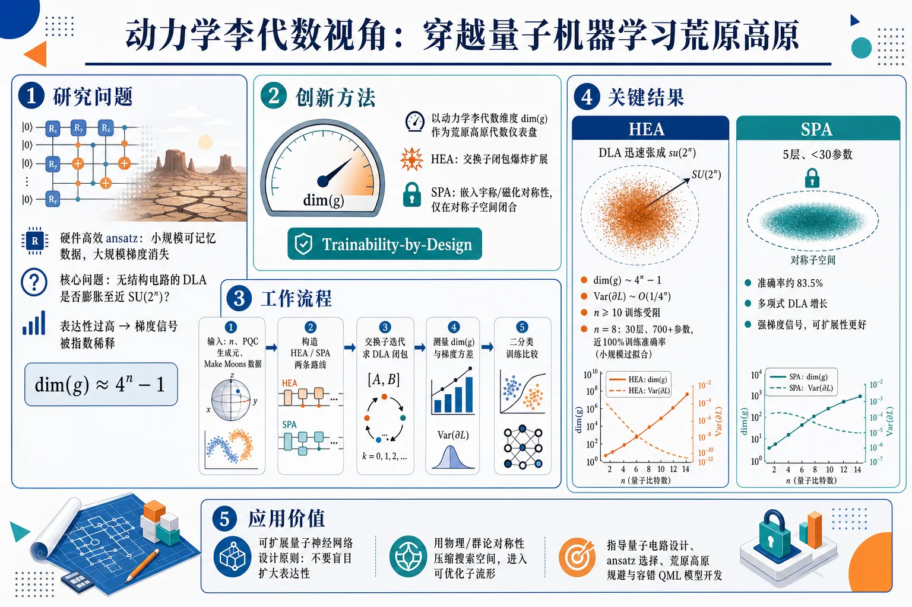
研究问题量子机器学习中，为什么硬件高效 ansatz 的高表达性在小规模能记忆数据、在大规模却陷入荒原高原？核心问题被重述为：无结构电路的动力学李代数维度是否指数膨胀到接近完整 SU(2ⁿ⁾，从而把梯度信号稀释到几乎不可见。创新方法用动力学李代数维度 dim(g) 作为荒原高原的代数仪表盘：HEA 的生成元交换子闭包像爆炸云一样扩展到 4ⁿ⁻¹ 维，导致梯度方差按 O(1/4ⁿ⁾ 消失；SPA 则把宇称、磁化等对称性嵌入量子门，使生成元只在对称子空间内闭合，形成“Trainability-by-Design”的可训练性预设计路线。工作流程输入量子比特数、PQC 生成元和 Make Moons 数据；构造两条电路路线：全轴旋转加全局纠缠的 HEA，以及与对称算符对易的 SPA；对生成元反复计算交换子得到 DLA 闭包；测量 dim(g) 增长和初始化梯度方差；最后在二分类任务中比较训练准确率、梯度稳定性和可扩展性。关键结果HEA 的 DLA 迅速张成 su(2ⁿ⁾，维度约 4ⁿ⁻¹，梯度方差接近 O(1/4ⁿ⁾，n≥10 时训练明显受阻；n=8 时 30 层、700+ 参数 HEA 可达到近 100% 训练准确率，但属于小规模量子过拟合。SPA 仅 5 层、少于 30 参数，准确率约 83.5%，但保持多项式 DLA 增长和强梯度信号。应用价值为可扩展量子神经网络提供架构设计原则：不要盲目扩大表达性，而要用物理或群论对称性把搜索空间压缩到可优化子流形中。该思路可作为量子电路设计、ansatz 选择、荒原高原规避和未来容错 QML 模型开发的结构化指南。第一部分：核心概览 (Overview)
该研究把量子机器学习中的荒原高原从“优化困难”重述为动力学李代数维度失控问题：硬件高效 ansatz 的高表达性使 (dim(mathfrak g)sim 4ⁿ⁻¹)，导致梯度方差按 (mathcal O(1/4ⁿ⁾) 指数衰减；对称保持 ansatz 通过几何先验把 DLA 限制在多项式增长区间，在 Make Moons 二分类中以约 83.5% 稳健准确率换取可扩展可训练性，提出“Trainability-by-Design”路线。
---
第二部分：结构化快速回顾
《Beyond the Expressivity-Trainability Paradox: A Dynamical Lie Algebra Perspective on Navigating Barren Plateaus in Quantum Machine Learning》（None，）
背景
量子机器学习依赖 PQC 在 (2ⁿ) 维希尔伯特空间中的表达能力，但高表达性会使电路逼近 unitary 2-design，诱发荒原高原。经典机器学习中容量增加主要带来过拟合风险；量子场景中，无结构高表达性同时造成小规模记忆化与大规模不可训练。
方法
以动力学李代数 (mathfrak g=Lie(mathcal G)) 作为诊断工具，比较两类 ansatz：无结构 HEA 与几何约束 SPA。通过梯度方差分析、DLA 闭包计算、Make Moons 二分类实验验证 (dim(mathfrak g)) 与可训练性的关系。
结果
HEA 的 (dim(mathfrak gHEA)sim 4ⁿ⁻¹)，梯度方差接近 (mathcal O(1/4ⁿ⁾)，在 (nge 10) 时训练受阻；(n=8) 时 30 层、700+ 参数 HEA 训练准确率接近 100%，但属于量子过拟合。SPA 仅 5 层、少于 30 参数，准确率约 83.5%，但保持多项式 DLA 增长和强梯度信号。
讨论
核心权衡不是“越表达越好”，而是表达性—可训练性代数权衡。限制 DLA 不是削弱模型，而是用对称性把搜索空间压缩到可优化区域，实现几何正则化。
局限
实验系统最大到 (n=10)，分类任务仅使用 Make Moons；未报告测试集规模、随机种子、重复次数、置信区间或 (P) 值；对噪声、真实硬件、非阿贝尔对称、复杂真实数据集仍未充分验证。
结论
可扩展 QML 需要从无结构 HEA 转向嵌入物理或群论对称的 ansatz。Trainability-by-Design 通过控制 DLA 增长，在牺牲部分记忆能力的同时避免荒原高原，是面向容错量子神经网络的重要设计原则。
---
第三部分：逐章节冷凝解析
1 Introduction
- Quantum machine learning promises exponential Hilbert-space capacity
QML 的理论吸引力来自量子态在 (n) 个量子比特上形成维度为 (mathcal O(2ⁿ⁾) 的希尔伯特空间，可利用叠加、纠缠、干涉表达经典神经网络难以处理的概率分布和特征映射。原文明确指出 QML 可 *"perform computations in a Hilbert space whose dimension scales exponentially as (O(2ⁿ)) with the number of qubits (n)"*，并且 PQC 可 *"model probability distributions and feature maps that are intractable for classical neural networks"*。
- Classical bias–variance intuition fails in QML
经典深度学习中，模型容量增加通常降低偏差、提高方差，常用 (L₂) 正则化或 dropout 控制过拟合；量子场景中，这种经验会失效，因为高容量不仅造成小规模量子过拟合，还会在大规模下造成量子欠拟合。原文将这种差异表述为 *"these intuitions fail spectacularly when transplanted into the quantum domain, introducing a dual threat of both extreme overfitting at small scales and catastrophic underfitting at large scales"*。
- Expressivity-trainability paradox defines the central bottleneck
表达性—可训练性悖论指同一个机制既提供潜在量子优势，也导致优化失效：探索完整酉群的能力越强，梯度越容易因测度集中而消失。原文给出核心判断：*"the very feature that grants QML its potential power—the ability to explore the full unitary group of the Hilbert space—is the exact mechanism that renders it impractical"*。
- Hardware-efficient ansatzes overfit small systems and fail at scale
早期 HEA 追求最大表达性；在小规模系统中，庞大参数空间可暴力记忆有限数据，形成严重量子过拟合；在可扩展系统中，当电路逼近 unitary 2-design，梯度方差按 (mathcal O(1/4ⁿ⁾) 指数下降，进入荒原高原。关键原文包括 *"these highly expressive, unstructured circuits suffer from severe quantum overfitting"*，以及 *"The variance of its gradients drops exponentially to (O(1/4ⁿ))"*。
- Barren plateaus are framed as quantum underfitting
荒原高原不是普通优化慢，而是梯度向量几乎不含方向信息，导致训练数据也无法拟合；因此大规模 QML 的失败被定义为量子欠拟合。原文写道：*"the optimization landscape flattens into a Barren Plateau (BP)"*，并进一步说明 *"the gradient vector provides no directional information, and the model collapses into a state of quantum underfitting"*。
- Architectural design replaces parameter tuning as the solution
解决悖论的重点从“调参数”转向“设计结构”：用代数与几何约束限制 ansatz 的可达算符空间。原文提出范式转移：*"Addressing this paradox requires a paradigm shift from 'optimizing parameters' to 'optimizing architecture'"*。
- DLA dimension is proposed as a predictor of barren plateaus
动力学李代数维度 (dim(mathfrak g)) 被作为判定表达性和可训练性的严格代数指标。核心论断为 *"We utilize the dimension of the DLA, denoted as (dim(mathfrakg)), as a rigorous algebraic predictor for the onset of Barren Plateaus"*。
- Geometric QML enables trainability-by-design
GQML 通过把物理或群论对称嵌入 ansatz，把 DLA 增长限制在多项式区间。原文的中心命题是 *"'Trainability-by-Design' can be achieved by employing Geometric Quantum Machine Learning (GQML) strategies"*，其机制是 *"restrict the DLA to a polynomial growth rate"*。
- Empirical validation uses Make Moons classification
研究不只停留在理论模型，而是在非线性二分类 Make Moons 数据集上验证 HEA 与 SPA 的差异。原文说明：*"we empirically validate this framework on a non-linear binary classification task (the Make Moons dataset)"*。
---
2 Literature Review and Theoretical Foundations
- QML design has shifted toward algebra-centric architectures
QML 的发展从模仿经典神经网络转向构建原生量子、代数中心的结构。原文概括为 *"a conceptual shift from emulating classical neural networks to developing natively quantum, algebra-centric architectures"*。
---
2.1 The Classical Benchmark vs. Quantum Expressivity
- Classical learning emphasizes capacity management
经典机器学习的核心框架是偏差—方差权衡，近年的 double descent 表明过参数化模型在隐式正则或优化偏置下也可能泛化，但总体仍需管理容量以避免过拟合。原文指出 *"the bias-variance tradeoff has guided algorithm design for decades"*，并补充 *"highly overparameterized models can generalize well if properly regularized or implicitly biased via Gradient Descent"*。
- Early QML chased maximum capacity through HEA
早期 QML 把高表达性视为优势来源，HEA 通过较浅深度实现强纠缠和广泛酉群探索；表达性常由接近 Haar measure 的能力衡量。原文说明 HEA 的主导地位来自 *"the desire to minimize gate depth while maximizing entanglement and expressivity"*，表达性指标为 *"the ability to uniformly explore the unitary group via the Haar measure"*。
- Higher expressivity was implicitly assumed to improve performance
无约束高表达性的默认假设是越能表达越能学习。原文直接指出：*"The implicit assumption was that higher expressivity would automatically yield better performance"*。
- Unconstrained expressivity creates a dual threat
小规模时，无约束表达性让模型暴力记忆训练集；大规模时，表达性触发优化灾难。原文总结为 *"unconstrained expressivity introduces a dual threat"*，具体包括 *"severe quantum overfitting"* 与 *"catastrophic optimization failures"*。
---
2.2 The Barren Plateau Phenomenon: The Root of Quantum Underfitting
- McClean et al. established the mathematical barren plateau result
荒原高原由 McClean 等人形式化证明，针对足够深、无结构、可形成 unitary 2-design 的电路。原文称其 *"mathematically proved the existence of Barren Plateaus (BPs)"*。
- Gradient variance decays exponentially as (mathcal O(1/4ⁿ⁾)
当电路形成 2-design 后，梯度方差随量子比特数 (n) 指数衰减，渐近标度为 (mathcal O(1/4ⁿ⁾)。原文写道：*"the gradient variance decays exponentially with the number of qubits (n), asymptotically scaling as (O(1/4ⁿ))"*。
- BPs differ from classical overfitting because the model cannot fit training data
经典过拟合是训练集拟合过好、测试泛化差；荒原高原则让训练本身失效。原文强调：*"This creates a scenario entirely distinct from classical overfitting; at scale, the model fails to fit the training data at all"*。
- Known BP triggers include noise and global cost functions
荒原高原不只来自电路表达性，还可由硬件噪声与全局代价函数引起。原文列出 *"hardware noise"* 和 *"global cost functions"* 作为触发因素。
- Existing mitigation strategies remain insufficient
分层训练、负学习率等策略已被提出，但荒原高原仍是可扩展 QML 的关键障碍。原文写道：*"Despite proposed mitigation strategies like layer-wise training or negative learning rates, BPs remain the critical barrier to QML scalability"*。
---
2.3 The Breakthrough: Dynamical Lie Algebras (DLA)
- Lie algebra provides a transformative trainability lens
李代数把电路可训练性连接到生成元的闭包结构，而非仅靠层数或参数量判断。原文称其为 *"A transformative theoretical development"*，即 *"the application of Lie Algebra to quantum circuit dynamics"*。
- Larocca et al. linked overparameterization to DLA dimension
QNN 的过参数化理论将可训练性与动力学李代数维度直接联系起来。原文写道：*"Larocca et al. pioneered the algebraic theory of overparameterization in QNNs, directly linking trainability to the dimension of the Dynamical Lie Algebra"*。
- Adjoint representation characterizes measure concentration
近期工作利用伴随表示刻画 (dim(mathfrak g)) 如何决定变分景观中的测度集中。原文指出 *"leveraged the adjoint representation to rigorously characterize how the scaling of (dim(mathfrakg)) dictates the concentration of measure in variational landscapes"*。
- XY-mixer topologies reveal concrete algebraic closures
针对 XY-mixer 等纠缠拓扑的研究能够精确映射约束优化空间中的代数闭包。原文称 *"specific entangling topologies, such as XY-mixer structures, have successfully mapped the precise algebraic closures"*。
- Polynomial DLA implies trainability; exponential DLA implies barren plateaus
文献共识是二分法：(dim(mathfrak g)) 多项式增长时模型保持可训练；指数增长时不可避免触发荒原高原。原文总结为 *"if (dim(mathfrakg)) scales polynomially with (n), the model remains inherently trainable; whereas exponential scaling inevitably triggers barren plateaus"*。
---
2.4 Geometric QML and Symmetry-Preserving Ansatzes
- GQML designs circuits equivariant to symmetry groups
几何量子机器学习将数据或物理系统的对称群直接写入电路，使模型满足等变性。原文定义为 *"the design of circuits that are equivariant to the symmetry groups of the underlying data or physical system"*。
- Group-theoretic constraints restrict evolution to trainable subspaces
群论对称约束可把酉演化限制在保持可训练性的子空间中。原文说明 *"imposing group-theoretic symmetry constraints successfully restricts the unitary evolution to a trainability-preserving subspace"*。
- Permutation-equivariant QNNs provide formal guarantees
置换等变 QNN 是具有理论保证的结构化架构例子。原文提到 *"formal theoretical guarantees for structural architectures such as permutation-equivariant quantum neural networks"*。
- SPA acts as structural regularizer through geometric priors
对称保持 ansatz 通过粒子数守恒、磁化强度、平移不变性等几何先验限制门结构，从而实现结构正则化。原文写道：*"By embedding geometric priors (such as particle-number conservation, magnetization, or translation invariance) directly into the gate structure, the Symmetry-Preserving Ansatz (SPA) acts as a powerful structural regularizer"*。
- Geometric hybrid methods can bypass the expressivity-trainability paradox
几何感知的量子—经典混合方法可在受限但有效的优化景观中训练。原文称其可 *"effectively navigate the optimization landscape, fully bypassing the expressivity-trainability paradox while guaranteeing scalable learning"*。
---
3 Theoretical Framework and Computational Methodology
- Training is treated as operator-space exploration
研究不把 PQC 训练视为启发式调参，而是视为在算符空间中的可达性与闭包问题。原文指出：*"we establish a formal framework rooted in Lie Algebra, treating the training dynamics of Quantum Machine Learning (QML) models as a problem of operator space exploration"*。
- The section defines DLA, SPA construction, and computational tests
理论框架包含 DLA 数学基础、对称保持 ansatz 的几何构造，以及评估系统的计算方法。原文概括为 *"delineates the mathematical foundations of Dynamical Lie Algebras (DLAs), details the geometric construction of symmetry-preserving ansatzes, and describes the computational methodology"*。
---
3.1 Mathematical Formulation of Parameterized Quantum Circuits
- PQC is a trainable unitary acting on (|0ångleøtⁱmes ⁿ)
参数化量子电路被定义为作用在初态 (|ψ₀ångle)，通常为 (|0ångleøtⁱmes ⁿ)，上的可训练酉演化。原文表述为 *"A Parameterized Quantum Circuit (PQC) can be mathematically defined as a trainable unitary evolution acting on an initial state (|ψ₀ångle), typically set to (|0ångleøtⁱmes ⁿ)"*。
- Circuit unitary is a product of generated exponentials and fixed gates
电路包含 (L) 层，每层由参数化旋转与固定酉门组成，形式为
[
U(boldsymbolθ)=prodₗ₌₁^L e⁻ⁱθₗHₗWₗ.
]
原文给出 *"the unitary transformation can be expressed as a product of exponentials generated by a set of Hermitian operators"*。
- Generators are often Pauli strings; fixed gates entangle
(Hₗ) 通常是 Pauli string (PinI,X,Y,Zøtⁱmes ⁿ)，HEA 中常用单量子比特旋转 (Xᵢ,Yᵢ,Zᵢ)，固定门如 CNOT 或 CZ 提供纠缠。原文写道：*"typically a Pauli string (PinI,X,Y,Zøtⁱmes ⁿ)"*，并说明 *"the fixed unitaries provide entanglement (e.g., CNOT or CZ gates)"*。
- Cost is an observable expectation value
VQA/QML 的目标是最小化可观测量 (O) 的期望值：
[
C(boldsymbolθ)=łangleψ₀|U^dagger(boldsymbolθ)OU(boldsymbolθ)|ψ₀ångle.
]
原文明确为 *"minimize a cost function (C(bmθ)) defined by the expectation value of an observable (O)"*。
- Trainability depends on partial derivative magnitude
可训练性由 (partial C/partialθₖ) 的大小决定；当电路形成 unitary 2-design，方差满足 (Var[partialₖ C]inmathcal O(1/4ⁿ⁾)。原文指出：*"The trainability of the model is determined by the magnitude of the partial derivatives"*，并给出 *"causing the variance of these derivatives to vanish exponentially with the number of qubits (n)"*。
---
3.2 The Dynamical Lie Algebra (DLA) Diagnostic Framework
- Depth is only a proxy; algebraic closure is fundamental
传统可训练性分析关注电路深度，但深度只是生成元代数闭包的间接指标。原文写道：*"depth is merely a proxy for a more fundamental property: the algebraic closure of the circuit’s generators"*。
- DLA is the primary diagnostic tool
DLA 被用作判断量子模型表达性与可训练性轮廓的核心工具。原文为 *"We employ the Dynamical Lie Algebra (DLA) as the primary diagnostic tool for determining the expressivity and trainability profile of a quantum model"*。
---
3.2.1 Definition and Lie Closure
- DLA is the Lie closure under commutators
给定生成哈密顿量集合 (mathcal G=H₁,H₂,dots,Hₘ)，DLA 是在交换子 ([A,B]=AB-BA) 下的实线性闭包：
[
mathfrak g=Lie(mathcal G)=spanₘₐₜₕbb RiHⱼ,i[Hⱼ,Hₖ],i[Hⱼ,[Hₖ,Hₗ]],dots.
]
原文定义为 *"the Lie closure of (G) under the commutator operation"*。
- DLA dimension measures reachable unitary manifold size
(dim(mathfrak g)) 衡量电路可生成酉操作流形的规模；可达酉群为 (emathfrak g)。原文写道：*"The dimension of this algebra, denoted as (dim(mathfrakg)), quantifies the size of the manifold of unitary operations that the circuit can generate"*，并说明 *"the reachable unitary group is (emathfrakg)"*。
---
3.2.2 The Link Between DLA Dimension and Barren Plateaus
- Exponential DLA scaling defines the BP regime
当 (dim(mathfrak g)simmathcal O(4ⁿ⁾)，ansatz 能探索 (SU(2ⁿ⁾)，达到完全表达性，但梯度信号被指数大空间稀释。原文表述为 *"If (dim(mathfrakg)simO(4ⁿ)), the ansatz is 'controllable' in the sense that it can explore the entire special unitary group (SU(2ⁿ))"*，并指出 *"Gradient signals are effectively diluted over this vast space"*。
- Polynomial DLA scaling defines the trainable regime
当 (dim(mathfrak g)simmathcal O(poly(n)))，模型被限制在小而结构化的子空间中，表达性降低但梯度方差只多项式衰减。原文写道：*"If (dim(mathfrakg)simO(poly(n))), the exploration is restricted to a small, structured subspace"*，其结果是 *"the gradient variance decays only polynomially, rendering the model trainable"*。
- The paradox becomes an algebraic trade-off
表达性—可训练性悖论被重构为 DLA 维度控制问题：为了可学习，必须用对称约束有意限制 (dim(mathfrak g))。原文总结为 *"This framework reframes the 'Expressivity-Trainability Paradox' as an algebraic trade-off"*，并强调 *"we must intentionally restrict (dim(mathfrakg)) via symmetry constraints"*。
---
3.3 Ansatz Architectures: Unstructured vs. Geometric
- Two ansatz classes test the DLA hypothesis
实验构造两类架构：无结构 HEA 与几何约束 SPA，用于验证 DLA 假设。原文说明 *"we construct two distinct classes of ansatzes for our numerical experiments"*。
---
3.3.1 Architecture I: The Unstructured Hardware-Efficient Ansatz (HEA)
- HEA prioritizes gate density over structure
HEA 代表 NISQ 时代标准路线，强调门密度和表达性，而非对称结构。原文称其 *"represents the standard approach in NISQ-era literature, prioritizing gate density over structure"*。
- HEA uses all-axis single-qubit rotations and global entanglers
(mathcal GHEA) 包含每个量子比特上的独立 (RX,RY,RZ) 旋转，并配合全局纠缠门。原文写道：*"includes independent single-qubit rotations on all axes ((RX,RY,RZ)) for every qubit, coupled with global entanglers"*。
- HEA Lie closure fills (su(2ⁿ⁾)
因为 (Xᵢ,Yᵢ,Zᵢ) 可生成单量子比特 (su(2))，纠缠门耦合所有量子比特后，闭包通常扩展到完整 (su(2ⁿ⁾)。原文说明：*"the Lie closure (mathfrakgHEA) typically expands to fill the entire (su(2ⁿ)) algebra"*。
- Expected HEA scaling is (4ⁿ⁻¹)
HEA 的预期 DLA 维度为 (4ⁿ⁻¹)，并因此迅速进入荒原高原。原文假设为 *"We hypothesize that (dim(mathfrakgHEA)) will scale as (4ⁿ-1), leading to immediate Barren Plateaus"*。
---
3.3.2 Architecture II: The Symmetry-Preserving Geometric Ansatz (SPA)
- SPA implements Geometric QML principles
SPA 通过尊重特定物理对称性来体现 GQML。原文写道：*"This architecture embodies the principles of Geometric Quantum Machine Learning"*。
- SPA generators commute with a symmetry operator
(mathcal GSPA) 限制为与对称算符 (S) 对易的生成元。例如允许 (Zᵢ) 与 (XᵢXⱼ₊YᵢYⱼ) 交换相互作用，排除单独的 (Xᵢ) 或 (Yᵢ) 旋转。原文指出：*"We restrict the generator set (GSPA) to operators that commute with a symmetry operator (S)"*，并举例 *"exchange interactions like (XᵢXⱼ₊YᵢYⱼ)"*。
- SPA closure is a strict subalgebra
SPA 的闭包 (mathfrak gSPA) 是 (su(2ⁿ⁾) 的子代数，并严格位于 (S) 的对易子结构内。原文为 *"the closure (mathfrakgSPA) is a subalgebra of (su(2ⁿ)) that is strictly contained within the commutant of (S)"*。
- Expected SPA scaling is polynomial
SPA 的预期是 (dim(mathfrak gSPA)) 多项式增长，从而保持高梯度方差并支持收敛。原文假设为 *"We hypothesize that (dim(mathfrakgSPA)) will scale polynomially, maintaining a high gradient variance and enabling convergence"*。
---
3.4 Computational Methodology and DLA Analysis
- Exact DLA computation is exponentially expensive
DLA 增长模拟和闭包计算依赖密集线性代数，复杂度指数增长；这反过来证明单靠经验试错设计 QML 不现实。原文写道：*"Simulating the DLA growth and calculating the exact algebraic closure for quantum systems involves dense linear algebra operations whose complexity scales exponentially"*。
- The computational bottleneck motivates algebraic design
计算瓶颈本身是论证的一部分：如果无结构试错需要指数代价，则必须预先进行理论代数设计。原文指出：*"This computational bottleneck precisely highlights why empirical trial-and-error in QML is inefficient, validating the need for theoretical algebraic design"*。
---
3.4.1 Computational Complexity of DLA Analysis
- Commutator closure iteratively expands the basis
DLA 计算从 (mathcal B=mathcal G) 开始，对所有 (A,Binmathcal B) 计算 (C=i[A,B])，若线性独立则加入基并重复。原文列出流程：*"Initialize the basis set (B=G)"*，*"compute (C=i[A,B])"*，*"If independent, add (C) to (B) and repeat"*。
- Operators are (2ⁿ×2ⁿ) matrices
线性独立性检查需要将算符表示为 (2ⁿ×2ⁿ) 矩阵，存储和计算随 (n) 指数增长。原文指出：*"This requires representing operators as matrices of size (2ⁿ×2ⁿ)"*。
- Rank computation scales as (mathcal O(D³⁾)
独立性检查涉及增长矩阵的秩计算，复杂度为 (mathcal O(D³⁾)，其中 (D=dim(mathfrak g))。原文为 *"an operation with complexity (O(D³)), where (D=dim(mathfrakg))"*。
- Worst-case HEA complexity approaches (mathcal O(64ⁿ⁾)
HEA 可使 (D) 达到 (4ⁿ)，因此最坏时间复杂度接近 (mathcal O(64ⁿ⁾)。原文明确指出：*"Since (D) can reach (4ⁿ) for HEAs, the worst-case time complexity approaches (O(64ⁿ))"*。
---
3.4.2 Implementation Environment
- Simulations use PennyLane and NumPy/SciPy
量子电路微分使用 PennyLane，代数操作使用 NumPy/SciPy。原文写道：*"Our simulations are implemented using the PennyLane framework for quantum circuit differentiation and NumPy/SciPy for algebraic manipulations"*。
- State-vector simulations cover up to (n=10)
训练动态与交换子闭包评估覆盖到 (n=10)，使用状态向量模拟。原文说明：*"To evaluate the training dynamics and commutator closures for systems up to (n=10), we employ state-vector simulations"*。
- HEA hits exponential memory wall; SPA avoids it by symmetry confinement
无结构 HEA 的完整 DLA 很快遭遇 (mathcal O(4ⁿ⁾) 生成元存储墙；SPA 的几何约束内在限制算符空间，使模拟更高效。原文写道：*"computing the full DLA for unstructured HEAs quickly hits the exponential memory wall"*，而 SPA *"intrinsically limit the operator space"*。
---
3.5 Experimental Design Summary
- Three numerical experiments test the thesis
研究设计三组数值实验：梯度方差、DLA 增长、分类任务。原文写道：*"we structured the investigation into three distinct numerical experiments"*。
- Gradient variance analysis quantifies decay rates
Fig. 1 对 HEA 与 SPA 的梯度进行统计采样，量化 (Var[partial C]) 的衰减率。原文为 *"We statistically sample gradients for both HEA and SPA architectures to quantify the theoretical decay rate of (Var[partial C])"*。
- DLA growth benchmarking verifies exponential versus polynomial scaling
Fig. 2 显式计算 (dim(mathfrak g))，验证 HEA 指数增长与 SPA 多项式增长。原文说明：*"We explicitly compute (dim(mathfrakg)) for both architectures to verify the exponential vs. polynomial scaling behaviors"*。
- Classification task links algebra to practical trainability
Fig. 3 使用 Make Moons 非线性二分类任务，检验代数结构是否转化为实际机器学习性能。原文写道：*"We perform a non-linear binary classification task on a standard dataset (Make Moons)"*。
---
4 Numerical Results and Empirical Analysis
- Numerical experiments validate the Lie-algebraic framework
实证比较 HEA 与 SPA，验证 DLA 维度、梯度方差、泛化—可训练性权衡之间的直接关系。原文指出：*"The results confirm the direct link between DLA dimensions, gradient variance, and the generalization versus trainability trade-off"*。
---
4.1 Gradient Variance and the Onset of Barren Plateaus
- Gradient variance is sampled for (nin[2,10])
第一项实验统计初始化参数空间中的梯度，计算 (Var[partialθ_₀C])，系统大小覆盖 (nin[2,10])。原文写道：*"we computed the variance of the partial derivative (Var[partial_θ₀C]) for both HEA and SPA across varying system sizes (nin[2,10])"*。
- HEA gradient variance decays exponentially
HEA 的梯度方差随量子比特数指数衰减；当深度足以近似 unitary 2-design 时，标度接近 (mathcal O(1/4ⁿ⁾)。原文说明：*"the gradient variance for the HEA decays exponentially"*，并且 *"the variance closely follows the (O(1/4ⁿ)) asymptotic scaling"*。
- HEA trainability is severely inhibited for (nge10)
在 (nge10) 时，HEA 梯度过小，标准优化器难以利用。原文给出具体阈值：*"severely inhibiting trainability for (n≥10)"*。
- SPA maintains polynomial gradient decay
SPA 受几何对称限制，梯度方差呈多项式衰减而非指数消失。原文写道：*"the SPA, constrained by geometric symmetries, exhibits a polynomial decay profile"*。
- Geometric constraints immunize against barren plateaus
SPA 通过限制探索空间，使梯度信号高于标准优化器精度下限。原文称其 *"remain robust and well above the precision limits of standard optimizers"*，并总结为 *"geometric constraints effectively immunize the ansatz against Barren Plateaus"*。
---
4.2 Dynamical Lie Algebra (DLA) Scaling Analysis
- Algebraic closure is explicitly calculated for both architectures
为解释梯度差异，生成元的代数闭包被显式计算。原文写道：*"we explicitly calculated the algebraic closure of the generators for both architectures"*。
- DLA computation is limited by exponential operator-space scaling
精确 (dim(mathfrak g)) 计算依赖计算密集型交换子闭包，受算符空间指数增长限制。原文说明：*"evaluating the exact (dim(mathfrakg)) relies on computationally intensive commutator closures"*。
- HEA spans (su(2ⁿ⁾) with dimension (sim4ⁿ⁻¹)
HEA 生成元快速张成完整 (su(2ⁿ⁾)，使 (dim(mathfrak gHEA)sim4ⁿ⁻¹)。原文为 *"rapidly spans the entire special unitary group (su(2ⁿ))"*，并给出 *"(dim(mathfrakgHEA)sim4ⁿ-1)"*。
- Exponential DLA explosion drives the paradox
HEA 的指数 DLA 增长被确定为表达性—可训练性悖论的根本机制。原文写道：*"This exponential explosion is the fundamental driver of the Expressivity-Trainability Paradox"*。
- SPA uses commutative symmetry invariants to bound DLA growth
SPA 通过宇称、磁化守恒等对易对称不变量限制 DLA 到多项式增长子空间。原文指出：*"designed with commutative symmetry invariants (e.g., parity or magnetization conservation)"*，并说明其 *"restricts the DLA to a subspace whose dimension grows only polynomially with (n)"*。
- Polynomial DLA preserves strong gradient magnitudes
SPA 的代数限制直接解释 4.1 中的强梯度。原文总结：*"This algebraic restriction is the exact mechanism that preserves the strong gradient magnitudes observed in Section 4.1"*。
---
4.3 Classification Task: Expressivity vs. Trainability Trade-off
- Make Moons classification is evaluated at (n=8)
两类 ansatz 在 (n=8) 的 Make Moons 非线性二分类任务上比较。原文为 *"we evaluated both ansatzes on a non-linear binary classification task (the Make Moons dataset) at (n=8)"*。
- The experiment reveals a quantum bias–variance analogue
该任务展示了经典偏差—方差权衡在量子场景中的特殊表现。原文写道：*"This experiment illuminates a uniquely quantum manifestation of the classical bias-variance tradeoff"*。
- (n=8) lies near the pre-BP threshold
(n=8) 被设置在绝对荒原高原发生前的临界附近，用于观察 HEA 小规模成功与大规模失败的转折。原文说明：*"At (n=8), the system size is on the threshold before the absolute onset of Barren Plateaus"*。
- HEA uses 30 layers and over 700 parameters
HEA 配置为 30 层、超过 700 参数，高度过参数化。原文给出具体数值：*"the highly expressive HEA (configured with 30 layers and over 700 parameters)"*。
- HEA achieves nearly 100% training accuracy but overfits
HEA 成功最小化损失，训练准确率接近 100%，但本质是通过暴力参数化记忆有限数据。原文写道：*"achieving a classification accuracy of nearly (100%)"*，并判断 *"this represents severe quantum overfitting"*。
- HEA becomes untrainable when scaled to (nge12)
DLA 分析表明，将同类高表达 HEA 扩展到 (nge12) 会因梯度指数消失而完全不可训练。原文明确指出：*"scaling this highly expressive model to (n≥12) would render it completely untrainable due to exponential gradient vanishing"*。
- SPA uses 5 layers and fewer than 30 parameters
SPA 配置极简，仅 5 层、少于 30 参数。原文给出具体数值：*"the geometrically constrained SPA (configured with merely 5 layers and (<30) parameters)"*。
- SPA reaches about 83.5% robust accuracy
SPA 表达性受限，因此训练准确率平台约 83.5%，但结果稳定。原文写道：*"resulting in a plateaued but robust accuracy (around (83.5%))"*。
- Lower SPA accuracy is interpreted as the cost of stability
SPA 准确率低于 HEA 不是失败，而是换取架构稳定性与可扩展训练的必要成本。原文强调：*"this lower training accuracy is not a failure; it is the necessary cost of architectural stability"*。
- SPA trainability is guaranteed by polynomial DLA bound
因为 SPA 的 DLA 多项式有界，其可训练性不随系统大小指数恶化。原文写道：*"Because the SPA’s DLA dimension is polynomially bounded, its trainability is guaranteed regardless of system size"*。
- Central empirical thesis is confirmed
最大化表达性导致规模化灾难；嵌入几何先验牺牲记忆能力，换取可扩展、梯度丰富的训练景观。原文总结为 *"maximizing expressivity (HEA) leads to catastrophic trainability issues at scale"*，而 *"embedding geometric priors (SPA) sacrifices raw memorization capacity to secure scalable, gradient-rich training landscapes"*。
---
5 Conclusion and Future Work
- Unchecked expressivity is detrimental in quantum learning
与经典深度学习中常见的扩大容量不同，量子模型中无约束表达性会损害可扩展学习。原文写道：*"Contrary to classical deep learning intuitions—where model capacity is often maximized to achieve better data fitting—we demonstrated that in the quantum domain, unchecked expressivity is highly detrimental"*。
- Expressive models overfit small scales and hit barren plateaus at scale
高表达模型在小规模表现为表层量子过拟合，在大规模不可避免进入荒原高原。原文指出：*"highly expressive models not only suffer from superficial quantum overfitting at small scales but inevitably lead to the Barren Plateau phenomenon at scale"*。
- Barren plateaus make gradient learning mathematically impossible
荒原高原被定义为基于梯度的学习数学上不可行的状态。原文写道：*"a state where gradient-based learning becomes mathematically impossible"*。
- Contribution 1: Geometric regularization over brute expressivity
非线性分类任务表明 HEA 通过过参数化记忆有限数据，SPA 则作为结构正则化器，牺牲不可扩展记忆能力以确保稳健可训练性。原文贡献表述为 *"Geometric Regularization over Brute Expressivity"*，并说明 SPA *"sacrifice raw, unscalable memorization capacity to ensure robust and generalizable trainability"*。
- Contribution 2: DLA unifies gradient decay and algebraic dimension
研究建立了梯度方差衰减与 DLA 维度之间的直接实证联系，验证限制 DLA 多项式增长是避免指数梯度消失的必要代数条件。原文写道：*"We established a direct empirical link between gradient variance decay and the dimension of the DLA"*，并称 *"restricting the DLA to a polynomial growth rate is a necessary algebraic condition"*。
- Contribution 3: Trainability-by-design through physical symmetries
通过把物理对称性嵌入电路架构，训练过程可被隔离于荒原高原之外。原文称为 *"A Paradigm of Trainability-by-Design"*，并说明 *"embedding physical symmetries directly into the circuit architecture"* 可 *"insulated the learning process against Barren Plateaus"*。
- Future work should explore non-Abelian and topological symmetries
后续方向包括构造尊重更复杂连续非阿贝尔对称如 (SU(2)) 或离散拓扑对称的等变 QNN。原文写道：*"Future research should explore the construction of equivariant quantum neural networks that respect more complex, non-Abelian continuous symmetries (such as (SU(2))) or discrete topological symmetries"*。
- Noise-induced barren plateaus remain open
受限 DLA 与硬件退相干之间的关系仍未解决，尤其是几何约束是否天然抵抗噪声诱导荒原高原。原文指出：*"investigating the interplay between restricted DLAs and hardware-induced decoherence"* 是 *"a critical open question"*。
- Scalable QML requires abandoning heuristic unstructured circuits
面向可扩展、容错 QML，必须从启发式无结构电路转向代数几何驱动设计。原文结论为 *"moving away from heuristic, unstructured circuit designs and embracing 'Trainability-by-Design' through algebraic geometry will be essential"*。
---
Conflict of Interest
- No financial or commercial conflict is declared
利益冲突声明明确排除财务或商业冲突。原文为 *"The authors declare no financial or commercial conflicts of interest"*。
---
Table of Contents Entry
- The graphical summary restates the main mechanism
摘要条目再次强调：最大化表达性导致量子欠拟合与规模化不可训练；DLA 视角下，SPA 作为几何正则化器限制算符空间增长并保证梯度丰富景观。原文写道：*"maximizing expressivity in Quantum Machine Learning induces a state of quantum underfitting"*，并称 SPA *"restricting operator space growth and guaranteeing scalable, gradient-rich training landscapes"*。
---
第四部分：深度理解与语言支持
1. 术语解析
Barren plateau
字面意思是“贫瘠高原”，学术上指变分量子电路的损失景观在高维希尔伯特空间中变得几乎平坦，梯度均值接近 0 且方差指数小。这里不是普通局部极小值，而是整个可探索区域缺乏可用梯度信号。文中标度为 (mathcal O(1/4ⁿ⁾)，说明量子比特数增加会让梯度估计成本指数增长。
Expressivity-trainability paradox
“表达性—可训练性悖论”并非说表达性总是坏，而是说在无结构 QML 中，追求接近 Haar 随机酉的表达能力会导致测度集中，进而破坏梯度优化。微妙之处在于：表达性在小规模上表现为记忆能力，在大规模上转化为不可训练性。
Dynamical Lie algebra
动力学李代数是由电路哈密顿生成元及其反复交换子生成的实李代数。它描述电路实际可达的酉演化方向集合。相比“参数个数”或“层数”，DLA 更接近模型真实自由度。若闭包接近 (su(2ⁿ⁾)，表达性极强但容易荒原高原；若闭包被对称性限制，可训练性更好。
Symmetry-preserving ansatz
对称保持 ansatz 指所有可训练门都遵守某个物理或群论对称，例如粒子数、磁化强度、宇称等守恒。它不是单纯减少参数，而是减少“错误方向”的自由度，把学习限制在符合任务结构的子空间中，因此具有几何正则化作用。
Trainability-by-design
该表达强调可训练性不是后期调优化器或学习率得到的，而是在电路结构设计阶段通过代数约束预先保证。其含义接近“通过架构先验保证梯度可用”，比普通 regularization 更偏结构性和理论驱动。
---
2. 疑难查证
为什么 DLA 维度能预测荒原高原？
PQC 的每个参数门 (e⁻ⁱθₗHₗ) 都提供一个可移动方向。多个生成元之间的交换子会产生新的有效方向，例如 ([Hⱼ,Hₖ])、([Hⱼ,[Hₖ,Hₗ]])。这些方向的集合闭包就是 (mathfrak g)。
若 (dim(mathfrak g)approx 4ⁿ⁻¹)，电路几乎能覆盖 (SU(2ⁿ⁾)。这听起来很强，但在高维空间中会产生测度集中：大多数随机方向上的代价函数值都接近平均值，梯度差异被指数稀释。于是优化器看到的是几乎全平的景观。
若 (dim(mathfrak g)) 只按多项式增长，电路无法乱跑到整个希尔伯特空间，而是在一个结构化子流形中优化。空间小、方向少、对称性强，梯度信号不容易被指数平均掉。
为什么 HEA 小规模能接近 100%，却被视为坏现象？
在 (n=8) 时，HEA 还未完全进入荒原高原，而且有 30 层、700+ 参数。对有限 Make Moons 数据，它可以通过巨大自由度记忆训练样本，训练准确率接近 100%。这类似经典模型过参数化记忆训练集。
但量子场景更危险：同一结构扩展到 (nge12) 后，DLA 指数膨胀，梯度方差指数消失，模型连训练集都难以拟合。因此 HEA 的小规模成功不是可扩展优势，而是不可扩展记忆能力的表象。
为什么 SPA 准确率较低反而更有价值？
SPA 只有 5 层、少于 30 参数，训练准确率约 83.5%。这说明它没有用暴力参数化记忆每个样本，而是在受对称性限制的子空间中学习可泛化结构。它牺牲部分训练集拟合能力，换取多项式 DLA 增长和可扩展梯度。对大规模 QML，这种稳定性比小规模极高训练准确率更关键。
“Quantum underfitting” 与经典欠拟合有什么不同？
经典欠拟合通常来自模型太简单，表达能力不足。这里的量子欠拟合反而来自模型太表达：电路太接近随机酉，梯度因测度集中而消失，优化器无法找到拟合训练数据的方向。也就是说，它不是“模型不能表示答案”，而是“模型虽然能表示答案，但训练过程找不到答案”。
---
第五部分：创新评估与关联
1. 创新性判断
从表达性指标转向代数维度诊断
过去 2–5 年相关工作已分别发展了荒原高原理论、QNN 过参数化理论、伴随表示分析、等变 QNN 与 GQML。该研究的新颖性在于把这些线索组合成一个直接设计原则：以 (dim(mathfrak g)) 作为连接表达性、梯度方差、可训练性、泛化表现的统一变量。
把“小规模量子过拟合”和“大规模量子欠拟合”纳入同一机制
以往荒原高原研究主要解释大规模训练失败，过拟合研究更多沿用经典偏差—方差语言。该研究将二者统一到 HEA 的无结构高表达性：小规模表现为记忆化，规模扩大后表现为梯度消失。这种“同一架构缺陷的两种尺度表现”是较有洞察力的概念整合。
将 DLA 从后验分析工具推进为架构设计原则
DLA 在近期文献中常用于分析 ansatz 是否可控、是否过参数化、是否会出现荒原高原。该研究进一步提出 Trainability-by-Design：在设计阶段通过对称性约束主动限制 DLA，而不是训练失败后再补救。这使 DLA 成为工程化 QML 架构搜索的原则。
用几何先验解释 SPA 的正则化作用
SPA 的价值不只是参数少，而是其生成元与对称算符对易，使可达酉群被限制在任务相关子流形中。这把经典几何深度学习中的 equivariance/inductive bias 思想迁移到 QML，并用 DLA 维度提供代数解释。
解决的前人未完全解决问题
前人已经知道：高表达性可能导致荒原高原；对称性可能改善训练；DLA 可描述可控性。该研究进一步回答了一个更设计导向的问题：如何在 QML 中选择“足够表达但仍可训练”的 ansatz？ 答案是避免追求完整 (SU(2ⁿ⁾)，而用任务或物理对称性把 (dim(mathfrak g)) 控制在多项式增长区间。
主要不足影响创新强度
实验细节仍不充分：未给出 Make Moons 样本量、训练/测试划分、优化器、学习率、epoch 数、随机重复次数、误差条、置信区间、统计显著性 (P) 值。图示结论虽清晰，但若没有完整可复现实验设置，实证力度弱于理论叙事。最大规模只到 (n=10)，而 (nge12) 的不可训练性属于 DLA 推断而非直接训练实验。
-
03
📄 摘要：指出机器学习势是用于采样的生成器而非只做回归的模型；标准 MSE 在 DFT 数据上可达化学精度，却仍给出错误平衡分布。引入对比正则化，使势能面训练显式约束采样分布，缓解点误差与热力学统计量不一致的问题。
💡 亮点：对比正则化直接针对机器学习势定义的平衡分布，而非只压低能量和力的 MSE。该思路把势能训练从点预测推向正确采样，对分子动力学和材料热力学更关键。
📖 展开分析 + 配图
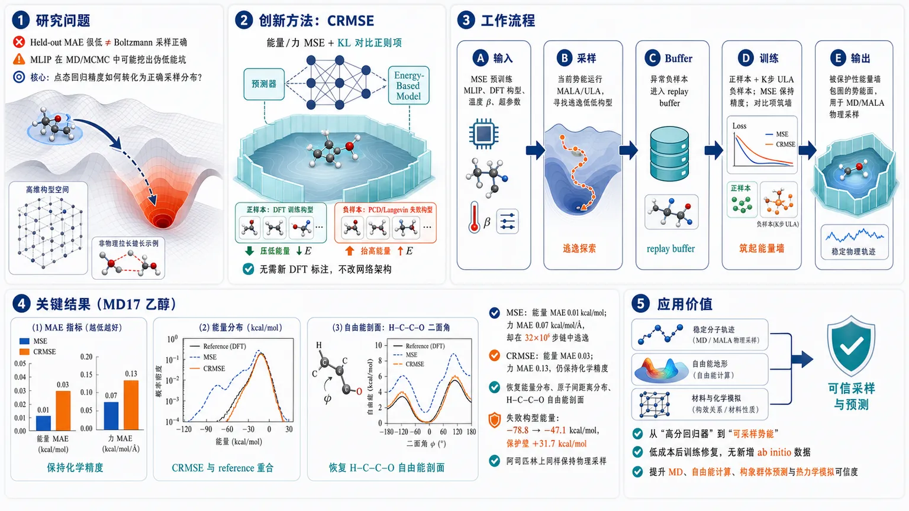
研究问题机器学习原子间势能通常用能量/力 MSE 训练，在测试集上可达到化学精度，但一旦用于 MD/MCMC 采样，会在训练数据之外的高维构型空间挖出“伪低能坑”，轨迹像小球滑入不存在的深谷，生成非物理键长、错误能量分布和失真的热力学自由能；核心问题是：点态回归精度如何转化为正确的 Boltzmann 采样分布？创新方法提出 CRMSE：在标准能量/力 MSE 外加入由 KL 散度推导的对比正则项，把同一个势能网络同时当作预测器和 energy-based model；训练数据构型作为正样本被压低能量，模型通过持久 Langevin/PCD 自己采到的失败构型作为负样本被抬高能量，像在物理盆地外筑起“保护性能量墙”；无需新 DFT 标注、不改网络架构，只做后训练修复。工作流程输入 MSE 预训练 MLIP、DFT 训练构型、温度 β 与 CRMSE 超参数；先用当前势能运行 MALA/ULA，收集模型会逃向的异常低能构型并放入 replay buffer；每轮从训练集取正样本、从 buffer 经 K 步 ULA 更新负样本；计算 MSE 保持数据盆地精度，同时用对比项降低正样本能量、升高负样本能量；迭代后输出被保护墙包围的势能面，再用于 MALA/MD 生成物理采样轨迹。关键结果在 MD17 乙醇上，MSE 模型测试能量 MAE 仅 0.01 kcal/mol、力 MAE 0.07 kcal/mol/Å，却在 32 条、每条 10⁶ 步 MALA 链中逃离物理盆地；CRMSE 后能量/力 MAE 仍为 0.03 kcal/mol 与 0.13 kcal/mol/Å，保持化学精度，并恢复能量分布、原子间距离分布和 H–C–C–O 二面角自由能剖面；失败 buffer 构型平均能量从 MSE 下 −78.8 kcal/mol 被抬到 −47.1 kcal/mol，形成 31.7 kcal/mol 保护壁；阿司匹林上也保持物理采样。应用价值该研究说明 MLIP 不能只看 held-out MAE，真正用于分子模拟时必须训练其自身诱导的采样分布；CRMSE 提供一种低成本、无新增 ab initio 数据的后训练方案，可把已训练但采样不可靠的势能从“高分回归器”改造成“可采样势能”，提升分子动力学、自由能计算、构象群体预测和材料/化学热力学模拟的可信度。第一部分：核心概览 (Overview)
CRMSE 将机器学习势能从点态回归精度转向采样分布正确性：标准 MSE 训练可在 MD17 乙醇/阿司匹林上达到化学精度，却在 MALA 采样中坠入伪低能极小值。CRMSE 以势能网络自身作为能量模型，通过持久 Langevin 负样本抬高模型自发访问的非物理构型能量，无需新增 DFT 数据，恢复能量分布、距离分布与二面角自由能剖面，突出“可采样 MLIP”需要分布级训练这一独立要求。
---
第二部分：结构化快速回顾
《Contrastive Regularization of Machine Learning Potentials》（None，）
背景
机器学习原子间势能通常用 DFT 能量与力的 MSE 训练，并在留出集上追求化学精度；但实际用途是驱动 MD/MCMC 采样，关键目标是复现由势能定义的 Boltzmann 平衡分布。点态误差小不保证采样分布正确。
方法
提出 Contrastive Regularized MSE, CRMSE：在 MSE 上加入由 KL divergence 导出的对比正则项。训练数据构型作为正样本，其能量被压低；模型经 ULA/PCD 自采样得到的负样本作为反例，其能量被抬高。该过程作为 MSE 预训练模型的后训练步骤，不改架构，不增添 ab initio 标注。
结果
在 MD17 乙醇上，MSE 模型的测试能量 MAE 为 0.01 kcal/mol、力 MAE 为 0.07 kcal/mol/Å，但 32 条、每条 10⁶ 步 MALA 链逃离物理盆地。CRMSE 后能量 MAE 为 0.03 kcal/mol、力 MAE 为 0.13 kcal/mol/Å，仍在化学精度内，并恢复能量分布、原子间距离分布和 H–C–C–O 二面角自由能剖面。阿司匹林结果同样保持物理采样。
讨论
关键机制是抬高模型自身采样到的 OOD 低能构型。乙醇 replay buffer 构型在 MSE 下平均能量为 −78.8 kcal/mol，CRMSE 后升至 −47.1 kcal/mol，形成 31.7 kcal/mol 的保护性能垒。
局限
CRMSE 不给 OOD 区域提供真实 DFT 精度，只抑制其低能吸引性；它恢复采样支持与物理盆地约束，但无法替代 active learning 中新增 DFT 标注。二面角自由能在稀疏采样的势垒顶部仍有约 0.5–0.6 kcal/mol 残差。
结论
MLIP 的可靠性不能只由 held-out MSE 衡量。若模型作为采样器使用，训练目标必须约束其自身诱导的分布；CRMSE 提供了一种低成本、后训练、无新增 DFT 的分布级修正方案。
---
第三部分：逐章节冷凝解析 (Section-by-Section Condensing)
Abstract
Regression accuracy and sampling validity are separated
机器学习原子间势能虽然以能量与力预测训练，但真正用途是生成分子模拟轨迹，物理可观测量来自模型定义的平衡分布平均。核心问题是：learned regressors deployed as generators 中，点态准确性并不保证分布正确。摘要明确指出：*"Machine learning interatomic potentials are trained to predict energies and forces but built to be sampled"*，并进一步概括为 *"pointwise accuracy does not guarantee a correct distribution."*
MSE-trained MLIPs can reach chemical accuracy yet fail as samplers
标准 MSE 在 DFT 数据上训练的势能即使在留出集上达到化学精度，仍会在采样中进入伪低能极小值，导致热力学可观测量严重偏离参考。证据表述为：*"potentials trained by standard Mean Squared Error (MSE) minimization on Density Functional Theory (DFT) data can reach chemical accuracy on held-out data, yet still fail as samplers"*；失败模式是轨迹 *"drift into spurious low-energy minima"*，并返回 *"thermodynamic observables that depart sharply from the reference."*
CRMSE adds a KL-derived contrastive correction without new ab initio data
CRMSE 是后训练步骤，在 MSE 上加入来自模型隐式 Boltzmann 分布与目标分布之间 Kullback–Leibler divergence 的对比项。网络本身充当能量模型，持久 Langevin 链暴露模型会逃向的构型，并提高这些构型能量。关键证据为：*"we introduce Contrastive Regularized MSE (CRMSE), a post-training step that augments the MSE with a contrastive term derived from the Kullback–Leibler divergence"*；机制是 *"persistent Langevin chains expose the configurations it drifts into and raise their energy, adding no new ab initio data."*
MD17 ethanol and aspirin validate distribution-level correction
在 MD17 乙醇与阿司匹林上，CRMSE 使采样器局限于物理盆地，并近定量恢复能量分布、原子间距离分布与二面角自由能剖面，同时保持力精度与化学精度内能量误差。摘要证据为：*"On the ethanol and aspirin molecules of the MD17 dataset, CRMSE confines the sampler to the physical basin and recovers the energy distribution, interatomic-distance distributions, and dihedral free-energy profiles to near-quantitative agreement with DFT."*
Distribution-level training is a distinct requirement
核心学术地位在于证明：在 MD17 这类广泛基准上，MSE 训练仍可能采样失败；可靠采样依赖模型对自身生成分布接受训练，而非仅依赖数据量或回归精度。摘要总结为：*"reliable sampling depends less on data volume than on training the model against the distribution it produces"*；并给出强结论：*"distribution-level training is not a refinement of regression accuracy, but a distinct requirement."*
---
I Introduction
DFT is accurate but too expensive for extended sampling
Density Functional Theory, DFT 提供量子力学电子结构计算框架，广泛用于材料、物理、化学和生物体系，但其随体系尺寸急剧增长的计算成本限制了从第一性原理进行长时间热力学采样。原文称：*"Density Functional Theory (DFT) provides a rigorous quantum-mechanical framework for computing the electronic structure of atoms, molecules, and materials"*；瓶颈是 *"DFT scales steeply with system size"*，因此对 *"extended sampling required to compute thermodynamic observables"* 来说 *"prohibitively expensive."*
MLIPs approximate DFT surfaces at lower cost
Machine Learning Interatomic Potentials, MLIPs 被设计为 DFT 能量面的数据驱动替代物，以更低成本保留较高精度。原文表述为：*"This bottleneck has motivated Machine Learning Interatomic Potentials (MLIPs), data-driven surrogates that approximate the DFT energy surface at a fraction of the cost while retaining much of its accuracy."*
GNNs dominate because they encode molecular symmetries
多数 MLIP 采用 Graph Neural Networks, GNNs，原因是其架构能编码原子体系的旋转对称性和置换对称性。证据为：*"These models are most often Graph Neural Networks (GNNs), whose architecture encodes the rotational and permutational symmetries of atomic systems."*
Standard training minimizes energy-force MSE
主流范式通过最小化 DFT 生成的能量与原子力的 Mean Squared Error, MSE 来训练，某些方法会自适应调整能量项和力项权重。原文为：*"The dominant paradigm trains them by minimizing a Mean Squared Error (MSE) loss on DFT-generated energies and atomic forces, sometimes with adaptive weighting of the two contributions."*
Held-out chemical accuracy is not the operational goal
MLIP 的操作目标不是单点预测，而是驱动 molecular dynamics 或 Monte Carlo simulations，从中提取自由能剖面、结构分布和构象群体等分布平均量。原文直指问题：*"Yet predicting energies and forces is not why we build these models."* 实际观测量包括 *"free-energy profiles, structural distributions, conformational populations"*，并且每个都是 *"an average over the equilibrium distribution that the potential itself defines."*
Pointwise accuracy does not control generated distributions
一个模型在训练点上很准确，仍可能产生无意义模拟，因为点态准确性无法约束采样时模型诱导的分布。关键句为：*"A model can therefore be accurate at every training point and still generate a meaningless simulation, because nothing in its pointwise accuracy controls the distribution it produces when sampled."*
The broader AI framing is regressors used as generators
MLIP 是更广泛 AI 问题的实例：学习代理通常作为回归器训练，却通过模拟或采样作为生成器部署。原文称：*"MLIPs are one instance of a broader setting in AI: learned surrogates are often trained as regressors but then deployed as generators, through simulation or sampling."* 因而关键对象不仅是构型给定时能量预测，还包括 *"the probability distribution induced by repeatedly querying and sampling the model."*
MSE optimizes an inappropriate statistical target
标准 MSE 被批评为追逐错误目标：它等价于在“能量是有噪声测量”这一不物理假设下做最大似然，但固定构型能量是确定性的；同时 MSE 不包含温度或熵。原文为：*"Standard training misses this because the MSE is chasing the wrong target."* 具体原因包括 *"It is maximum-likelihood estimation under the unphysical premise that energies are noisy measurements — they are not"*，以及 *"it never refers to temperature or entropy."*
Finite training data leave almost all configuration space unconstrained
MSE 只钉住数据所在区域，其他构型空间几乎全部不受约束；有限训练集覆盖比例随原子数呈指数缩小。原文为：*"The MSE pins the energy only where data exist and leaves the rest of configuration space free"*；尺度效应是 *"the fraction covered by a finite training set shrinks exponentially with the number of atoms."*
Expressive networks inevitably carve spurious low-energy minima
高表达能力网络会在未访问区域形成伪低能极小值，并且不损害留出集精度。原文称：*"In this vast empty region an expressive network inevitably carves spurious low-energy minima, with no penalty on held-out accuracy."* 长时间模拟会找到这些“洞”：*"A simulation that explores long enough finds these holes, falls in, and returns unphysical configurations and incorrect thermodynamics."*
The failure is statistical rather than architectural
该失败不是特定网络结构缺陷，而是有限数据回归的统计后果，因此不能仅靠更好架构修补。原文明确：*"The failure is statistical rather than architectural, and it cannot be patched by a better network."*
CRMSE lets the model expose and correct its own failures
修正思路是从当前势能运行短模拟，收集模型漂移到的非物理构型，并提高其能量以填平伪盆地。原文为：*"let the model expose its own failure and correct it"*；具体操作是 *"run short simulations from the current potential, collect the unphysical configurations it drifts into, and raise their energy so the spurious basins are filled back in."*
CRMSE combines MSE with contrastive data-vs-model terms
CRMSE 保留 MSE 以维持训练数据区域精度，并用对比项将训练数据与模型生成构型相对照：数据能量降低，模型样本能量升高。原文称：*"an MSE term keeps the potential accurate on the training data, while a contrastive term plays those data off against the model’s own simulated configurations, lowering the energy of the data and raising it on the model samples."*
No additional ab initio data are required
CRMSE 不需要新的第一性原理计算，模型用自身采样暴露错误。原文为：*"No new ab initio calculations are needed — the model labels its own mistakes"*，并且该方法是 *"a cheap post-training step on top of an already-trained MLIP."*
The statistical physics basis is KL/free-energy minimization
复现 Boltzmann 分布等价于最小化自由能或 Kullback–Leibler divergence，与平均场理论和 Bogoliubov 不等式同源。原文为：*"Reproducing the Boltzmann distribution means minimizing a free energy, equivalently a Kullback–Leibler divergence — the variational principle behind mean-field theory and the Bogoliubov inequality."*
CRMSE adapts energy-based contrastive training to MLIPs
对于表达力强的势能，完整分布目标不可解；可行替代是 energy-based models 的对比训练：降低数据构型能量，提高模型构型能量。原文称：*"it has a well-known tractable counterpart: the contrastive training of energy-based models"*，CRMSE 则 *"adds this contrastive term to the MSE."*
The same interatomic potential acts as its own energy-based model
区别于 Boltzmann generators、normalizing flows、score-based samplers、relative-entropy coarse-graining 与 differentiable trajectory reweighting，CRMSE 不训练外部生成模型，也不拟合外部 ensemble 或实验观测量；同一网络既给出能量与力，又被训练去修正自身定义的分布。原文为：*"the interatomic potential is its own energy-based model: the same network that supplies energies and forces is trained to reproduce the Boltzmann distribution it defines."*
CRMSE differs from active learning and uncertainty filtering
已有修复策略通常注入外部信息或偏置：active learning 对错误构型做新 DFT 标注，ensemble uncertainty 用于排除不可信区域，手工 repulsive priors 预先禁止糟糕构型。CRMSE 则 *"injects nothing from outside"*；它与 active learning 的关系是 *"complementary rather than equivalent."*
CRMSE restores support but not off-manifold physical accuracy
CRMSE 的目标有限而明确：恢复采样分布的正确支持，抑制伪低能极小值，但不提高 OOD 区域真实 DFT 精度。原文为：*"It also does less by design: it restores the correct support of the sampling distribution"*，但 *"it does not improve the potential’s accuracy in those off-manifold regions, which would demand data it never sees."*
Experimental setup deliberately isolates the training objective
验证使用 MD17 中乙醇和阿司匹林，分别为 9 与 21 原子气相分子，并采用 GNN with local frame, GNN-LF 架构。关键控制是无新参考数据、无架构修改。原文为：*"gas-phase systems of nine and twenty-one atoms"*；并且 *"with no new reference data and no architectural changes, so that any improvement is attributable to the training objective alone."*
MSE failure appears even for small molecules
标准 MSE 模型在回归指标上准确，却采样到比参考低数十 kcal/mol 的区域，并出现非物理拉伸距离。原文称：*"Standard MSE training yields models that are accurate by every regression metric, yet whose sampler drifts out of the physical basin until the energies it visits lie tens of kcal/mol below the reference, with interatomic distances stretched to unphysical values."*
Dihedral free energy is the stringent test
二面角自由能剖面检验物理盆地内部相对群体，而不是仅检验是否被约束在盆地内。原文为：*"The stringent test is the free-energy profile along a dihedral angle: it probes the relative populations within the basin."* CRMSE 在该测试中实现近定量恢复，并在训练集明显缩减时仍有效：*"CRMSE recovers this profile to near-quantitative agreement with the DFT reference, and does so even when the training set is sharply reduced."*
---
II Method
#### II.1 Contrastive Regularization
The learning target is an ab initio energy surface
目标是寻找参数 θ，使机器学习势能 Eθ(x) 逼近 ab initio 能量面 E(x)，其中 x ∈ ℝ³ⁿ 表示 n 个原子的笛卡尔坐标。公式给出：*"where x∈ℝ3n denotes the vector of Cartesian coordinates of a system of n atoms, Eθ(x)≈E(x)."*
Standard MSE constrains only training configurations
典型 MLP/MLIP 文献中最小化能量 MSE：
[
LMSE(θ)=frac1Nsumᵢ₌₁N(E_θ(xᵢ₎₋E(xᵢ₎₎²
]
训练集为 𝒟 = (xi, E(xi))，且 xi ∼ p(x)。原文说明该损失 *"constrains the values of Eθ(xi) solely through the training dataset 𝒟."*
The derivation uses energy-only notation but experiments include forces
推导为清晰起见只写能量项，但所有数值实验使用能量与力联合目标。力定义为 Fθ(x)=−∇xEθ(x)。原文为：*"We keep the energy-only form throughout the derivation and notation below for clarity, and use this force-augmented objective in all numerical experiments of Sec. III."*
MSE leaves unvisited space free for arbitrary low energy
由于 MSE 在训练点外没有信号，模型可在未覆盖区域取任意低值。原文为：*"Because the MSE loss provides no signal outside the training points xi, the model is free to take arbitrarily low values throughout the regions of configuration space not covered by 𝒟."*
Spurious minima are a finite-data regression inevitability
伪极小值不是架构缺陷，而是有限数据回归的基本限制；足够表达的模型能在未访问区域生成低谷且不影响训练集准确性。原文称：*"This is not a deficiency of any particular architecture of Eθ, but a fundamental limitation of regression on finite data"*，并补充 *"any sufficiently expressive model can develop spurious minima in unvisited regions without any degradation of accuracy on 𝒟."*
Dimensionality makes the problem exponentially worse
构型空间维度为 3n，有限训练集覆盖比例随 n 指数下降。原文为：*"the fraction of ℝ3n sampled by a finite training set vanishes exponentially with n, making spurious minima a statistical inevitability rather than a pathological edge case."*
MD trajectories amplify isolated landscape defects
分子模拟会连续生成新构型；一旦遇到伪极小值，轨迹会被困住并产生非物理结构。原文指出：*"the simulation continuously generates new configurations by integrating the equations of motion, and any spurious minimum encountered will trap the trajectory."*
CRMSE targets the full model-defined Boltzmann density
训练目标需包含学习势能隐式定义的完整概率密度：
[
p_θ(x)=frace⁻β E_θ⁽x⁾Z_θ.
]
原文为：*"the training objective must account for the full probability density implicitly defined by the learned potential."*
Boltzmann normalization supplies the missing regularization
Boltzmann 归一化要求未被训练数据代表的构型在 pθ 下应低概率，即在 Eθ 下应高能。原文为：*"any configuration not well-represented in 𝒟 should have low probability density under pθ, and hence high energy under Eθ."*
CRMSE is claimed as the first MLP-as-EBM Boltzmann optimization
方法声称首次让 MLP 本身作为能量模型，并直接优化其定义的 Boltzmann 分布。原文为：*"To our knowledge, this is the first work in which the MLP itself serves as the energy-based model and is trained by directly optimizing the Boltzmann distribution it defines."*
KL divergence gives the contrastive objective
正则项由最小化 D_KL(p || pθ) 导出：
[
DKL(p|p_θ)=łanglełog p(x)ångleₚ₋łanglełog p_θ(x)ångleₚge 0.
]
原文称：*"The regularization term is derived by minimizing the Kullback–Leibler divergence from the target distribution p to the model distribution pθ."*
Negative log-likelihood equals a variational free energy
去掉与 θ 无关的项，目标等价于
[
łangle-łog p_θ(x)ångleₚ₌βłangle E_θ(x)ångleₚ₊łog Z_θ.
]
原文解释为：*"This is the negative log-likelihood of the training data under pθ, and it plays the role of a variational free energy in the spirit of the Bogoliubov inequality."*
The gradient has positive and negative phases
梯度为
[
nabla_θ = βłanglenabla_θ E_θ(x)ångleₚ₋βłanglenabla_θ E_θ(x)ångleₚ_θ.
]
正项对应数据分布，负项对应模型分布。原文为：*"The two resulting terms are referred to respectively as the positive term and negative term contributions."*
Positive samples are lowered and model samples are raised
正项降低训练数据构型能量；负项来自分区函数，抬高模型分布下样本的能量，降低其概率密度。原文为：*"The positive term lowers the energies of training configurations xi∼p(x)"*；负项则 *"raises the energies of configurations under pθ(x), thereby suppressing their probability density."*
Contrastive means opposition between data and model samples
“对比”的含义是两类样本的能量更新方向相反：训练样本下压，模型样本上推。原文为：*"The method is termed contrastive because the loss is defined by the opposition between these two populations."*
Monte Carlo approximation defines LCR
实际正则损失近似为：
[
LCR(θ)=fracβNsumᵢ E_θ(xᵢ₎₋fracβMsumⱼ E_θ(xⱼ⁻⁾.
]
其中 xi 为正样本，xj− 为从 pθ(x) 采样得到的负样本。原文为：*"xi denotes the 'positive' configurations drawn from the training set samples, and xj− are the 'negative' configurations obtained by sampling the learned distribution pθ(x)."*
The full objective is MSE plus weighted contrastive regularization
完整 CRMSE 损失为
[
LCRMSE=LMSE+łambdaLCR
]
其中 λ > 0 控制正则项权重。实验中稳定范围为 λ ∈ [0.01, 0.5]。原文为：*"The hyperparameter λ>0 controls the relative weight of the regularization term"*，并报告 *"values in the range λ∈[0.01,0.5] yield stable training across the systems studied."*
CRMSE is a post-training procedure
CRMSE 从 MSE 预训练参数 θ0 开始，不改架构，不增添 ab initio 数据，作为低成本后训练修正。原文为：*"CRMSE is designed as a post-training procedure"*；并且 *"applied on top without modifying the underlying architecture or requiring additional ab initio data."*
Figure 1 conceptualizes protective wall formation
图 1 展示三阶段：MSE 在数据丰富区域拟合好但在外部有 ghost minima；CRMSE 抬高采样器访问的异常构型；最终保留物理盆地并增加逃逸势垒。图注称：*"CRMSE does not substantially modify the data-constrained basin; instead, it raises the energy of atypical configurations that are visited by the sampler, thereby creating a protective wall."*
Figure 2 shows progressive sampler stabilization
图 2 中，在 200 samples 训练情形下，MSE 势能下 MALA 链快速离开 DFT 能量窗口；CRMSE 后训练 50 epochs 只延迟逃逸，500 epochs 后链保持在 DFT 能量窗口内。图注证据为：*"After 50 epochs of CRMSE post-training, the escape is delayed but not fully suppressed; after 500 epochs, the chain remains confined within the DFT energy window."*
#### II.2 Self-Consistent Post-Training
Negative sampling is difficult because Zθ is intractable
计算 LCR 需要从 pθ(x) 采样负样本，而 Zθ 不可解。原文开头即说明：*"Evaluating LCR(θ) requires drawing negative samples xj−∼pθ(x), which is non-trivial since Zθ is intractable."*
ULA approximates model Boltzmann samples
采用 Unadjusted Langevin Algorithm, ULA 迭代：
[
x⁻,t⁺¹ⱼ₌ₓ⁻,tⱼ₋ηnablaₓE_θ(x⁻,tⱼ₎₊sqrt2η/βξ^t,quad ξ^tsimN(0,I₃ₙ).
]
原文为：*"We use the Unadjusted Langevin Algorithm (ULA), which approximates samples from pθ."*
ULA balances energy descent and thermal exploration
每步 ULA 沿势能梯度向低能移动，同时通过温度缩放噪声探索分布。原文为：*"Each ULA step moves the configuration toward lower-energy regions of Eθ while the noise term, scaled by the temperature β−1, ensures broad exploration of pθ(x)."*
Persistent contrastive divergence avoids restarting chains
采用 Persistent Contrastive Divergence, PCD：负样本存入 replay buffer ℬ，跨参数更新保留，每轮只做 K 步 ULA。原文为：*"we adopt Persistent Contrastive Divergence (PCD): the negative samples xj− are stored in a replay buffer ℬ and carried over across updates, with only K additional ULA steps applied per iteration."*
Initialization affects speed rather than final outcome
尽管每次更新 K 步在 ℝ³ⁿ 中移动有限，但持久 buffer 会在多次更新中持续刷新，因此初始化不决定最终结果，主要影响负链填充相关区域的速度。原文为：*"the choice of initialization is not critical to the final result; it affects only how quickly the negative chains populate the relevant regions."*
MSE-failed trajectories provide an efficient warm start
后训练可用 MSE 预训练 MD 失败轨迹作为 warm start，因为它们正位于需要惩罚的异常低能区域。原文为：*"the MSE-pretrained MD trajectories that motivated CRMSE are already available and lie in the atypical, low-energy regions the contrastive term must penalize."*
Spurious minima need not be explicitly identified
即使种子构型只覆盖部分伪极小值，随机 ULA 探索也会在训练过程中发现并抑制其他伪极小值。原文为：*"this does not require identifying the spurious minima explicitly, nor enumerating them all"*；并且 *"the stochastic ULA exploration drives the negative chains to discover and suppress the remaining ones."*
CRMSE creates a self-consistent feedback loop
当前势能驱动 ULA 链，链提供负样本，梯度更新再修正势能；buffer 持续刷新。原文为：*"creating a self-consistent feedback loop: the current Eθ drives the ULA chains, the refined chains supply the negative batch, and the resulting gradient update corrects Eθ."*
Computational overhead is modest
所有负样本能量评估都由学习势能完成，而非 DFT，因此相对于原始 MSE 训练计算开销较小。原文为：*"Since all energy evaluations are performed under the learned potential Eθ rather than the ab initio reference, the total computational overhead is modest relative to the original MSE training."*
Algorithmic inputs and loop are explicit
算法输入包括 MSE 预训练参数 θ0、训练集 𝒟、正则权重 λ、ULA 步长 η、每次更新 ULA 步数 K；每轮采样负 batch、做 K 步 ULA、更新 buffer、计算 MSE 与 CR、以学习率 α 更新 θ。算法文本列出：*"MSE-pretrained parameters θ0, training set 𝒟, regularization weight λ, ULA step size η, ULA steps per update K"*，并以 *"θ←θ−α∇θ(LMSE+λLCR)"* 完成更新。
The landscape effect is protective rather than globally corrective
图 1 的解释强调 CRMSE 不大幅扭曲数据约束盆地，而是抬高负链访问的异常构型能量，形成保护墙。原文为：*"the push-up term raises their energies without substantially distorting the data-constrained basin. This creates a protective energy wall around the physical region."*
Empirical MALA trajectories validate the schematic
图 2 的能量轨迹显示：MSE 势能下链快速离开 DFT 能量窗口并陷入伪低能极小值；部分 CRMSE 延迟逃逸；完整 CRMSE 使链保持在 DFT 能量范围内。原文为：*"Under the MSE potential, the chain rapidly leaves the DFT energy window and becomes trapped in a spurious low-energy minimum"*；完整后训练后 *"the chain remains confined within the energy range explored by the DFT reference."*
---
III Results
The empirical goal has two parts
结果部分目标有二：首先证明 MSE 训练的神经网络势能可高精度复现 held-out DFT 能量与力，却在 Langevin MD 中无法产生物理样本；其次证明 CRMSE 能修正采样失败且不损害预测精度。原文为：*"Our goal is twofold."* 第一目标是 *"reproduce held-out DFT energies and forces with high accuracy while nonetheless failing to generate physically meaningful samples"*；第二目标是 *"corrects this failure without degrading the predictive accuracy."*
Ethanol is the main test system
主要系统为 MD17 乙醇，含 9 个原子，构型空间为 27 维，去除整体平移与旋转后为 21 个有效维度。原文为：*"the ethanol molecule from the MD17 dataset, a nine-atom system whose 27-dimensional configuration space reduces to 21 effective dimensions once global translations and rotations are removed."*
The system is small but still generic enough
乙醇足够小，允许广泛采样并与参考 Boltzmann 分布直接比较；又足够大，使伪低能极小值不是病理个例。原文称：*"small enough to permit extensive sampling and direct comparison against the reference Boltzmann distribution, yet large enough that the spurious low-energy minima ... arise generically rather than as a pathological edge case."*
GNN-LF and two observable classes define the benchmark
所有实验使用 GNN-LF 架构作为代理势能，并用两个可观测量对照 DFT：采样能量分布与选定原子间距离分布。原文为：*"we use the GNN-LF architecture ... as the surrogate potential Eθ and benchmark samples against the DFT reference using two observables: the sampled energy distribution and the distributions of selected interatomic distances."*
MALA is chosen for efficient landscape exploration
虽然结论适用于 MD 与 ULA，采样采用 Metropolis-adjusted Langevin algorithm, MALA，因为 accept/reject 步允许更大步长探索能量景观。原文为：*"we sample with the Metropolis-adjusted Langevin algorithm (MALA), whose accept/reject step permits the larger step sizes needed to explore the energy landscape efficiently."*
#### III.1 Surrogate accuracy and the sampling failure
MSE training uses 950 training and 50 validation ethanol configurations
GNN-LF 在 950 个 DFT 乙醇构型上训练，50 个用于验证，优化能量与力 MSE，使用 Adam，训练 6000 epochs。原文为：*"We train the GNN-LF potential on 950 DFT-generated ethanol configurations, holding out 50 for validation, by minimizing the energy-and-force MSE objective with the Adam optimizer over 6000 epochs."*
950 configurations follow the rMD17 independence recommendation
使用 950 是因为 rMD17 建议不超过 1000 structures；轨迹构型存在时间相关性，更多子集不增加统计独立信息。原文为：*"the rMD17 dataset authors explicitly recommend training on no more than 1000 structures"*；原因是 *"the configurations derive from a molecular-dynamics trajectory and are temporally correlated."*
The failure is not due to an undersized training set
该设置使用基准建议的最大有效独立构型数，因此采样失败不能简单归因于训练集过小。原文为：*"Our setup therefore uses the maximum number of effectively independent configurations the benchmark provides, and the sampling failure reported below cannot be dismissed as an artifact of an undersized training set."*
Held-out regression performance is excellent
在 1000 个 held-out DFT 构型上，MSE 模型能量与力预测紧贴参考线，跨测试范围无系统偏差。原文为：*"Evaluated on 1000 held-out DFT reference configurations, the model reproduces both energies and forces with high fidelity"*；图 4 说明 *"predictions fall tightly along the reference line across the full range of the test set, with no systematic deviation."*
Quantitative MSE errors are far below chemical accuracy thresholds
表 1 报告 MSE 模型能量 MAE 为 0.01 kcal/mol，力 MAE 为 0.07 kcal/mol/Å；CRMSE 后为 0.03 kcal/mol 和 0.13 kcal/mol/Å。表注为：*"Energy and force errors of the MSE-pretrained and CRMSE post-trained models on the 1000-configuration held-out DFT test set."* 并指出 CRMSE *"introduces a small increase in both errors, but both remain well within chemical accuracy."*
MALA sampling uses MD17 temperature and long independent chains
MSE 势能并入 MALA，温度为 MD17 参考轨迹估计温度 T ≈ 648 K，每条链从 DFT 参考构型初始化，运行 32 条独立模拟，每条 10⁶ steps，步长 0.0005。原文为：*"at the inverse temperature β corresponding to the temperature T≈648 K"*；并且 *"we run 32 independent simulations of 10⁶ steps with step size 0.0005."*
Despite high fidelity, MSE trajectories escape the physical basin
轨迹逃离物理盆地并落入参考数据中不存在的伪低能极小值。原文为：*"Despite the model’s predictive fidelity, the trajectories escape the physical basin and settle into spurious low-energy minima absent from the reference data."*
Energy distribution is shifted below DFT
图 5 显示 MSE-MALA 采样能量分布显著低于 DFT 分布；32 条链结果一致，说明这是系统性势能失败而非链间方差。原文为：*"the resulting sampled energy distribution is shifted well below the DFT distribution"*；并且 *"the 32 chains are mutually consistent, so this shift reflects a systematic failure of the potential rather than chain-to-chain variance."*
The plotted energy axis uses the model energy scale
由于采样构型在数据集外，无法计算 DFT 能量，因此图 5 横轴为 GNN 预测能量 Eθ，用于统一比较。图注为：*"The horizontal axis is the GNN-predicted energy Eθ rather than the DFT energy: the sampled configurations lie outside the dataset, where DFT energies cannot be computed."*
Geometric observables reveal unphysical stretching and collapse
图 6 的选定原子对距离直方图显示，MSE 采样中有原子距离远超物理键长，也有原子被推得异常接近，分布与 DFT 尖峰参考完全不符。原文为：*"the sampled configurations contain atoms stretched far beyond physical bond lengths and others driven unphysically close"*，且 *"the distributions bearing no resemblance to the sharply peaked DFT reference."*
The central empirical failure mode is generative unreliability
即使模型在所有回归指标上优秀，作为生成式采样器仍不可靠。原文结论为：*"A model that is excellent by every regression metric is therefore unreliable as a generative sampler."*
#### III.2 CRMSE correction
CRMSE replay buffer is seeded from failed MSE-MALA configurations
CRMSE 后训练以失败的 MSE-MALA 链构型初始化持久 replay buffer。这是 warm start，不是必要条件。原文为：*"seeding the persistent replay buffer with configurations drawn from the failed MSE-MALA chain"*；并说明 *"this seeding is a convenient warm start rather than a requirement."*
The buffer contains 1000 persistent particles from a 10⁶-step chain
构建方式为：将一条 10⁶-step MSE-MALA 链分成 10³-step 片段，每段抽取一个构型，得到 1000 persistent particles。原文为：*"partitioning a 10⁶⁻step MSE-MALA chain into segments of 10³ steps and drawing one configuration from each, yielding 1000 persistent particles."*
The buffer spans near-equilibrium to strongly unphysical regions
这 1000 个粒子覆盖从接近平衡到强非物理的距离范围。原文为：*"span the full range of distances from the reference manifold, from near-equilibrium to strongly unphysical."*
A single-chain buffer suffices to correct all 32 production chains
buffer 只来自 32 条 MALA 链中的一条，因此不包含所有可达伪极小值；后训练中的负链仍能发现并抑制剩余极小值，使所有 32 条生产链被限制在物理盆地内。原文为：*"This buffer is drawn from a single one of the 32 MALA chains and therefore does not contain every spurious minimum"*；但 *"the corrected model confines all 32 production chains to the physical basin."*
CRMSE hyperparameters are concrete and modest
从 MSE 预训练权重开始，并保留 Adam 动量；训练 200 epochs，batch size 16，正则权重 λ = 0.015。每个 epoch 中 persistent particles 做 K = 200 步 ULA，ULA 步长 0.0004，小于 MALA 采样步长以保证演化中势能稳定。原文为：*"Starting from the MSE-pretrained weights and retaining the saved Adam momentum, we train for 200 epochs with a batch size of 16 and regularization weight λ=0.015."* 负链设置为 *"K=200 ULA steps with step size 0.0004."*
Active learning is not the comparison baseline on fixed MD17
传统修复是 active learning：给错误构型添加新 DFT single points 并重训；但固定公开基准 MD17 无法直接采用，因为新增标签要与原始理论水平一致。原文为：*"The standard route to repairing an unreliable potential—active learning ... is not directly available on a fixed public benchmark such as MD17."*
CRMSE uses no new ab initio information
对比对象是同一个 MSE 预训练势能，CRMSE 只后训练，不新增 DFT 信息。原文为：*"using no new ab initio information."*
Held-out accuracy remains close after CRMSE
CRMSE 后 held-out 能量与力预测接近 MSE 模型，证实正则主要重塑未约束区域而非扰动数据盆地。原文为：*"the held-out energy and force predictions remain close to those of the MSE model"*；并解释为 *"confirming that the regularization reshapes the unconstrained regions of the landscape without perturbing the data-constrained basin."*
CRMSE MALA chains remain in the physical basin
在与 III.1 相同 MALA 条件下，CRMSE 链保持在物理盆地内。原文为：*"We then incorporate the post-trained model into MALA under identical conditions to Sec. III.1. The chains now remain confined to the physical basin."*
Energy and distance distributions recover DFT form
图 8 中 CRMSE 采样能量分布与 DFT 参考重叠；图 9 中选定原子对距离分布恢复物理形式。原文为：*"the sampled energy distribution overlaps the DFT reference"*；距离方面为 *"the interatomic-distance distributions recover their physical form across all selected atom pairs."*
Aspirin confirms transfer beyond ethanol
第二个 MD17 分子阿司匹林得到相同采样结论：链限制在物理盆地，可观测量恢复 DFT 形式，held-out 力不变，能量仍在化学精度内，但存在小系统性偏差。原文为：*"The same correction holds for a second MD17 molecule, aspirin"*；并描述 *"the chains remain confined to the physical basin and the observables recover their DFT form"*，同时 *"held-out forces likewise unchanged and the energies still within chemical accuracy, despite a small systematic bias for aspirin."*
#### III.3 Mechanism: the replay-buffer energy distribution.
The mechanism is isolated by rescoring fixed replay-buffer states
为分离修正机制，固定考察 replay-buffer 初始构型，即失败 MSE-MALA 链访问的异常状态，并分别用 MSE 势能与 CRMSE 势能评分。原文为：*"we examine how the two models score the replay-buffer configurations themselves — the atypical states visited during the failed MSE-MALA chain."*
MSE assigns replay-buffer configurations spuriously low energy
在 MSE 势能下，buffer 构型延伸到物理盆地下方，平均能量 −78.8 kcal/mol。原文为：*"Under the MSE potential, the buffer configurations extend below the physical basin, with a mean energy of −78.8 kcal/mol."*
CRMSE raises the same configurations by 31.7 kcal/mol
同一批构型在 CRMSE 势能下平均能量变为 −47.1 kcal/mol，与物理分布清晰分离，能量差 Δ = 31.7 kcal/mol。原文为：*"Under the CRMSE potential, the same configurations are reassigned to a mean energy of −47.1 kcal/mol, separating them cleanly from the physical distribution by Δ=31.7 kcal/mol."*
The protective wall is directly measured
该能量上移直接测量了方法部分提出的保护性能量墙：对比项抬高已访问 OOD 构型能量，同时保持物理盆地完整。原文为：*"This shift is a direct measurement of the protective energy wall posited in Sec. II."* 机制是 *"the contrastive term raises the energy of the visited OOD configurations while leaving the physical basin intact."*
The wall explains restored observables
由于逃逸通道被抬高，MALA 轨迹被限制在物理盆地内，进而恢复 III.2 的能量与几何观测量。原文为：*"which is precisely what confines the corrected MALA trajectory and restores the observables of Sec. III.2."*
#### III.4 Recovery of a thermodynamic observable
Energy and distance agreement do not prove correct relative populations
能量分布和原子间距离证明构型物理有效，但并不保证盆地内相对群体正确。原文为：*"The agreement in the sampled energy distribution and interatomic distances establishes that CRMSE samples physically valid configurations, but does not by itself guarantee that the recovered ensemble has the correct relative populations."*
The tested observable is a dihedral free-energy profile
检验对象为 H–C–C–O 二面角 φ 的自由能剖面：
[
F(φ)=-k_BTłn p(φ)
]
温度 T = 648 K，对 32 条独立 MALA 链平均。原文为：*"the free-energy profile along the H-C-C-O dihedral angle φ, F(φ)=−kBT ln p(φ), computed at T=648 K and averaged over the 32 independent MALA chains."*
MSE underestimates torsional barriers
MSE 模型系统性且大幅低估扭转势垒：预测峰值约 2.2 kcal/mol，DFT 为约 3.1 kcal/mol。原文为：*"The MSE model systematically and substantially underestimates the torsional barriers—predicting peaks of ≈2.2 kcal/mol against the DFT value of ≈3.1 kcal/mol."*
MSE shows large inter-chain dispersion
MSE 自由能剖面有较大链间离散，图中以 ±1 SEM 阴影表示；这是伪低能区域使有效能量景观变平的热力学表征。原文为：*"with large inter-chain dispersion (shaded ±1 SEM band), the thermodynamic signature of the spurious low-energy regions that flatten the effective landscape."*
CRMSE restores near-quantitative barriers and chain agreement
CRMSE 将势垒高度恢复到接近 DFT，并使链间离散降至线宽以内。原文为：*"CRMSE recovers the barrier heights to near the reference value and, equally importantly, collapses the inter-chain dispersion to within the line width."*
A small residual overestimation remains at barrier maxima
在 φ ≈ −120°, 0°, 120° 附近势垒顶，CRMSE 自由能略高估约 0.5–0.6 kcal/mol。原文为：*"near the barrier maxima (φ≈−120°,0°,120°) CRMSE slightly overestimates the free energy by ≈0.5−0.6 kcal/mol."*
The residual occurs where data and reference sampling are sparse
这些高能角度在训练数据和 DFT 参考中都采样稀疏，DFT 自身统计不确定性也在图 11 中显示。原文为：*"These high-energy angles are sparsely sampled in both the training data and the DFT reference, whose own statistical uncertainty there is shown as the band in Fig. 11."*
The residual is not claimed as an improvement
残差方向与 MSE 的大误差相反且较小，但不被宣称为改进。原文为：*"We do not claim this residual is an improvement; we note only that it is small and opposite in sign to the substantially larger MSE error."*
#### III.4.1 Robustness to reduced training data
The reduced-data test uses only 200 DFT configurations
为检验标签大幅减少时的有效性，乙醇实验从仅 200 个 DFT 构型训练集开始。原文为：*"we repeat the ethanol experiment starting from a training set of only 200 DFT configurations."*
The 200-sample setting probes genuine data scarcity
200 远低于 rMD17 推荐上限 1000 structures；由于轨迹构型时间相关，超过上限不增加独立信息，因此 200-sample 设置代表真实数据稀缺而非简单抽样。原文为：*"This is well below the maximum of 1000 structures recommended for rMD17"*，并说明该实验 *"probes the regime of genuine data scarcity rather than mere subsampling."*
Reduced-data MSE and CRMSE are compared by free-energy profiles
使用 data-limited MSE 与 CRMSE 势能进行 MALA，并将自由能剖面对照 DFT 参考。原文为：*"We perform MALA simulations with both the data-limited MSE and CRMSE potentials and compare the resulting free-energy profiles against the DFT reference."*
The supplied text is truncated before the numerical reduced-data result
可见内容在 *"The MSE mo"* 处截断，未提供图 12 的完整定量描述、200-sample 能量/力误差、CRMSE 具体恢复幅度或附录 E 超参数细节。可确认事实仅包括实验设计、200 构型规模和比较目标。
---
第四部分：深度理解与语言支持 (Understanding & Nuance)
1. 术语解析
Pointwise accuracy
指模型在单个构型上的能量/力预测误差，例如 held-out MAE 或 MSE。微妙点在于它只评价 Eθ(xi) 与 E(xi) 在有限数据点上的接近程度，不评价模型被反复采样后诱导的分布。语境中的关键对比是 *"pointwise accuracy does not guarantee a correct distribution."*
Learned regressors deployed as generators
“作为回归器训练、作为生成器部署”的模型错配。MLIP 训练时输入构型输出能量/力，是监督回归；实际使用时通过 MD/MCMC 不断生成新构型，变成隐式生成模型。该表达强调训练目标和部署目标不一致。
Implicit Boltzmann distribution
由学习势能 Eθ(x) 自动定义的分布
[
p_θ(x)=e⁻β E_θ⁽x⁾/Z_θ.
]
“implicit” 表示模型未显式输出概率密度，且 Zθ 通常不可计算；但一旦用该势能采样，它就事实上定义了采样分布。
Spurious low-energy minima / ghost minima
指训练数据之外由神经网络外推造成的非物理低能谷。它们不是 DFT 能量面的真实稳定构型，而是有限数据和高表达模型共同导致的“假洞”。“ghost minima” 更形象，强调这些极小值在参考物理中不存在，却能吸引采样轨迹。
Contrastive regularization
“对比”不是普通正则化中的权重衰减，而是数据样本与模型样本之间的能量对抗：正样本能量下降，负样本能量上升。其数学根源是 KL/最大似然梯度中的 positive phase 与 negative phase。
2. 疑难查证
为什么 MSE 精度高仍会采样失败？
MSE 只在训练点附近施加约束。假设乙醇去除刚体自由度后仍有 21 维有效空间，950 个训练点只是极稀疏的点云。神经网络可在这些点附近拟合得很好，同时在点云之外生成深低谷。MALA/MD 不只访问训练点，而会沿势能梯度和热噪声探索连续空间；一旦发现伪低谷，就会被低能吸引。此时模型在 held-out DFT 点上仍可有 0.01 kcal/mol 能量 MAE，却在生成轨迹中系统性偏离。
为什么 KL 梯度会自然产生“压低数据、抬高模型样本”的结构？
目标是让 pθ 接近真实 p。最大似然项为
[
βłangle E_θångleₚ₊łog Z_θ.
]
第一项对数据分布求平均；降低数据点能量会提高其概率。第二项 log Zθ 是所有构型概率归一化的代价，其梯度等价于对模型自身分布求平均的负项；为了降低目标，模型倾向于提高当前自己高概率访问区域的能量，尤其是非数据区域的伪低能状态。于是出现正相/负相对比。
为什么 CRMSE 不需要新 DFT 却能修正采样？
CRMSE 并不试图知道 OOD 构型真实 DFT 能量是多少。它只需要知道这些构型不应成为模型的低能吸引盆地，因为它们来自模型采样失败轨迹、偏离训练/参考物理盆地。抬高它们的模型能量即可阻断逃逸通道。换言之，CRMSE 修复的是采样支持与稳定性，不是 OOD 区域的真实量子化学精度。
为什么 replay buffer 来自一条失败链也能修正 32 条链？
PCD buffer 不是静态负样本集合。训练中负样本会不断通过 ULA 在当前 Eθ 下演化；随着部分伪低谷被抬高，链会探索新的低能漏洞。这个反馈循环使负样本逐步追踪当前模型最危险的区域。因此初始 buffer 只需提供 warm start，不必枚举所有伪极小值。
为什么二面角自由能比距离分布更严格？
能量分布和距离分布主要检验构型是否物理；二面角自由能
[
F(φ)=-k_BTłn p(φ)
]
检验不同构象角度的相对概率。即使所有样本都在合理几何范围内，若势垒高度错误，构象比例仍会错。因此 MSE 对势垒从 DFT 的约 3.1 kcal/mol 压低到约 2.2 kcal/mol 是热力学层面的失败；CRMSE 恢复势垒说明它不仅“防逃逸”，还改善了盆地内部分布。
---
第五部分：创新评估与关联 (Synthesis & Novelty)
1. 创新性判断
新颖性一：把 MLIP 可靠性问题重新定义为分布级训练问题
过去 2–5 年 MLIP 工作大量集中于更强 GNN/equivariant 架构、更低能量/力 MAE、更大数据集或主动学习闭环。CRMSE 的新颖点在于明确指出：用于采样的势能不是普通回归器，而是隐式能量模型；其成功标准应是 pθ(x) 是否接近目标 Boltzmann 分布，而不只是 held-out E/F 误差。
新颖性二：同一势能网络既是预测器又是 energy-based model
与 normalizing flow、score-based sampler、Boltzmann generator 等训练外部分布模型的方法不同，CRMSE 不另建生成模型。同一个 GNN-LF 网络同时输出能量/力，并通过自身采样出的负样本修正自身势能景观。这种“MLIP-as-EBM”的闭环是核心方法创新。
新颖性三：无需新增 DFT 的后训练修复
active learning 可修复 OOD 构型，但需要新 DFT 标注，成本高且不适合固定基准。CRMSE 只利用模型自己的失败轨迹作为负样本，抬高这些构型能量，不新增 ab initio 计算。这解决了“已有高精度 MLIP 在采样时不可靠，但重新生成 DFT 数据昂贵或不可行”的实际问题。
新颖性四：证明 MD17 级标准基准上也存在严重采样失败
MD17 是广泛使用的 MLIP 基准；论文展示在乙醇这种仅 9 原子、训练 950 个有效独立构型、测试 MAE 极低的标准设置下，MSE 模型仍能采样到远低于参考的伪能谷。这使问题不能被归结为大体系复杂性、训练不足或模型架构低劣。
新颖性五：用热力学 observable 而非单点误差验证修复
CRMSE 不只报告能量/力 MAE，还验证能量分布、原子间距离分布和二面角自由能。尤其 H–C–C–O 自由能剖面中，MSE 将 DFT 约 3.1 kcal/mol 势垒低估为约 2.2 kcal/mol，CRMSE 恢复到近参考值；这证明分布级目标能改善实际热力学读数。
解决的前人未充分解决问题
以往 MLIP 训练默认“测试误差低 ⇒ 可用于模拟”，但缺乏对模型自采样分布的直接约束。CRMSE 解决的是：在不改变架构、不新增 DFT、不训练外部生成器的情况下，如何让已经回归精确但采样失败的势能重新限制在物理盆地内，并恢复关键 thermodynamic observables。它把可靠采样从“更多数据/更强模型”的经验问题转化为“训练目标必须包含模型生成分布”的原则问题。
-
04
📊 含图深析
📄 摘要：ReactionAtlas 面向由极小点、过渡态和基元反应构成的化学反应网络，利用机器学习降低从头搜索成本。目标是在无需预设反应物和产物对的情况下寻找并表征成千上万个过渡态，突破 DFT 构建大反应网络过慢的限制。
💡 亮点：ReactionAtlas 试图把过渡态搜索从人工给定反应对扩展到自动反应网络制图。机器学习加速成千上万 TS 的从头探索，对催化、燃烧和复杂化学空间搜索很直接。
📖 展开分析 + 配图
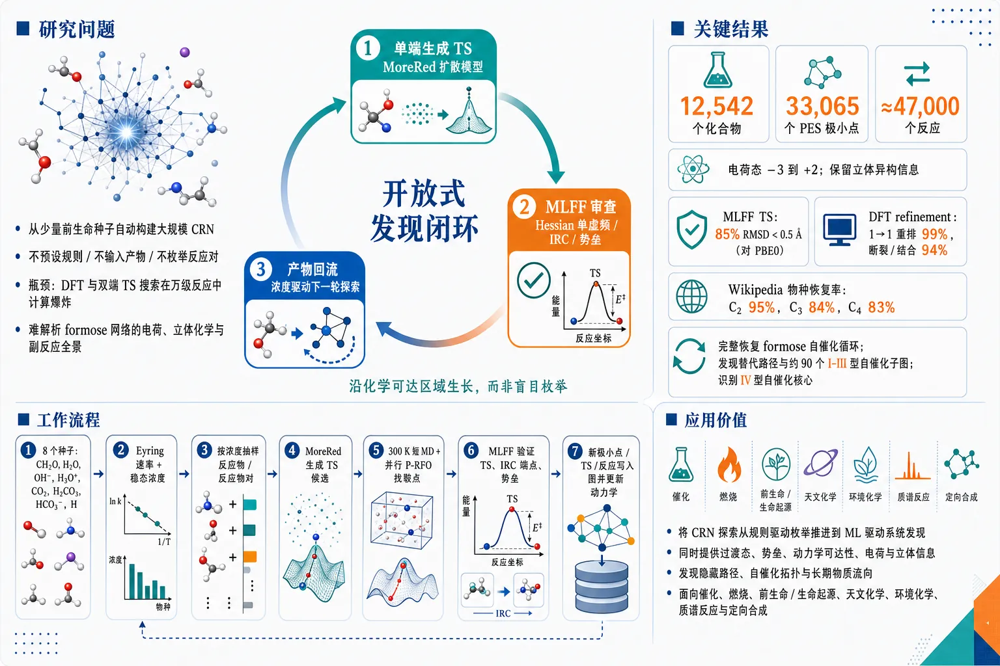
研究问题如何从少量前生命种子分子出发，在不预设反应规则、不输入产物、不枚举反应物-产物对的情况下，自动构建大规模化学反应网络，并准确找到连接分子极小点的过渡态；核心瓶颈是传统 DFT 和双端 TS 搜索在数万反应规模下计算爆炸，难以解析 formose 等复杂自催化网络的电荷、立体化学和副反应全景。创新方法ReactionAtlas 的 Aha 点是“单端生成 TS → 机器学习力场审查 → 产物回流成新种子”的开放式发现闭环：MoreRed 扩散模型只看当前反应物或反应物对，就直接生成过渡态候选；MD-ET 机器学习力场像物理审稿人一样快速检查 Hessian 单虚频、IRC 两端点和正反势垒；稳态动力学浓度再决定下一轮优先探索哪些分子，使网络沿化学可达区域生长，而不是盲目枚举。工作流程输入 8 个种子分子 CH₂O、H₂O、OH⁻、H₃O⁺、CO₂、H₂CO₃、HCO₃⁻、H；当前 CRN 计算 Eyring 速率和稳态浓度；按浓度抽样单分子或分子对；生成式循环用部分加噪的 MoreRed 扩散模型提出 TS；PES 循环用 300 K 短 MD 采样局部构型，并用并行 P-RFO 沿 Hessian 曲率寻找附近鞍点；MLFF 验证一阶鞍点、IRC 端点和势垒；有效 TS 沿虚频两侧下坡得到产物或构象体；新极小点、过渡态和反应写入图中，再更新动力学并进入下一轮扩张。关键结果从 8 个前生命种子自动生成约 12,542 个化合物、33,065 个 PES 极小点和约 47,000 个反应，覆盖带电态 −3 到 +2 和立体异构信息；MLFF TS 与 PBE0 参考在 85% 情况下 RMSD < 0.5 Å；DFT refinement 后，1→1 重排 TS 有效率达 99%，其他断裂/结合类反应达 94%；C₂、C₃、C₄ Wikipedia 命名物种恢复率分别为 95%、84%、83%；完整恢复 formose 自催化循环，支持 LdB–AvE 烯二醇机制，发现经 C₃ enediol 和 d-erythrulose 的替代路径，并识别约 90 个 I–III 型自催化糖类子图和一个真实化学系统中的 IV 型自催化核心。应用价值该研究把化学反应网络探索从规则驱动的人工枚举推进到机器学习驱动的系统发现，可作为催化、燃烧、前生命化学、生命起源、天文化学、环境化学和质谱反应分析的通用反应发现基础设施；它能在大规模网络中同时提供过渡态、势垒、动力学可达性、电荷和立体信息，帮助发现隐藏反应路径、自催化拓扑和长期物质流向，为未来氮化学、氨基酸起源和定向分子合成网络探索提供框架。第一部分：核心概览 (Overview)
ReactionAtlas 将单端生成式过渡态提议器、DFT 训练机器学习力场验证器与动力学加权探索结合，实现从 8 个前生命种子分子出发、无需反应规则和产物输入的 ab origine 化学反应网络构建。所得网络覆盖约 12,542 个化合物、33,065 个 PES 极小点、约 47,000 个反应，并以 PBE0 精度验证过渡态。其地位在于把开放式 CRN 探索从规则枚举和双端 TS 搜索推进到大规模、带电荷与立体信息的机器学习驱动发现。
---
第二部分：结构化快速回顾
《ReactionAtlas: Ab origine exploration of chemical reaction networks with machine learning》（None，）
背景
化学反应网络是理解催化、燃烧、前生命化学和生命起源的核心表示，但传统 CRN 构建依赖反应规则枚举、反应物-产物对输入和大量 DFT 过渡态搜索，在复杂网络如 formose 反应中遭遇组合爆炸。
方法
ReactionAtlas 使用两个互补循环：
生成式循环用 MoreRed 扩散模型从单个反应物或反应物对直接生成 TS 候选；PES 循环用 300 K 短 MD、P-RFO 鞍点优化和 MD-ET MLFF 探索局部势能面。所有候选 TS 由 MLFF 检查 Hessian、IRC 端点和势垒条件，并通过动力学稳态浓度决定后续采样优先级。
结果
从 CH₂O、H₂O、OH⁻、H₃O⁺、CO₂、H₂CO₃、HCO₃⁻、H 8 个种子出发，生成约 12,000 个化合物和约 47,000 个反应。MLFF TS 与 PBE0 参考在 85% 情况下 RMSD < 0.5 Å；DFT 优化后，1→1 重排 TS 有效率达 99%，其他反应类型达 94%。
讨论
网络完整恢复 formose 自催化循环，支持 LdB–AvE 烯二醇机制，发现 C₃ enediol 经 d-erythrulose 的替代路径，并识别约 90 个 I–III 型自催化糖类子图和一个此前只在理论中预测的 IV 型自催化核心。
局限
当前主实验为气相/真空模型，未显式处理溶剂、金属离子、pH、催化剂和量子隧穿；C₅ 覆盖率受计算预算限制明显下降，Wikipedia 命名物种恢复率仅 16%。
结论
ReactionAtlas 提供了面向任意反应化学的大规模、单端、机器学习驱动 CRN 探索框架，在小碳水化合物与 formose 化学中达到前所未有的规模、精度和机制解析能力。
---
第三部分：逐章节冷凝解析 (Section-by-Section Condensing)
Abstract
Ab origine CRN construction replaces rule-based enumeration
ReactionAtlas 的核心任务是从少量初始分子直接构建化学反应网络，即由极小点、过渡态和基元反应构成的图，而不是依赖预先给定的反应物-产物对。摘要明确指出 CRN 是化学的自然语言：*"Mapping a chemical reaction network, the graph of minima and transition states (TS) and the elementary reactions connecting them, is the natural language of chemistry, from catalysis to combustion to the origin of life."* 传统 DFT 构建此类网络因需要寻找和表征数以万计 TS 而不可行：*"it requires finding and characterizing tens of thousands of TS, a task for which traditional methods such as density functional theory (DFT) are typically prohibitively slow and require reactant and product as input."*
Machine learning proposer-critic loop enables open-ended discovery
方法由两部分构成：机器学习生成模型提出反应，DFT 训练 MLFF筛选有效 TS，产物再作为新种子进入下一轮。摘要给出关键机制：*"our machine-learned generative model proposes reactions from kinetically sampled candidate compounds and a DFT-trained machine learned force field (MLFF) filters them to valid TS, the resulting products of which enter the search as new seeds."* 这一机制实现从反应物端出发的开放式探索，而不是验证预设反应。
Eight prebiotic seeds generate a network of unprecedented scale
初始种子仅为 8 个前生命相关物种：CH₂O、H₂O、OH⁻、H₃O⁺、CO₂、H₂CO₃、HCO₃⁻、H。结果规模为约 47,000 个反应和约 12,000 个化合物：*"Starting from eight pre-biotic seeds (CH2O, H2O, OH−, H3O+, CO2, H2CO3, HCO−3, H), ReactionAtlas discovers ∼47,000 reactions among ∼12,000 compounds."*
Transition-state quality approaches PBE0 accuracy
MLFF 预测 TS 与 PBE0 参考几何高度一致：*"The MLFF TSs match the PBE0 references within 0.5 Å RMSD in 85% of the cases and can be easily brought to the PBE0 level."* 这说明 MLFF 不是单纯做粗筛，而是可以给出接近高精度量子化学的 TS 初值。
Small carbohydrate chemistry is mapped with charge and stereochemistry
探索范围覆盖至 C₄H₈O₄ 的小碳水化合物空间，并保留电荷与立体化学信息：*"ReactionAtlas maps small carbohydrate chemistry up to C4H8O4 at unprecedented scale and accuracy, including charge and stereo information."* 这一点区别于许多既有网络数据库，因为后者通常不完整处理带电物种和立体异构体。
Formose chemistry receives new mechanistic alternatives
网络不仅重现经典 formose 路径，还给出替代路径：*"It enables novel insights into many well-studied reaction paths, including the formose cycle, which we highlight for its centrality to the chemical origins of life."* 摘要最后强调：*"our framework also allows establishing alternative reaction pathways for formose chemistry."*
---
1 Introduction
CRNs are essential for explaining emergent chemical complexity
CRN 是理解简单分子如何产生复杂行为的核心工具：*"The exploration and identification of chemical reaction networks (CRNs) is central to understanding how complex behavior can emerge from simple molecular building blocks."* 应用范围覆盖催化、燃烧、生命起源，而 formose 反应是典型自催化网络。
Formose reaction is a benchmark for prebiotic autocatalysis
Formose 反应由甲醛经连续 aldol 缩合生成糖，包括 glycolaldehyde 和 glyceraldehyde，并最终再生 formaldehyde：*"Through iterative condensations, the formose network generates sugars including glycolaldehyde and glyceraldehyde from formaldehyde, eventually producing aldoses and regenerating formaldehyde."* 该网络提供前生命 ribose 生成路线，从而支持 RNA world 假说：*"It thus offers a plausible prebiotic route to riboses, underwriting the RNA world hypothesis."*
Combinatorial explosion blocks complete quantitative characterization
Formose 反应的中间体和副反应数量急剧膨胀，导致实验和计算均难以给出完整网络级刻画：*"the formose cycle’s combinatorial explosion of intermediates and side reactions makes it difficult to analyze experimentally."* 因此，尽管其重要性很高，仍然缺乏完整定量网络描述：*"despite its importance it still eludes a complete quantitative, network-level characterization."*
Rule-based enumeration presupposes the chemistry it aims to discover
既有人工或计算方法依赖规则化反应物-产物枚举，但这种做法预设了目标化学机制：*"These methods rely on rule-based enumeration of reactant-product pairs."* 关键批评是：*"such enumeration rules not only explode combinatorially but presuppose reaction mechanisms of the target chemistry, which figuratively speaking ‘puts the cart before the horse’."* 也就是说，规则枚举在“发现机制”之前已经暗含机制。
Existing autonomous CRN frameworks remain limited in scale and generality
SCINE、ab initio MD 等自治框架已能覆盖部分 formose 网络：*"SCINE recovers the cycle from a network built around formaldehyde plus glycolaldehyde, and ab initio molecular dynamics methods now map portions of the formose network."* 但限制依然明显：*"While accurate, these approaches are limited in scale and generality."*
TS localization is the central computational bottleneck
反应路径由两个 PES 极小点和一阶鞍点 TS 连接：*"A reaction path connects two minima on the PES through a first-order saddle point, the TS."* 一旦 TS 找到，路径和端点可通过沿力下降便宜恢复：*"Once the TS is found the rest of the path and the connected minima can be recovered cheaply by following forces from the TS."* 难点在 TS 能量不稳定，不能仅靠力松弛得到：*"The TS itself, however, is difficult to find as it is energetically unstable and thus not recoverable using forces alone."*
Single-ended TS search is better suited to discovery than double-ended search
TS 搜索分为单端和双端：*"TS-search methods divide into single-ended methods, which start from one minimum and search for connected saddle points, and double-ended methods, which condition the search on both reactant and product."* 开放式 CRN 探索需要单端方法，因为产物本身未知；双端方法需要预先枚举候选产物，因而容易组合爆炸。
ReactionAtlas combines generative TS proposals with MLFF critique
关键创新有两个：*"Our ReactionAtlas framework circumvents these computational challenges with two innovations: (a) single-ended generative TS proposers and an MLFF critic and (b) a technique for prioritizing the exploration of kinetically validated compounds."* 其中，生成器负责提出 TS，critic负责验证，动力学模块负责把计算资源集中于化学上更可能的区域。
Absence of chemistry-specific rules supports transfer to new domains
框架不依赖特定反应规则，因此可迁移到其他化学体系：*"the absence of chemistry-specific rules inherent to our framework makes it readily applicable to new chemistry."* 这使其潜在应用从碳水化合物扩展至催化、燃烧、聚合、大气化学、天文化学、环境化学和质谱。
Large-scale carbohydrate exploration starts from eight plausible seeds
主评估从 8 个前生命种子开始：*"starting from eight prebiotically plausible seeds (CH2O, H2O, OH−, H3O+, CO2, H2CO3, HCO−3, and H)."* 探索定义为 ab origine CRN exploration：*"we start from only a small set of seed compounds and propagate the reaction network without imposed mechanisms."*
Network scale reaches tens of thousands of reactions
所得规模为约 12,000 化合物、31,000 构象体、47,000 反应，并限制在最多 10 个重原子：*"we could explore ∼12,000 compounds, ∼31,000 conformers, and ∼47,000 reactions up to 10 heavy atoms."* 数据集还带有电荷和立体解析：*"yielding one of the first charge and stereo-resolved data sets of this kind."*
Coverage of known C4 carbohydrate chemistry is high
相关性指标显示，网络找到了超过 80% 的 C₄ 以内、拥有 Wikipedia 条目的碳水化合物：*"we found more than 80% of up to C4 carbohydrates that have dedicated Wikipedia entries."* 这说明探索并非随机生成形式上可能但化学意义弱的分子。
Complete formose cycle and alternative pathway are recovered
网络包含完整 formose cycle 及额外路径：*"our CRN network contains the complete formose cycle and more: the canonical Breslow route through d-glyceraldehyde and l-erythrose, and a previously unreported enediol shortcut through a C3 enediol and d-erythrulose."* 两条路径均从同一 C₁–C₂ feedstock 到达相同 tetrose 产物，但中间体不同。
Full stereochemistry reveals tetrose chiral landscape
网络解析了所有 6 个 tetrose 立体异构体上的 formose 循环：*"we recover the formose cycle across all six tetrose stereoisomers."* 这直接关联生命起源中的手性选择问题：*"the chiral landscape from which any account of biological homochirality must depart."*
---
2 Results
2.1 Ab origine Machine-Learned Chemical Reaction Networks
Efficient and accurate TS search defines CRN feasibility
CRN 构建的关键在于快速且准确地找到 TS：*"A crucial aspect of CRN construction is efficiently and accurately finding TSs."* 因为探索是 ab origine，TS 方法还必须是单端：*"the TS-search methods additionally need to be single-ended, i.e. only requiring reactants as inputs."*
Two complementary loops expand the same graph
ReactionAtlas 包含generative loop 和 PES loop 两种单端 TS 搜索方法：*"we propose two complementary ML methods for single-ended TS search, the generative loop and the PES loop."* 它们共同扩展层级图结构：一个反应图包含极小点和 TS；每个化合物还有一个 PES 图，包含构象体与构象间 TS：*"hierarchically structured as a reaction graph of minima and TSs coupled to N PES graphs, one per compound."*
Exploration is seeded by eight primordial species
初始 feedstock 为 8 个物种：*"Exploration is seeded from a small primordial feedstock of eight species (top panel: CH2O, H, H2O, OH−, H3O+, CO2, H2CO3, HCO−3)."* 这些种子覆盖甲醛、水、酸碱物种、二氧化碳/碳酸体系和氢。
Kinetic ODEs allocate compute to plausible chemistry
每个 TS 给出反应势垒，再由 Eyring 速率常数建立动力学 ODE，求各化合物浓度：*"With the TSs we determine the reaction barriers and can hence solve the kinetic coupled ODEs to obtain a concentration for each compound."* 这些浓度用于资源分配：*"We use these concentrations to allocate computational resources to regions of the graph deemed chemically plausible."*
Graph expansion is formalized as kinetics-weighted TS sampling
反应图更新形式为
[
Gᵢ₊₁=Gᵢu̧p{(xTS,x'ₘᵢₙ):xₘᵢₙsimπ_T(Gᵢ₎,xTSsim p_φ(ḑot|xₘᵢₙ),C(xTS)=1}.
]
其中 (π_T) 是当前网络的动力学加权稳态分布，(p_φ) 是生成式 TS proposer，(C) 是 MLFF critic。原始描述为：*"πT is the kinetics-weighted steady-state distribution over the current network Gi at exploration step i, the generative proposer pϕ samples a TS xTS from a single drawn minimum xmin, and the MLFF critic C accepts only validated saddle points."*
Generative loop uses MoreRed diffusion after partial noising
生成式循环先按浓度抽样当前极小点，其中一半为单分子，一半为双分子对：*"half of the draws are pairs of compounds, the other half single compounds."* TS 由 MoreRed 扩散模型提出：*"we use MoreRed, a denoising diffusion model trained on the ωB97X-D3 Grambow TS dataset, to propose TSs for these samples after partial noising."*
TS validation combines Hessian, IRC endpoints, and barrier checks
候选 TS 由 QCML 训练的 MD-ET 模型预测力与 Hessian：*"using a QCML-trained MD-ET model as a zero-shot predictor of forces and Hessians."* 验证标准包括：*"a Hessian with a single imaginary eigenvalue at the TS, two distinct minima at the IRC endpoints, and several conditions on the barrier heights."* 通过条件的反应和极小点加入图中。
PES loop explores local saddle points around new minima
PES loop 对超过浓度阈值的新极小点运行：*"executed once per newly discovered minimum for compounds above a defined concentration threshold."* 先用 300 K Langevin MD 采样局部构型空间，轨迹长度 2.5 ps：*"a short 300 K Langevin MD trajectory (2.5 ps) samples the local configuration space."*
P-RFO follows Hessian curvature to nearby saddle points
MD 轨迹帧作为 P-RFO 起点：*"Points from this trajectory serve as starting points for partitioned rational-function optimization (P-RFO), i.e. following Hessian curvature directly to the nearest saddle point."* 这是一种直接利用曲率模式上坡到鞍点的单端搜索方法。
MD-ET Hessians make large-scale saddle search feasible
TS 搜索需要快速 Hessian，MD-ET 的 Hessian 评估量级为几十毫秒：*"TS finding requires fast Hessian evaluation which costs on the order of tens of milliseconds with MD-ET."* 约 1/3 优化收敛到鞍点：*"∼1/3 of optimizations then converge to a saddle point."* 每个 minimum 通常并行运行 32 个 P-RFO：*"We typically run 32 P-RFOs in parallel for each minimum."*
PES loop finds both conformational TSs and escaped reactions
有效 TS 分为两类：构象极小点间 TS，或键连结构改变的“escaped reactions”：*"Valid TSs found by our method can be of two types: new conformational minima on the PES... or ‘escaped reactions’, where the bond structures of the two minimum geometries are different."* 后者进入反应图。
Formose refinement run improves targeted coverage
主实验从 8 个种子进行 ab origine 探索。为更精细解析 formose 循环，另行从 99 个 formose-relevant compounds 的子网络重启 refinement：*"a refinement run was re-initialized from a formose sub-network of 99 formose-relevant compounds."*
---
2.2 Evaluating relevance, quality, and speed
Three criteria define an ideal CRN explorer
理想 CRN 探索方法需满足三点：高效、反应势垒准确、探索化学相关：*"An ideal CRN exploration method should satisfy three requirements: it should be efficient, it should yield accurate reaction barriers and the chemistry explored should be relevant."*
Wikipedia-named compounds serve as a relevance proxy
自由生成器可能产生大量形式有效但化学意义弱的分子：*"Any generator left to enumerate freely can produce vast numbers of formally valid but chemically meaningless molecules."* 相关性用三集合比较：ReactionAtlas 化合物、全组合枚举、Wikipedia 命名化合物：*"we compare the set of compounds recovered by ReactionAtlas with two other sets... The full combinatorial enumeration... and the small subset of compounds with a Wikipedia article."*
C2 named-species recovery is nearly complete
C₂ 层面，Wikipedia 命名物种恢复 19/20 = 95%，唯一缺失为四元环 1,3-dioxetane：*"At C2, recovery of the named species is almost complete (19/20, 95%), with only the four-membered ring 1,3-dioxetane missing."*
C3 and C4 recovery remains high despite combinatorial explosion
C₃ 和 C₄ 恢复率分别为 84% 和 83%：*"At C3 and C4 recovery remains high (84% and 83%)."* C₄ 组合空间巨大，而 Wikipedia 中仅有小于 1% 的可能化学：*"even as the combinatorics explode at C4 and only <1% of the possible chemistry is found on Wikipedia."*
C5 recovery drops because of imposed compute limit
C₅ 恢复率降至 16%，原因是计算限制：*"At C5 recovery drops to 16%, reflecting the computational limit we imposed on the exploration."* 这表明框架不是理论上不能探索 C₅，而是当前预算截断了网络扩张。
Interstellar molecule coverage supports completeness
另一个完备性指标是星际空间检测到的小 C/H/O 分子，共 45 个，其中 41 个在网络中出现：*"we checked for coverage of the set of 45 small C/H/O molecules detected in interstellar space, 41 of which are present."*
All ∼47,000 TSs are recomputed at PBE0 level
质量评估对全部约 47,000 TS 进行 DFT 重新计算，级别为 PBE0/def2-TZVPP：*"We recomputed all ∼47,000 TS with DFT (PBE0/def2-TZVPP) and inspected whether each was a true first order saddle point."*
Raw MLFF TS validity is high for rearrangements but harder for fragment-changing reactions
未经 DFT refinement 时，1→1 重排 TS 有效率为 86%；涉及断裂或结合的更难反应为 41%：*"Most proposed structures are already valid: 86% of the rearrangements (one molecule to one) and 41% of the harder reactions that break or join molecules."*
DFT refinement lifts validity to near-complete levels
以 MLFF 几何为初值进行 DFT 优化后，1→1 重排有效率提升到 99%，其他类型提升到 94%：*"A DFT refinement, initialized at our proposed geometry, improves these fractions to 99% and 94%, respectively."*
Double-ended baselines receive an artificially favorable setup
比较对象包括 NEB-TS、pyGSM 双端 GSM、xTB-NEB 后接 DFT TS 优化：*"we provide an imperfect comparison to several double ended alternatives... an NEB-TS, a double-ended GSM with pyGSM and a multi-level approach employing xTB-NEB with subsequent DFT TS-optimization."* 这些方法需要反应物和产物，而 ReactionAtlas 只从单个反应物几何出发：*"each needs the product as well as the reactant, whereas ReactionAtlas proposes one or more TSs starting from a single reactant geometry."*
Double-ended baselines do not surpass ReactionAtlas on rearrangements
为了公平，双端方法被提供 PBE0 有效端点：*"we provide these methods with PBE0-valid endpoints for predicting a TS."* 即便只在重排反应、且给定理想产物几何的条件下，它们仍未超过 ReactionAtlas：*"Even on rearrangements only and using ideal product geometries, they do not surpass ReactionAtlas."*
ReactionAtlas finds valid TS every ∼23 min using modest GPUs
速度方面，主实验主要使用 L4 GPU 节点，ReactionAtlas 平均每约 23 min 找到一个其认为有效的 TS：*"Using only reactants as inputs and mainly using modest L4 GPU nodes during our main experiment ReactionAtlas finds a TS it considers valid every ∼23 min."*
PBE0-quality refinement adds only small overhead
ML 发现的 TS 往往已匹配或接近 PBE0 TS，因此提升到统一 PBE0 质量只需少量额外开销：*"we can further refine the found transition states to be uniformly of PBE0-quality, which requires only a small amount of extra computational overhead since the ML-discovered TS tend to either already match a PBE0-TS or are close to one."*
Double-ended baselines are much slower per successful TS
在提供 PBE0 有效反应物/产物端点情况下，NEB-TS 每反应 270 min，DE-GSM 416 min，xTB→DFT pipeline 261 min，均使用 4-core CPU：*"NEB-TS requires 270 min, DE-GSM 416 min, and the xTB → DFT pipeline 261 min per reaction using a 4-core CPU node."* 且失败搜索运行时间未计入：*"we exclude the runtimes of failed searches."*
Practical wall-time advantage grows by 1–2 orders of magnitude
实际 CRN 构建中，双端方法还要枚举大量反应物-产物对才能找到低能 TS，因此 ReactionAtlas 的实际优势更大：*"The apparent wall time advantage of ReactionAtlas increases by a further 1-2 orders of magnitude in practice because double ended methods need to enumerate many proposed reactant-product pairs to find a pair with a low-energy TS."*
---
2.3 Discovering the formose auto-catalytic cycle
Formose is modeled from prebiotic feedstock without carbonyl rules
Formose 反应通常在 40–70 °C 碱性水溶液中运行，并可由 Ca²⁺ 等催化：*"The formose reaction is the canonical example of prebiotically plausible auto-catalysis, run at 40-70 °C in alkaline water with catalysts such as Ca2+."* ReactionAtlas 只输入 8 个前生命物种，且不加入羰基化学规则：*"build the CRN ab origine, notably without adding carbonyl-chemistry rules."*
The discovered CRN resolves charge and stereochemistry at unprecedented formose scale
网络包含 47,000 个基元步骤、12,000 个化合物，并解析立体化学与电荷：*"The discovered CRN contains 47,000 elementary steps between 12,000 compounds that resolve stereochemistry and charge."* 此前 formose 网络未做到这一点：*"(which no previous formose network has done)."*
Glycolaldehyde initiation is recovered from formaldehyde dimerization
Formose 循环启动需要首个 glycolaldehyde（GO），唯一 feedstock 路线是两个 formaldehyde（FA）二聚：*"To turn over, the cycle needs a first molecule of glycolaldehyde (GO), and the only way to make one from the feedstock is to dimerize two formaldehyde (FA) molecules."* ReactionAtlas 未输入 GO，但恢复了 2FA → GO 基元步骤，正向势垒 33.4 kcal/mol：*"ReactionAtlas was not seeded with GO and nevertheless recovers 2FA → GO as an elementary step at a forward barrier of 33.4 kcal/mol."*
Dimerization is chemically viable but gas-phase barriers do not settle solution kinetics
甲醛二聚说明化学上可行：*"Hence, we show that a dimerization is chemically viable."* 但是否快于痕量糖杂质启动，需溶液相动力学判断，气相势垒不能决定：*"Whether this dimerization is actually faster than the trace-impurity route is a consideration of solution-phase kinetics that our gas-phase barriers do not decide."*
Sugar interconversion supports the LdB–AvE enediol mechanism
Aldose/ketose 互变需要羰基迁移，可能机制为直接 1,2-hydride shift 或经共同 enediol 中间体的 LdB–AvE 机制：*"The proposed mechanism are direct internal hydrogen transfer (a 1,2-hydride shift)... and a two-step route through a shared enediol intermediate."* 网络中互变完全经 enediol 进行：*"the interconversion runs entirely through the enediol, while the direct transfer between the neutral sugars is absent, supporting LdB–AvE."*
Absence of direct hydride transfer is unlikely to be a search blind spot
方法在其他地方找到了 223 个氢转移 TS，因此中性糖之间直接转移缺失不太可能只是方法无法发现：*"This absence is not a blind spot of the method as ReactionAtlas finds 223 hydrogen-transfer transition states elsewhere."* 但经典势垒不能排除量子隧穿：*"classical barriers alone cannot exclude a quantum tunneling contribution."*
Cycle closure depends on tetrose retro-aldol selectivity
4 碳糖需要 retro-aldol 裂解闭合循环，存在两种切分：productive 2+2 生成两个 GO，或 unproductive 3+1 生成 C₃ + FA：*"A symmetric 2+2 split yielding two GO, doubling the GO that started the cycle... An asymmetric 3+1 split gives a C3+FA."*
Aldotetroses favor productive 2+2 while ketotetroses favor unproductive 3+1
结果显示 aldotetroses 对 productive 2+2 路线有 28 kcal/mol 优势；ketotetroses 对 unproductive 3+1 路线有 33 kcal/mol 优势：*"aldotetroses favor the productive 2+2 route (by 28 kcal/mol), and ketotetroses the unproductive 3+1 route (by 33 kcal/mol)."* 这补充了 Briš 等人对 ketose 偏好的实验推断。
Elementary formose cycle is recovered without reaction rules
网络恢复了一个基元步骤序列：GO + FA → GA，GA enolization 到 C₃ enediol，再 aldol 到 tetrose，最后 retro-aldol 使 GO + 3FA → 2GO + FA：*"an aldol reaction of GO and FA to GA, enolization to the C3 enediol, a second aldol to a tetrose, and the closing retro-aldol bringing GO+3FA to 2GO+FA."* 这被描述为最详细的机制：*"This elementary description is the mechanistically most detailed including the LdB-AvE steps."*
Compressed cycles include Breslow and C3-enediol routes
同一循环还以两个“压缩”形式出现：经典 Breslow route 经 d-GA 和 l-erythrose，以及 C₃-enediol route 经 d-erythrulose：*"the canonical Breslow route via d-GA and l-erythrose... and a C3-enediol route via d-erythrulose."* 两者都将 retro-aldol 和 tautomerization 合并为单个 TS，最大势垒分别达到 4.25 eV 和 4.90 eV：*"increasing its worst barrier to 4.25 and 4.90 eV, respectively."*
Most manually mapped FA and GO chemistry is recovered
在 C₁/C₂ 侧，网络恢复了 Kua 等人手工绘制的大部分 FA 与 GO oligomerization 物种：*"On the C1/C2 side we recover most of the species manually mapped in the FA- and GO-oligomerization studies of Kua et al."*
Autocatalytic motifs are systematically countable
Blokhuis 等人将自催化循环子图分为 I–V 型，IV 和 V 型此前只在纸面预测：*"Types IV and V had been predicted on paper but never identified in any real chemical system."* 网络中发现约 90 个 I–III 型自催化糖类子图，均共享 GO 作为再生催化物，并发现一个 IV 型核心：*"Our network contains around 90 distinct auto-catalytic carbohydrate subgraphs of Types I to III... and a single Type IV core."*
A Type IV autocatalytic motif is discovered in a real chemical system
IV 型发现具有理论意义：*"To our knowledge, this is the first time a Type IV motif has been discovered rather than constructed in theory."* 这说明 ReactionAtlas 不只是复现已知反应，还能在真实化学网络中识别新的拓扑组织形式。
Formose chemistry is kinetically transient rather than thermodynamic endpoint
全局网络显示 formose 只是瞬态阶段：*"formose chemistry is only a transient stage in the network."* 在 C₁ 到 C₄ 每个尺寸上，最稳定物种不是糖，而是羧酸或酯，能量低 27–38 kcal/mol：*"the most stable molecule is not a sugar but a carboxylic acid or ester, 27–38 kcal/mol lower in energy."*
Sugars accumulate kinetically but drain toward acids over time
糖积累是动力学效应，而非热力学终点：*"Sugars therefore accumulate only kinetically, i.e. due to the accessible barriers, but given enough time the system will end up with the more stable acids."* 多条副反应不断把物质从糖化学导向酸性稳定产物：*"Several side reactions continuously remove material out of the sugar chemistry to that acidic fate."*
ReactionAtlas supersets several prior CHO/formose networks
在相同尺寸限制下，ReactionAtlas 是五个早期 formose/CHO 网络物种集合的超集，包括 Simm and Reiher、Rappoport、Stan MD nanoreactor、Zhao and Savoie glucose-pyrolysis network、RGD1：*"ReactionAtlas is a superset of the species discovered by five earlier formose studies built using very different methods."*
Coverage of prior dedicated networks reaches about 90%
定量比较显示 ReactionAtlas 发现约 90% 专门 formose 和 pyrolysis 网络，以及 60% 更大的 RGD1 数据库；反过来既有 CRN 最多只包含 ReactionAtlas 的 43%：*"ReactionAtlas has discovered about 90% of the dedicated formose and pyrolysis networks, and 60% of the much larger general database RGD1, while those prior CRNs in turn contain at most 43% of ours."*
---
3 Discussion and Conclusion
CRNs are framed as a computational language for reaction science
化学核心是反应，CRN 是探索复杂反应网络的强大计算技术：*"Chemistry is the science of reactions. Here, CRNs are a powerful computational technique for exploring and understanding the complex web of reactions."* 既有 CRN 方法多为特定体系定制，且太慢：*"so far, CRN methods were purpose-built for specific chemistries and were too slow for comprehensive exploration."*
ReactionAtlas provides unprecedented-scale ab origine CRN exploration
ReactionAtlas 被定位为 ab origine CRN exploration 方法，依靠生成式机器学习达到前所未有规模：*"ReactionAtlas is a method for ab origine CRN exploration which allows the exploration of reaction networks of unprecedented scale by using generative machine learning."* 关键技术是两个单端 TS 搜索方法：*"we propose two methods for single-ended TS search."*
Broad applicability follows from chemistry-agnostic design
原则上可用于任何化学体系：*"In principle, our ReactionAtlas framework can be applied to any chemistry."* 性能概括为快、准、相关：*"It is fast, accurate and finds relevant chemistry."*
Carbohydrate demonstration validates scale, detail, and accuracy
从 8 个种子出发探索碳水化合物化学，得到规模、细节和精度均前所未有的网络：*"starting from eight seed compounds only, and recovering a reaction network of unparalleled size, detail and accuracy."*
Bias-free exploration reveals known and undescribed formose pathways
无人工机制偏置的 CRN 中包含完整 formose 循环和此前未描述路径：*"Analyzing this autonomously and bias-free explored CRN, we find, among others, the complete formose cycle as well as several previously undescribed formose pathways."*
Nitrogen chemistry and amino-acid origins become plausible future targets
同等探索可应用于其他初始物，例如氮化学：*"An equivalent exploration would be viable for other starting compounds, e.g., nitrogen chemistry."* 这可能使氨基酸起源问题可计算探索：*"which could in principle make the origin of amino acids accessible."*
Vacuum modeling is the clearest current limitation
当前 ReactionAtlas 在真空中建模化合物，显式溶剂效应尚未纳入：*"explicitly modeling solvation effects would be helpful as in its current form ReactionAtlas models compounds in a vacuum."* 对 formose 这类水相碱性反应而言，这会影响相对势垒、离子稳定性、质子转移和催化路径。
Validated TSs enable iterative self-improvement
生成的已验证 TS 可用于训练更强 proposer：*"Further research directions are enabled by using our generated CRN dataset, such as iterative self-improvement, where the validated TS can be used to train an improved proposer model."* 这形成主动学习式闭环：探索 → 验证 → 扩充训练集 → 改善生成器。
Dedicated objectives could reduce compute by steering exploration
当前目标是广泛覆盖整个反应空间；未来可设置更窄目标以减少计算：*"while we focus on broadly covering an entire reaction space by exploring all kinetically valid compounds, a narrower, dedicated exploration objective could be imposed to limit compute."* 例子是朝特定化合物类别如氨基酸探索：*"driving towards a certain compound class of special interest, such as amino acids."*
CRN graph scale supports learned guidance functions
大规模图结构可训练后续探索的 guiding function：*"the provided CRN may be helpful for training a guiding function for prioritizing directions of further exploration in chemical space."* 关键在数据规模和图结构：*"the unique scale and graph structure of our CRN dataset is crucial."*
Final claim is broad systematic reaction discovery
总结性结论为：*"ReactionAtlas demonstrates a viable, efficient and accurate route to large-scale systematic exploration and insightful analysis of reactions across many chemical application domains."* 这将框架定位为可迁移的反应发现基础设施，而非单一 formose 工具。
---
4 Online Methods
Two coupled loops read from and write to a shared CRN graph
ReactionAtlas 从小种子集合增长 CRN，依赖两个耦合循环：生成式循环和 PES 循环：*"ReactionAtlas grows a chemical reaction network (CRN) from a small seed set by two coupled loops that read from and write to a shared graph."* 生成式循环提出分子间反应，PES 循环探索每个已知 minimum 周围转变：*"a generative loop that proposes intermolecular reactions and a potential-energy-surface (PES) loop that explores transitions around each known minimum."*
Both loops use MLFF and feed kinetic steering
两条循环都使用 MLFF，并更新 CRN；当前 CRN 定期用于计算动力学模型，稳态浓度决定计算资源分配：*"Both loops use a machine-learned force field (MLFF) and both update the CRN."* 以及：*"The current version of the CRN is used to periodically compute a kinetic model whose steady-state concentrations steer where the exploration is focusing resources."*
MoreRed proposer is an equivariant joint-time denoising diffusion model
TS proposer 是 MoreRed 形式的去噪扩散模型：*"The proposer is a denoising diffusion model in the equivariant, joint-time (JT) MoreRed formulation with time step prediction."* 训练数据为 Grambow 数据集中的 ωB97X-D3 TS：*"trained on the ωB97X-D3 transition states (TSs) of the Grambow dataset."*
Diffusion schedule uses T = 1000, p = 2, s = 10⁻⁵
噪声调度为 variance-preserving Gaussian schedule，长度 T = 1000，多项式噪声 profile：
[
barαₜ₌₍₁₋₂ₛ₎₍₁₋₍ₜ/T)^p)²⁺s
]
其中 p = 2, s = 10⁻⁵。原文给出：*"We use a variance-preserving Gaussian schedule of length T = 1000 with a polynomial noise profile... with p = 2, s = 10−5."*
Partial noising avoids starting from pure noise
与图像生成不同，TS proposer 不从纯噪声开始，而是将反应物几何部分加噪到 t ∼ U(100,650)：*"Unlike for image generation, the proposer does not start from pure noise: a reactant geometry x0... is partially noised to a level t ∼ U(100,650)."* 然后用学习到的反向过程去噪得到 TS 候选：*"and then denoised by the learned reverse process... which samples a TS candidate."*
Strict single-ended generation supplies no product or template
模型是严格单端的：*"The model is single-ended in the strict sense, i.e., no product, driving coordinate, or reaction template is supplied."* 这正是其区别于双端 TS 生成和规则枚举 CRN 方法的关键。
Candidate sampling follows a softmax over log steady-state concentrations
候选反应物从当前网络按稳态浓度抽样，概率与 log10 浓度 softmax 成比例：*"Candidate reactants are drawn from the current network with probability proportional to a softmax over the base-ten logarithm of their steady-state concentrations."* 目的在于聚焦动力学相关区域：*"so the proposer concentrates on the kinetically relevant part of the network."*
MD-ET critic predicts forces and Hessians from QCML training
每个候选由 MD-ET 评分：*"Every candidate is scored by MD-ET, a transformer force field trained on the QCML dataset."* MD-ET 独立预测能量和力，并通过力头自动微分得到 Hessian：*"MD-ET predicts energies and forces from independent heads and derives Hessians by automatic differentiation of the force head."*
Non-conservative force predictions require Hessian symmetrization
由于 MD-ET 不是严格能量守恒，Hessian 不总是完全对称：*"Since MD-ET is not energy-conserving, Hessian predictions produced by it are not always perfectly symmetric."* 实现上对 Hessian 对称化，并丢弃反对称部分：*"we symmetrize the predicted Hessians and discard the asymmetric part."*
Translation and rotation modes are projected out before eigenvalue analysis
Hessian 需移除 6 个平移/转动模式：*"From the Hessian matrices H thus obtained we remove the six translation/rotation modes by projection."* 投影后检查显著负特征值，以判断是否为一阶鞍点。
Valid TSs must satisfy IRC and barrier constraints
候选还必须连接两个不同 IRC 端点，并具有物理合理正反向势垒：*"A candidate further has to connect two distinct minima at the ends of its intrinsic reaction coordinate (IRC) and to have forward and backward barriers within physical bounds before it enters the graph."*
PES loop uses 300 K Langevin MD and batched P-RFO
每个超过浓度阈值的新 minimum 运行 300 K Langevin 轨迹：*"For each new minimum above a concentration threshold, a short Langevin trajectory at 300 K samples nearby configurations."* 轨迹帧作为 batched P-RFO 起点：*"frames sampled from it, seed a batched partitioned rational-function optimization."*
P-RFO walks uphill along one mode and downhill along all others
P-RFO 对投影 Hessian 对角化，并按模式更新。沿被跟随模式取正根上坡，其余模式取负根下坡：*"taking the + root on the followed mode (walk uphill) and the − root on all others (relax downhill), under a partitioned trust region."* 这使算法能朝一阶鞍点收敛，同时在垂直方向松弛。
FIRE handles minimizations that do not require curvature
无需曲率信息的极小化使用 FIRE：*"Minimizations that do not need curvature use FIRE."* 这降低了非 TS 优化部分的计算负担。
Validated saddle points are followed downhill to endpoints
每个有效鞍点沿虚频模式两侧轻微位移后下降到两个端点：*"Each validated saddle point is followed downhill along its imaginary mode... to its two endpoints."* 同一化合物构象间跃迁进入 PES 图；键连模式改变则注册为反应：*"transitions between conformers of one compound become edges of that compound’s PES graph, while transitions that change the bonding pattern are registered as reactions."*
Minima deduplication combines Kabsch RMSD and NEB same-basin tests
极小点去重使用 permutation-invariant Kabsch RMSD 和 NEB same-basin test：*"Minima are deduplicated by permutation-invariant Kabsch RMSD with a nudged-elastic-band (NEB) same-basin test."* 这避免因原子置换、刚体旋转或同盆地构象误判而重复计数。
Kinetics are integrated as a mass-action system
每个接受反应后，CRN 被积分为质量作用动力学系统：*"After each accepted reaction the CRN is integrated as a mass-action system."* 方程为
[
fracdydt=Sₙₑₜr(y)
]
其中 (Sₙₑₜ) 是净化学计量矩阵。
Rate constants follow Eyring theory with diffusion cap
速率常数由 Eyring 过渡态理论给出，并受扩散极限限制：*"Rate constants follow Eyring transition-state theory built on the computed barriers... capped at the diffusion limit kdiff."* 公式为
[
k=minłeft(frack_BThexp(-Eₐ/k_BT), kdᵢffi̊ght).
]
Steady-state composition both guides exploration and reports microkinetics
稳态组成既定义 proposer 抽样分布，又作为网络微观动力学读出：*"The resulting steady-state composition both defines the sampling distribution for the proposer and provides the microkinetic read-out of the network."*
---
Dataset, Dataset Viewer and Code
The released CRN dataset contains 12,542 unique compounds
结构化数据集包含 12,542 个唯一化合物：*"It comprises 12,542 unique compounds."* 这些化合物横跨 191 个不同分子式：*"spanning 191 distinct molecular formulas."*
Carbon-count distribution is dominated by C4 and C5 species
按碳数分布为：C₄ 6,870 个、C₅ 4,309 个、C₃ 1,187 个、C₂ 148 个、C₁ 22 个、C₀ 6 个：*"6,870 C4, 4,309 C5, 1,187 C3, 148 C2, 22 C1, 6 C0."* 这说明虽然机制重点在 C₄ 以内 formose，网络已大量触及 C₅ 空间。
Charge states range from −3 to +2
电荷范围为 −3 到 +2：*"ranging in charge from −3 to +2."* 具体分布为 9,122 中性、3,228 单阴离子、178 双阴离子、9 三阴离子、4 单阳离子、1 双阳离子：*"9,122 neutral, 3,228 singly anionic, 178 doubly anionic, 9 triply anionic, 4 singly cationic, 1 doubly cationic."*
The PES layer contains 33,065 minima
数据还包含 33,065 个 PES minima，平均每化合物 2.64 个构象体：*"It further contains 33,065 PES minima, averaging 2.64 conformers per compound."* 最柔性化合物达到 42 个构象体：*"reaching 42 for the most flexible."*
---
第四部分：深度理解与语言支持 (Understanding & Nuance)
1. 术语解析
#### Ab origine
Ab origine 字面意思是“从起源开始”。在此语境中不是常见的 ab initio 电子结构计算含义，而是指 CRN 构建从少量种子出发，不输入反应规则、不输入目标产物、不预设机制。关键表述是：*"we start from only a small set of seed compounds and propagate the reaction network without imposed mechanisms."*
细微差别：
- ab initio 通常强调量子力学第一性原理；
- ab origine 强调网络生成过程从“化学起点”自然扩张。
#### Single-ended TS search
单端 TS 搜索只需要反应物 minimum，不需要产物。原文定义为：*"single-ended methods, which start from one minimum and search for connected saddle points."*
细微差别：它不是“只找一个产物”，而是在未知产物空间中寻找与当前 minimum 相连的鞍点，因此更适合发现型 CRN 构建。
#### Double-ended TS search
双端 TS 搜索同时需要反应物和产物，然后在两者之间寻找 TS。原文为：*"double-ended methods, which condition the search on both reactant and product."*
问题在于产物必须提前枚举，所以不适合真正开放式探索。即便 TS 搜索本身准确，反应物-产物对枚举也会成为瓶颈。
#### Machine-learned force field critic
MLFF critic 不是简单分类器，而是用机器学习力场计算能量、力、Hessian、IRC 端点和势垒，对 TS 候选进行物理判定。其作用接近“量子化学代理审稿人”：*"the MLFF critic C accepts only validated saddle points."*
#### Kinetically validated compounds
动力学验证化合物指不是仅在结构上可能存在，而是在当前网络动力学中具有非忽略稳态浓度或可达性的物种。原文强调：*"steady-state concentrations steer where the exploration is focusing resources."*
细微差别：这不是热力学最低能筛选，而是“在给定势垒和速率下是否可能被生成并积累”。
---
2. 疑难查证
#### 为什么 TS 是 CRN 构建的瓶颈？
一个反应不是只由反应物和产物定义，还必须经过势能面上的一阶鞍点，即 TS。TS 的能量决定速率，TS 的虚频模式决定反应坐标，IRC 端点决定它真正连接哪些 minima。
困难在于 TS 对所有非反应坐标是极小，对反应坐标是极大；普通几何优化会把结构推向 minimum，而不是停在不稳定鞍点。因此需要 Hessian 曲率信息或专门算法。
ReactionAtlas 的核心突破是用生成模型直接提出“像 TS 的结构”，再用 MLFF 快速验证，而不是对大量可能反应物-产物对逐一做昂贵 DFT 搜索。
#### 为什么 Wikipedia 覆盖率可作为相关性代理？
Wikipedia 命名物种不是严格化学统计标准，但可近似代表“被人类化学共同体长期关注、命名和使用”的分子集合。若生成器只是盲目枚举，可能产生数量巨大的陌生结构，却错过常见化合物。ReactionAtlas 在 C₂、C₃、C₄ 分别恢复 95%、84%、83% 的 Wikipedia 命名物种，同时只覆盖 C₄ 组合空间中极小一部分，说明探索偏向化学相关区域，而非穷举形式可能性。
#### 为什么 formose 中糖是动力学产物而非热力学产物？
热力学上，羧酸和酯比同尺寸糖低 27–38 kcal/mol，长期看更稳定。但糖可通过较低势垒的 aldol、enolization、retro-aldol 路径快速形成和循环，因此会暂时积累。
这就是“动力学控制”与“热力学控制”的区别：
- 动力学控制：哪个路径势垒低，哪个产物先出现；
- 热力学控制：时间足够长时，最低自由能物种最终占优。
因此 formose 反应可以产生糖，但网络长期会向酸/酯排水沟流失。
#### 为什么 LdB–AvE 机制比直接 hydride shift 更受支持？
网络中 aldose/ketose 互变全部经 enediol，而没有中性糖之间直接 1,2-hydride shift。若算法从未发现任何氢转移 TS，则可能是方法偏差；但网络中其他位置存在 223 个 hydrogen-transfer transition states，说明氢转移不是系统性盲区。
不过，经典势垒分析不能排除量子隧穿，因为隧穿可让轻原子如 H 穿过而非越过势垒。因此结论应限定为：在经典气相势垒框架下，LdB–AvE 更受支持。
---
第五部分：创新评估与关联 (Synthesis & Novelty)
1. 创新性判断
#### 从 supplied reactant-product pairs 转向 discovered products
近年 CRN 框架多依赖规则生成反应物-产物对，再用 NEB、GSM、AFIR、SCINE 或 DFT 验证。ReactionAtlas 的新颖性在于：产物不是输入，而是由 TS 下坡自然产生。关键突破是：*"reactant-product pairs are discovered rather than supplied."*
解决的问题：开放式 CRN 探索中，真正困难的不是单个 TS 优化，而是“该找哪些 TS”。ReactionAtlas 用单端生成式模型绕开了反应物-产物组合枚举。
#### 生成模型首次承担大规模开放式 TS proposal
已有生成式化学模型多生成分子结构、反应模板或在给定反应物/产物时生成 TS。ReactionAtlas 将 MoreRed 扩散模型用于从当前 minimum 直接生成 TS 候选，并与 MLFF critic 构成可迭代网络扩张机制。
创新点不是单独的扩散模型，而是扩散模型被嵌入 CRN 增长闭环：TS → 产物 → 新种子 → 新 TS。
#### MLFF critic enables DFT-scale accuracy at network scale
传统 DFT 对数万 TS 搜索不可承受。ReactionAtlas 用 MD-ET 快速计算 Hessian、力和 IRC 验证，再用 PBE0 refinement 校正。关键结果是：约 47,000 TS 可被重新计算和验证；DFT refinement 后有效率达 99%/94%。
创新点在于 MLFF 不只是能量代理，而是承担 TS 物理判定：一阶鞍点、端点、势垒、构象/反应区分。
#### Kinetic steering avoids both blind enumeration and purely thermodynamic filtering
许多枚举式方法要么穷举结构，要么按能量筛选。ReactionAtlas 使用稳态浓度引导探索，使计算资源集中于可达且可能积累的区域。
解决的问题：化学相关性不是单纯低能；formose 糖就是动力学积累而非热力学最低。动力学采样更符合反应网络的真实组织原则。
#### Charge- and stereo-resolved formose network surpasses earlier datasets
既有 formose 网络通常不完整处理立体异构、带电物种和全局副反应。ReactionAtlas 解析所有六个 tetrose 立体异构体，包含电荷状态，并与早期五类网络比较显示显著超集关系：发现约 90% 专门 formose/pyrolysis 网络和 60% RGD1，而既有网络最多覆盖 ReactionAtlas 的 43%。
新颖性体现在机制广度、网络规模和化学细节同时提升，而不是只优化单一路径。
#### Discovery of a real Type IV autocatalytic motif is conceptually novel
Blokhuis 类型 IV/V 自催化拓扑此前停留在理论预测。ReactionAtlas 在真实碳水化合物网络中发现一个 Type IV core：*"the first time a Type IV motif has been discovered rather than constructed in theory."*
这不仅是反应路径发现，更是化学网络拓扑层面的发现，说明大规模无偏探索可揭示人工机制分析难以预见的组织结构。
#### Alternative formose pathways revise a canonical prebiotic mechanism
经典 Breslow 路径经 d-glyceraldehyde 和 l-erythrose；ReactionAtlas 还发现经 C₃ enediol 和 d-erythrulose 的替代路线，并恢复更细的 LdB–AvE 基元步骤版本。
解决的问题：formose 不是单一路径，而是多个共享 feedstock 和产物的路径族。ReactionAtlas 提供了从网络层面比较这些路径的基础。
-
05
📊 含图深析
📄 摘要：从神经积分方程及其偏微分方程形式出发，重新考察前馈深度神经网络与离散动力系统的类比。以 Burgers 方程和 Eikonal 方程为例，对比数值/精确解与 PINN 解，指出 PINN 以不同计算路径近似同一底层动力学。
💡 亮点：前馈 DNN 可被看作对连续动力系统的离散演化近似。Burgers 与 Eikonal 方程对比显示，PINN 不是传统离散格式的简单替代，而是另一条动力学逼近路径。
📖 展开分析 + 配图
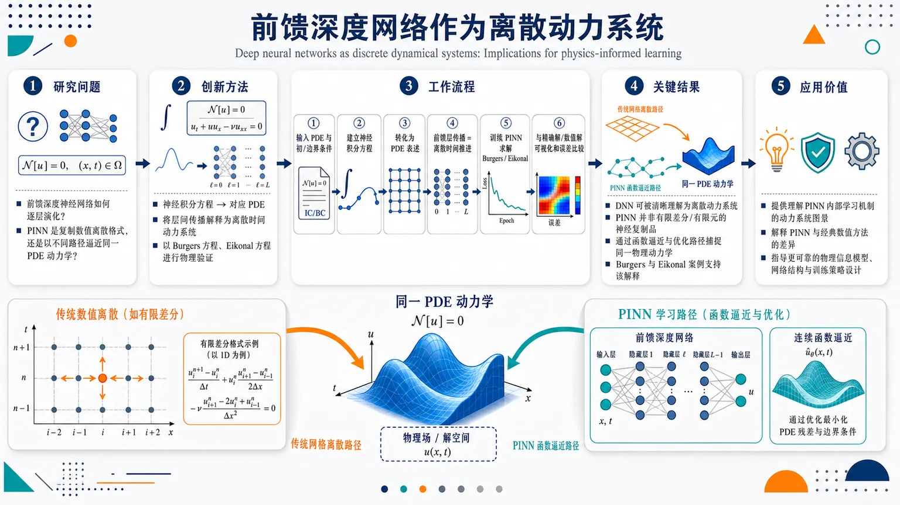
研究问题前馈深度神经网络究竟如何像离散动力系统一样演化？在物理信息神经网络 PINN 中，它是在复现传统数值离散格式，还是以另一条计算路径逼近同一个物理 PDE 动力学？创新方法从“神经积分方程—对应偏微分方程”的连续视角出发，把深度前馈网络重新解释为逐层推进的离散动力系统；再用 Burgers 方程和 Eikonal 方程作为物理案例，对比精确/数值解与 PINN 解，揭示 PINN 的学习轨迹不同于标准网格离散。工作流程输入物理 PDE 问题与边界/初始条件；建立神经积分方程及其 PDE 表述；将前馈网络层间传播视为离散时间动力系统；训练 PINN 逼近 Burgers 方程、Eikonal 方程解；与传统数值解或精确解进行可视化和误差比较；分析两类方法逼近底层动力学的路径差异。关键结果研究表明，前馈深度神经网络可以被清晰地理解为一种离散动力系统；PINN 并不是传统有限差分、有限元等数值离散过程的神经网络复制品，而是通过不同的函数逼近与优化路径捕捉同一物理动力学。Burgers 方程和 Eikonal 方程案例支持这一解释。应用价值为理解 PINN 的内部学习机制提供动力系统图景，有助于解释其与经典数值方法的差异，为设计更可靠的物理信息学习模型、改进网络结构和训练策略提供理论参考。核心概览
本文从神经积分方程及其 PDE 形式出发，重新审视前馈深度神经网络与离散动力系统的对应关系，并以 Burgers 方程、Eikonal 方程分析 PINN 对底层动力学的近似机制。属于科学机器学习 / 物理信息神经网络理论方向。
方法要点
- 从“神经积分方程”及其偏微分方程形式出发，建立或重释深度前馈网络与离散动力系统的类比。
- 将 PINN 的求解路径与传统数值解或精确解进行对照分析。
- 选取 Burgers 方程和 Eikonal 方程作为典型物理/偏微分方程案例。
- 关注不同计算路径如何近似同一底层动力学，而非仅比较最终预测结果。
- 具体网络结构、训练损失、优化算法、误差指标等摘要未详述。
关键结果
- 摘要明确指出：前馈深度神经网络可从离散动力系统角度重新理解。
- PINN 与数值解或精确解相比，是通过不同计算路径来近似同一底层动力学。
- Burgers 方程和 Eikonal 方程案例支持了这种关于 PINN 近似机制的解释。
- 是否给出定量误差、收敛性分析或性能提升，摘要未详述。
创新性判断
- 可能的新颖点在于：不是单纯把深度网络类比为残差离散动力系统，而是从神经积分方程及其 PDE 形式出发，对这种类比进行更系统的理论重审。
- 对 PINN 的解释重点似乎从“能否拟合 PDE 解”转向“PINN 采用何种计算路径逼近底层动力学”，这可能为理解 PINN 的表达机制提供新视角。
- 以 Burgers 方程和 Eikonal 方程作为案例，将理论类比与具体物理方程求解联系起来，可能增强了该框架的解释力。
- 以上创新性判断仅基于摘要；与已有 Neural ODE、ResNet-动力系统、PINN 理论工作的具体差异，摘要未详述。
-
06
📊 含图深析
📄 摘要：提出自治显微框架，把双新颖性深核学习用于自适应选择显微/局域谱采样点，并用双变分自编码器学习结构与功能表征。该闭环减少人工选点和预设目标偏置，提升纳米结构—性质关联数据的多样性和发现效率。
💡 亮点：双新颖性深核学习让显微镜主动寻找结构和性质上都新颖的区域。与双 VAE 表征结合后，局域谱学从人工选点转为闭环探索，适合复杂功能材料的结构—性质发现。
📖 展开分析 + 配图
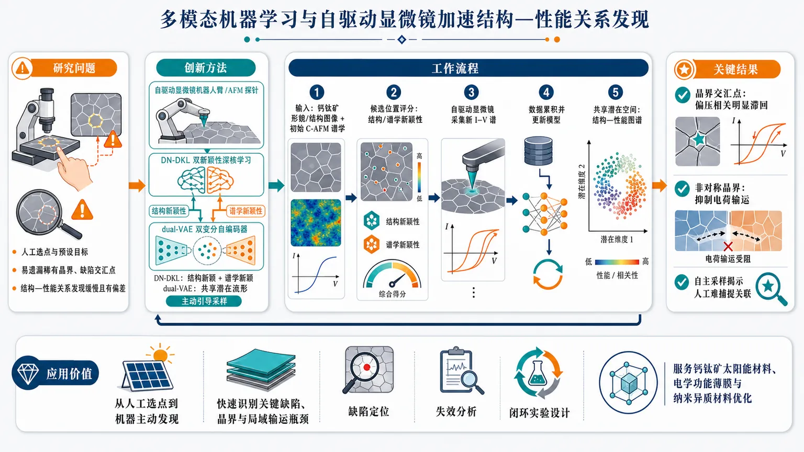
研究问题传统显微镜—局域谱学研究依赖人工挑选采样点和预设目标，容易只观察“看起来重要”的区域，遗漏稀有晶界、缺陷交汇点和异常电学响应，导致纳米结构与功能性能之间的真实关系发现缓慢且带有偏差。创新方法提出将自驱动显微镜、双新颖性深核学习 DN-DKL 和双变分自编码器 dual-VAE 结合：DN-DKL 同时寻找“结构上新颖”和“谱学上新颖”的区域来主动引导显微镜采样；dual-VAE 再把局部显微结构和局域谱学响应嵌入同一个共享潜在流形，形成可视化的结构—性能关系图谱。工作流程输入卤化物钙钛矿薄膜的局部形貌/结构图像与初始导电原子力显微镜谱学数据；DN-DKL 评估每个候选位置的结构新颖性和谱学新颖性；自驱动显微镜自动移动到最有信息量的纳米区域采集新谱；数据持续累积并更新模型；dual-VAE 将结构片段与 I–V/电学响应编码到共享潜在空间；最终输出晶界、交汇点、非对称边界等结构基元与滞回、载流输运行为之间的对应图谱。关键结果在卤化物钙钛矿薄膜的导电 AFM 实验中，该框架发现不同纳米结构基元对应不同电滞回行为：晶界交汇点在不同偏压条件下表现出明显滞回；非对称晶界会抑制电荷输运。结果表明，自主采样能高效收集大规模谱学数据，并揭示人工预设采样难以捕捉的结构—性能关联。应用价值该研究把材料显微表征从人工选点推进到机器主动发现，可用于更快识别功能材料中的关键缺陷、晶界和局域输运瓶颈；为钙钛矿太阳能材料、电学功能薄膜和其他纳米异质材料的性能优化、失效机制分析与高效实验设计提供通用闭环框架。第一部分：核心概览（Overview）
该研究提出将自驱动显微镜、双新颖性深核学习（DN-DKL）与双变分自编码器（dual-VAE）整合，用于加速功能材料中的纳米结构—性能关系发现。核心贡献在于：显微镜不再依赖人工预设采样点，而是由机器学习主动引导至结构与谱学上均具新颖性的区域；随后将局部结构与局域谱响应嵌入共享潜在空间，形成可解释的结构—性能映射。该框架在卤化物钙钛矿薄膜的导电原子力显微镜研究中揭示了晶界交汇点、非对称晶界与电滞回、载流输运抑制之间的关联，代表了材料显微表征从“人工采样”向“自主发现”的方法学推进。
---
第二部分：结构化快速回顾
《Accelerating Structure-Property Relationship Discovery with Multimodal Machine Learning and Self-Driving Microscopy》（None，）
背景
显微镜结合局域谱学常用于建立材料中纳米尺度结构与功能性能之间的关联，但传统实验高度依赖人工选择采样位置与预设目标，导致数据多样性不足，并限制意外发现能力。原文明确指出：*"conventional measurements rely heavily on human-selected sampling locations and predefined targets, limiting dataset diversity and the potential for discovery."*
方法
框架整合三部分：autonomous microscopy、dual-novelty deep kernel learning（DN-DKL）、dual variational autoencoder（dual-VAE）。DN-DKL用于主动引导显微镜采集结构和谱学上新颖的区域；dual-VAE将局部结构与谱学响应投影到共享潜在流形中，作为结构—性能关系图谱。原文表述为：*"DN-DKL actively guides the microscopy toward structurally and spectroscopically novel regions"*，以及 *"Dual-VAE embeds local structure and spectroscopic responses into a shared latent manifold."*
结果
在卤化物钙钛矿薄膜上，使用导电原子力显微镜（conductive atomic force microscopy）验证该框架。结果识别出不同类型的电滞回行为（hysteresis behaviors），并将其与特定纳米结构基元关联，包括在不同偏压条件下表现出滞回的晶界交汇点，以及会抑制电荷输运的非对称晶界。原文指出：*"The results reveal distinct hysteresis behaviors that are linked to specific nanoscale structural motifs."*
讨论
该框架的关键意义在于把自动化实验采集、机器学习表征学习和人类专家解释结合起来，形成面向功能材料发现的闭环工作流。其价值不只是提高采样效率，还在于通过结构与谱学的共同潜在表示揭示人工难以预设的结构—性能关联。
局限
所提供内容未给出详细实验规模、模型超参数、训练集大小、统计检验、采集轮次、对照实验或泛化测试信息。当前可确认的局限包括：验证对象集中于卤化物钙钛矿薄膜与导电原子力显微镜场景；方法在其他材料体系、其他显微谱学平台、不同尺度表征任务中的迁移性尚未从所给内容中得到定量证明。
结论
该框架建立了一种面向功能材料的通用自主发现策略，通过DN-DKL实现高效主动采样，通过dual-VAE构建结构—性能潜在图谱，并在钙钛矿薄膜中发现纳米结构基元与电滞回、载流输运之间的关联。原文总结为：*"This framework establishes a general strategy that leverages the complementary strengths of self-driving microscopy, machine learning, and human expertise to accelerate scientific discovery in functional materials."*
---
第三部分：逐章节冷凝解析（Section-by-Section Condensing）
可用文本仅包含题名、摘要、论文元数据与arXiv条目信息；未包含完整PDF正文、章节标题、图表、方法细节、实验参数、结果数值或统计分析。因此无法严格按原始章节标题逐章解析，也无法提取每章全部关键点、模型超参数、样本量、P值或图中数值。以下按所提供文本中的可验证内容进行证据化解析。
---
Title
#### A multimodal autonomous framework for structure-property discovery
题名明确聚焦于通过多模态机器学习与自驱动显微镜加速结构—性能关系发现：*"Accelerating Structure-Property Relationship Discovery with Multimodal Machine Learning and Self-Driving Microscopy."*
核心对象不是单一模型预测任务，而是材料研究中的structure-property relationship discovery，即从显微结构与功能响应之间建立可解释映射。题名中的multimodal指至少包含两类信息源：局部结构图像/形貌特征与局域谱学响应；self-driving microscopy则指实验采集由算法动态引导，而非人工逐点设定。
#### The research domain spans materials science and instrumentation
arXiv分类显示该工作位于凝聚态物理—材料科学与仪器及探测器交叉领域：*"Subjects: Materials Science (cond-mat.mtrl-sci) ; Instrumentation and Detectors (physics.ins-det)."*
这表明贡献同时涉及材料科学问题与自动化实验仪器方法，而不仅是数据后处理算法。
---
Abstract
#### Conventional microscopy-spectroscopy workflows suffer from human sampling bias
显微镜结合局域谱学是纳米结构—功能性能关联研究的常用手段，但传统流程依赖人工选择位置和预定义目标，限制数据覆盖范围与发现潜力。摘要开头给出问题定义：*"Microscopy combined with local spectroscopy is widely used to correlate nanoscale structure with functional properties in materials."*
随后指出瓶颈：*"conventional measurements rely heavily on human-selected sampling locations and predefined targets, limiting dataset diversity and the potential for discovery."*
这里的关键问题是human-selected sampling locations带来的选择偏差：研究者通常会挑选看起来“有趣”或“典型”的区域，导致稀有结构、异常响应、非直觉关联难以被发现。
#### The central methodological framework combines autonomous microscopy, DN-DKL, and dual-VAE
方法框架由三个核心模块组成：autonomous microscopy、dual-novelty deep kernel learning（DN-DKL）和dual variational autoencoder（dual-VAE）。摘要明确写道：*"we present a framework that integrates autonomous microscopy with a dual-novelty deep kernel learning (DN-DKL) for adaptive data acquisition and a dual variational autoencoder (VAE) for representation learning."*
其中，DN-DKL承担adaptive data acquisition任务，即决定下一步测哪里；dual-VAE承担representation learning任务，即从结构与谱学数据中学习共同表示。
#### DN-DKL targets novelty in both structure and spectroscopy
DN-DKL的关键不是单一不确定性采样，而是同时考虑结构新颖性与谱学新颖性。摘要中使用了明确表述：*"DN-DKL actively guides the microscopy toward structurally and spectroscopically novel regions."*
“dual-novelty”意味着算法不仅寻找图像形貌上少见的区域，也寻找谱学响应上不同寻常的区域。这样的采样策略更适合发现材料中的异质性结构—性能关系，例如晶界、缺陷、交汇点、局域传输异常等。
#### Adaptive acquisition enables efficient large spectral dataset collection
DN-DKL的实验作用是提高大规模谱学数据采集效率。摘要指出：*"enabling efficient collection of large spectral datasets."*
这说明框架面向的是显微谱学中常见的高成本采样问题：每个空间点可能需要采集完整I–V曲线、局部电导谱或其他谱学响应，逐点全图扫描成本高，人工挑点又存在偏差。主动学习式采集通过选择信息量高的区域，提高单位测量时间的信息产出。
#### Dual-VAE creates a shared latent manifold for structure-property mapping
dual-VAE将局部结构与谱学响应嵌入到共享潜在空间，形成结构—性能关系图谱。摘要中的关键句是：*"Dual-VAE embeds local structure and spectroscopic responses into a shared latent manifold that serves as a structure-property relationship map."*
这里的shared latent manifold具有重要意义：结构图像和谱学曲线原本属于不同模态，维度、噪声类型和物理含义不同；通过共享潜在空间，可以把“某种结构基元”与“某种电学响应模式”对齐，从而实现跨模态关联发现。
#### The experimental platform is conductive atomic force microscopy on halide perovskite films
应用场景为卤化物钙钛矿薄膜，实验技术为导电原子力显微镜（conductive atomic force microscopy, c-AFM）。摘要给出实验体系：*"We applied this framework for the investigation of halide perovskite films using conductive atomic force microscopy."*
钙钛矿薄膜具有强烈的纳米尺度异质性，晶粒、晶界、离子迁移、局域电荷输运和滞回行为密切相关，因此适合作为结构—性能发现框架的验证对象。
#### Distinct hysteresis behaviors are linked to nanoscale structural motifs
结果揭示了不同的电滞回行为，并将其关联到具体纳米结构基元。摘要写道：*"The results reveal distinct hysteresis behaviors that are linked to specific nanoscale structural motifs."*
这说明输出不是单纯分类或降维可视化，而是获得了物理上可解释的联系：某些局部结构模式对应特定电学响应模式，尤其是滞回行为。对于钙钛矿材料，滞回通常可能与离子迁移、界面电荷积累、局域缺陷态或电场诱导结构变化有关。
#### Grain boundary junction points show bias-dependent hysteresis
一个具体发现是晶界交汇点在不同偏压条件下表现出滞回。摘要明确指出：*"including grain boundary junction points that show hysteresis under different bias conditions."*
晶界交汇点通常是多个晶粒边界相交的拓扑复杂区域，可能具有更高缺陷密度、更强局域应变、更复杂离子迁移通道或电荷积累行为。不同偏压条件下出现滞回，提示其响应可能依赖电场方向、扫描历史或局域离子/缺陷重排。
#### Asymmetric grain boundaries suppress charge transport
另一个具体发现是非对称晶界会抑制电荷输运。摘要写道：*"and asymmetric grain boundaries that suppress charge transport."*
这表明晶界并非统一地增强或削弱导电性，而是其几何/形貌/邻域结构的非对称性会影响局域电流通道。asymmetric grain boundaries可能对应两侧晶粒形貌、电势、接触状态或缺陷分布不均，从而形成局部输运瓶颈。
#### The framework positions human expertise as complementary rather than replaced
结论性表述强调自驱动显微镜、机器学习和人类专业知识之间的互补关系：*"This framework establishes a general strategy that leverages the complementary strengths of self-driving microscopy, machine learning, and human expertise to accelerate scientific discovery in functional materials."*
这一区别很重要：框架并非完全替代科学家，而是将人类从低效的手动选点转移到解释、假设生成、策略设定和结果验证层面。机器学习负责高维空间搜索与模式提取，人类专家负责物理意义判断与实验合理性约束。
---
Comments / Metadata
#### The manuscript is a 20-page arXiv preprint with six figures
元数据显示稿件长度与图表规模为：*"Comments: 20 pages, 6 figures."*
这意味着完整论文应包含较为完整的方法说明、结果图示和实验流程，但所提供文本未包含这些内容，因此无法提取图1–图6中的定量结果、模型结构图、采样轨迹、潜在空间可视化或谱学聚类细节。
#### The public record contains two versions between March and June 2026
arXiv提交记录显示版本演化：*"Submitted on 17 Mar 2026 ( v1 ), last revised 30 Jun 2026 (this version, v2)."*
具体提交历史为：*"[v1] Tue, 17 Mar 2026 18:08:57 UTC"*，以及 *"[v2] Tue, 30 Jun 2026 00:35:58 UTC."*
这说明当前条目对应v2版本，但所给内容未展示v1到v2的修改差异。
#### The work is positioned in both machine learning and physical instrumentation taxonomies
ACM分类为：*"ACM classes: I.2.6; I.5.1; J.2."*
I.2.6通常对应人工智能中的学习，I.5.1通常对应模式识别模型，J.2对应物理科学与工程应用。该分类进一步支持其跨越机器学习方法、模式识别和材料物理应用。
---
第四部分：深度理解与语言支持（Understanding & Nuance）
1. 术语解析
#### Self-driving microscopy
Self-driving microscopy不是简单的自动扫描，而是带有决策能力的自主实验系统。它通常包括：实时数据获取、机器学习模型更新、下一采样点推荐、显微镜执行新测量。语境中的含义是显微镜由DN-DKL主动引导至更有信息量的位置，即 *"actively guides the microscopy"*。
微妙差别：automated microscopy强调机械自动化；self-driving microscopy强调基于数据和目标函数的闭环自主决策。
#### Dual-novelty deep kernel learning（DN-DKL）
Deep kernel learning通常结合深度神经网络的特征提取能力与核方法/高斯过程的不确定性建模能力。Dual-novelty在此处表示同时寻找两类新颖性：结构新颖性与谱学新颖性。原文中的短语 *"structurally and spectroscopically novel regions"* 是理解该术语的核心。
微妙差别：传统主动学习常根据预测不确定性选点；DN-DKL强调“新颖性”本身，尤其适合寻找未见过的结构和异常响应，而不仅是降低模型误差。
#### Shared latent manifold
Shared latent manifold指多个模态被压缩到同一个低维潜在表示空间中。这里的两个模态是local structure和spectroscopic responses。原文为：*"a shared latent manifold that serves as a structure-property relationship map."*
微妙差别：latent space可只是数学降维空间；latent manifold暗示数据分布具有连续、低维、可组织的几何结构，类似不同结构—性能状态沿某些物理变量连续变化。
#### Structure-property relationship map
Structure-property relationship map不是普通的图像标注图，而是把局部结构特征与功能响应模式对应起来的关系图谱。它回答的问题是：什么样的纳米结构，对应什么样的电学行为？
在该语境中，dual-VAE学习到的共享潜在流形就是这种图谱：*"serves as a structure-property relationship map."*
#### Hysteresis behavior
Hysteresis behavior通常指系统响应不仅取决于当前外场，也取决于历史路径。在导电AFM和钙钛矿材料语境中，电流—电压响应可能在正扫和反扫时不重合。摘要中的 *"distinct hysteresis behaviors"* 指不同局部区域可能具有不同类型或强度的滞回。
微妙差别：滞回不是简单的非线性，而是历史依赖；其物理来源可能包括离子迁移、电荷陷阱、界面极化或局域结构重排。
---
2. 疑难查证
#### 为什么“结构新颖”和“谱学新颖”需要同时考虑？
只看结构新颖性，会优先采集形貌罕见的区域，但形貌罕见不一定功能异常；只看谱学新颖性，又可能错过结构上具有潜在重要性的区域，尤其在早期数据不足时，谱学异常可能难以预测。
DN-DKL的价值在于把两种“值得测”的理由合并：
- 某个区域看起来结构不同，可能隐藏新机制；
- 某个区域可能产生不同谱学响应，可能对应新功能状态。
这种双目标采样特别适合钙钛矿薄膜，因为局域电学行为可能由晶界、交汇点、缺陷、局域离子分布共同决定，单靠形貌或单靠电学预测都可能偏漏。
#### dual-VAE为什么适合结构—性能关联？
结构图像和谱学曲线不在同一数据空间：图像是二维空间纹理，谱学是偏压、电流或其他响应变量的函数。直接做相关性分析很困难，因为缺少统一坐标。
dual-VAE通过两个编码器分别压缩结构与谱学，再让它们进入共享潜在空间。若训练有效，潜在空间中相近的点不仅结构相似，也应具有相似的谱学行为；潜在空间中的分离区域则可能代表不同结构—性能类别。
因此，dual-VAE不是简单降维，而是跨模态对齐工具。
#### “晶界交汇点在不同偏压条件下表现滞回”为什么重要？
晶界交汇点是多个晶界相遇的位置，局部几何和缺陷环境比单一晶界更复杂。偏压依赖滞回说明该区域的导电响应存在历史效应和方向/幅值依赖。
在钙钛矿中，这可能暗示局部离子迁移通道、电荷俘获态或界面势垒在外电场下发生重排。若这些区域在器件中大量存在，它们可能影响宏观I–V滞回、稳定性和局域退化路径。
#### “非对称晶界抑制电荷输运”为什么不能简单理解为所有晶界都不好？
晶界在钙钛矿中的作用长期存在争议：某些晶界可能促进离子迁移或非辐射复合，某些晶界也可能被钝化后对电荷输运影响较小。
摘要中的重点是asymmetric grain boundaries，不是所有grain boundaries。非对称意味着晶界两侧结构环境不均衡，可能形成局部势垒或不连续传输路径。由此得到的是更细粒度的结论：晶界的功能影响取决于具体结构基元，而不是“晶界有害/有益”的二元判断。
---
第五部分：创新评估与关联（Synthesis & Novelty）
1. 创新性判断
#### 从人工选点转向结构与谱学双驱动的自主采样
过去2–5年内，材料显微学中的机器学习常见方向包括图像分割、缺陷识别、谱学聚类、贝叶斯优化选点和自驱动实验平台。然而许多流程仍依赖单一目标，例如最大化模型不确定性、寻找特定性质极值，或对图像特征进行后验分析。
该研究的新颖性在于DN-DKL同时面向structural novelty和spectroscopic novelty，直接针对显微谱学中的核心痛点：既要发现罕见结构，又要发现异常功能响应。原文中的 *"structurally and spectroscopically novel regions"* 是方法创新的关键。
#### 从单模态表征转向结构—谱学共享潜在流形
许多既有研究会分别处理显微图像和谱学曲线：图像用于识别晶粒/晶界，谱学用于分类I–V曲线或提取电导参数。该框架通过dual-VAE把两者放入shared latent manifold，形成结构—性能图谱：*"embeds local structure and spectroscopic responses into a shared latent manifold."*
这一点解决了跨模态关联中的难题：结构和性能不再只是测量后人工对照，而是在同一潜在空间中共同组织。
#### 从高通量采集转向发现导向采集
高通量显微谱学可以通过密集扫描获得大量数据，但成本高且包含大量冗余。主动学习式自驱动显微镜则强调信息效率：*"enabling efficient collection of large spectral datasets."*
创新点在于采集策略不是机械地“多测”，而是优先测量最可能扩展知识边界的区域。对于局域异质性强、测量成本高的功能材料，这种策略尤其重要。
#### 从模型演示转向具体材料机制发现
该框架不只是算法演示，还在卤化物钙钛矿中识别了具体物理关联：
- grain boundary junction points在不同偏压条件下出现滞回：*"grain boundary junction points that show hysteresis under different bias conditions."*
- asymmetric grain boundaries抑制电荷输运：*"asymmetric grain boundaries that suppress charge transport."*
这使其创新性不仅体现在方法学，也体现在材料科学发现层面：把局部纳米结构基元与电学功能响应联系起来。
#### 解决了前人工作中的三个关键未解问题
- 采样偏差问题：传统人工选点导致数据分布受研究者先验限制；该框架用DN-DKL主动扩展结构和谱学多样性。
- 跨模态对齐问题：结构图像和谱学响应难以直接关联；dual-VAE构建共享潜在流形作为结构—性能图谱。
- 发现效率问题：全图谱学采集成本高、冗余大；自驱动显微镜通过新颖性导向提高单位实验时间的信息量。
#### 相对于近年自驱动实验的定位
近年的自驱动实验常集中在合成条件优化、相图搜索或宏观性质最大化；该研究把自驱动理念推进到纳米尺度局域显微谱学，并将采样策略与结构—性能表征学习直接耦合。
其领域地位可概括为：面向功能材料局域异质性的自主显微发现框架，连接了实验闭环控制、深度核主动学习、跨模态潜在表示和材料机制解释。
-
07
📊 含图深析
📄 摘要：比较多种基于集成的神经网络原子间势不确定性量化方法，针对能量和原子力保留集误差与体系级涌现行为可靠性之间的不一致展开评估。核心结论是，小尺度 DFT 标注精度不能直接保证大尺度原子模拟可信，需要面向模拟可观测量的不确定性指标。
💡 亮点：机器学习原子势即使在 DFT 能量和力测试集上准确，也可能在体系级行为上失效。集成不确定性需要从点预测误差扩展到模拟可观测量，直接关系到材料大尺度模拟的可信部署。
📖 展开分析 + 配图
研究问题在神经网络原子间势用于材料模拟时，低预测不确定性是否真的意味着预测准确？论文核心检验“精度/一致性”能否可靠替代“准确性/接近真实值”，尤其关注训练分布内能量与力表现良好时，是否仍能保证分布外冷曲线、声子色散等系统级材料性质可信。创新方法不是提出新的 UQ 算法，而是在同一 NNIP 架构、同一碳同素异形体数据集上并排比较四种集成式不确定性量化方法：bootstrap、Monte Carlo dropout、random initialization、snapshot ensembles。Aha 点是把“不确定性—残差相关性”从传统 ID 测试扩展到 OOD 材料性质，揭示低不确定性可能只是模型成员彼此一致，并不等于物理预测正确。工作流程输入 diamond、graphite、单层 graphene、双层 graphene 的 4,788 个 DFT 原子构型；用原子中心对称函数描述局域环境，训练三层 128 节点 NNIP；分别生成 100 成员的 bootstrap、dropout、随机初始化和 snapshot 集成；计算集成均值作为预测、标准差作为不确定性；在 ID 训练/测试集评估能量和力残差，在 OOD 场景计算能量冷曲线和声子色散；最后对比残差、不确定性、相关性和校准行为。关键结果ID 区域内各方法训练/测试误差接近，无明显过拟合；测试能量 RMSE 约为 bootstrap 9.204、dropout 6.252、random initialization 6.164、snapshot 7.235 meV/atom，测试力 RMSE 约为 bootstrap 3.350、dropout 5.559、random initialization 4.948、snapshot 5.501 meV/Å。bootstrap 的残差—不确定性相关性最高，但常过度自信，尤其对力；dropout 更保守、校准更好；random initialization 与 snapshot 行为相似，而 snapshot 只需一次训练更高效。最关键发现是 OOD 中误差增大时，不确定性可能平台化甚至下降。应用价值该研究为机器学习原子间势的可靠性评估提供风险警示：不能仅凭 held-out DFT 能量/力误差低或集成不确定性低，就认定大尺度材料性质预测可信。它提示在主动学习、材料筛选、缺陷动力学、热输运和外推型原子模拟中，应将不确定性视为辅助诊断信号，而非准确性的直接替代证据。第一部分：核心概览 (Overview)
该研究系统比较 bootstrap、Monte Carlo dropout、random initialization、snapshot ensembles 四类基于集成的 不确定性量化（UQ） 方法在 神经网络原子间势（NNIP） 中的表现，核心问题是：预测精度，即低不确定性，能否可靠替代预测准确性。研究同时覆盖 in-distribution（ID） 的能量/力预测和 out-of-distribution（OOD） 的冷曲线、声子色散等材料性质。其主要贡献在于揭示：ID 测试误差低、甚至不确定性与残差相关，并不保证 OOD 系统级性质可靠；OOD 中不确定性可能随误差增大而平台化或下降。该工作在 MLIP 可靠性评估领域具有方法比较与风险警示意义。
---
第二部分：结构化快速回顾
《Comparative study of ensemble-based uncertainty quantification methods for neural network interatomic potentials》（None，）
背景
机器学习原子间势（MLIPs） 能以接近第一性原理的精度、显著更低的计算成本进行大尺度原子模拟，但常规验证主要依赖 held-out DFT 能量和原子力。小尺度 ID 精度并不保证大尺度、长时间、复杂构型空间中的 OOD 系统级性质可靠。
方法
使用 NNIP 作为统一架构，针对碳体系训练模型，数据包含 diamond、graphite、monolayer graphene、bilayer graphene，共 4,788 个原子构型。比较四种集成 UQ 方法：bootstrap、dropout、random initialization、snapshot ensembles，每种生成 100 个模型或预测成员。ID 评估使用训练/测试集能量与力；OOD 评估使用 energy cold curve 和 phonon dispersion relation。
结果
ID 区域内训练与测试误差接近，未见明显过拟合。测试能量 RMSE 分别为：bootstrap 9.204 meV/atom、dropout 6.252 meV/atom、random initialization 6.164 meV/atom、snapshots 7.235 meV/atom。测试力 RMSE 分别为：bootstrap 3.350 meV/Å、dropout 5.559 meV/Å、random initialization 4.948 meV/Å、snapshots 5.501 meV/Å。bootstrap 的残差-不确定性相关性最高，但常呈过度自信；dropout 更保守。
讨论
精度与准确性是不同概念。高精度可能对应低误差，也可能对应严重偏离真实值的过度自信。bootstrap 在非独立 MD 轨迹数据上可能低估模型分散度；dropout 通过随机屏蔽引入架构扰动，对数据非独立性相对不敏感。random initialization 与 snapshot 表现相似，但 snapshot 只需一次训练，计算效率更高。
局限
研究目标不是修复 UQ 缺陷，而是表征现有 ensemble UQ 在 MLIP 中的行为。论文正文提供的 OOD 结果片段不完整，无法完整重建所有冷曲线和声子色散的数值细节。体系仅覆盖碳同素异形体，架构固定为特定 NNIP，结论对其他元素、描述符、网络架构和主动学习场景的外推仍需验证。
结论
ensemble UQ 在 ID 区域可提供一定有用信息，但不能被简单视为准确性的可靠替代。尤其在 OOD large-scale material property prediction 中，不确定性可能出现反直觉行为，因此在大尺度、外推型材料模拟中使用低不确定性作为“可信”证据必须非常谨慎。
---
第三部分：逐章节冷凝解析 (Section-by-Section Condensing)
Abstract
MLIPs enable efficient near-first-principles atomistic simulation
机器学习原子间势（MLIPs） 的核心优势是以远低于第一性原理的成本实现接近第一性原理的原子模拟精度。摘要明确指出，MLIPs 已成为大尺度材料建模的重要工具，因为它们 *"enable atomistic simulations with near first-principles accuracy at substantially reduced computational cost"*。该表述强调两个关键维度：精度接近 first-principles，计算成本显著降低。
Held-out energy and force validation is insufficient for emergent properties
常规 MLIP 验证依赖 held-out 的 ab initio energies 和 atomic forces，但这种小尺度验证不能保证系统级行为可靠。摘要指出，模型精度 *"is typically validated on a held-out dataset of ab initio energies and atomic forces"*，但随即强调 *"accuracy on these small-scale properties does not guarantee reliability for emergent, system-level behavior"*。这里的核心问题是训练/测试目标与真实应用目标之间存在尺度和性质错配。
Predictive precision is widely used as a heuristic proxy for accuracy
由于大尺度性质的 DFT 或实验验证昂贵，实践中常用 predictive precision，即 inverse uncertainty，作为准确性的替代指标。摘要给出关键判断：*"As a practical heuristic, predictive precision—quantified as inverse uncertainty—is commonly used as a proxy for accuracy"*。但其可靠性，尤其在系统级预测中，仍然 *"remains poorly understood"*。
Four ensemble UQ methods are systematically compared
研究聚焦 ensemble-based uncertainty quantification methods，比较 bootstrap、dropout、random initialization、snapshot ensembles。摘要直接列出方法范围：*"including bootstrap, dropout, random initialization, and snapshot ensembles"*。比较对象统一为 neural network potentials，因此差异主要来自 UQ 生成机制，而不是势函数类别。
ID and OOD regimes are both evaluated
研究设计同时覆盖 in-distribution（ID） 与 out-of-distribution（OOD）。ID 使用 held-out cross-validation，OOD 使用冷曲线与声子色散。摘要写道：*"We use held-out cross-validation for ID assessment and calculate cold curve energies and phonon dispersion relations for OOD testing"*。这种双域设计是研究贡献的关键，因为仅看 ID 误差无法暴露外推风险。
Carbon allotropes serve as representative test systems
测试体系为多种 carbon allotropes。摘要说明：*"These evaluations are performed across various carbon allotropes as representative test systems"*。后文显示具体包括 diamond、graphite、monolayer graphene、bilayer graphene，并在 OOD 性质中重点分析 diamond、monolayer graphene、graphite。
OOD uncertainty can plateau or decrease while error grows
最重要发现是：OOD 条件下不确定性估计可能反直觉。摘要指出：*"uncertainty estimates can behave counterintuitively in OOD settings, often plateauing or even decreasing as predictive errors grow"*。这直接挑战“低不确定性 = 高可信度”的实践假设。
Current ensemble UQ has fundamental limitations for extrapolative applications
摘要结论强调现有 UQ 方法的根本限制：*"highlight fundamental limitations of current uncertainty quantification approaches"*，并要求在大尺度外推应用中谨慎使用 precision 代替 accuracy：*"underscore the need for caution when using predictive precision as a stand-in for accuracy in large-scale, extrapolative applications"*。
---
1 Introduction
MLIPs bridge the cost-accuracy gap between DFT and empirical potentials
DFT 精度高但成本高，classical empirical potentials 成本低但灵活性与可迁移性不足，MLIPs 试图连接二者。引言指出，DFT *"provide high-fidelity predictions of material properties but are computationally prohibitive for large systems or long simulation times"*；经验势则 *"often lack the flexibility and transferability needed to accurately model diverse materials behavior"*。MLIPs 的定位是 *"bridge this gap"*，通过从量子力学数据学习 potential energy surface（PES）。
MLIPs learn PES from quantum-mechanical reference data
MLIPs 的数据驱动本质在于直接拟合量子参考数据中的 PES。引言写道：*"MLIPs bridge this gap by leveraging machine learning algorithms to learn the underlying potential energy surface (PES) directly from quantum-mechanical reference data"*。这种学习对象不是单一性质，而是高维原子构型空间中的能量函数及其导数。
Training focuses on small-scale quantities, while applications target emergent macroscopic properties
训练数据通常包含 atomic forces、energies、stresses 等小尺度标签，但应用关注 elastic properties、thermal conductivity、defect dynamics 等大尺度涌现性质。引言指出，训练通常 *"involves fitting to small-scale quantities, such as atomic forces, energies, and sometimes stresses"*；训练后 MLIPs 用于研究 *"macroscopic material properties of interest that emerge from simulations over much larger time and length scales"*。
ID accuracy does not imply OOD accuracy
ID 测试集通常与训练集相似，低误差并不保证 OOD 下游性质准确。引言明确提出：*"high accuracy on ID samples does not necessarily imply high accuracy on out-of-distribution (OOD) samples"*。原因在于真实应用会进入训练集未覆盖的高维构型区域，尤其当模拟尺度扩大时。
Large-scale simulations explore poorly represented high-dimensional regions
OOD 风险源于大尺度模拟可能进入训练数据稀疏区域。引言写道：*"Large-scale property simulations frequently involve exploration into high-dimensional regions of configuration space that are poorly represented in the training set"*。此处的 configuration space 维度随原子数、自由度和结构变化急剧扩大，使 held-out 小测试集难以代表真实部署环境。
Sensitive PES features such as saddle points and high-energy regions are hard to sample
某些材料性质依赖 PES 的特殊区域，如 transition states 对应的 saddle points、高压模拟中的 high-energy regions。引言指出，性质可能 *"depend sensitively on specific features of the PES that are difficult to sample accurately, such as saddle points corresponding to transition states"*，以及 *"high-energy regions in high pressure simulations"*。这些区域通常难以通过常规 MD 或随机扰动数据覆盖。
Ground-truth OOD validation is often infeasible
虽然需要评估 ID 和 OOD 精度，但 OOD ground truth 很难获取。引言指出：*"generating such ground truth data—whether quantum-mechanical or experimental—is often prohibitively expensive or even infeasible"*。这正是 UQ 被用作 accuracy proxy 的现实动机。
Precision measures consistency, not correctness
precision 通过预测不确定性衡量，低 uncertainty 表示高 precision，但它只反映模型在不同扰动源下的预测一致性。引言定义：*"lower uncertainty indicates higher precision"*，并进一步说明 precision *"reflects the consistency of a model’s predictions under various sources of variability"*。这与 accuracy 的“接近真实值”概念不同。
Aleatoric and epistemic uncertainty target different uncertainty sources
文中区分 aleatoric uncertainty 与 epistemic uncertainty。前者是数据内在不可约变异，后者源于数据覆盖不足、模型设定错误和参数不确定性。引言写道，mean-variance estimation、Gaussian mixture models、quantile regression 估计 *"aleatoric uncertainty, i.e., irreducible uncertainty from inherent variability in the data"*；ensemble 和 Bayesian NN 则针对 *"epistemic uncertainty, which arises from limited data coverage, model misspecification, and parameter uncertainty"*。
Ensemble methods are popular because they are simple and model-agnostic
集成方法在 MLIP UQ 中受欢迎，原因是实现简单、模型无关、实践效果好。引言写道：*"Ensemble methods, in particular, are popular due to their simplicity, model-agnostic implementation, and practical effectiveness"*。这也是研究选择 ensemble-based UQ 作为比较对象的直接原因。
Precision as accuracy proxy is practical but conceptually risky
使用 prediction precision 替代 accuracy 的动机是降低验证成本。引言指出，估计 uncertainty 虽然 *"can be computationally intensive—often requiring multiple model evaluations"*，但仍 *"far less costly than quantum-mechanical or experimental validation"*。风险在于 *"precision and accuracy are fundamentally distinct concepts and do not necessarily correlate"*。
High precision can produce overconfident wrong predictions
图 1 的 dartboard 比喻展示四种 precision-accuracy 组合。最危险情形是预测分散度小但偏离真值，即 overconfident predictions。引言写道：*"a prediction can appear highly precise, with low ensemble variance, yet deviate significantly from the true value, resulting in overconfident predictions"*。这正是 MLIP OOD 应用中的核心安全问题。
Research question focuses on when precision is a reliable surrogate for accuracy
研究目标不是开发新 UQ 方法，而是判定 precision 何时能替代 accuracy。引言明确写道：*"we investigate when prediction precision can serve as a reliable surrogate for prediction accuracy, particularly in the OOD domain"*。该目标强调评估关系，而非单纯比较误差大小。
OpenKIM infrastructure supports reproducible MLIP development and testing
研究工作流依托 OpenKIM，包括模型集成、测试、可重复性和仿真软件接口。引言指出，OpenKIM *"enables seamless integration of MLIPs into simulation workflows"*，并服务于 *"reliable, accessible, and reproducible development and evaluation of interatomic potentials"*。
The study explicitly does not propose mitigation methods
研究范围被限定为表征和分析，不是提出解决方案。引言最后强调：*"our goal is not to propose methods for mitigating issues regarding uncertainty, but rather to characterize and analyze the behavior of ensemble-based UQ methods in this context"*。这决定了论文性质是比较诊断研究，而非算法改进论文。
---
2 Methods
Methods evaluate the precision-accuracy relationship in MLIPs
方法部分的目标是评估 prediction precision 与 accuracy 的关系。章节开头写道：*"we describe the methods used to evaluate the relationship between prediction precision and accuracy in MLIPs"*。因此所有模型训练、UQ 生成和性质计算都服务于这一核心关系。
NNIP is selected as a flexible and widely used MLIP architecture
研究使用 neural network interatomic potential（NNIP），原因是其函数形式灵活，可近似复杂高维 PES。方法部分说明 NNIP *"offers a flexible functional form for approximating complex, high-dimensional PESs"*，并且 *"is widely used due to its relative simplicity and effectiveness"*。
Workflow integrates NNIP training, ensemble UQ, and property evaluation
方法流程包括：介绍 NNIP、训练数据和优化策略、ensemble UQ、材料性质评估。章节写道：*"we describe the training process, including the dataset, loss function, and optimization strategy"*，随后 *"introduce ensemble-based UQ"*，最后 *"present the set of material properties—both small- and large-scale quantities"*。
OpenKIM provides standardized interfaces and testing tools
OpenKIM 的作用是提升可靠性、可访问性和可重复性。方法部分写道：*"The OpenKIM project aims to promote reliability, accessibility, and reproducibility in atomistic simulations"*，并通过 *"standardized interfaces, a curated repository of interatomic potentials, and comprehensive testing tools"* 支持模型发布和测试。
KIM-API connects potentials to ASE and LAMMPS
KIM-API 使 KIM-compliant 势函数可直接用于主流模拟软件。方法部分写道：*"The KIM Application Programming Interface (KIM-API) enables seamless integration of KIM-compliant potentials with widely used atomistic simulation packages, such as ASE and LAMMPS"*。这对 OOD 性质计算尤其重要，因为冷曲线和声子色散需要标准模拟工具。
KLIFF is used to train all NNIPs and generate UQ ensembles
所有 NNIP 与 UQ ensemble 由 KLIFF 生成。方法部分说明：*"The NNIPs used in this study are developed using the KIM-based Learning-Integrated Fitting Framework (KLIFF)"*，并指出 *"All UQ ensembles in this work are generated using various functionalities in KLIFF"*。KLIFF 同时支持经验势和 MLIP 的 UQ。
---
2.1 Neural network interatomic potential
Total energy is decomposed into atomic energy contributions
NNIP 将包含 N 个原子的构型总能写为原子能之和：
[
E=sumₙ₌₁NEₙ₍boldsymbolξⁿ⁾
]
章节写道：*"The total energy of a configuration containing N atoms is modeled as the sum of atomic energy contributions"*。其中 (Eₙ) 是第 (n) 个原子局域环境描述符 (boldsymbolξⁿ) 的函数。
Atomic environments are represented by descriptor vectors
每个原子能 (Eₙ) 依赖局域环境描述符。文中说明：*"each atomic contribution (Eₙ) is a function of the local atomic environment of the respective atom, represented by a descriptor vector (boldsymbolξⁿ)"*。该研究使用 atom-centered symmetry functions 作为输入描述符。
The NN architecture is a fully connected multilayer perceptron
神经网络为全连接 multilayer perceptron。章节写道：*"each node in layer (l) is fully connected to every node in the preceding layer ((l-1))"*。层激活为
[
y^l=σₗ₍W^lyl⁻¹+b^l)
]
其中 (W^l) 是权重矩阵，(b^l) 是偏置向量，(σₗ) 是逐元素非线性激活函数。
Forces are computed as negative energy gradients
原子力由总能对笛卡尔坐标的负梯度得到。章节指出：*"The force acting on atom (n) is calculated as the negative gradient of Eq. (1) with respect to the atom’s Cartesian coordinates"*。这要求 NNIP 输出对输入坐标平滑可微。
The network has three hidden layers with 128 nodes each
具体架构为 3 个 hidden layers，每层 128 nodes。章节写道：*"The NNIP architecture used in this study consists of three hidden layers, each with 128 nodes"*。这提供了固定架构，使不同 UQ 方法之间的比较更公平。
Hyperbolic tangent activation is used for smooth differentiable outputs
激活函数为 hyperbolic tangent，目的是保证输出平滑可微。章节说明：*"employs the hyperbolic tangent activation function to ensure smooth and differentiable outputs"*。对原子力计算而言，可微性尤为关键，因为力是能量梯度。
Dropout rate is fixed at 0.1 in all hidden layers
训练中所有隐藏层使用 dropout rate = 0.1。章节写道：*"Dropout with a rate of 0.1 is applied to all hidden layers as a regularization technique during training"*。同时，dropout 也作为 UQ 方法，用于生成预测集成：*"dropout is also employed as one of the uncertainty quantification methods considered in this work"*。
---
2.2 Potential training
The carbon dataset covers four allotrope families
训练数据包括 monolayer graphene、bilayer graphene、graphite、diamond。章节写道：*"The NNIP is trained on a carbon dataset comprising atomic configurations from various carbon allotropes, including monolayer and bilayer graphene, graphite, and diamond"*。这些构型来自应变晶体结构和不同温度下的 ab initio MD：*"generated from strained crystal structures and ab initio molecular dynamics simulations at various temperatures"*。
Dataset composition is explicitly specified by structure
表 1 给出构型数量与每构型原子数：
- Diamond：训练 759，测试 84，每构型 64 atoms
- Graphite：训练 661，测试 81，每构型 72 atoms
- Monolayer graphene：训练 2,181，测试 185，每构型 2–32 atoms
- Bilayer graphene：训练 743，测试 94，每构型 52–76 atoms
表格标题为 *"Number of configurations in the carbon dataset"*，直接支持数据规模与结构组成。
The loss combines weighted energy and force residuals
训练目标函数为能量残差与力残差平方和：
[
L(boldsymbolθ)=frac12sumₘ₌₁Młeft[(rₘ^E(boldsymbolθ))²⁺|rₘ^F(boldsymbolθ)|₂²ⁱ̊ght]
]
章节写道：*"the weights and biases of the NNIP, are optimized by minimizing a loss function"*，并定义 (rₘ^E) 和 (rₘ^F) 为 *"the residuals, i.e., weighted error, of the configuration energy and atomic forces"*。
Energy residual is normalized by atom count and (σ_E=1) eV
能量残差为：
[
rₘ^E(boldsymbolθ)=frac1Nₘσ_E(EₘDFT-Eₘ₍boldsymbolθ))
]
章节解释 (1/Nₘ) 的作用是 *"ensures that each configuration contributes equally in the loss function, regardless of its size"*；(σ_E=1~eV) 的作用是 *"ensures that the energy residual is dimensionless"*。
Force residual uses (σ_F=sqrt10) eV/Å for balancing
力残差中使用 (σ_F=sqrt10~eV/Å)。章节写道：*"An additional factor of (σ_F=sqrt10~eV/Å) is included in the denominator to approximately balance the contributions of the energy and force term in the loss function"*，并保证力残差无量纲：*"to ensures that the force residual term is also dimensionless"*。
The full dataset contains 4,788 configurations with a 90/10 train-test split
总数据量为 4,788 atomic configurations。章节写道：*"The dataset comprises a total of 4,788 atomic configurations"*。其中随机选择 90% 用于训练，剩余 10% 用于测试：*"A randomly selected 90% of the data is used to train the model"*，测试集为 *"the remaining 10% of the data"*。
Training uses Adam with batch size 100 and 40,000 epochs
优化器为 Adam，batch size 为 100。学习率前 5,000 epochs 为 (10⁻³)，后 35,000 epochs 为 (10⁻⁴)。章节写道：*"We employ a batch size of 100; the learning rate is set to (10⁻³) for the first 5,000 epochs and reduced to (10⁻⁴) for the remaining 35,000 epochs"*。
Model selection uses the epoch with lowest test loss
多数 ensemble 方法选择测试集损失最低 epoch 的模型。章节写道：*"For most ensemble methods, the final model is selected based on the epoch with the lowest loss on the test set"*。这不同于严格机器学习流程中的 validation set 选择，但研究通过固定架构减少超参数选择需求。
Architecture is fixed to enable fair comparison among UQ methods
为公平比较 UQ 方法，固定 NNIP 架构，不额外使用 validation set 进行超参数选择。章节写道：*"to ensure a fair comparison of the various UQ methods, we fix the model architecture"*，从而 *"eliminating the need for a validation set for hyperparameter selection"*。
---
2.3 Ensemble-based uncertainty quantification methods
Ensemble UQ estimates prediction mean and standard deviation
集成方法通过 (S) 个模型预测 (yₛ) 的均值和标准差给出预测与不确定性：
[
μ_y=frac1Ssumₛ₌₁Syₛ
]
[
σ_y²⁼frac1S-1sumₛ₌₁S(yₛ₋μ_y)²
]
章节写道：*"The model prediction and its associated uncertainty are estimated using the mean and standard deviation of the ensemble predictions"*。
Different ensemble methods exploit different randomness sources
四类 ensemble 对应不同随机性来源。章节写道：*"There are various sources of randomness involved in the training of NNIPs, and different ensemble-based UQ methods leverage different aspects of this randomness"*。具体而言，bootstrap 捕捉训练数据变异，dropout 捕捉架构/函数空间变异，random initialization 捕捉初始参数敏感性，snapshot 捕捉训练过程随机性。
Bootstrap captures variability from resampled training data
章节指出：*"the bootstrap ensemble captures variability in the training data by resampling the dataset"*。这使每个模型看到不同的训练样本集合，从而反映数据采样不确定性。
Monte Carlo dropout reflects architecture and function-space variability
dropout ensemble 通过推理时不同 dropout masks 形成模型族。章节写道：*"The Monte Carlo dropout ensemble reflects variability in the model architecture and the function space it can represent"*。这种方法无需训练多个完全独立模型，计算开销主要在多次前向预测。
Random initialization captures sensitivity to initial parameters
random initialization ensemble 训练相同架构和数据，但初始权重、偏置不同。章节写道：*"The random initialization ensemble captures sensitivity to the initial model parameters"*。在非凸损失景观中，不同初始化可落入不同局部极小值。
Snapshot ensemble captures stochasticity of optimization
snapshot ensemble 沿单次训练轨迹保存多个模型。章节写道：*"The snapshot ensemble accounts for the stochasticity of the training process, particularly that introduced by stochastic gradient descent (SGD)"*。其优势是只需一次训练即可得到多个模型样本。
Each ensemble uses 100 models to ensure convergence
研究遵循 Wen and Tadmor 的设置，每个 ensemble 使用 100 个模型或成员。章节写道：*"we generate 100 models per ensemble to ensure that the predictive mean and uncertainty estimates converge within an acceptable tolerance"*。该设定提升了均值与不确定性估计的稳定性。
---
2.3.1 Bootstrap
Bootstrapping resamples the original dataset with replacement
bootstrap 通过有放回抽样生成合成训练集。章节写道：*"bootstrapping, which involves generating synthetic datasets by resampling the original dataset with replacement"*。每个 bootstrap 样本训练一个独立模型，形成 ensemble。
Bootstrap diversity prevents overdependence on specific data points
每个重采样数据集提供不同训练条件。章节写道：*"creating diverse training conditions that help prevent models from becoming overly dependent on specific data points"*。理论上，模型预测分散度可反映数据采样造成的不确定性。
Training settings are held fixed to isolate variability source
由于神经网络损失高度非凸，bootstrap 比较中必须固定优化设置。章节指出：*"it is important to maintain consistent training settings across all models to isolate the source of variability in the predictions"*。否则不确定性来源会混合数据重采样、初始化、优化器差异等因素。
Bootstrap assumes independently and identically distributed data
bootstrap 的基本前提是数据 i.i.d.。章节写道：*"A fundamental assumption underlying bootstrapping is that the data are independently and identically distributed"*。这在原子模拟数据中常不严格成立。
Atomic forces within a configuration are correlated
原子间相互作用导致同一构型内原子力分量相关。章节指出：*"Due to interatomic interactions, the atomic forces within a single configuration are inherently correlated"*。因此不能简单把每个力分量视为独立数据点。
Resampling is performed at the configuration level
为减轻相关性偏差，bootstrap 在 configuration level 而非单个数据点层面进行。章节写道：*"bootstrapping is performed at the configuration level rather than on individual data points"*。这保留了一个构型内部能量和力的关联结构。
MD trajectory correlations can still cause overconfidence
如果构型本身来自同一 MD 轨迹的连续快照，配置之间也不独立。章节警告：*"this strategy does not fully eliminate correlation-related biases if the configurations themselves are not independent"*，例如 *"sequential snapshots from a single molecular dynamics trajectory"*。结果可能是 *"ensemble predictions may exhibit overconfidence"*。
KLIFF adds bootstrap UQ support in this study
研究为 KLIFF 增加 bootstrap UQ 支持。章节写道：*"we have added support for bootstrap UQ in KLIFF to facilitate UQ studies for MLIPs"*。默认实现采用一致优化器设置和 configuration-level resampling：*"employing configuration-level resampling as the default strategy"*。
---
2.3.2 Monte Carlo Dropout
Dropout randomly deactivates nodes during training
dropout 最初用于正则化，防止神经网络过拟合。章节写道：*"Dropout was originally introduced as a regularization technique to prevent NN models from overfitting"*。其机制是在每个训练 epoch 以固定概率 (p) 随机停用节点：*"randomly deactivating (or 'dropping out') nodes during each training epoch with a fixed probability"*。
Dropout discourages dominance of individual nodes
dropout 防止个别节点权重过大。章节写道：*"This process prevents individual nodes from becoming overly dominant, i.e., having disproportionately large weights"*，从而 *"encouraging the network to learn more generalized features"*。
Dropout is implemented through a diagonal binary mask matrix
在第 (l) 层，dropout 使用对角 mask 矩阵 (D^l)，对角元素为 0 或 1。章节写道：*"defining a diagonal dropout mask matrix (Dl), where each diagonal element is a random binary variable (0 or 1)"*。每个元素以概率 (p) 置零：*"Each element is set to zero with probability (p)"*。
Dropout modifies layer activation by masking previous-layer activations
dropout 后层激活为：
[
yl=σₗ₍Wl(Dlyl⁻¹)+bl)
]
章节写道：*"the dropout matrix (Dl) is applied to the input vector (y⁽l⁻¹⁾), effectively deactivating a subset of input nodes to layer (l)"*。
Dropout ensemble uses different masks as ensemble members
Monte Carlo dropout 将不同 dropout masks 视为不同模型。章节写道：*"Each ensemble member is assigned a unique set of dropout masks"*，因此 *"different subsets of nodes being deactivated across the models"*。
Higher dropout increases diversity but can degrade performance
dropout rate 越大，ensemble 多样性和预测不确定性越高，但有效特征子集变少，可能损害精度。章节写道：*"As the dropout rate increases, the models in the ensemble become more diverse"*，并产生 *"higher uncertainty in their predictions"*；同时 *"may degrade performance if too many nodes are dropped"*。
---
2.3.3 Random initialization
NNIP loss surfaces are highly nonconvex
NNIP 损失面高度非凸，不同训练运行可能收敛到不同参数。章节写道：*"The loss surface of a NNIP is highly nonconvex, causing distinct optimization runs to converge to different parameter values that yield similar loss"*。这为 random initialization ensemble 提供了理论动机。
Overparameterization allows many parameterizations to fit the same data
现代神经网络过参数化，导致同一训练数据可由多组参数拟合。章节指出：*"this redundancy reflects the overparameterized nature of modern machine learning architectures"*，其中 *"the same training data can be fit in many distinct ways"*。
Similar ID accuracy can hide divergent OOD behavior
不同极小值附近的模型在训练/验证数据上可表现相似，但在 OOD 输入上差异显著。章节写道：*"models converging to different minima may achieve comparable accuracy on training and validation data"*，但 *"they often diverge significantly on OOD inputs or edge cases"*。这会削弱泛化能力：*"undermines their generalizability"*。
Random initialization ensembles vary only initial weights and biases
该方法训练同架构、同超参数、同数据集的多个网络，仅改变初始权重和偏置。章节写道：*"train an ensemble of networks with identical architectures and hyperparameters but different random initial weights and biases"*。这使不确定性主要反映初始化敏感性和优化路径差异。
The main drawback is independent training cost
random initialization 与 bootstrap 一样，需要独立训练每个模型，计算成本高。章节写道：*"Their primary drawback, similar to bootstrap-based methods, is computational cost since each model in the ensemble must be trained independently"*。
Random initialization can rival Bayesian neural networks
文中引用既有研究表明 random initialization ensemble 能带来预测性能与校准改进。章节写道：*"random initialization ensemble has been shown to consistently deliver significant gains in predictive performance and uncertainty calibration, rivaling those of Bayesian NNs"*。
---
2.3.4 Snapshot
Snapshot ensemble exploits SGD mini-batch stochasticity
snapshot ensemble 利用 SGD 中 mini-batch 抽样导致的训练轨迹随机性。章节写道：*"The snapshot ensemble method leverages the inherent stochasticity introduced by mini-batch sampling in SGD during training"*。
SGD trajectory is treated as approximately Bayesian sampling
文中引用 Chaudhari and Soatto 的观点：SGD 优化轨迹类似 Bayesian sampling。章节写道：*"the optimization trajectory of SGD exhibits behavior analogous to Bayesian sampling"*，并进一步指出该过程 *"effectively samples from a posterior distribution over model parameters"*。
SGD noise scales with learning-rate to mini-batch-size ratio
SGD 噪声水平与 learning rate / mini-batch size 成比例。章节写道：*"the level of noise in SGD is proportional to the ratio between the learning rate and the mini-batch size"*。在本研究中，batch size 为 100，学习率先为 (10⁻³)，后为 (10⁻⁴)，因此训练后期采样噪声更低。
Snapshots are saved along a single training trajectory
snapshot ensemble 通过训练过程中保存模型实例构造。章节写道：*"we construct an ensemble by capturing model snapshots at various points along the training trajectory"*。这种方式比独立训练 100 个模型更省计算。
Early epochs are discarded as burn-in
为避免初始条件影响和低质量模型，早期 snapshots 被丢弃。章节写道：*"we discard snapshots from the early training epochs, akin to a burn-in period"*，并只在训练损失平台期后保存：*"begin capturing models only after the training loss has plateaued"*。
Snapshots are saved every 100 epochs to improve independence
为使 snapshots 近似独立，保存间隔设为 100 epochs。章节写道：*"we save them at regular, large intervals, specifically every 100 epochs"*。该策略试图从单次训练中高效采样多个高性能模型：*"efficiently sample a diverse set of high-performing models from a single training session"*。
---
2.4 Target properties
Both ID and OOD samples are used to evaluate UQ
目标性质覆盖 ID small-scale quantities 与 OOD large-scale material properties。章节写道：*"We evaluate the performance of the UQ methods by comparing their predictions and associated uncertainties on both ID and OOD samples"*。ID 使用训练/测试集能量和力，OOD 使用系统级材料性质。
Training and test energies/forces serve as ID validation
ID 验证包含 configuration energies 和 atomic forces。章节写道：*"For the former, we assess configuration energies and atomic forces on the training and test sets as a form of validation"*。这对应传统 MLIP 性能评估方式。
Large-scale properties are treated as OOD because they involve unseen many-atom interactions
OOD 性质来自大尺度多原子相互作用，通常涉及训练集中未见构型。章节指出：*"These large-scale properties emerge from many-atom interactions and typically involve configurations unseen during training"*。这使它们更接近真实应用场景。
Energy cold curves and phonon dispersions are selected as representative OOD properties
代表性大尺度性质包括 energy cold curve 和 phonon dispersion relation。章节写道：*"we compute the energy cold curve and the phonon dispersion relation for three distinct carbon allotropes"*。三种结构为 diamond、monolayer graphene、graphite。
These properties are inexpensive but physically informative
冷曲线和声子色散计算成本较低，但与训练目标函数功能不同，可提供结构、弹性、振动信息。章节写道：*"These properties are computationally inexpensive and functionally distinct from the training data"*，并且 *"provide valuable insight into the structural, elastic, and vibrational characteristics of the materials"*。
---
2.4.1 Energy cold curve
Cold curve maps 0 K energy versus lattice parameter
Energy cold curve 描述 0 K 下体系能量随晶格参数变化。章节写道：*"The energy cold curve describes the system’s energy as a function of the lattice parameter at 0 K"*。它是结构稳定性和弹性响应的基础表征。
The curve minimum gives equilibrium lattice constant and cohesive energy
冷曲线最低点对应平衡晶格常数与 cohesive energy。章节写道：*"The minimum of this curve corresponds to the equilibrium lattice constant(s)"*，并且对应每原子能量 *"the cohesive energy"*，其物理意义是 *"the energy required to disassemble the crystal into isolated atoms"*。
Curvature near equilibrium reflects elastic resistance
冷曲线平衡附近曲率反映材料抗变形能力。章节写道：*"the curvature near the equilibrium point reflects the material’s resistance to deformation"*，并提供 *"information about its elastic properties"*。
Lattice parameter is varied by ±10% around Materials Project equilibrium values
冷曲线计算通过改变晶格参数 (a) 并计算每原子能量。章节写道：*"The energy cold curve is computed by varying the lattice parameter (a) and evaluating the energy per atom for each configuration"*。除非另有说明，(a) 相对 Materials Project 平衡值扰动 ±10%：*"a is perturbed by (± 10%) from the equilibrium value reported in the Materials Project repository"*。
Diamond uses isotropic strain preserving cubic symmetry
对于 diamond，保持立方对称性，均匀改变三个方向的 (a)。章节写道：*"For the diamond structure, cubic symmetry is preserved by applying isotropic strain, effectively varying (a) uniformly in all directions"*。
Graphene and graphite use in-plane strain with 120° bond angles fixed
对于 graphene 和 graphite，固定键角为 120°，仅面内均匀应变。章节写道：*"the bond angles are fixed at (120ⁱ̧rc) to maintain the honeycomb structure"*，并且 *"strain is applied uniformly in the in-plane directions only"*。
Graphite allows out-of-plane relaxation but c varies negligibly
graphite 额外允许 (c) 方向放松，以考虑层间弱 van der Waals 相互作用。章节写道：*"we allow relaxation of the lattice along the out-of-plane direction (i.e., the (c) parameter) to account for the weak van der Waals interactions between layers"*。但 NNIP 计算中 (c) 的放松值变化很小：*"the relaxed value of (c) exhibits negligible variation across the range of (a)"*，因此只报告 (a) 函数形式的 graphite 冷曲线。
---
2.4.2 Phonon dispersion
Phonon dispersion characterizes vibrational properties
Phonon dispersion relation 描述晶格振动频率随 Brillouin zone 中 wavevector 的变化。章节写道：*"phonon dispersion relation, which provides insight into the vibrational properties of the material"*，并说明 *"Phonon dispersion curves show how the frequencies of lattice vibrations (phonons) vary with the wavevector across the Brillouin zone"*。
Phonons determine heat capacity and thermal conductivity
声子对动力学热性质至关重要。章节写道：*"Phonons play a central role in determining key dynamical properties, such as heat capacity and thermal conductivity"*。因此声子色散是检验 MLIP 力常数和势能面曲率的重要 OOD 性质。
Phonon calculation requires the force constant matrix
声子色散计算首先需要势能对原子位移的 Hessian，即 force constant matrix。章节写道：*"Computing the phonon dispersion curves involves calculating the force constant matrix, i.e., the Hessian of the potential energy with respect to atomic displacements"*。
The dynamical matrix is obtained by Fourier transform
力常数矩阵通过 Fourier transform 进入倒空间，构造 dynamical matrix。章节写道：*"The force constant matrix is then transformed into reciprocal space via a Fourier transform to construct the dynamical matrix"*。
Phonon frequencies are eigenvalues of the dynamical matrix
在给定 wavevector 下求解 dynamical matrix 的本征值问题，频率平方对应本征值。章节写道：*"The phonon frequencies at a given wavevector are obtained by solving the eigenvalue problem of the dynamical matrix"*，并补充 *"the squared frequencies correspond to the eigenvalues"*。
ASE finite-difference implementation is used
研究使用 Atomic Simulation Environment（ASE） 中的有限差分方法。章节写道：*"we use a finite difference approach implemented in the Atomic Simulation Environment (ASE) Python package to perform these calculations"*。正文为简洁起见未展示声子结果：*"the resulting phonon dispersion results are presented in the supplementary material"*。
---
3 Results
Results analyze uncertainty behavior across ensemble methods
结果部分展示不同 ensemble UQ 方法在 ID 和 OOD 条件下的不确定性行为。方法对应四类 ensemble：bootstrap、dropout、random initialization、snapshot。可用正文包含 3.1 In-distribution comparison 的完整结果，以及 3.2 Out-of-distribution comparison 的开头；OOD 详细结果在提供文本中截断。
---
3.1 In-distribution comparison
Training and test loss trajectories show limited overfitting
图 5 展示单个 NNIP 的训练和测试 loss trajectory，该模型用于生成 dropout 和 snapshot ensembles。结果写道：*"Figure 5 shows the training and test loss trajectories for the single NNIP used to generate the dropout and snapshot ensembles"*。训练/测试损失相近，说明无明显过拟合：*"The close agreement between training and test losses... indicates that the models do not exhibit substantial overfitting"*。
All ensembles show consistent ID performance
表 2 给出训练集和测试集的能量、力 RMSE。结果指出：*"similar error values on both datasets"*，说明模型在 ID 区域表现一致：*"exhibit consistent performance within the ID region"*。
Energy RMSE differs across ensemble methods
表 2 中能量 RMSE 数值为：
- Bootstrap：训练 8.905 meV/atom，测试 9.204 meV/atom
- Dropout：训练 6.087 meV/atom，测试 6.252 meV/atom
- Random initialization：训练 5.910 meV/atom，测试 6.164 meV/atom
- Snapshots：训练 7.105 meV/atom，测试 7.235 meV/atom
结果中表格标题为 *"Energy and forces RMSE evaluated on the training and test sets for each UQ ensemble model"*。能量上 random initialization 测试 RMSE 最低，bootstrap 最高。
Force RMSE shows bootstrap has the smallest force error
表 2 中力 RMSE 数值为：
- Bootstrap：训练 3.001 meV/Å，测试 3.350 meV/Å
- Dropout：训练 5.249 meV/Å，测试 5.559 meV/Å
- Random initialization：训练 4.631 meV/Å，测试 4.948 meV/Å
- Snapshots：训练 5.218 meV/Å，测试 5.501 meV/Å
结果指出：*"the bootstrap ensemble exhibits the largest energy RMSE while simultaneously yielding the smallest force RMSE"*。该现象原因未深入分析：*"the origin of this behavior is not investigated further"*。
Errors remain within expected DFT accuracy and comparable across methods
尽管不同 ensemble 的能量和力误差有差异，总体仍处于 DFT 预期精度范围内。结果写道：*"the resulting energy and force errors remain within the expected accuracy of DFT and are comparable across ensemble approaches"*。这说明 ID RMSE 本身不足以显著区分 UQ 方法优劣。
Residual-versus-uncertainty plots use one standard deviation as uncertainty
图 6 比较绝对残差与不确定性，不确定性定义为每个数据点的 one standard deviation。结果写道：*"Figure 6 shows the absolute residual vs. the uncertainty—chosen to be one standard deviation for each data point"*。灰色区域表示 uncertainty 大于 residual 的 underconfident 区域：*"The grey region represents the underconfident region, where the uncertainty is larger than the residual"*。
Kernel density estimation visualizes sample distributions
图 6 使用 kernel density estimation（KDE） 展示训练和测试样本密度。结果写道：*"we estimate it from the sample using kernel density estimation"*，并用蓝色和橙色 contour 分别表示训练集和测试集：*"training (blue) and test (orange) sets as contour plots"*。
Ideal calibration would place samples near the diagonal
理想情况下，残差与不确定性应相关且近似相等。图 6 说明写道：*"In an ideal condition, the sample distribution would lie around the diagonal, where the residual and uncertainty are correlated and approximately equal to each other"*。偏离对角线反映 calibration 问题：不确定性过大为 underconfidence，过小为 overconfidence。
Structure type affects distribution more than ensemble method
图 6 显示结构类型之间差异比 ensemble 方法之间更明显。结果写道：*"the distinction between sample distributions is more pronounced across structure types than across ensemble models"*。这意味着 UQ 行为强烈依赖局域化学/几何环境，例如 diamond、graphite、graphene 的结构差异。
Pearson correlations and MAE-uncertainty comparisons quantify ID UQ behavior
图 7(a) 计算 residual 与 uncertainty 的 Pearson correlation coefficients；图 7(b) 计算测试集能量和力的 MAE 与平均不确定性。结果写道：*"we compute the Pearson correlation coefficients between residuals and uncertainties"*，以及 *"the mean absolute error (MAE) and average uncertainty of the energy and force predictions"*。
MAE is used because energy and force contributions are analyzed separately
当能量和力分开分析时，不需要 loss 中的加权残差，因此使用 MAE。结果写道：*"Since the energy and force contributions are analyzed separately, the data points no longer need to be weighted differently, which justifies the use of the MAE instead of the average residual"*。
Random initialization and snapshot ensembles behave very similarly
random initialization 与 snapshot 在相关性、MAE 和平均不确定性上表现近似。结果写道：*"the random initialization and snapshot ensembles exhibit very similar performance"*，且这种相似性见于 *"energy and forces across all considered carbon allotropes"*。
Snapshot is much more computationally efficient
snapshot 只需训练单个模型，因此比 random initialization 省计算。结果写道：*"the snapshot ensemble is significantly more computationally efficient because it requires training only a single model"*。这是方法选择中的重要实践优势。
Bootstrap has the strongest residual-uncertainty correlations
相关性分析显示 bootstrap 的 residual 与 uncertainty 相关性最高。结果写道：*"the residuals and uncertainties are most strongly correlated for the bootstrap ensemble"*。dropout 次之：*"followed by the dropout ensemble"*。
Bootstrap is often overconfident, especially for forces
尽管 bootstrap 相关性强，但不确定性偏小，尤其对力。结果指出：*"the bootstrap ensemble often produces overconfident predictions, particularly for the force quantities"*。这意味着 correlation 高不等于 calibration 好。
Dropout produces more conservative and better-calibrated uncertainty
dropout 的平均不确定性通常超过或接近 MAE。结果写道：*"the dropout ensemble yields average uncertainties that either exceed or closely match the MAEs"*，说明 *"better-calibrated uncertainty estimates"*。其不确定性可作为更保守误差界：*"provide more conservative bounds when interpreted as estimates of the actual prediction error"*。
Dropout may be preferable over bootstrap for UQ
基于 calibration 与保守性，结果提出 dropout 相对 bootstrap 可能更优。原文写道：*"These observations suggest a potential preference for the dropout ensemble over the bootstrap ensemble for uncertainty quantification"*。这里是倾向性判断，而非绝对结论。
Bootstrap overconfidence likely arises from non-independent MD snapshots
bootstrap 过度自信可能源于训练数据中存在非独立 MD 轨迹快照。结果写道：*"the overconfident behavior of the bootstrap ensemble likely arises because the training data consists of non-independent snapshots from MD trajectories"*。数据分布部分区域被过度代表：*"certain regions of the distribution are overrepresented"*。
Bootstrap resampling may not introduce enough training-set variability
当数据非独立且区域重复时，有放回抽样产生的数据集差异不足。结果写道：*"bootstrap resampling does not introduce sufficient variability into the training sets"*，导致 ensemble spread 被低估：*"leading to an underestimated spread in ensemble predictions"*，最终产生 *"overconfident uncertainty estimates"*。
Dropout is less sensitive to non-independence in training data
dropout 的随机性来自训练和推理中的 stochastic masking，而非数据重采样。结果写道：*"the dropout ensemble introduces variability through stochastic masking during training and inference"*，因此 *"less sensitive to the non-independence of the training data"*。
ID-domain differences among methods are ultimately minimal
尽管有上述差异，ID 区域整体无法决定最佳 ensemble。结果写道：*"the overall differences in performance between the ensemble methods remain minimal within this ID domain"*。除 bootstrap 外，相关性通常较弱：*"Except for the bootstrap case, the correlations between residuals and uncertainties are generally weak"*。
ID analysis alone cannot identify the best UQ method
ID 中 MAE 和平均不确定性数量级相似，但证据不足。结果结论写道：*"this analysis alone does not provide sufficient evidence to definitively identify the best-performing ensemble model"*。这为后续 OOD 分析提供动机。
---
3.2 Out-of-distribution comparison
OOD comparison uses large-scale material properties
OOD 分析扩展到大尺度材料性质。章节开头写道：*"We further extend the ensemble models comparison analysis in the OOD domain, given by some large-scale material properties"*。这对应论文核心问题：ID 上 precision-accuracy 关系能否转移到 OOD。
Energy cold curves and phonon dispersion relations are used as OOD proxies
OOD proxy 包括 graphene、graphite、diamond 的冷曲线和声子色散。章节写道：*"As proxies for large-scale properties, we compare the energy cold curves and phonon dispersion relations for graphene, graphite, and diamond structures"*。
OOD results reveal counterintuitive uncertainty behavior
提供文本中 3.2 被截断，但可见关键结论：OOD 结果暴露所有 ensemble 方法中非平凡、反直觉的不确定性行为。章节写道：*"These OOD results expose nontrivial and, in some cases, counterintuitive uncertainty behavior across all ensemble methods"*。
OOD behavior is not evident from ID metrics alone
3.2 开头明确指出，这些 OOD 现象无法从 ID 指标直接看出。原文写道：*"that is not evident from in-distribution metrics alone"*。这强化了论文主张：仅依赖 held-out 能量/力测试无法验证系统级可靠性。
Detailed OOD discussion is referenced but unavailable in the supplied excerpt
3.2 末尾在提供文本中停止于 *"a detailed discussion is provided in Sec."*，后续数值图表、冷曲线误差、不确定性曲线、声子色散结果未出现在输入内容中。因此无法可靠提取完整 OOD 数值细节、图号和具体趋势，只能依据摘要与 3.2 开头确认：OOD 中 uncertainty 可能 *"plateauing or even decreasing as predictive errors grow"*。
---
第四部分：深度理解与语言支持 (Understanding & Nuance)
1. 术语解析
Predictive precision
Predictive precision 在文中不是“预测准确性”，而是预测结果在 ensemble 成员之间的一致性，通常用不确定性的倒数表达。关键语境是 *"predictive precision—quantified as inverse uncertainty"*。精度高表示 ensemble spread 小，但不表示接近真实值。中文中容易误译为“预测精度”，但这里更接近“预测集中度”或“预测稳定性”。
Accuracy
Accuracy 指预测与 ground truth 的接近程度，例如 DFT 能量、力或实验性质。文中强调 *"precision and accuracy are fundamentally distinct concepts"*。在统计语言中，accuracy 对应 bias/误差大小；precision 对应 variance/分散度。高 precision 低 accuracy 是 overconfidence 的典型情形。
In-distribution（ID）
ID 指与训练数据分布相似的输入，例如 held-out test set。文中定义为 *"atomic configurations similar to those seen during training"*。ID 测试能衡量模型在已采样结构族附近的插值能力，但不能证明外推可靠性。
Out-of-distribution（OOD）
OOD 指训练数据未充分覆盖的输入或下游性质。文中将 OOD 与 *"downstream, large-scale material property predictions"* 联系起来。这里的 OOD 不一定是完全不同元素或结构，也可能是同一碳体系中大尺度模拟诱导的未见构型空间区域。
Overconfident predictions
Overconfident predictions 指模型 uncertainty 很低但误差很高。文中描述为 *"a prediction can appear highly precise, with low ensemble variance, yet deviate significantly from the true value"*。这比单纯“不确定性大”更危险，因为它会给用户错误安全感。
---
2. 疑难查证
为什么 ID 测试误差低不代表 OOD 材料性质可靠？
MLIP 的训练标签是局部、小尺度的 能量和力，常见测试集也来自同一数据生成流程。大尺度性质如冷曲线、声子色散、热导、缺陷迁移，需要模型在很多原子构型上连续运行，并依赖 PES 的全局形状、曲率、鞍点和高能区域。即使每个测试点的平均误差很低，系统级性质也可能放大某些局部区域的偏差。
高年级博士生层面的理解是：ID test set 评估的是经验分布 (pₜᵣₐᵢₙ(x)) 附近的泛化误差，而真实模拟可能采样 (pₛᵢₘ(x))。若 (pₛᵢₘ(x)≠ pₜᵣₐᵢₙ(x))，则 ID risk 不能约束 OOD risk。尤其 MLIP 的误差不是独立随机噪声，而可能在某些构型族上系统偏移，因此系统级性质会出现结构化偏差。
为什么 ensemble spread 不能等同于真实误差？
ensemble spread 只测量模型族内部的分歧。如果所有 ensemble 成员共享同一错误归纳偏置、同一描述符缺陷、同一训练数据盲区，它们可能一起错得很一致。此时 uncertainty 很低，但 accuracy 很差。文中的 dartboard 比喻正对应这一点：低 spread 是 precision，不是 truth proximity。
从贝叶斯角度看，ensemble 只是近似后验的一种启发式采样。如果采样分布不能覆盖真实模型不确定性，或者模型类本身 misspecified，ensemble variance 会低估 epistemic uncertainty。
为什么 bootstrap 在 MD 数据上容易过度自信？
bootstrap 假设样本 i.i.d.，但 MD trajectory 中连续帧高度相关。假设有 1,000 个构型，但它们来自同一热振动轨迹的相邻时间步，则有效样本量可能远小于 1,000。bootstrap 有放回抽样只是在相关样本之间重排，不能创造真正独立的信息变化，因此不同 bootstrap 模型看到的数据分布非常相似，ensemble spread 被压低。
这解释了文中的判断：非独立快照导致某些分布区域 overrepresented，bootstrap resampling *"does not introduce sufficient variability"*，最终产生 overconfident uncertainty。
为什么 snapshot ensemble 可以类似 Bayesian sampling？
SGD 使用 mini-batch，每一步梯度都包含随机噪声。若学习率和 batch size 合适，参数不会只停在一个点，而会在低损失区域附近游走。snapshot ensemble 保存这些游走路径上的多个参数点，近似从高概率参数区域采样。
但这种近似有条件：训练后期轨迹必须充分混合，snapshot 间隔要足够大，学习率不能太小，否则 snapshots 高度相关。文中通过 burn-in 和每 100 epochs 保存一次缓解该问题，但并不能保证严格后验采样。
---
第五部分：创新评估与关联 (Synthesis & Novelty)
1. 创新性判断
从“UQ 方法是否能给出不确定性”转向“precision 是否能替代 accuracy”
过去 2–5 年 MLIP UQ 研究大量关注如何生成 uncertainty，例如 deep ensembles、dropout、Bayesian NN、distance-based OOD detection、committee models、active learning acquisition 等。该研究的新颖性不在提出新 UQ 算法，而在直接检验一个实践中常被默认成立的假设：低 uncertainty 是否真的意味着低 error。这比单纯报告 calibration curve 或 ensemble spread 更接近材料模拟部署中的真实风险。
同时比较四种常用 ensemble UQ，在统一 NNIP、统一数据和统一 OpenKIM/KLIFF 框架下评估
研究将 bootstrap、dropout、random initialization、snapshot 放在同一架构、同一碳数据集、同一训练流程中比较。这样的控制实验减少了架构差异、数据差异、接口差异造成的混杂。每类 ensemble 使用 100 members，增强了统计稳定性。
将 ID held-out 性能与 OOD 材料性质显式并置
许多 MLIP 论文主要报告测试集能量/力 RMSE，少数报告下游性质，但较少系统分析二者之间的 UQ 行为差异。该研究明确把 ID energy/force validation 和 OOD cold curves / phonon dispersions 并列为评估对象，从而揭示：ID 中看似合理的 uncertainty 行为并不能保证 OOD 中有效。
揭示 OOD uncertainty 的反直觉行为
最重要的新颖发现是 OOD 下 uncertainty 可能 plateau 或 decrease，即使 prediction error 增长。该现象直接挑战 ensemble UQ 在 extrapolation 中“越远越不确定”的直觉。它说明 ensemble 成员可能在未见区域中共同外推到相似但错误的 PES 形状。
强调系统级性质可靠性，而非仅小尺度标签误差
该研究聚焦 emergent, system-level behavior，如冷曲线和声子色散。这些性质更接近真实材料科学应用，也更能暴露 PES 全局形状和曲率错误。前人常用原子力/能量残差评价 MLIP，但该研究强调这些指标不足以支撑大尺度外推可靠性。
实际解决的前人未充分解决问题
该研究解决的问题是：
在没有昂贵 DFT/实验 ground truth 的大尺度材料模拟中，ensemble uncertainty 能否作为可靠可信度指标？
结论是谨慎否定：ensemble UQ 在 ID 区域有一定诊断价值，但在 OOD 外推中可能严重误导，尤其当 uncertainty 被直接解释为 accuracy proxy 时。该结论为 MLIP 部署、主动学习、OpenKIM 模型评估和材料模拟可信性标准提供了重要警示。
-
08
📊 含图深析
📄 摘要：构建缺陷感知框架，将有限元分析与高斯过程主动学习结合，预测 LPBF 制备 Hastelloy-X 的应变控制疲劳寿命。模型同时考虑表面粗糙度、亚表面孔隙和构建方向等缺陷因素，以较少实验数据覆盖更宽设计空间。
💡 亮点：LPBF Hastelloy-X 的疲劳寿命被建模为缺陷驱动的多因素问题。FEA 与 GP 主动学习结合，可在表面粗糙度、孔隙和构建方向空间中高效选样。
📖 展开分析 + 配图
研究问题LPBF 增材制造 Hastelloy-X 构件中，表面粗糙度、近表面孔隙、构建方向等缺陷会显著影响疲劳裂纹萌生与寿命；核心问题是在实验样本有限的情况下，如何可靠预测宽设计空间内的应变控制疲劳寿命。创新方法将“缺陷感知有限元分析”与“高斯过程主动学习代理模型”耦合：先用有限元显式表达粗糙表面、近表面孔洞和构建方向对局部疲劳响应的影响，再由主动学习选择最有价值的新样本更新代理模型，实现少量数据下的高效寿命预测。工作流程输入 LPBF Hastelloy-X 的缺陷与工艺变量，如表面粗糙度、近表面孔隙、构建方向和应变加载条件；建立缺陷感知有限元模型，计算局部疲劳响应；用有限元/实验数据训练高斯过程代理模型；通过主动学习在不确定区域补充样本；最终输出应变控制疲劳寿命预测与设计空间寿命分布。关键结果研究形成了面向 LPBF Hastelloy-X 的缺陷驱动疲劳寿命预测框架，可在宽设计空间中同时考虑表面粗糙度、近表面孔隙和构建方向等关键因素；摘要未给出具体误差、精度提升或对比数值，但强调该方法适用于有限实验数据条件下的可靠代理建模。应用价值该框架可减少昂贵疲劳实验数量，帮助快速评估增材制造高温合金构件的疲劳寿命风险；可用于工艺参数筛选、缺陷容限评估、构件可靠性设计和航空航天等高安全要求场景中的寿命预测。核心概览
该论文属于增材制造材料疲劳寿命预测方向，提出缺陷感知有限元结合高斯过程主动学习的代理建模框架，用于预测 LPBF Hastelloy-X 应变控制疲劳寿命。
方法要点
- 构建“缺陷感知”建模框架，将有限元分析用于表征或模拟缺陷对疲劳响应的影响。
- 采用高斯过程作为代理模型，用于在有限实验数据下预测疲劳寿命。
- 引入主动学习策略，以较少实验数据扩展模型对更宽设计空间的覆盖能力。
- 模型考虑了表面粗糙度、亚表面孔隙和构建方向等 LPBF 相关缺陷/工艺因素。
- 研究对象为 LPBF 制备的 Hastelloy-X，疲劳工况为应变控制疲劳；具体载荷水平、样本量和有限元细节摘要未详述。
关键结果
- 摘要明确指出，该框架可用于预测 LPBF Hastelloy-X 的应变控制疲劳寿命。
- 该方法能够同时纳入表面粗糙度、亚表面孔隙、构建方向等多类缺陷因素。
- 通过高斯过程主动学习，模型在使用较少实验数据的情况下覆盖更宽设计空间。
- 预测精度、误差指标、与基线方法对比结果等摘要未详述。
创新性判断
- 可能的新颖点在于将“缺陷感知有限元分析”与“高斯过程主动学习代理模型”耦合，用于 LPBF Hastelloy-X 疲劳寿命预测。
- 相比单纯数据驱动模型，该方法可能通过有限元引入缺陷物理信息，提高小样本场景下的建模能力；但摘要未提供对比验证，需谨慎判断。
- 同时考虑表面粗糙度、亚表面孔隙和构建方向，体现了对 LPBF 缺陷多源耦合影响的建模尝试；具体耦合方式和优势摘要未详述。
-
09
📊 含图深析
📄 摘要：受 Na₂₋ₓV₂Se₂O 中 16.3 K 超导启发，分析含 V₂O 层的 AV₂X₂O 氧硫族化物家族。尽管 KV₂Se₂O 和 Rb₁₋δV₂Te₂O 体相可能是常规反铁磁、仅表面呈交替磁，计算预言等自旋三重态超导为主导配对不稳定性。
💡 亮点：AV₂X₂O 表面交替磁可诱导等自旋三重态配对，即使体相更接近常规反铁磁。Na₂₋ₓV₂Se₂O 的 16.3 K 超导为这一材料族的非常规配对提供了动机。
📖 展开分析 + 配图
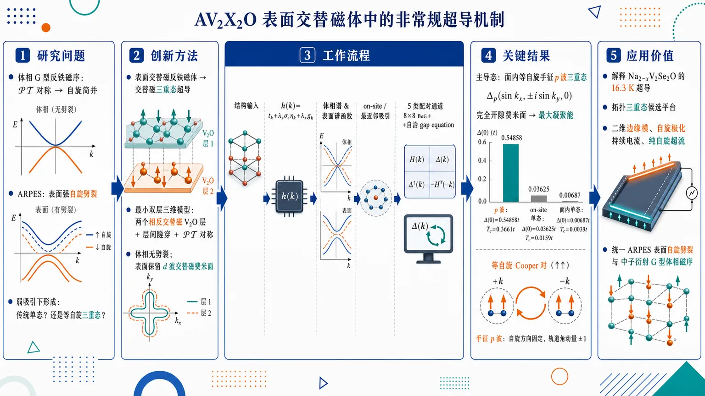
研究问题AV₂X₂O 层状氧硫族化物中，体相 G 型反铁磁序因 𝒫𝒯 对称性使能带自旋简并，但 ARPES 又看到表面强自旋劈裂；核心问题是：这种“体相简并、表面交替磁”的体系在弱吸引相互作用下会形成传统自旋单态超导，还是非常规等自旋三重态超导？创新方法提出“表面交替磁反铁磁体也可产生交替磁三重态超导”的机制：用含两个相反交替磁 V₂O 层、层间隧穿和 𝒫𝒯 对称性的最小三维模型，证明体相虽无自旋劈裂，单层/表面仍保留 d 波交替磁费米面；这种磁性—亚晶格结构让 +k 电子难以找到 −k 反自旋单态伙伴，却能自然形成 ±k 同自旋手征 p 波 Cooper 对。工作流程输入 AV₂X₂O 的 G 型反铁磁层状结构与 V₂O 单层交替磁项 → 构建 h(k)=tₖ+λzσzηₖ+λxgₖ 的双层体相模型 → 计算体相能谱与层分辨表面谱函数，区分体相自旋简并和表面自旋劈裂 → 加入 on-site 与最近邻吸引相互作用 → 平均场分解出 5 类配对通道 → 建立 8×8 BdG 哈密顿量和自洽 gap equation → 比较各通道零温能隙、临界温度和相图 → 输出主导超导态。关键结果面内等自旋手征 p 波三重态 Δp(sin kx, ±i sin ky, 0) 压倒性占优：在相同耦合强度下得到最大零温能隙 Δ(0)=0.54858t 和最高 Tc=0.3661t；相比之下 on-site 单态仅 Δ(0)=0.03625t、Tc=0.0159t，面内单态更低至 Δ(0)=0.00687t、Tc=0.0033t。手征 p 波因能在费米面上完全开隙，获得最大凝聚能。应用价值为 Na₂₋xV₂Se₂O 的 16.3 K 超导提供等自旋手征 p 波拓扑三重态解释，并把 AV₂X₂O 家族定位为寻找高温度尺度三重态超导、二维拓扑超导边缘模、自旋极化持续电流和纯自旋超流的平台；同时统一解释 ARPES 表面自旋劈裂与中子衍射 G 型体相磁序的矛盾。第一部分：核心概览 (Overview)
该研究将表面交替磁性与非常规超导配对统一到 AV₂X₂O 层状氧硫族化物体系中：即便 KV₂Se₂O、Rb₁₋δV₂Te₂O 等体相因 G 型反铁磁序具有 𝒫𝒯 对称性、能带自旋简并，表面和单层仍呈现交替磁自旋劈裂。弱吸引相互作用下，常规自旋单态配对被磁性—亚晶格结构抑制，等自旋手征 p 波三重态超导成为主导不稳定性。该机制为 Na₂₋xV₂Se₂O 的 16.3 K 超导提供了拓扑三重态解释，扩展了交替磁超导理论的适用范围。
---
第二部分：结构化快速回顾
《Unconventional superconductivity in AV₂X₂O family of surface altermagnets》（None，）
背景
AV₂X₂O（A = Na, K, Rb, Cs；X = Se, Te）层状氧硫族化物曾被视为体相交替磁金属候选，但中子衍射和第一性原理结果支持 G 型反铁磁结构，导致体相能带自旋简并。ARPES 观测到的强自旋劈裂可由表面交替磁性解释。
方法
构建包含 V₂O 单层 d 波交替磁项、双层亚晶格、层间隧穿的最小三维模型；计算体相能谱、层分辨谱函数；加入 on-site 与最近邻吸引相互作用，经平均场分解得到 5 类超导序参量，并通过 BdG 方程和自洽 gap equation 比较临界温度与零温能隙。
结果
体相哈密顿量因 𝒫𝒯 对称性保持双重简并，但单层/表面谱函数显示显著自旋劈裂。数值结果表明，在相同耦合强度下，面内等自旋手征 p 波三重态具有最大零温能隙 Δ(0)=0.54858t 和最高 Tc=0.3661t，远高于 on-site 单态 Δ(0)=0.03625t、Tc=0.0159t。
讨论
三重态主导来自两个条件：V₂O 层弱耦合使面内相互作用占优；单层交替磁费米面中，+k 电子缺少 −k 反自旋伙伴，零动量单态 Cooper 对难以形成，而等自旋三重态可由 ±k 同自旋电子组成。
局限
模型为最小单带有效模型，真实材料多轨道、电子关联、声子机制、无序、有限自旋轨道耦合、实际相互作用大小未显式纳入；补充材料和主文给出的相图依赖参数选择，且超导三重态尚待实验证实。
结论
若 Na₂₋xV₂Se₂O 具备 G 型磁序和表面交替磁性，则其 16.3 K 超导最自然的理论候选是等自旋手征 p 波拓扑三重态超导，可支持边缘模、手征/螺旋拓扑态以及自旋极化持续超流。
---
第三部分：逐章节冷凝解析 (Section-by-Section Condensing)
Abstract
- Surface altermagnetism motivates the pairing problem
研究对象来自层状氧硫族化物 Na₂₋xV₂Se₂O 中 16.3 K 超导的发现，并推广到含 V₂O 面的 AV₂X₂O 家族；这些单层被认为具有交替磁序。核心背景由原文直接给出：*"Motivated by the recent discovery of superconductivity at 16.3 K in layered oxychalcogenide Na2-xV2Se2O we investigate pairing instabilities in the broader family of layered materials composed of V2O planes, believed to exhibit altermagnetic order in their monolayer form."*
- Bulk conventional antiferromagnetism coexists with surface altermagnetism
KV₂Se₂O 与 Rb₁₋δV₂Te₂O 可能不是体相交替磁体，而是体相常规反铁磁体，仅在表面表现出交替磁性。关键判断是：*"Even though the bulk family members KV2Se2O and Rb1-δV2Te2O are likely conventional antiferromagnets that show only surface altermagnetism"*。
- Dominant instability is equal-spin triplet superconductivity
尽管体相能带自旋简并，主导配对通道仍是等自旋三重态，而非传统单态。摘要中直接给出结论：*"our analysis predicts exotic equal-spin triplet superconductivity as the dominant pairing instability in these materials."*
- Conventional spin-singlet pairing is structurally frustrated
三重态胜出不是偶然，而是由磁性结构与亚晶格结构共同导致；常规单态配对与电子能带结构不相容。证据句为：*"This is a consequence of their unique magnetic and sublattice structure that renders electron bands incompatible with conventional spin-singlet pairing."*
- Predicted superconductivity is topological and spin-current capable
预测相具有拓扑非平庸性，并可能支持自旋极化持续电流，具备潜在器件意义。原文为：*"The predicted triplet superconducting phases are topologically non-trivial and capable of supporting spin-polarized persistent currents, properties potentially useful in technological applications."*
---
Introduction
- ARPES initially supported altermagnetic-metal interpretation
KV₂Se₂O 与 Rb₁₋δV₂Te₂O 被基于 ARPES 观测归类为交替磁金属候选；观测关键是单电子能带显著自旋劈裂。原文表述为：*"Vanadium-based oxychalcogenides KV2Se2O and Rb1-δV2Te2O were reported as candidates for altermagnetic metals ... based on angle-resolved photoemission (ARPES) experiments ... that showed clear evidence of significant spin splitting in their single-electron bands."*
- Anti-CuO₂ V₂O planes generate 2D altermagnetism
交替磁性起源于 V₂O 平面的 “anti-CuO₂” 结构：氧位于平方晶格角点，钒位于键中心；钒磁矩反铁磁排列后，单层缺少 𝒫𝒯 对称性，成为二维交替磁体。原文证据为：*"Altermagnetism is thought to originate from their V2O planes arranged in the so-called “anti-CuO2” structure with oxygens occupying the corner sites and vanadium the bond sites of the square lattice."* 以及 *"When the vanadium magnetic moments order antiferromagnetically the resulting monolayer structure lacks the combined inversion (𝒫) and time-reversal (𝒯) symmetry which qualifies it as a 2D altermagnet."*
- C-type stacking would produce bulk altermagnetism
若 V₂O 层间磁矩为铁磁排列，即 C 型磁结构，三维晶体会成为体相交替磁体。原文为：*"A 3D material formed by stacking such V2O layers will behave as a bulk altermagnet provided that vanadium moments order ferromagnetically between the layers in a C-type magnetic structure."*
- Neutron diffraction and DFT favor G-type antiferromagnetic bulk order
最新中子衍射与第一性原理研究支持 G 型体相磁结构，即层间反铁磁排列。原文给出证据链：*"Recent neutron diffraction experiments ... as well as first principles density functional studies ... however reported G-type bulk magnetic structure ... with antiferromagnetic interplane order."*
- G-type order restores 𝒫𝒯 symmetry and removes bulk spin splitting
G 型结构在层间中点存在反演中心，体相获得 𝒫𝒯 对称性，所有能带自旋双重简并，因此表现为常规反铁磁金属，而非体相交替磁体。原文为：*"In this case the 3D crystal acquires 𝒫𝒯 symmetry with a center of inversion midway between the planes. As a result all bands become doubly spin-degenerate and the system behaves as a conventional AF metal suggesting that KV2Se2O and Rb1-δV2Te2O are not bulk altermagnets after all."*
- Surface altermagnetism reconciles ARPES and neutron results
ARPES 的自旋劈裂与 G 型体相磁序并不矛盾，因为 ARPES 主要探测最表层；表面局域破坏反演对称性，使 𝒫𝒯 局部破缺，自旋劈裂在表面谱中允许出现。原文为：*"The ARPES data ... can be reconciled with the G-type bulk magnetic structure by invoking the concept of surface altermagnetism"*，并强调 *"ARPES is a surface-sensitive technique that probes primarily the topmost atomic layer of the crystal."* 以及 *"the presence of a surface breaks the inversion symmetry, 𝒫𝒯 is locally broken, and spin-split bands become symmetry-allowed in surface-sensitive probes."*
- Minimal model targets AV₂X₂O with G-type magnetic structure
研究建立适用于 A = Na, K, Rb, Cs；X = Se, Te 的表面交替磁最小模型。原文为：*"we construct a minimal model of a surface altermagnet with AF bulk relevant to the AV2X2O (A = Na, K, Rb, Cs; X = Se, Te) family of materials with G-type magnetic structure."*
- Surface spectral functions show altermagnetic splitting despite bulk degeneracy
关键理论任务是证明：体相能带自旋简并，但表层自旋分辨谱函数仍有强交替磁劈裂。原文为：*"although bulk bands are all doubly spin-degenerate, spin-resolved spectral functions of the surface layers can show pronounced altermagnetic splitting."*
- Weak-coupling superconductivity differs from conventional singlet BCS pairing
交替磁金属因自旋劈裂费米面通常不支持常规单态配对，弱耦合主导通道转向等自旋三重态。原文总结既有理论：*"due to their spin-split Fermi surfaces (FS) altermagnetic metals are fundamentally incapable of forming conventional spin-singlet superconducting phases – instead, the dominant instability at weak coupling is towards the exotic equal-spin triplet state."*
- Unexpected extension to spin-degenerate AF metal
关键新意在于：即使体相 AF 金属没有自旋劈裂费米面，主导超导不稳定性仍是等自旋三重态。原文为：*"even though the AF metal representing bulk oxychalcogenides does not have spin-split FS, its leading SC instability, remarkably, is also in the equal-spin triplet channel."*
- Singlet pairing is suppressed by combined magnetic and sublattice structure
抑制单态配对的根源不是简单的表面效应，而是 G 型磁序下简并金属的磁性—亚晶格结构。原文为：*"this occurs because of the combined magnetic and sublattice structure of the degenerate metal with G-type magnetic ordering which prevents formation of spin-singlet Cooper pairs."*
- Na₂₋xV₂Se₂O is predicted as exotic spin-triplet superconductor
主要材料预言明确指向 Na₂₋xV₂Se₂O。原文结论为：*"Hence, we predict that Na2-xV2Se2O is an exotic spin-triplet superconductor."*
---
Model
- Single-layer V₂O is modeled as a d-wave altermagnet
单层有效单带哈密顿量为
h₀(k)=tₖ+ηₖσz，其中 tₖ = −2t(cos kx + cos ky)，ηₖ = −2η(cos kx − cos ky)。η 项体现 d 波形式的交替磁自旋劈裂。原文为：*"We describe electrons in the V2O monolayer using an effective single-band Hamiltonian for a d-wave altermagnet h0(k)=tk+ηkσz"*，并给出 *"tk=-2t(cos kx+cos ky) and ηk=-2η(cos kx-cos ky)."*
- η breaks time reversal but preserves combined C₄T symmetry
η 是交替磁能带劈裂参数，破坏时间反演 𝒯 = iσyK，但模型仍在 C₄ 与 𝒯 的组合操作下不变。原文为：*"The term η encodes the splitting of the altermagnetic bands and breaks the time-reversal symmetry 𝒯 represented by iσyK"*，以及 *"The model remains invariant under combined C4 rotation and 𝒯."*
- G-type stacking requires two monolayers with opposite η in each unit cell
三维晶体由交替堆叠的单层构成；G 型磁序单胞含两个 η 符号相反的 V₂O 层。原文为：*"For a G-type magnetic structure there will be two monolayers with opposite value of η in a unit cell."*
- Bulk Hamiltonian contains sublattice Pauli matrices and interplane tunneling
体相哈密顿量为
h(k)=tₖ+λzσzηₖ+λxgₖ，其中 gₖ=−2g cos(kz/2) 表示自旋无关层间隧穿，λa 作用于亚晶格/双层空间。原文为：*"The bulk Hamiltonian can then be written as h(k)=tk+λzσzηk+λxgk"*，以及 *"gk=-2gcos(kz/2) describes spin-independent interplane electron tunneling with amplitude g."*
- Inversion is represented by λx and yields 𝒫𝒯 symmetry
若反演中心位于单胞中两个 V₂O 面之间，反演算符可表示为 λx，从而哈密顿量保持 𝒫𝒯 对称性。原文为：*"If we select the center of inversion midway between two V2O planes forming a unit cell then the inversion operator 𝒫 can be represented by λx."* 以及 *"h(k) respects the combined 𝒫𝒯 symmetry."*
- All bulk bands are doubly degenerate because (𝒫𝒯)² = −1
类 Kramers 简并来自 (𝒫𝒯)² = −1；对 4×4 矩阵直接对角化仅得两条不同能带：
εₖα = tₖ + α√(ηₖ² + gₖ²), α = ±1。原文为：*"Because (𝒫𝒯)2=-1 it follows that all bands are doubly degenerate."* 以及 *"diagonalizing the 4×4 matrix Hamiltonian ... yields only two distinct energy eigenvalues εkα=tk+α√(ηk2+gk2), α=±1."*
- G-type bulk has no altermagnetic splitting
体相费米面完全自旋简并，结论明确：*"We conclude that for a G-type magnetic ordering, there is indeed no altermagnetic splitting in the bulk system."*
- Bulk spin-resolved spectral functions are identical
𝒫𝒯 对称性要求 A↑(k,ω)=A↓(k,ω)。原文为：*"The combined 𝒫𝒯 symmetry implies that the bulk electron spectral functions for the two spin projections are the same, A↑(k,ω)=A↓(k,ω)."*
- Layer-resolved spectral function models ARPES surface sensitivity
为模拟 ARPES，采用有限厚 slab，并定义每个 V₂O 层的谱函数
Al,σ(k⊥,ω)=−Im[ω+iδ−ĥ(k⊥)]⁻¹|ll,σ。原文为：*"to model the ARPES data we consider a slab consisting of a finite number of unit cells and define a spectral function associated with each individual V2O layer"*。
- Numerical slab parameters reproduce surface splitting
图 2 的 slab 计算使用 Mz=12 个 V₂O 层、η=0.6、μ=−1.14、g=0.4、δ=0.03。原文图注给出：*"Layer-resolved spectral functions ... for two topmost layers in a stack of Mz=12 V2O layers"*，以及 *"We use η=0.6, μ=-1.14, g=0.4 and δ=0.03."*
- Each individual layer can show spin splitting even when bulk is spin-degenerate
计算结果显示，不仅最表层，任一单独 V₂O 层的层分辨谱函数都能显示明显自旋劈裂；这是表面交替磁的标志性行为。原文为：*"the spectral function of any individual V2O layer shows pronounced spin splitting, even though ... the bulk spectral function Aσ(k,ω) is fully spin-degenerate."* 并称其为 *"a hallmark of the surface altermagnet."*
---
Superconducting instabilities
- Weak attractive interactions include on-site and nearest-neighbor channels
相互作用哈密顿量为
ℋI = −V0∑r nr↑nr↓ − ∑r,δ V1δ nr nr+δ，其中 δ = x̂, ŷ, ẑ，正的 V0、V1δ 表示吸引。原文为：*"We consider both on-site and nearest-neighbor attraction described by ℋI=..."* 以及 *"Positive values of V0 and V1δ signify attraction."*
- Quasi-2D structure implies weak interplane attraction
对弱耦合 V₂O 层，面内最近邻相互作用 V1x=V1y≡V1，层间相互作用预计远小于面内，即 V1z ≪ V1。原文为：*"By symmetry we have V1x=V1y≡V1 and for weakly coupled V2O layers in oxychalcogenides we also expect the inter-plane interaction to be much weaker than in-plane, V1z≪V1."*
- Mean-field decoupling yields five independent order parameters
平均场分解产生 5 类超导序参量：on-site 单态、面内单态、层间单态、面内三重态、层间三重态。原文为：*"this results in 5 independent order parameters comprising on-site spin singlet and singlet/triplet on the in-plane and inter-plane n.n. bonds."*
- BdG Hamiltonian is 8×8 in spin, sublattice, and Nambu space
BdG 哈密顿量写成
H(k)= [[h(k)−μ, Δ̂k], [Δ̂k†, −σy h(−k)* σy + μ]]，在 Ψk=(ψk,iσyψ−k*)T 基底中是 8×8 矩阵。原文为：*"H(k) is an 8×8 matrix in the combined spin, sublattice and Nambu space"*。
- Pairing matrix uses d-vector notation
配对矩阵为
Δ̂k = [[dk·σ, dk0], [dk0, dk·σ]]，其中 dk0 表示单态，dk 表示三重态。原文为：*"The pairing matrix can be written in the standard d-vector notation"*，以及 *"d0k and dk encode the singlet and triplet components of the order parameter, respectively."*
- Chiral p-wave triplet is favored over nematic p-wave
面内三重态重点考察 手征 p 波：Δp(sin kx, ± i sin ky, 0)，而非纯 px 或 py 的向列态；前者给出完全能隙，能量更低。原文为：*"we will focus on the chiral p-wave orbital wavefunction ∼(px±ipy) as opposed to the nematic (pure px or py)."* 以及 *"The former produces a fully gapped excitation spectrum and is therefore expected to be lower in energy, which we confirm by an explicit calculation."*
- Triplet BdG Hamiltonian block-diagonalizes in spin
三重态情形中，BdG 哈密顿量按自旋分块，产生两个独立的 p 波凝聚体：自旋向上与自旋向下。原文为：*"in the triplet case the BdG Hamiltonian becomes block-diagonal in spin and hence yields two independent p-wave condensates for spin-up and spin-down electrons."*
- Normal BdG diagonal block identifies anticommutation criteria
正常部分写为
Hdiag(k)=τz(tₖ−μ)+λzσzηₖ+τzλxgₖ。原文为：*"It is instructive to write the two diagonal blocks of H(k) explicitly as H(k)diag=τz(tk−μ)+λzσzηk+τzλxgk."*
- Triplet and interplane singlet anticommute with all normal terms
两种三重态序参量与层间单态序参量对应的 8×8 矩阵与正常哈密顿量所有项反对易，因此产生规范 BCS 谱。原文为：*"both triplet order parameters and the interplane singlet are represented by 8×8 matrices that anticommute with all the terms in the normal part of the Hamiltonian."*
- BCS quasiparticle spectrum is fully gapped when gap nonzero on FS
满足反对易条件时准粒子谱为
±Eₖα，Eₖα = √[(εₖα−μ)² + |Δₖ|²]；若费米面上 |Δₖ|>0 则完全开隙。原文为：*"This property ensures the canonical BCS form of the spectrum ±Ekα with Ekα=√((εkα−μ)2+|Δk|2), which is fully gapped whenever |Δk|>0 on the FS."*
- On-site and in-plane singlets have non-BCS spectra
表中前两类单态序参量对应 τx，它与正常哈密顿量中的磁性 ηₖ 项对易，而非反对易，因此激发谱更复杂、非标准 BCS 形式。原文为：*"The singlet order parameters listed in the first two lines of Table I are associated with matrix τx which commutes with the magnetic ηk term"*，以及 *"This results in a more complicated non-BCS form of the excitation spectrum."*
---
Quantitative analysis
- Gap equations follow from free-energy minimization
各序参量的 BCS 自洽方程统一写作
Δ = V/(4N) ∑k,α (∂Eₖα/∂Δ) tanh(βEₖα/2)，其中 β=1/kBT，N 为单胞数。原文为：*"The general form is obtained by minimizing the system free energy ... and reads Δ=V/4N∑k,α ∂Ekα/∂Δ tanh(βEkα/2)."*
- Interplane singlet gap equation gives explicit form factor weighting
层间单态满足
Δsz = V1z/(4N)∑k,α [Δsz cos²(kz/2)/Eₖα] tanh(βEₖα/2)，其能隙函数为 Δₖ=Δsz cos(kz/2)。原文为：*"As an example, the gap equation for the interplane singlet component takes the form..."* 以及 *"Ekα is given by Eq. (9) with Δk=Δsz cos(kz/2)."*
- Numerical iteration compares all pairing channels
gap equations 通过数值迭代求解，温度依赖和临界温度列于图 3 与表 I。原文为：*"We solve the gap equations by numerical iteration and display the typical temperature dependences of the three largest order parameters in Fig. 3(a)."*
- Table I uses Mz=24 and fixed model parameters
表 I 结果采用 Mz=24 个 V₂O 层、周期边界条件、η=0.6、μ=−1.14、g=0.4、V0=Vz=V1z=3.0。原文表注为：*"Results in the last two columns are obtained for a stack of Mz=24 V2O layers with periodic boundary conditions in all directions."* 以及 *"We use η=0.6, μ=-1.14, g=0.4 and V0=Vz=V1z=3.0."*
- In-plane chiral triplet has by far the largest gap and Tc
表 I 中面内三重态 Δp(sin kx, ± i sin ky, 0) 对应 V1，零温最大能隙 Δ(0)=0.54858t，临界温度 Tc=0.3661t；远高于 on-site 单态 Δ(0)=0.03625t, Tc=0.0159t，面内单态 0.00687t, 0.0033t，层间单态 0.02590t, 0.0127t，层间三重态 0.02772t, 0.0135t。原文总结为：*"the in-plane triplet Δp is always the dominant order parameter in that it exhibits by far the largest Tc and Δ(0), provided that we assume comparable values of all interaction parameters V."*
- Dominance comes from full-gap condensation-energy gain
手征 p 波独特优势在于能让费米面完全开隙，从而最大化凝聚能。原文为：*"among all order parameters the chiral p-wave alone is capable of producing a fully gapped state and hence its nucleation gains the greatest amount of condensation energy."*
- Main quantitative conclusion is robust chiral p-wave triplet order
定量计算支撑主结论：自旋三重态手征 p 波应在这些材料中稳健占优。原文为：*"This leads to our main conclusion that the spin-triplet chiral p-wave order should robustly prevail in these materials."*
- Other channels require unrealistically large competing interactions
on-site 单态 Δ0 与层间三重态 Δpz 只有在对应相互作用 V0 或 V1z 至少比 V1 大 2 倍时才可能稳定。原文为：*"The on-site singlet Δ0 and in-plane triplet Δpz are next in line, but can be stabilized only when the corresponding interaction parameters V0 and V1z are larger than V1 by at least a factor of 2."*
注：此处原文将 Δpz 称作 “in-plane triplet” 似有笔误；根据表 I，Δpz 是 interplane triplet。
- Real materials likely favor V1 over V0 and V1z
层状准二维结构使 V1z ≪ V1；强 on-site Coulomb 排斥使 V0 < V1。原文为：*"we expect V1z≪V1 due to the quasi-2D structure of vanadium oxychalcogenides with weakly coupled layers."* 以及 *"We also expect V0<V1 on account of the strong on-site Coulomb repulsion between electrons that cannot be efficiently screened."*
- Phase diagram is dominated by in-plane triplet p-wave
V1z–V1 相图显示多数参数空间为面内三重态 p 波；层间三重态仅在 V1z ≳ 2V1 出现。原文为：*"It shows that most of the phase space is taken by the in-plane triplet p-wave while the interplane triplet phase occurs only when V1z≳2V1."*
- Small interaction strengths become numerically challenging
图 3(b) 虚线代表数值外推，因为弱耦合下能隙指数小，自洽求解困难。原文图注为：*"The dashed line is an extrapolation of numerical results: At small values of the interaction strength gaps become exponentially small and solving the gap equations becomes numerically challenging."*
---
Discussion
- Surface altermagnetism reconciles experiments and theory
钒基氧硫族化物的统一图像是：体相能带自旋简并，表面有显著交替磁自旋劈裂。原文为：*"vanadium-based oxychalcogenides in the AV2X2O family are surface altermagnets characterized by spin-degenerate electron bands in their bulk accompanied by a significant altermagnetic spin splitting at their surfaces."*
- ARPES spin splitting and neutron G-type order are compatible
表面交替磁解释同时容纳 ARPES 的表面强劈裂与中子散射的 G 型体相磁序。原文为：*"This view reconciles the ARPES data reporting strong spin splitting in surface bands ... with the G-type bulk magnetic structure observed by inelastic neutron scattering."*
- Weak attraction selects equal-spin chiral p-wave triplet
从层状表面交替磁最小模型出发，弱吸引相互作用下主导超导不稳定性为等自旋手征 p 波三重态。原文为：*"Starting from a minimal model of a layered surface altermagnet we showed that the leading superconducting instability in the presence of weak attractive interactions in such materials is an exotic equal-spin triplet with chiral p-wave symmetry."*
- Isolated V₂O layers behave as d-wave altermagnets
第一条物理观察：AV₂X₂O 可看作弱耦合 V₂O 层；每个孤立层具有 d 波交替磁序与自旋劈裂费米面。原文为：*"the AV2X2O structure can be pictured as composed of weakly coupled V2O layers."* 以及 *"In isolation each such layer would exhibit d-wave altermagnetic order with spin-split Fermi surfaces."*
- Dominant attraction is expected within individual layers
第二条物理观察：弱层间耦合使吸引相互作用主要存在于单层内部，因此超导不稳定性应先从单层内配对分析。原文为：*"for weakly coupled V2O layers, we expect the dominant attractive interaction to reside in the individual layers."* 以及 *"the analysis of SC instabilities must begin by considering pairing within each monolayer."*
- Spin-singlet Cooper pairing fails on monolayer altermagnetic Fermi surfaces
单层费米面中，+k 处电子在 −k 处缺少形成 singlet 所需的反自旋伙伴，因此零动量自旋单态 Cooper 对无法自然形成。原文为：*"the monolayer Fermi surface is not capable of supporting the conventional zero-momentum spin-singlet Cooper pairs: an electron with crystal momentum +k does not have a requisite partner at −k with opposite spin that would be needed to form a singlet pair."*
- Equal-spin triplet pairing survives due to 2D inversion symmetry
费米面的二维反演对称性保证 ±k 同自旋电子可形成等自旋三重态，使其成为主导不稳定性。原文为：*"The 2D inversion symmetry of the FS, on the other hand, guaranties that an equal-spin triplet pair can always be formed from two electrons at +k and −k, making it a dominant instability of the system."*
- Mechanism extends genuine altermagnet arguments to surface altermagnets
过去针对真正体相交替磁金属的论证，在弱耦合交替磁单层组成的表面交替磁体中同样适用。原文为：*"This is a variant of the argument previously advanced in the context of genuine altermagnets ... but we see that it applies to surface altermagnets, provided they are composed of weakly coupled altermagnetic monolayers."*
- Conclusions are expected to be broadly material-independent within AV₂X₂O
推论依赖对称性与一般原则，而非精细化学细节或具体能带形状，因此预计适用于整个 AV₂X₂O 家族。原文为：*"because it relies only on symmetries and general principles, we expect the conclusions to be broadly applicable to the AV2X2O family of materials, regardless of fine details of chemistry and band structure."*
- Triplet stability increases as interplane coupling weakens
机制预言层间耦合越弱，三重态越稳定，并由模型计算确认。原文为：*"the above insight implies that the triplet phase should become more stable for weaker interplane coupling – and this is indeed confirmed by model calculations."*
- 16.3 K triplet superconductivity would be unusually high-temperature
自旋三重态超导极罕见，已知候选通常临界温度很低；Na₂₋xV₂Se₂O 若为 16.3 K 三重态超导，意义突出。原文为：*"spin-triplet superconductors are extremely rare and the few known candidates have very low critical temperatures"*，以及 *"The prospect of Na2-xV2Se2O being a 16.3 K triplet superconductor is, therefore, exciting on several levels."*
- Chiral p-wave is a prototypical 2D topological superconductor
手征 p 波二维薄膜具有完全开隙体态和拓扑保护边缘模。原文为：*"chiral p-wave is a prototypical topological superconductor in two dimensions."* 以及 *"A thin film of such a material will feature a fully gapped bulk with topologically protected edge modes."*
- Edge modes can be chiral or helical
边缘态性质取决于自旋向上与自旋向下两个凝聚体的相对手性。原文为：*"these can be chiral or helical, depending on the relative helicity of the spin-up and spin-down condensates."*
- Two condensates enable spin-polarized persistent currents
两个自旋凝聚体在主导阶近似下解耦，因此可支持自旋极化持续电流，甚至纯自旋超流。原文为：*"because the two condensates are to leading order decoupled, the material is capable of carrying spin-polarized persistent currents, including pure spin supercurrents."*
---
Conclusions
- Altermagnetic triplet mechanism applies to surface altermagnets
过去用于交替磁金属的非常规三重态机制可推广到具有表面交替磁性的金属反铁磁体。原文为：*"the same mechanism that underlies unconventional spin-triplet superconductivity theoretically discussed in the context of altermagnetic metals ... is applicable to the class of metallic antiferromagnets that exhibit surface altermagnetism."*
- Na₂₋xV₂Se₂O has relevant magnetic and superconducting scales
Na₂₋xV₂Se₂O 报道具有约 90 K 磁转变和 16.3 K 以下超导。原文为：*"Na2-xV2Se2O which has been reported to exhibit a magnetic transition near 90 K and superconductivity below 16.3 K."*
- If G-type and surface-altermagnetic, prediction is unambiguous
若 Na₂₋xV₂Se₂O 被证实为 G 型磁序表面交替磁体，则理论明确预言 等自旋手征 p 波三重态超导。原文为：*"If this material is proven to be a surface altermagnet with the G-type magnetic ordering then our theory unambiguously predicts equal-spin triplet superconducting order with chiral p-wave symmetry."*
- CsV₂Se₂O under pressure may broaden scope
CsV₂Se₂O 在压力下低于 3 K 出现类似超导电阻下降，可能扩展理论适用范围。原文为：*"CsV2Se2O was reported to show a superconducting-like resistivity downturn below 3 K under compression ... possibly broadening the scope of our theory."*
- Magnetism–superconductivity interplay has application potential
钒基氧硫族化物中的超导与磁性耦合具备基础和应用重要性。原文为：*"interplay between superconductivity and magnetism in vanadium oxychalcogenides is an exciting topic with potential technological applications and deserves broad attention."*
---
Acknowledgments
- Scientific input and support network
研究受到多位交替磁性、量子材料与超导领域研究者讨论推动，并由 NSERC、CIFAR 与 Aspen Center for Physics 支持。原文为：*"The author is indebted to Alannah Hallas, Niclas Heinsdorf, Jairo Sinova and Libor Šmejkal for stimulating discussions and correspondence."* 以及 *"The work was supported by NSERC and CIFAR."*
---
References
- Reference landscape anchors the work in altermagnetism and topological superconductivity
文献体系覆盖交替磁性理论奠基、二维交替磁模型、ARPES 实验、中子衍射、表面交替磁性、交替磁超导、手征拓扑超导与持续自旋流。代表性引用包括 Šmejkal 等 2022 的交替磁理论、Jiang/Zhang 2025 的 ARPES、Sun/Yang/Xie 2025–2026 的 G 型磁序、Lange/Leeb 2026 的表面交替磁理论、Read–Green 2000 的手征 p 波拓扑超导。参考文献标题中直接体现关键谱系，例如 *"Beyond conventional ferromagnetism and antiferromagnetism: a phase with nonrelativistic spin and crystal rotation symmetry"*、*"Emergent altermagnetism at surfaces of antiferromagnets"*、*"Topological superconductivity in two-dimensional altermagnetic metals"*、*"Persistent spin currents in superconducting altermagnets"*。
---
Supplementary Material: Mean-field decoupling of the interaction term
- Triplet decoupling starts from same-spin nearest-neighbor attraction
补充推导以面内最近邻同自旋吸引为例，相关项为 −V1(nr↑nr′↑ + nr↓nr′↓)。原文为：*"As an example, we start by decoupling the second term in the interaction Hamiltonian Eq. (5) in the spin triplet channel."* 以及 *"The relevant terms are −V1(nr↑nr′↑+nr↓nr′↓)."*
- Bond triplet order parameter is defined on nearest-neighbor links
面内三重态键序参量定义为
Δδσ = V1⟨crσ cr+δσ⟩。原文为：*"If we define a bond order parameter Δδσ=V1⟨crσcr+δσ⟩"*。
- Mean-field Hamiltonian contains anomalous creation terms and condensation-energy cost
分解后平均场相互作用为
ℋIMF = ∑r,δ,σ[Δδσ crσ† cr+δσ† + h.c.] + (1/V1)∑r,δ,σ |Δδσ|²。原文为：*"then we may write the decoupled Hamiltonian as ℋIMF=..."*
- Generic creation operator covers both sublattices
crσ† 可代表 a 或 b 亚晶格上的电子产生算符。原文为：*"crσ† denotes a generic creation operator that can stand for arσ† or brσ† in different sublattices."*
- Chiral p-wave is obtained by complex bond amplitudes
取 Δxσ = −iΔp/2 与 Δyσ = ±Δp/2 得到手征 p 波。原文为：*"We now specialize to the chiral p-wave case by setting Δxσ=−iΔp/2 and Δyσ=±Δp/2."*
- Fourier transform yields sin kx ± i sin ky form factor
傅里叶变换后配对项变为
Δp(sin kx ± i sin ky) ckσ† c−kσ†，对应表 I 中面内等自旋手征 p 波三重态。原文为：*"Fourier transforming, we then obtain ℋIMF=∑k,σ[Δp(sin kx±i sin ky)ckσ†c−kσ†+h.c.]+..."*
---
第四部分：深度理解与语言支持 (Understanding & Nuance)
1. 术语解析
Surface altermagnetism
学术含义：体相为普通反铁磁体、能带自旋简并，但表面因反演对称性局部破缺而出现交替磁式自旋劈裂。
微妙差别：不是“表面铁磁性”，也不是“体相交替磁性”；关键是表面局域 𝒫𝒯 破缺。原文定义为 *"a situation where a system that is a bulk antiferromagnet (AF) exhibits spin-split bands near its surfaces due to the locally broken inversion symmetry."*
Altermagnetic splitting
学术含义：在无净磁化或反铁磁背景下，由晶体旋转对称性和磁序共同导致的动量依赖自旋劈裂。
微妙差别：不同于 Rashba 劈裂，后者通常依赖自旋轨道耦合和结构反演不对称；交替磁劈裂可在非相对论极限出现，且常呈 d 波、g 波等角向结构。
Equal-spin triplet superconductivity
学术含义：Cooper 对由两个相同自旋电子组成，如 ↑↑ 或 ↓↓，总自旋 S=1。
微妙差别：三重态不等于一定有净自旋极化；若 ↑↑ 与 ↓↓ 两个凝聚体同时存在且幅度相等，总体可无净磁化，但仍具有三重态配对结构。这里关键是 *"two independent p-wave condensates for spin-up and spin-down electrons."*
Chiral p-wave
学术含义：轨道配对函数为 px ± ipy，在二维动量空间具有相位绕转，通常破坏时间反演对称性并对应拓扑超导。
微妙差别：与 nematic p 波不同，px 或 py 单独通常有节点；px ± ipy 可在圆形/类圆形费米面上完全开隙，因此凝聚能更高。
𝒫𝒯 symmetry
学术含义：空间反演 𝒫 与时间反演 𝒯 的组合对称性。对自旋 1/2 电子，若 (𝒫𝒯)² = −1，可产生类似 Kramers 的双重简并。
微妙差别：单独的 𝒫 或 𝒯 可以破缺，但组合 𝒫𝒯 保持时，体相仍可自旋简并。
---
2. 疑难查证
为什么体相自旋简并，表面却能自旋劈裂？
G 型反铁磁堆叠中，相邻 V₂O 层的交替磁参数 η 符号相反。体相中，一个电子态可通过 𝒫𝒯 映射到同能量、反自旋伙伴，因此整体谱函数满足 A↑(k,ω)=A↓(k,ω)。
表面切断晶体后，最上层没有对称的镜像伙伴层；反演中心在局域环境中消失，𝒫𝒯 不再作为表面局域对称性约束谱函数。ARPES 又主要探测最上层，所以看到的是类似单层交替磁体的自旋劈裂谱，而非体相平均谱。
为什么自旋单态配对被抑制？
传统 BCS 单态 Cooper 对需要 (+k,↑) 与 (−k,↓) 同时位于费米面附近，才能零总动量配对。交替磁单层的费米面是自旋分裂的，+k 处某自旋态的反向动量 −k 处未必存在反自旋等能伙伴，因此 singlet pairing 的相空间被严重削弱。
等自旋三重态只需要 (+k,↑) 与 (−k,↑) 或 (+k,↓) 与 (−k,↓)；二维费米面反演对称性保证 ±k 同自旋伙伴存在，所以三重态更自然。
为什么手征 p 波比普通 p 波更稳定？
纯 px 或 py 配对函数有节点，例如 Δ ∝ sin kx 在 kx=0 处为零；若节点穿过费米面，准粒子低能态残留，凝聚能降低。
手征组合 px ± ipy 的幅值为 √(sin²kx + sin²ky)，除高对称点外通常非零，可在费米面上完全开隙。完全开隙意味着更多费米面态被配对能隙覆盖，降低自由能更明显，因此 Tc 和 Δ(0) 更大。
为什么层间耦合越弱，三重态越稳定？
弱层间耦合使每个 V₂O 层更接近独立二维交替磁体。单层交替磁费米面强烈不利于 singlet，而有利于 equal-spin triplet。层间耦合增强后，双层/体相 𝒫𝒯 简并混合更多，可能恢复部分单态配对相空间。因而准二维极限更强化面内三重态。
---
第五部分：创新评估与关联 (Synthesis & Novelty)
1. 创新性判断
从“体相交替磁超导”扩展到“表面交替磁反铁磁超导”
过去 2–5 年的相关理论主要讨论真正的交替磁金属：由于体相自旋劈裂费米面，常规 singlet 配对受阻，triplet 配对成为可能。该研究的推进在于：即便体相 没有自旋劈裂费米面、所有体相能带因 𝒫𝒯 自旋简并，层状 G 型反铁磁结构仍可因单层交替磁特征和亚晶格结构选择等自旋三重态。
解决 ARPES 与中子衍射之间的表观矛盾
ARPES 看到强自旋劈裂，中子衍射却支持 G 型反铁磁体相。该研究把二者统一为：体相常规反铁磁、表面交替磁；并进一步指出这种“非体相交替磁”的体系仍可继承交替磁超导机制。
提出 Na₂₋xV₂Se₂O 的 16.3 K 三重态解释
已知三重态超导候选稀少且 Tc 普遍低。将 16.3 K 的 Na₂₋xV₂Se₂O 解释为候选 等自旋手征 p 波三重态超导，在材料意义上非常突出，也使 AV₂X₂O 家族成为寻找拓扑三重态超导的新平台。
给出可量化的通道竞争结论
通过同一最小模型比较 5 类序参量，得出面内手征 p 波在可比相互作用下压倒性占优：Δp(0)=0.54858t, Tc=0.3661t，显著超过所有单态和层间三重态通道。这比单纯对称性论证更强。
把拓扑性质和自旋输运功能联系起来
预测相不仅是非常规超导，而且是潜在二维拓扑超导；薄膜可支持拓扑边缘模，两个等自旋凝聚体可支持自旋极化持续电流和纯自旋超流。这将基础凝聚态问题连接到自旋电子学应用。
-
10
📊 含图深析
📄 摘要：针对手性诱导自旋选择中有机体系弱自旋轨道耦合难以解释大自旋极化的问题，重估弯曲路径电子的几何自旋流。以双链 DNA 输运为背景，提出输运自旋流与内禀几何自旋流尺度层级可放大观测到的 CISS 极化。
💡 亮点：大 CISS 极化被归因于输运自旋流与几何自旋流的尺度层级，而非单靠弱自旋轨道耦合。双链 DNA 是该尺度估计的核心对象。
📖 展开分析 + 配图
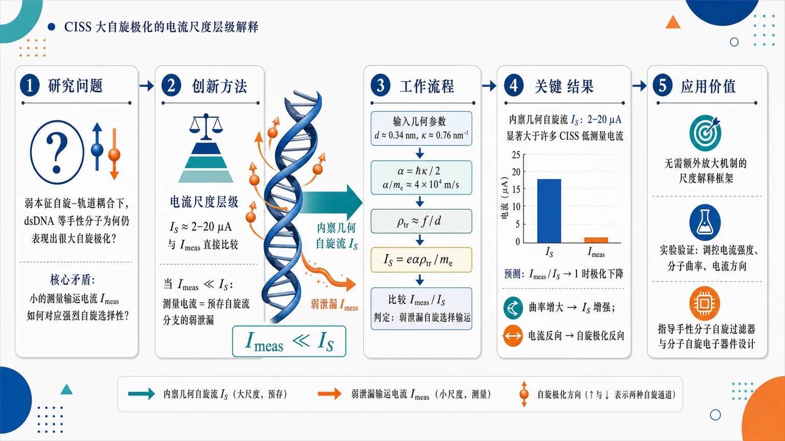
研究问题为什么 dsDNA 等手性分子在弱本征自旋–轨道耦合条件下，仍能在 CISS 实验中表现出很大的自旋极化；核心矛盾是小的测量输运电流如何对应强烈的自旋选择性。创新方法提出“电流尺度层级”解释：用 dsDNA 曲率估算内禀几何自旋流 I_S≈2–20 μA，并与实验测量输运电流 Iₘₑₐₛ 直接比较；当 Iₘₑₐₛ≪I_S 时，测量电流被视为从预存自旋流分支中的弱泄漏，而不是极化的生成源。工作流程输入 dsDNA 几何参数：重复间距 d≈0.34 nm、曲率 κ≈0.76 nm⁻¹；由 α=ℏκ/2 得到几何速度尺度 α/mₑ≈4×10⁴ m/s；设输运活性电子密度 ρₜᵣ≈f/d；计算 I_S=eαρₜᵣ/mₑ；再与实验 Iₘₑₐₛ 比较，若 Iₘₑₐₛ≪I_S，则判定为弱泄漏自旋选择输运。关键结果dsDNA 的内禀几何自旋流估算为 2–20 μA，明显大于许多 CISS 实验中的低测量电流；这支持大自旋极化来自对已有几何自旋流分支的选择，并预测 Iₘₑₐₛ/I_S 接近 1 时极化会下降，曲率增大时 I_S 增强，电流反向时自旋极化反向。应用价值为 CISS 大极化提供一种不依赖额外放大机制的尺度解释框架，可指导实验通过调控电流强度、分子曲率和电流方向来验证自旋选择机制，并为手性分子自旋过滤器、分子自旋电子器件设计提供几何参数准则。第一部分：核心概览 (Overview)
该研究提出解释 CISS 大自旋极化 的尺度层级机制：dsDNA 中由曲率诱导的几何自旋流估算为 2–20 μA，显著大于许多实验中的测量输运电流。核心贡献在于把 intrinsic geometrical spin-current scale 与 measured transport current 进行定量比较，提出当 Iₘₑₐₛ ≪ |I_S| 时，输运可视为预存自旋流态的弱泄漏，从而无需额外放大机制即可解释大极化。
---
第二部分：结构化快速回顾
《Large CISS Polarization from the Hierarchy Between Transport and Geometrical Spin Currents》（None，）
背景
手性诱导自旋选择性（CISS） 实验中常观察到远大于有机材料弱自旋–轨道耦合预期的自旋极化，尤其在 dsDNA 等手性分子输运体系中。传统理论难以定量解释这些大极化。
方法
基于已有的曲线路径电子几何自旋流框架，使用 dsDNA 的结构参数估算内禀几何自旋流尺度：重复间距 d ≈ 0.34 nm、曲率 κ ≈ 0.76 nm⁻¹、几何动量尺度 α = ℏκ/2，得到 α/mₑ ≈ 4 × 10⁴ m s⁻¹。
结果
若输运活性电子密度为 ρₜᵣ ≈ f/d，且 0.1 ≤ f ≤ 1，则几何自旋流尺度为 I_S ≈ 2–20 μA。这一尺度大于许多 CISS 实验中的实际测量输运电流，形成 Iₘₑₐₛ ≪ I_S 的弱泄漏条件。
讨论
大 CISS 极化被解释为：外部输运通道只从已有的自旋选择几何流分支中泄漏少量载流子，测量电流不是产生极化的原因，而是揭示预先存在的自旋选择态。
局限
未推导具体的微观泄漏动力学，也未给出实验数据拟合、统计检验或可直接验证的定量极化公式；核心仍是尺度论证和机制设想。
结论
dsDNA 的内禀几何自旋流可能远大于测量输运流，二者之间的层级关系可为 CISS 大极化提供一个简洁的物理解释框架。
---
第三部分：逐章节冷凝解析 (Section-by-Section Condensing)
Abstract
- Large CISS polarization remains quantitatively unresolved
CISS 中观测到的大自旋极化仍是定量理论难题，关键矛盾在于有机分子中的微观 spin–orbit interaction 通常较弱，却出现了很大的实验极化。摘要明确指出：*"Large spin polarization observed in chiral-induced spin selectivity (CISS) remains difficult to explain quantitatively."* 进一步强调实验极化常常超过弱自旋–轨道耦合预期：*"Experimental polarizations measured in chiral molecular systems are often substantially larger than expected from weak microscopic spin–orbit interaction in organic materials."*
- Geometrical spin current is reused rather than reformulated
研究基础是此前针对受限于曲线路径的电子提出的 geometrical spin current，并未重建新的 Hamiltonian 或新的自旋–轨道耦合模型。摘要中的关键表述为：*"We revisit the geometrical spin current introduced previously for electrons constrained to curved paths and propose a scale argument relevant to transport through double-stranded DNA (dsDNA)."*
- The central estimate produces a large intrinsic current scale
使用代表性 dsDNA 参数估算内禀几何自旋流，得到的电流量级显著高于许多 CISS 实验中的输运电流。核心证据是：*"Estimation of the intrinsic geometrical spin-current scale using representative dsDNA parameters yields current magnitudes substantially larger than measured transport currents in many CISS experiments."*
- Weak leakage from curved spin-current states explains large polarization
当几何自旋流远大于实际输运电流时，输运可解释为从曲率诱导的预存自旋流态中发生的弱泄漏。摘要给出机制判断：*"We suggest that this hierarchy allows transport to be interpreted as weak leakage from underlying curved spin-current states."* 大极化不再需要来自输运过程本身的强自旋过滤，而是来自对已有分支的选择：*"Within this picture, large CISS polarization emerges as transport selection of pre-existing spin-current branches."*
---
1 Introduction
- CISS in dsDNA is a central benchmark problem
dsDNA 是 CISS 研究中最典型的分子体系之一，因为电子沿手性双螺旋结构输运时可表现出显著自旋选择性。开篇直接定位问题：*"Chiral molecular systems frequently exhibit substantial spin polarization during electron transport."* 随后明确 dsDNA 的代表性地位：*"Double-stranded DNA (dsDNA) remains among the most studied examples."*
- Quantitative explanation of large CISS remains open
近期综述仍将大 CISS 强度的定量解释列为未解决问题。证据来自对 2024 年 Chemical Reviews 和 2022 年 Advanced Materials 综述的引用，概括为：*"Recent reviews emphasize that despite extensive theoretical progress, quantitative explanation of the large observed CISS magnitudes remains an open problem [4, 5]."* 这说明问题不在于是否存在 CISS，而在于如何从微观机制上得到足够大的极化幅度。
- The 2012 geometrical spin–orbit current framework is retained unchanged
2012 年 Dan Vager 与 Zeev Vager 的工作已经提出受限曲线路径上的 geometrical spin–orbit current，并讨论了曲线分子体系中的自旋有序。当前框架不修改该理论，只增加一个之前缺失的尺度比较。关键原文为：*"A previous work by Dan Vager and Zeev Vager introduced geometrical spin–orbit current for electrons constrained to curved paths and discussed spin order in curved molecular systems [1]."* 随后限定理论操作：*"The present Letter does not modify that framework."*
- The missing element is the comparison between intrinsic and measured currents
新增要点不是几何自旋流是否存在，而是其尺度是否足以支配输运观测。核心缺口被明确界定为：*"The missing element in Ref. [1] was not the existence of geometrical spin current but its comparison with experimentally relevant transport currents."* 更具体地说，此前未考察 I_S 与 Iₘₑₐₛ 的相对大小：*"To our knowledge, the role of the intrinsic geometrical spin-current scale I_S relative to measured transport currents Iₘₑₐₛ has not been examined."*
- The proposed route differs from current-induced orbital moment mechanisms
2026 年 Ghosh 等工作强调内部电流和分子轨道磁矩可能在无本征自旋–轨道耦合时也促成 CISS；这里采用不同路线，将控制量放在 intrinsic geometrical spin current 与 measured transport current 的层级关系上。相关对照为：*"Recent work has emphasized that internal molecular current itself may play a more central role in CISS than previously assumed and may contribute even in the absence of intrinsic spin–orbit coupling [6]."* 随后给出区别：*"The present work follows a different route and proposes that the relevant quantity controlling large CISS polarization is the hierarchy between intrinsic geometrical spin current and measured transport current."*
- No additional amplification mechanism is required
大极化的来源被归结为电流尺度层级，而不是新型放大过程。直接表述为：*"Rather than introducing an additional amplification mechanism, we suggest that large CISS polarization may originate from a hierarchy of current scales."* 这使解释策略从“弱 SOC 如何被增强”转向“测量输运是否只是大内禀流的微小投影”。
- The weak-leakage criterion is the central inequality
机制成立的核心条件是测量电流远小于内禀几何自旋流：Iₘₑₐₛ ≪ |I_S|。公式给出为：*"Specifically, when Iₘₑₐₛ ≪ |I_S| transport may be interpreted as weak leakage from underlying bound states carrying geometrical spin current."* 由此，实验大极化对应于对已有自旋流分支的选择：*"Within this picture, large observed spin polarization reflects selection of pre-existing spin-current branches."*
---
2 Geometrical spin current
- Effective current decomposes into orbital and spin-induced components
对受限在曲线路径上的电子，有效电流由 orbital current J_O 和 spin-induced current J_S 两部分组成。基本关系为：*"For electrons constrained to move along a curved path, the effective current contains orbital and spin-induced contributions [1]: J = J_O + J_S."* 该分解是后续“束缚态总电流为零但自旋流非零”的基础。
- Two spin branches carry opposite geometrical spin currents
两个自旋分支的 J_S 符号相反。正分支满足：*"For the two spin branches: J_S⁺ = -α ρ₊ / mₑ"*；负分支满足：*"and J_S⁻ = +α ρ₋ / mₑ."* 这意味着选择某一自旋分支时，也选择了确定方向的几何自旋流。
- The parameter α encodes geometrical spin–orbit coupling
α 是几何自旋–轨道相互作用参数，ρ 是局域输运活性电子密度，mₑ 是电子质量。定义直接给出：*"where α is the geometrical spin–orbit interaction parameter, ρ is the local transport-active electronic density, and mₑ is the electron mass."* 这里的 α 后续由曲率决定，体现几何而非重元素本征 SOC 的来源。
- ρ is restricted to the transport energy window
ρ 不代表分子的总电子密度，而是输运能窗内的一维活性电子密度。这一点避免了把所有价电子错误计入几何自旋流尺度。关键限定是：*"The present interpretation takes ρ to represent one-dimensional transport-active electronic density within the transport energy window rather than total molecular electronic density."* 该限定直接影响 I_S 估算中的 ρₜᵣ ≈ f/d。
---
3 Estimate for dsDNA
- Transport-active density is parameterized by f per repeat unit
输运活性电子密度被估算为每个重复单元有 f 个有效活性电子，范围 0.1 ≤ f ≤ 1。公式为：*"Assume transport involves a substantial fraction of one effective transport-active electron per repeat unit: ρₜᵣ ≈ f/d with 0.1 ≤ f ≤ 1."* 这里 f = 0.1 表示每 10 个重复单元约 1 个有效活性电子，f = 1 表示每重复单元约 1 个有效活性电子。
- dsDNA geometry fixes the curvature scale
dsDNA 的重复间距取 d ≈ 0.34 nm，结合螺旋半径得到曲率 κ ≈ 0.76 nm⁻¹。几何输入明确写为：*"For dsDNA, the repeat spacing d ≈ 0.34 nm, together with the helix radius, determines the curvature κ ≈ 0.76 nm⁻¹."* 该曲率是几何自旋流的关键结构参数。
- The geometrical momentum scale is α = ℏκ/2
几何动量尺度与曲率成正比：α = ℏκ/2。原文公式为：*"Since the geometrical momentum scale is α = ℏκ/2, this gives α/mₑ ≈ 4 × 10⁴ m s⁻¹."* 数值 α/mₑ ≈ 4 × 10⁴ m s⁻¹ 可理解为几何自旋流对应的特征速度尺度。
- The characteristic geometrical spin-current scale is eαρₜᵣ/mₑ
几何自旋流尺度定义为 I_S = eαρₜᵣ/mₑ。原文给出：*"The characteristic geometrical spin-current scale is then I_S = e α ρₜᵣ / mₑ."* 其中 e 是元电荷，ρₜᵣ 是一维输运活性密度，α/mₑ 是几何速度尺度。
- Numerical estimate yields 2–20 μA
在 0.1 ≤ f ≤ 1 范围内，dsDNA 的几何自旋流估算为 I_S ≈ 2–20 μA。关键数值证据为：*"which gives I_S ≈ 2–20 μA for 0.1 ≤ f ≤ 1."* 这个尺度对单分子或少分子输运而言很大，因此构成后续层级论证。
- Many CISS experiments operate below the estimated geometrical scale
许多分子和 dsDNA CISS 实验中的测量输运电流小于 2–20 μA 的估计几何自旋流尺度，尤其是检测光电子的实验。原文表述为：*"Many reported CISS transport currents in molecular and dsDNA experiments are considerably smaller than this estimated geometrical spin-current scale and frequently lie in the low-current molecular transport regime, especially in Refs. [2, 3], where photoelectrons were detected."* 引用 [2] 对应 Science 331 (2011) 894–897，引用 [3] 对应 Nano Letters 11 (2011) 4652–4655。
- The weak-leakage condition is assumed
在上述尺度比较下，采用 Iₘₑₐₛ ≪ I_S 作为工作条件。公式为：*"Therefore, the weak-leakage condition Iₘₑₐₛ ≪ I_S is assumed."* 该假设不是由新的实验数据拟合得出，而是由 dsDNA 几何自旋流估算与典型低电流 CISS 实验的量级比较得出。
---
4 Microscopic leakage mechanism
- Bound curved states carry compensated spin and orbital currents
在固定曲率分子路径上的集体电子态中，束缚态极限下可存在非零 geometrical spin current J_S，同时由相反方向的 orbital contribution J_O 补偿，使总电流为零。原文为：*"Consider collective electronic states on a fixed-curvature molecular path."* 机制条件随后给出：*"In the bound-state limit, electrons carry geometrical spin current J_S, compensated by an opposite orbital contribution J_O, such that J = J_O + J_S = 0."*
- Spin-branch selection also selects orbital-current direction
选择某个自旋分支，例如 J_S⁺ = -αρ₊/mₑ，会同时选择补偿性轨道电流的确定方向。原文为：*"Selection of one spin branch, such as Eq. (3), simultaneously selects a definite direction of the compensating orbital current."* 这使自旋选择、几何流方向和轨道补偿方向成为耦合变量。
- External weak coupling permits partial current leakage
当分子束缚态与外部电极、真空光电子通道或其他输运通道弱耦合时，预存电流可以发生部分泄漏。关键语句为：*"Weak coupling to external transport channels then allows partial leakage of this current."* 这里的 leakage 不等同于强驱动输运，而是从已有内部流态向外部测量通道的小幅投影。
- Escaping carriers inherit spin polarization from the selected branch
泄漏电流源自已被选中的自旋流分支，因此逃逸载流子预期继承对应自旋极化。直接证据为：*"Because the leaking current originates from the selected spin-current branch, the escaping carriers are expected to inherit the corresponding spin polarization."* 该句构成从内禀几何自旋流到可测自旋极化的核心桥梁。
- Measured transport reveals rather than generates polarization
弱测量电流不负责“生成”极化，而是揭示原本存在的自旋选择电流态。机制判断为：*"In this picture, weak measured transport current does not generate polarization but reveals pre-existing spin-selected current states."* 这一区分具有重要理论意义：大极化不必由小输运电流动态放大产生。
- Microscopic leakage dynamics remains undeveloped
微观泄漏动力学没有被推导，理论地位是组织原则而非完整动力学模型。明确限制为：*"The present Letter does not derive the microscopic leakage dynamics but proposes that the hierarchy of current scales provides a useful organizing principle for interpreting large CISS polarization."* 因此缺少泄漏率、能级展宽、耦合矩阵元、极化随电压变化的显式公式。
---
5 Experimental consequences
- Polarization should correlate with Iₘₑₐₛ/I_S
预测自旋极化应与 Iₘₑₐₛ/I_S 相关，而不是只与分子长度、温度或电压单独相关。原文列出第一条后果：*"spin polarization should correlate with Iₘₑₐₛ / I_S."* 若 Iₘₑₐₛ/I_S 很小，输运更接近弱泄漏极限，预期可保留较高极化。
- Polarization should decrease as measured current approaches the intrinsic scale
当测量输运电流增大并接近几何自旋流尺度时，弱泄漏图像失效，极化应降低。第二条后果为：*"increasing transport current should reduce polarization once Iₘₑₐₛ / I_S approaches unity."* 这给出一个可检验的非线性趋势：高电流不必增强 CISS，反而可能稀释分支选择性。
- Increasing curvature should increase I_S
因为 α = ℏκ/2，曲率 κ 增大将提高 α，从而提高 I_S = eαρₜᵣ/mₑ。实验后果第三条为：*"increasing curvature should increase I_S."* 因此更小半径、更强弯曲或更紧螺旋的手性路径预期拥有更大的几何自旋流尺度。
- Current reversal should reverse spin polarization
反转电流方向应反转所选择的自旋极化。第四条后果为：*"reversal of current direction should reverse selected spin polarization."* 这是区分几何流分支选择机制与某些静态界面磁化效应的重要实验判据。
---
6 Conclusions
- The estimated dsDNA geometrical spin current exceeds many measured currents
结论重申 dsDNA 的内禀几何自旋流估算明显大于许多 CISS 实验中的实际输运电流。核心语句为：*"The intrinsic geometrical spin current estimated for dsDNA appears substantially larger than measured transport currents in many CISS experiments."* 数值基础来自第 3 节的 I_S ≈ 2–20 μA。
- The hierarchy motivates weak-leakage interpretation
Iₘₑₐₛ ≪ I_S 的层级关系支持将观测输运理解为从预存自旋选择态中发生的弱泄漏。结论表述为：*"This hierarchy suggests that observed transport may reveal pre-existing spin-selected current states through weak leakage."*
- Large CISS polarization receives a scale-based explanation
大 CISS 极化可由电流尺度层级解释，而非依赖强本征 SOC 或新放大机制。结尾为：*"and motivates a possible explanation for large CISS polarization."* 该解释的核心不是计算精确极化百分比，而是提出为何小的测量电流能够显示大的自旋选择性。
---
References
- The theoretical anchor is the 2012 geometrical spin-current paper
引用 [1] 是几何自旋–轨道电流框架来源：*"D. Vager, Z. Vager, Phys. Lett. A 376 (2012) 1895–1897."* 当前机制依赖该框架中的曲线路径自旋电流分支。
- The experimental anchors are early high-impact CISS measurements
引用 [2] 和 [3] 对应早期 CISS 关键实验：*"B. Gohler et al., Science 331 (2011) 894–897."* 以及 *"Z. Xie et al., Nano Lett. 11 (2011) 4652–4655."* 第 3 节特别指出这些实验中存在低电流或光电子检测条件。
- Recent reviews define the unresolved quantitative problem
引用 [4] 和 [5] 支撑“大 CISS 幅度仍难以定量解释”的背景判断：*"B.P. Bloom, Y. Paltiel, R. Naaman, D.H. Waldeck, Chem. Rev. 124 (2024) 1950–1991."* 以及 *"F. Evers et al., Adv. Mater. 34 (2022) 2106629."*
- A 2026 alternative route emphasizes current-induced orbital moments
引用 [6] 提供近期替代机制背景：*"Chirality-induced spin selectivity without intrinsic spin-orbit coupling: Role of current-induced molecular orbital moment."* 当前路线与之不同，强调 geometrical spin current scale 与 measured transport current 的层级关系。
---
第四部分：深度理解与语言支持 (Understanding & Nuance)
1. 术语解析
- Hierarchy between transport and geometrical spin currents
hierarchy 在这里不是社会等级，而是“量级层级”或“尺度分离”。具体指 Iₘₑₐₛ ≪ I_S：可测输运电流远小于内禀几何自旋流。这个词的微妙之处在于，它暗示机制来自尺度差，而不是来自某个新增相互作用。
- Geometrical spin current
指由电子受限在曲线路径上运动时产生的自旋相关电流贡献。这里的 geometrical 强调来源是路径曲率 κ，而非重原子强本征 SOC。公式 α = ℏκ/2 体现其几何来源。
- Weak leakage
leakage 字面是“泄漏”，在物理语境中表示内部束缚态通过弱耦合向外部输运通道释放少量载流子。weak leakage 的关键是外部测量流很小，不破坏或主导内部流态，只抽样其自旋分支。
- Pre-existing spin-current branches
指输运测量发生前，曲率诱导的电子态已经分裂为携带相反几何自旋流的分支，例如 J_S⁺ 与 J_S⁻。pre-existing 的微妙含义是：测量不是产生自旋极化的根源，而是选择或显露已有分支。
- Transport-active electronic density
不是分子中所有电子的总密度，而是处于输运能窗、能够参与电流的有效一维电子密度。这里用 ρₜᵣ ≈ f/d 表示，其中 f 是每重复单元的有效参与比例。
---
2. 疑难查证
- 为什么总电流为零时仍可有自旋流？
在束缚态中，系统不能持续向外输出净电荷流，因此总电流满足 J = J_O + J_S = 0。但这不要求 J_O 和 J_S 各自为零；它们可以大小相等、方向相反。类比为：一个环形轨道内存在顺时针的自旋相关流，同时存在逆时针的轨道补偿流，外部看净电荷流为零，但内部仍有结构化的流态。
- 为什么小测量电流能对应大自旋极化？
极化是两个自旋通道电流差与总电流的比值，而不是电流绝对值。若外部弱耦合只从某一个预存自旋流分支泄漏，即使泄漏出的总电流很小，也可以高度自旋偏振。因此，小 Iₘₑₐₛ 不矛盾于大极化；关键是 Iₘₑₐₛ 是否只是从大 I_S 中抽取的一小部分。
- 为什么曲率能产生有效自旋–轨道项？
电子运动被限制在弯曲路径上时，局域坐标系随路径旋转。自旋量子态在移动过程中感受到几何连接或有效规范场，导致与曲率相关的动量尺度 α = ℏκ/2。这类效应不是传统重元素 SOC，而是约束几何产生的自旋相关运动项。
- 为什么 Iₘₑₐₛ/I_S 接近 1 时极化可能下降？
弱泄漏极限要求外部通道只是轻微抽样内部自旋流态。若 Iₘₑₐₛ 增大到接近 I_S，外部驱动不再是微扰，可能混合两个自旋分支、破坏束缚态补偿结构，或让普通非选择性输运通道占比上升，因此极化降低。
---
第五部分：创新评估与关联 (Synthesis & Novelty)
1. 创新性判断
- 从“机制强度不足”转向“电流尺度层级”
过去 2–5 年 CISS 理论仍聚焦于弱 SOC 如何产生大极化、振动/退相干如何增强选择性、界面效应如何参与、分子轨道磁矩如何在无本征 SOC 下发挥作用。这里的新颖性在于提出：关键控制量可能不是某个放大机制，而是 Iₘₑₐₛ ≪ I_S 的尺度分离。
- 首次把几何自旋流与实验测量电流直接比较
2012 年几何自旋流框架已经存在，但缺少与真实 CISS 输运电流的量级比较。新增贡献是用 dsDNA 参数得到 I_S ≈ 2–20 μA，再与许多低电流分子输运实验比较，从而提出弱泄漏解释。
- 为大极化提供非放大型解释
传统难点是有机分子 SOC 弱，似乎不足以产生大极化。这里绕开“弱相互作用必须被强放大”的思路，提出可测载流子来自已自旋选择的内禀流分支，因此大极化是选择效应而不是动态生成效应。
- 给出清晰实验判据
可检验预测包括：极化与 Iₘₑₐₛ/I_S 相关；当 Iₘₑₐₛ/I_S → 1 时极化下降；增大曲率提高 I_S；反转电流方向反转自旋极化。这些判据使机制区别于单纯界面磁化、普通 SOC 过滤或热激发模型。
- 尚未解决的问题也很明确
关键缺口是缺乏完整的微观泄漏动力学：没有给出泄漏率、分支选择概率、极化大小公式、温度依赖、电压依赖或与具体实验数据的拟合。因此创新主要是尺度论证与解释框架，尚不是完整定量理论。
-
11
📄 摘要：提出层工程方案：将常规反铁磁单层夹在两层相同铁电层之间，实现二维交替磁两种等价自旋劈裂态的非易失、确定性切换。铁电极化通过对称性强制耦合交替磁序，解决零净磁化体系自旋劈裂态可控翻转难题。
💡 亮点：铁电/反铁磁/铁电三明治结构把极化翻转与二维交替磁自旋劈裂态锁定。该对称性机制提供了零净磁化自旋电子器件的非易失控制方案。
📖 展开分析 + 配图
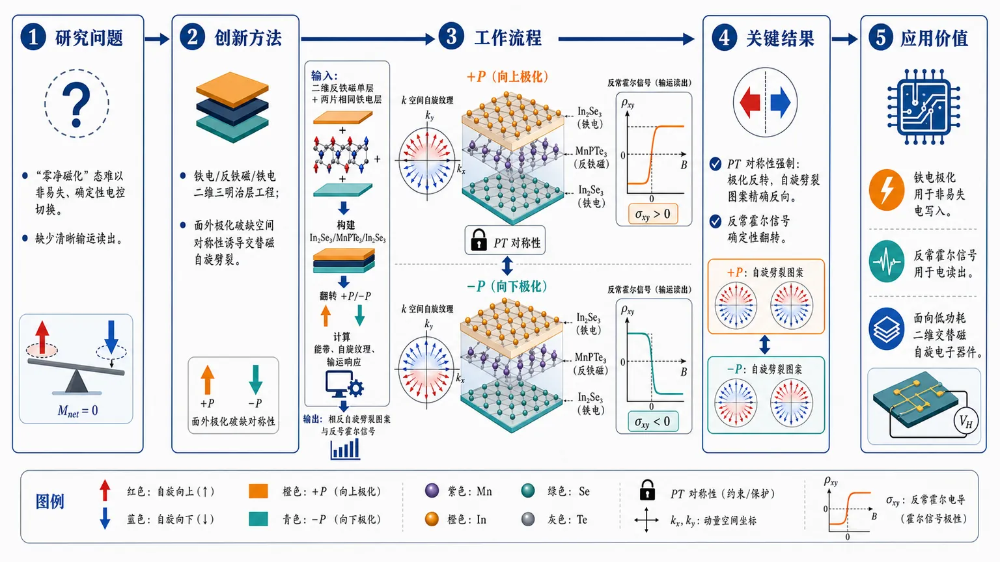
研究问题交替磁体虽具“零净磁化 + 动量依赖自旋劈裂”，但两个等价自旋劈裂态难以实现非易失、确定性、电控切换；核心问题是如何用电场可靠翻转二维交替磁自旋纹理，并提供清晰可读出的输运信号。创新方法提出“铁电/反铁磁/铁电”二维三明治层工程：把常规反铁磁单层夹在两个相同铁电层之间，用面外铁电极化破缺空间对称性诱导交替磁自旋劈裂；Aha 点是联合 PT 对称性强制规定：铁电极化一反转，交替磁自旋劈裂图案必须精确反向，而非偶然调制。工作流程输入为二维反铁磁单层与两片相同铁电层，构建 In₂Se₃/MnPTe₃/In₂Se₃ 三层异质结构；施加向上或向下的面外铁电极化，改变界面对称环境；通过第一性原理计算能带、自旋劈裂纹理与输运响应；输出为两种由 +P/−P 锁定的相反交替磁自旋劈裂图案及反号反常霍尔信号。关键结果面外铁电极化可在原本常规反铁磁单层中诱导稳健二维交替磁自旋劈裂；极化从 +P 翻到 −P 时，k 空间自旋劈裂图案被精确反演；随之反常霍尔效应信号确定性翻转，成为区分两个零净磁化交替磁态的电输运指纹。应用价值该机制把铁电极化作为非易失电写入手柄，把反常霍尔信号作为电读出通道，绕开本征单相交替磁材料严格对称性筛选限制，为低功耗、电寻址、可确定切换的二维交替磁自旋电子器件提供通用设计框架。第一部分：核心概览
该研究提出一种层工程范式：将常规二维反铁磁单层夹在两个相同铁电层之间，通过面外铁电极化破缺空间对称性，从而诱导二维交替磁性 altermagnetism的动量依赖自旋劈裂。核心突破在于：铁电极化反转必然精确反转交替磁自旋劈裂图案，并进一步翻转反常霍尔效应信号，为电控、非易失、确定性切换交替磁态提供通用物理框架。
---
第二部分：结构化快速回顾
《Symmetry-Enforced Ferroelectric Switching of Two-Dimensional Altermagnetism》（None，）
背景
交替磁性具有零净磁化但强烈的动量依赖自旋劈裂，适合下一代自旋电子学。然而，两个等价自旋劈裂态之间的非易失、确定性切换仍是关键瓶颈。
方法
采用层工程 heterostructure 设计：将一个常规反铁磁单层夹在两个相同铁电层之间。具体材料验证体系为 In₂Se₃/MnPTe₃/In₂Se₃ 三层结构，并使用第一性原理计算验证机制。
结果
面外铁电极化破缺空间对称性，诱导稳健的交替磁自旋劈裂；铁电极化反转会精确反转自旋劈裂图案；该反转进一步确定性翻转反常霍尔效应 anomalous Hall effect信号。
讨论
该方案不依赖单相本征交替磁材料苛刻的对称性条件，而是通过异质结构外部构型强制实现可切换交替磁性，因此具有更强材料普适性。
局限
可用文本未给出完整计算细节，例如交换关联泛函、U 值、k 点网格、能量差、极化翻转势垒、自旋劈裂幅度、反常霍尔电导数值、热稳定性或实验可制备性评估。
结论
铁电极化可作为外部电控自由度，非易失、确定性地切换二维交替磁自旋纹理及其输运响应，为电寻址交替磁自旋电子学提供清晰机制。
---
第三部分：逐章节冷凝解析
Abstract
Altermagnetism combines zero net magnetization with strong spin splitting
交替磁性的关键物理特征是：宏观上没有净磁化，但在动量空间中存在强烈、方向依赖的自旋劈裂。这使其区别于传统铁磁体和常规反铁磁体：铁磁体有净磁化且通常伴随自旋劈裂；常规反铁磁体无净磁化但常因对称性保护而保持自旋简并；交替磁体则兼具零净磁矩与k 空间自旋分裂。摘要明确指出：*"Altermagnetism features strong momentum-dependent spin splitting despite zero net magnetization"*。这一性质使交替磁性成为高密度、低串扰自旋电子学的重要候选平台。
The central bottleneck is deterministic and nonvolatile switching
交替磁体的实际器件应用难点不只是产生自旋劈裂，而是如何在两个等价的自旋劈裂构型之间实现可控、非易失、确定性切换。摘要将这一问题界定为基础瓶颈：*"the nonvolatile and deterministic switching between its two equivalent spin-splitting states remains a fundamental bottleneck"*。这里的“nonvolatile”意味着外场撤去后状态仍能保持；“deterministic”意味着切换方向和最终态可预测，而非随机畴翻转。
A universal layer-engineering paradigm is proposed
核心策略是层工程 layer engineering，即通过人工构造范德华或二维异质结构，而非依赖单一材料内部天然对称性。摘要表述为：*"we propose a universal layer-engineering paradigm to achieve symmetry-enforced ferroelectric switching of two-dimensional altermagnetism"*。这里的“universal”指机制层面的普适性：原则上可将适当反铁磁单层与铁电层组合，而不必只寻找稀有的本征交替磁单相材料。
The structural design uses a ferroelectric–antiferromagnet–ferroelectric trilayer
具体结构原则是将一个常规反铁磁单层夹在两个相同的铁电层之间：*"By sandwiching a conventional antiferromagnetic monolayer between two identical ferroelectric layers"*。这一设计利用上下铁电层的极化方向引入可反转的结构不对称性。反铁磁层本身可不具备理想交替磁对称性，但异质结构整体可通过极化状态改变有效对称性环境。
Out-of-plane polarization breaks spatial symmetry and induces altermagnetic splitting
驱动机制来自面外铁电极化 out-of-plane polarization。当铁电极化沿垂直于二维平面的方向排列时，会破坏某些空间对称性，从而允许原本被禁止或抵消的交替磁自旋劈裂出现。摘要给出直接机制：*"the out-of-plane polarization cleanly breaks the spatial symmetry to induce robust altermagnetic splitting"*。其中“cleanly”强调对称性破缺来源明确、可控；“robust”强调自旋劈裂不是偶然微扰，而是由结构对称性系统性诱导。
Global combined parity-time symmetry enforces exact inversion upon polarization reversal
最重要的理论点是全局联合宇称-时间反演对称性 combined parity-time symmetry对切换关系的约束。摘要指出：*"the global combined parity-time symmetry dictates that reversing the ferroelectric polarization exactly inverts the altermagnetic spin-splitting pattern"*。这意味着铁电极化从 +P 切换到 −P 时，自旋劈裂图案不是近似改变，而是在对称性意义上被强制反演。关键词“dictates”和“exactly”表明该结论不是数值巧合，而是由对称操作严格决定。
The mechanism is validated in In₂Se₃/MnPTe₃/In₂Se₃
材料层面的验证体系为 In₂Se₃/MnPTe₃/In₂Se₃ 三层结构。摘要说明：*"We rigorously validate this mechanism in the In2Se3/MnPTe3/In2Se3 trilayer using first-principles calculations"*。其中 In₂Se₃ 是二维铁电材料候选，MnPTe₃ 承担反铁磁单层角色。验证方法为第一性原理计算 first-principles calculations，通常意味着基于密度泛函理论的结构、能带、自旋纹理和输运相关计算；可用文本未给出计算参数、收敛标准或具体数值。
Ferroelectric reversal flips the anomalous Hall effect signal
铁电极化反转不仅改变自旋劈裂纹理，还会确定性翻转反常霍尔效应 anomalous Hall effect, AHE信号。摘要表述为：*"the ferroelectrically driven spin-splitting reversal deterministically flips the anomalous Hall effect signal"*。这提供了器件可读出的输运响应：通过测量霍尔信号符号，即可区分两个交替磁态。这里“deterministically flips”意味着 AHE 符号与铁电极化方向一一对应。
The anomalous Hall signal serves as an unambiguous transport fingerprint
AHE 翻转被定义为识别交替磁态的直接输运指纹：*"providing an unambiguous transport fingerprint to electrically distinguish the two altermagnetic states"*。这解决了交替磁性器件中的读出问题：两个态可能无净磁化，因此不易用常规磁测量区分；但若其 Berry 曲率或能带自旋劈裂导致霍尔响应符号相反，则电输运读出可行。
The framework avoids stringent intrinsic symmetry requirements
传统寻找交替磁材料常受限于单相晶体的空间群、磁群和亚晶格对称性。该层工程策略绕开这些限制。摘要强调：*"Unconstrained by the stringent symmetry requirements of intrinsic single-phase materials"*。这意味着异质结构可以人为设计所需对称性破缺和恢复关系，而不是被动依赖自然材料库中少量满足条件的候选物。
The broader target is electrically addressable altermagnetic spintronics
最终目标是建立电寻址交替磁自旋电子学 electrically addressable altermagnetic spintronics的物理框架。摘要结论为：*"our findings establish a versatile physical framework for electrically addressable altermagnetic spintronics"*。这里的“electrically addressable”包含写入与读取两层含义：铁电极化用于电写入，AHE 信号用于电读出；“versatile”强调材料与结构设计上的可拓展性。
---
Bibliographic metadata
The work is an arXiv preprint in condensed-matter materials science
该研究发布在 arXiv 的凝聚态材料科学类别下，编号为 arXiv:2606.31241。页面信息给出：*"arXiv:2606.31241 (cond-mat)"* 与 *"Subjects: Materials Science (cond-mat.mtrl-sci)"*。这表明其当前状态为预印本，领域定位为二维磁性材料、铁电异质结构和自旋电子学交叉方向。
The submission date is 30 June 2026
投稿记录显示版本 v1 提交于 2026 年 6 月 30 日 07:16:42 UTC：*"Submitted on 30 Jun 2026"* 与 *"[v1] Tue, 30 Jun 2026 07:16:42 UTC"*。因此，该工作属于非常新的理论/计算材料研究。
The available record lists seven authors
署名包括 Jiangyu Zhao、Yibo Liu、Guoli Wu、Xinru Li、Ying Dai、Baibiao Huang、Yandong Ma。页面记录为：*"Authors: Jiangyu Zhao, Yibo Liu, Guoli Wu, Xinru Li, Ying Dai, Baibiao Huang, Yandong Ma"*。通讯上传信息显示来自 Yandong Ma：*"From: Yandong Ma"*。
---
Unavailable full-text sections
Original section-level analysis cannot be completed from the supplied material
可用内容包含题名、摘要与 arXiv 元数据，未包含论文 PDF 正文中的章节标题、图表、方法细节和补充材料。缺失内容包括但不限于：计算设置、晶体结构参数、磁构型能量比较、能带图、自旋投影、Berry 曲率、AHE 电导曲线、铁电翻转路径、稳定性验证。可见页面仅提供摘要中的机制性句子，例如 *"We rigorously validate this mechanism in the In2Se3/MnPTe3/In2Se3 trilayer using first-principles calculations"*，但未给出“rigorously validate”的具体数值证据。
Quantitative evidence is absent in the supplied text
样本量 n、统计显著性 P 值、模型超参数、DFT 泛函、Hubbard U、截断能、k 点网格、真空层厚度、声子谱、分子动力学温度、能量势垒、自旋劈裂大小、AHE 电导数值等均未出现在可用文本中。摘要只给出定性或机制性判断，例如 *"robust altermagnetic splitting"*、*"exactly inverts the altermagnetic spin-splitting pattern"*、*"deterministically flips the anomalous Hall effect signal"*，但没有对应数值。
---
第四部分：深度理解与语言支持
1. 术语解析
Altermagnetism
Altermagnetism 通常译为交替磁性。它不是普通反铁磁性，也不是铁磁性。其核心特征是：净磁化为零，但电子能带在动量空间发生自旋劈裂。摘要中的表达是 *"strong momentum-dependent spin splitting despite zero net magnetization"*。
微妙点在于：“despite”强调表面上的矛盾——没有净磁矩却仍有强自旋劈裂。传统直觉中，自旋劈裂常与铁磁交换场相关；交替磁性则通过晶体对称性和反铁磁子晶格的非平庸排布实现。
Momentum-dependent spin splitting
Momentum-dependent spin splitting 指自旋劈裂依赖于晶体动量 k，不同 k 点或不同 k 方向上的自旋能带分裂大小和符号可能不同。它区别于简单 Zeeman 劈裂，后者往往近似为全局一致的能级分裂。
在交替磁体中，自旋劈裂通常具有角向结构，例如某些方向上正劈裂、另一些方向上负劈裂，总体仍保持零净磁化。
Symmetry-enforced
Symmetry-enforced 可译为对称性强制的。这比“symmetry-allowed”（对称性允许的）更强。
“Allowed”只表示某现象不被对称性禁止；“enforced”表示只要特定对称关系成立，某种映射或反转关系就必然成立。摘要中的 *"global combined parity-time symmetry dictates"* 与 *"exactly inverts"* 表明铁电反转与自旋劈裂反转之间存在严格对称约束，而非偶然计算结果。
Combined parity-time symmetry
Combined parity-time symmetry 即联合 PT 对称性，由空间反演 P 和时间反演 T 组合而成。单独的 P 或 T 可能被破坏，但 PT 的组合仍可保留。
在磁性体系中，T 会翻转自旋和磁矩；P 会反转空间坐标。两者组合可将一个极化/磁构型映射到另一个等价构型。摘要中的关键句是 *"the global combined parity-time symmetry dictates that reversing the ferroelectric polarization exactly inverts the altermagnetic spin-splitting pattern"*。
Transport fingerprint
Transport fingerprint 可译为输运指纹。它指一种可通过电输运实验直接识别某个微观态的信号。这里的指纹是反常霍尔效应信号的符号翻转。
摘要中的 *"an unambiguous transport fingerprint to electrically distinguish the two altermagnetic states"* 强调其判别性：两个交替磁态虽然都无净磁化，但霍尔响应不同，可通过电测量区分。
---
2. 疑难查证
为什么零净磁化仍能产生自旋劈裂？
常规反铁磁体中，两个自旋相反的子晶格常由某种对称操作联系，例如反演加时间反演，因此电子能带保持自旋简并。交替磁体的不同之处在于：反平行自旋子晶格并非通过简单平移或反演等操作完全等价，而是通过旋转等空间操作交替对应。这样一来，整体磁矩可以相互抵消，但动量空间中的能带却不必处处自旋简并。
直观理解：实空间磁矩相加为零，不等于 k 空间每一点的自旋能量差都为零。交替磁性的“零”是总磁化的零，而不是能带自旋劈裂的零。
为什么铁电极化反转能切换交替磁态？
铁电极化是一个可由电场翻转的结构自由度。若上下铁电层夹住反铁磁层，面外极化会改变反铁磁层两侧的局域电势、键合环境和对称性。
当极化从 +P 变为 −P 时，整个异质结构等价于经历某种空间反演相关操作。如果体系还满足全局 PT 关系，那么 +P 状态的自旋劈裂图案必须映射为 −P 状态的反向图案。摘要中的 *"reversing the ferroelectric polarization exactly inverts the altermagnetic spin-splitting pattern"* 正是这个逻辑。
为什么反常霍尔效应可以作为读出信号？
反常霍尔效应与 Berry 曲率和磁性破缺时间反演相关。即便净磁化为零，若能带自旋结构和 Berry 曲率在动量空间中不完全抵消，也可能出现非零或可符号切换的霍尔响应。
若铁电极化反转使交替磁自旋劈裂图案整体反转，那么 Berry 曲率分布也可能随之改变符号，从而导致 AHE 信号翻转。摘要中 *"deterministically flips the anomalous Hall effect signal"* 表示这种输运响应与极化方向绑定。
为什么层工程比寻找本征材料更有优势？
本征单相交替磁材料需要同时满足磁有序、晶体对称性、能带结构、稳定性、可制备性等多重条件，筛选空间窄。层工程则允许将功能分拆：铁电层负责可电控极化，反铁磁层负责磁有序，界面对称性负责诱导交替磁自旋劈裂。
这种“功能模块化”降低了材料设计难度。摘要中的 *"Unconstrained by the stringent symmetry requirements of intrinsic single-phase materials"* 正是该策略的优势所在。
---
第五部分：创新评估与关联
1. 创新性判断
Innovation in switching, not merely in realizing altermagnetism
过去数年交替磁研究的主线之一是识别本征交替磁材料、解释其自旋劈裂对称性、探索自旋流或霍尔效应。该研究的焦点不是简单证明某个材料存在交替磁性，而是解决更接近器件应用的核心问题：如何在两个等价交替磁态之间实现非易失、确定性、电控切换。摘要直接界定该瓶颈为 *"the nonvolatile and deterministic switching between its two equivalent spin-splitting states remains a fundamental bottleneck"*。
Ferroelectricity provides a nonvolatile electrical handle
相较于磁场、应变、光激发或电流诱导切换，铁电极化天然具有非易失性，并且可由电场控制。将铁电性与交替磁性耦合后，写入机制更适合低功耗器件。创新点在于：铁电极化反转不是附带调制，而是由对称性保证自旋劈裂图案反转，即 *"symmetry-enforced ferroelectric switching"*。
Layer engineering removes the dependence on rare intrinsic symmetry
本征交替磁材料受磁空间群约束强，材料库有限。该研究通过 ferroelectric/antiferromagnet/ferroelectric 三明治结构，将交替磁性切换从“寻找材料”转化为“设计异质结构”。摘要中的 *"universal layer-engineering paradigm"* 和 *"Unconstrained by the stringent symmetry requirements of intrinsic single-phase materials"* 体现了这一范式转换。
PT symmetry gives exact state correspondence
很多多铁或磁电耦合体系只能实现近似调控，例如改变磁各向异性、调节交换强度或移动畴壁；这里的关键新意在于，联合 PT 对称性使 +P 与 −P 两个铁电态之间的自旋劈裂图案具有严格反演关系。摘要使用 *"dictates"* 和 *"exactly inverts"*，显示该机制具有理论上的确定性。
Transport readout is built into the design
交替磁态无净磁化，常规磁读出困难。该研究将自旋劈裂反转与反常霍尔效应信号翻转联系起来，使写入态可通过电输运区分。摘要中的 *"providing an unambiguous transport fingerprint to electrically distinguish the two altermagnetic states"* 表明其不仅提出写入机制，也提出读出机制。
Specific material validation strengthens feasibility
以 In₂Se₃/MnPTe₃/In₂Se₃ 为例进行第一性原理验证，使方案从抽象对称性构想走向具体材料实现。In₂Se₃ 对应二维铁电功能层，MnPTe₃ 对应反铁磁功能层，二者组合体现模块化设计。摘要中的 *"We rigorously validate this mechanism in the In2Se3/MnPTe3/In2Se3 trilayer using first-principles calculations"* 给出具体落点。
Unresolved issues remain before experimental translation
可用文本尚未展示关键实验可行性指标：界面稳定性、层间堆垛容差、铁电极化保持性、反铁磁 Néel 温度、MnPTe₃ 单层磁序稳定性、极化翻转势垒、AHE 信号大小、栅压写入窗口和器件读出信噪比。若完整正文提供这些数据，才能判断其距离实验实现的真实程度。
-
12
📊 含图深析
📄 摘要：研究一维易轴 XXZ 铁磁在解禁闭转变点附近的有序相与低温量子超临界区。通过最低能激发解释相行为：两个有序相由磁振子主导，而量子超临界区域由 kink 激发主导，并对 Ising 极限作详细分析。
💡 亮点：解禁闭转变附近的一维易轴 XXZ 铁磁呈现磁振子与 kink 的主导权切换。该分类把有序相和量子超临界低温区的热力学行为联系到最低能激发。
📖 展开分析 + 配图
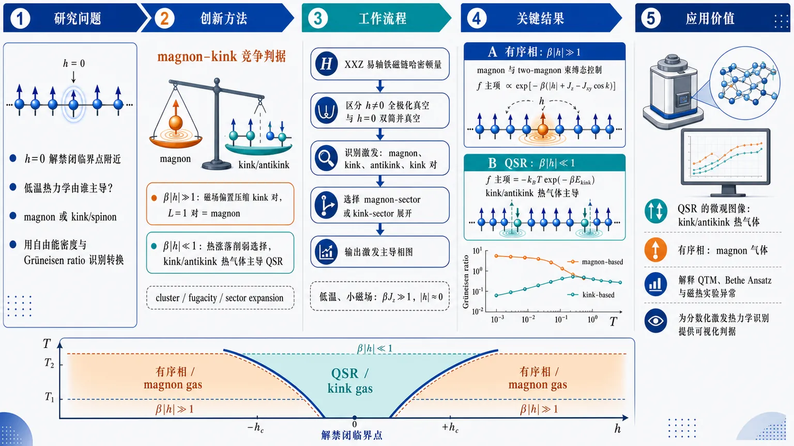
研究问题一维易轴 XXZ 铁磁链在 h=0 磁化反转解禁闭临界点附近，低温热力学究竟由哪类最低激发主导：有序相中的局域自旋翻转 magnon，还是量子超临界区中的畴壁 kink/spinon；并用自由能密度与 Grüneisen ratio 的低温行为识别这种主导权转换。创新方法提出“magnon–kink 竞争”判据：β|h|≫1 时磁场偏置压缩 kink-antikink 对，最短 L=1 对就是 magnon，体系进入禁闭有序相；β|h|≪1 时热涨落削弱磁场选择，kink/antikink 作为解禁闭畴壁热气体主导 QSR。方法上用 cluster/fugacity/sector expansion 分别按 magnon 扇区与 kink 扇区展开，并在 Ising 极限中用精确自由能和 Grüneisen ratio 验证。工作流程输入一维易轴 XXZ 铁磁链哈密顿量与低温小磁场条件 → 区分 h≠0 全极化真空与 h=0 双简并真空 → 识别低能激发：magnon、kink、antikink、kink-antikink 对 → 按 β|h|≫1 或 β|h|≪1 选择 magnon-sector 或 kink-sector 展开 → 计算自由能密度低温渐近式 → 在 Ising 极限 Jxy=0 下与精确自由能、配分函数分区、Grüneisen ratio 曲线对照 → 输出有序相/QSR 的激发主导相图。关键结果有序相 β|h|≫1 中，自由能由 magnon 与两 magnon 束缚态控制，主项含 exp[-β(|h|+Jz−Jxy cos k)]；QSR β|h|≪1 中，自由能主项变为 −kBT exp(−βEkink)，明确由 kink 控制。Ising 极限中，精确自由能在有序相展开为 one-/two-magnon 形式，在 h=0 展开为 kink 气体形式；Grüneisen ratio 也分裂出 magnon-based 与 kink-based 两套低温渐近式。应用价值为解禁闭量子临界点有限温扩展出的 quantum supercritical regime 提供直观微观图像：QSR 是 kink/antikink 热气体，有序相是 magnon 气体。该框架可帮助解释量子转移矩阵、Bethe Ansatz 与磁热实验中的自由能、磁化率和 Grüneisen ratio 异常，并为一维量子磁体中分数化激发的热力学识别提供可视化判据。第一部分：核心概览
该工作围绕一维易轴 XXZ 铁磁链在磁化反转解禁闭临界点附近的低温热力学机制，提出“有序相由 magnons 主导、量子超临界区由 kinks/spinons 主导”的激发谱判据。核心贡献在于把 deconfined quantum criticality 的分数量子化激发图像延伸到有限温度 quantum supercritical regime，并用可精确求解的 Ising 极限验证自由能密度与 Grüneisen ratio 的低温渐近式。该工作处于理论解释与渐近分析层面，为近年量子超临界磁热标度研究提供了微观激发分类框架。
---
第二部分：结构化快速回顾
《The competition between low-temperature kinks and magnons at the vicinity of the deconfinement transition point in 1D easy-axis XXZ ferromagnet》（None，）
背景
一维易轴 XXZ 铁磁链在纵向磁场 h=0 附近存在磁化反转临界点；零温下两侧为相反极化的有序铁磁相，有限温度下临界点扩展为 quantum supercritical regime, QSR。有序相通常由束缚的 magnon 激发主导，临界或解禁闭区域则由分数化 kink/spinon 激发主导。
方法
采用低温 cluster/fugacity/sector expansion 分析自由能密度，比较 magnon-based 与 kink-based 低能激发贡献；利用热力学 Bethe Ansatz 已知低温公式识别一般 XXZ 链中的主导激发区域；在 Ising 极限 Jxy=0 下用精确自由能、配分函数分区展开和 Grüneisen ratio 公式进行显式验证。
结果
在 β|h|≫1 的有序相标度区，自由能低温渐近式由 magnon 与两 magnon 束缚态贡献控制；在 β|h|≪1 的 QSR 标度区，自由能主项为 −kBT exp(−βEkink) 型，由 kink 控制。Ising 模型中，自由能密度精确式、magnon 展开和 kink 展开在各自适用区域内相互吻合。
讨论
kink-antikink 对在非零磁场下呈线性禁闭势，长度随 |h| 增大而缩短，最短长度 L=1 时等价于 magnon；升温可增加对长度和密度，使系统重新进入 QSR。因此，QSR 可视为 kink/antikink 或其对的热气体，有序相可视为 magnon 气体。
局限
一般 XXZ 链的严格证明尚未完成；关键 Bethe Ansatz 低温公式被视为“physical order of strictness”而非严格证明。QSR 中 kink 展开精度较低，因为能隙较小、温度相对更高。零场磁化率在 T=0 奇异，难以完全由常规 cluster expansion 得到。
结论
低温热力学在解禁闭转变附近存在清晰的激发主导权转换：有序相由 magnons 主导，QSR 由 kinks 主导。Ising 极限提供了自由能与 Grüneisen ratio 的显式支持；该框架可望用于解释一般易轴 XXZ 铁磁链的 Quantum Transfer Matrix 结果。
---
第三部分：逐章节冷凝解析
Abstract
Magnons dominate ordered phases, kinks dominate QSR
核心断言是：一维易轴 XXZ 铁磁链在解禁闭转变点附近，低温热力学可由最低能激发类型分类；两个有序相由 magnons 控制，量子超临界区由 kinks 控制。摘要直接给出主结论：*"We show, that the two ordered phases are governed by magnons, while the quantum supercritical regime is governed by kinks."* 该判断建立在 ordered phases、quantum supercritical low-temperature regime 与 deconfinement transition point 三者的激发谱差异之上。
Ising limit supplies the detailed testbed
Ising 模型被作为可显式处理的极限，用于验证 kink 与 magnon 的竞争图像。摘要明确限定了详细计算对象：*"Within this framework the Ising model is treated in detail."* 由于 Jxy=0 时 kink 态具有简单的实空间畴壁表示，Ising 极限成为检验低温 sector expansion 的最透明场景。
---
1 Introduction
Deconfined criticality provides the conceptual background
研究背景来自非常规量子相变，即不同于 Landau-Ginsburg-Wilson-Fisher 范式的 deconfined quantum critical point。关键表述为：*"The unconventional, different from the Landau-Ginsburg-Wilson-Fisher, paradigm of phase transition was suggested in [1]."* 这种转变连接两个由常规“禁闭”序参量描述的相：*"It describes critical points, separating two phases characterized by conventional 'confining' order parameters."* 相关研究进展由近两篇综述覆盖：*"The progress in this direction within the last 20 years is presented in the two recent reviews [2, 3]."*
Magnons and spinons encode confinement versus fractionalization
磁化反转转变的典型图像是：有序相两侧的激发为整数自旋 magnons，临界点激发分数化为半整数自旋 spinons。原文引用综述中的表述：*"magnons with integer spins dominate the excitations in the ordered phases on both sides of the transition, whereas at the critical point, the excitations turn out to be fractionalized as free spinons with half-integer spins".* 物理解释是 magnon 可视为禁闭的双 spinon 态：*"magnons in a ferromagnetic chain are treated as confined two-spinon pairs."*
Spinon confinement analogy links ferromagnets and antiferromagnets
一维 XXZ 反铁磁链在交错磁场下发生 kink/spinon 禁闭成 meson/magnon 的现象，为当前铁磁链问题提供类比。关键句为：*"This picture is very similar to the confinement of kinks (spinons) into mesons (magnons) in a 1D XXZ antiferromagnet under the action of a staggered magnetic field [4]."* 该类比强调 kink/spinon → bound pair → magnon/meson 的共同结构。
The model is a spin-1/2 easy-axis XXZ ferromagnetic chain
核心哈密顿量为
[
hatHm̊ XXZ=-sumₙ₌₋MMBig[JzBig(bf Szₙbf Szₙ₊₁-frac14Big)+fracJₓy2Big(bf S⁺ₙbf S⁻ₙ₊₁+bf S⁻ₙbf S⁺ₙ₊₁Big)+hbf SzₙBig].
]
对应英文说明为：*"In the present paper we consider ... alternation magnetization transition in an easy-axis XXZ ferromagnetic chain, corresponding to the Hamiltonian"*。参数条件包括 Jz>0 与 |Δ|>1：*"it will be assumed that (J_z>0)"*，以及 *"where the, so called, anisotropy parameter is (Δequiv J_z/Jₓy)."* 易轴条件 |Δ|>1 保证体系有能隙并支持畴壁激发。
Two fully polarized ferromagnetic ground states meet at h=0
当 h≥0 时，基态为全上极化态
[
|emptyset₊ångle=prodₙ₌₋MM|p̆arrowångleₙ,
]
对应说明为：*"At (h≥0) the corresponding to (1) ground state ... is ferromagnetically polarized."* 当 h≤0 时，基态为全下极化态
[
|emptyset₋ångle=prodₙ₌₋MM|downarrowångleₙ,
]
并且 *"At (h=0) both (5) and (6) are the ground states of (1)."* 因此 h=0, T=0 是两极化相的交汇点。
Finite temperature expands the critical point into QSR
零温下，磁场 h 的符号翻转导致两个有序相之间的相变；有限温度下，h=0 临界点扩展成有限区域 QSR。关键描述为：*"At (T=0) the alternation of (h) results in distinct phase transition between (5) and (6)"*；而 *"The latter, at (T>0), expands into a finite area, associated with the quantum supercritical regime (QSR) and corresponding to a continuous crossover with gradual change of magnetization [6, 7]."* 该区域在相图中位于 order I 与 order II 之间：*"includes three segments, the order I ... the order II ... and, between them ... the QSR phase, where the system behaves very similar to a super critical liquid."*
Low-temperature thermodynamics is expected to be governed by the gap-edge spectrum
由于所有区域均有能隙，低温 T<Tgap=Egap/kB 下热力学主要由基态与最低激发决定。原文表述为：*"Since, in all the mentioned regimes, the system is gapped, it seems natural to suppose, that their low-temperature thermodynamical behaviors at (T<Tₘ̊ gₐₚequiv Eₘ̊ gₐₚ/kₘ̊ B) are governed by the corresponding lowest energy spectrums."* 实际含义为：*"almost all the low-temperature thermodynamical parameters may be obtained, with satisfactory accuracy, by manipulations only with the ground states and the lowest energy excitations."*
At nonzero field the elementary low-energy excitations are magnons
在 |h|>0 的周期链中，最低激发为单 magnon，态矢量为
[
|m̊ magn;kångle±=sumₙ₌₋MMeⁱkⁿbf Smpₙ|emptyset±ångle,quad kin[0,2π],quad h=±|h|.
]
原文给出：*"At (|h|>0) such excitations are magnons"*，并列出能量
[
Eₘ̊ ₘₐgₙ(k)=|h|+J_z-Jₓyo̧s k.
]
引述为：*"with energies (Eₘ̊ ₘₐgₙ(k)=|h|+J_z-Jₓyo̧sk)."* 该色散包含 Zeeman 能量 |h|、Ising 交换能 Jz 和横向跃迁项 −Jxy cos k。
At zero field the elementary low-energy excitations are kinks
在 h=0 的开链中，最低激发为 kink 与 antikink，两者能量相同：
[
Eₘ̊ ₖᵢₙₖ=fracJ_z2sqrt1-frac1Δ².
]
原文为：*"At (h=0) the lowest-energy open chain excitations are kinks and antikinks with equal energies [9]"*。该结果说明在解禁闭点附近，最低能对象不是自旋翻转 magnon，而是连接两个极化真空的畴壁。
Ising limit gives explicit kink and antikink wavefunctions
在 Jxy=0 的 Ising 模型中，kink 是左侧全上、右侧全下的畴壁；antikink 相反。原文说明：*"Exact representations for the kink and antikink states are rather transparent only for the Ising model, corresponding to (Jₓy=0)."* 具体态为
[
|m̊ kink;nånglem̊ Is
=prodₘ₌₋Mⁿ|p̆arrowₘångleprodₘ₌ₙ₊₁M|downarrowₘångle,
]
[
|m̊ antikink;nånglem̊ Is
=prodₘ₌₋Mⁿ|downarrowₘångleprodₘ₌ₙ₊₁M|p̆arrowₘångle.
]
这直接呈现 domain wall 的拓扑性质。
Nonzero field confines isolated kinks but allows finite kink-antikink pairs
当 |h|>0 且 M→∞ 时，相对于单一极化基态，孤立 kink/antikink 能量发散；但 kink-antikink 对能量有限。关键句为：*"At (|h|>0) and (Mi̊ghtarrowinfty) the energy of both kink and antikink, with respect to the ground states either (5) or (6), becomes infinite, however the energy of a kink-antikink pair ... remains finite at (|h|>0)."* 对全上基态，对能量为
[
Eₘ̊ ₖᵢₙₖ₋ₐₙₜᵢₖᵢₙₖ(n₁,n₂₎₌J_z+|h|tt L,quad tt L=n₂₋ₙ₁.
]
原文强调：*"In both the cases, these energies ... depend linearly on the length parameter (tt L=n₂₋ₙ₁)."* 线性长度项 |h|L 即禁闭势。
Topological sector decomposition captures deconfined kink gas at h=0
在 h=0 且低温下，体系是稀薄的 kink/antikink 热气体，并分解为四个拓扑边界扇区：
[
a̧l H=a̧l Hₚ̆ₐᵣᵣₒwₚ̆ₐᵣᵣₒwøplusa̧l Hₚ̆ₐᵣᵣₒwdₒwₙₐᵣᵣₒwøplusa̧l Hdₒwₙₐᵣᵣₒwₚ̆ₐᵣᵣₒwøplusa̧l Hdₒwₙₐᵣᵣₒwdₒwₙₐᵣᵣₒw.
]
原文表述为：*"At (h=0) and (T<Tₘ̊ gₐₚ) the system behaves as a thermally excited rare gas of kinks and antikinks in the deconfined phase."* 该分解反映开链左右边界极化可相同或相反。
Small nonzero h reduces topological sectors and creates confined pair gases
即使很小的 |h| 也会选择一个极化真空，并把 Hilbert 空间有效投影到对应扇区。原文为：*"Under even a subtle increase of (|h|) the decomposition (16) essentially reduces."* 当 h>0 时只剩 H↑↑，表现为 kink-antikink 对稀薄气体；当 h<0 时只剩 H↓↓，表现为 antikink-kink 对稀薄气体：*"at (h>0) its right side turns into (a̧l Hₚ̆ₐᵣᵣₒwₚ̆ₐᵣᵣₒw) and should be treated as a rare gas of kink-antikink pairs."*
A shortest kink-antikink pair is exactly a magnon
随着 |h| 增大，线性禁闭势压缩 kink-antikink 对长度，直到最小值 L=1。原文关键句为：*"According to (14), a further increase of (|h|) results in the decrease of the pair lengths up to their minimal values (tt L=1). Since, such a pair is exactly a magnon, the system, on this stage, turns into one of the ordered confined phases."* 因此 magnon 被解释为最短的禁闭 kink-antikink 复合体。
Heating can drive ordered phases back into QSR as dense pair gases
若在有序相升温，pair 长度与密度同时增加，体系可重新进入 QSR。原文说明：*"if on this stage one to begin to heat the chain, then the pair lengths, as well as the pair density, will simultaneously increase."* 随后：*"Under this process, the system will return into the QSR, however now as a dense gas of antikink-kink ... pairs."* 该图像把 QSR 理解为非零温度下由扩展畴壁对组成的强涨落区域。
Working prescription assigns magnons to ordered phases and kinks to QSR
低温数学描述的操作原则是：有序相使用 magnon spectrum，QSR 使用 kinks。原文总结为：*"we suppose, that the (T<Tₘ̊ gₐₚ) mathematical description of the ordered phases should be done on the basis of the magnon spectrum, while for the QSR one should use kinks."* 这是全文后续计算的核心假设。
---
2 The kink and magnon fingerprints in the low-temperature asymptotic of the free energy density for XXZ chain
Sector expansion is the central low-temperature tool
cluster/fugacity expansion 被用于从低能多粒子谱得到自由能密度；在自旋链语境中称为 sector expansion 更直观。原文为：*"The cluster, or fugacity expansion (the term 'sector expansion' seems more convenient for the author in the context of spin chains) is an effective, direct (not based on integrability) theoretical approach for evaluation of low-temperature thermodynamical properties."* 其优点是物理解释清楚：*"under a very clear physical interpretation."*
Free energy density decomposes into ground-state and excitation-sector contributions
自由能密度定义为
[
f(T,h)=-frac1βłimN→ᵢₙfₜyfrac1Nłogm̊ Tr(e⁻βhat H),quad N=2M+1.
]
低温展开为
[
f(T,h)=ǎrepsilon₀₍ₕ₎₊sumⱼ₌₁ⁱⁿftyfⱼ₍T,h).
]
原文说明：*"where (ǎrepsilon₀₍ₕ₎) is the ground state energy density, while each (fⱼ₍T,h)) may be obtained by utilization of only the (l)-particle states energies with (lłeq j)."* 第一项为
[
f₁₍T,h)=-k_BTłimN→ᵢₙfₜyfrac1Nsum_μ e⁻β E_μ+o(e⁻β Eₘ̊ gₐₚ).
]
Correct identification of the lowest branch is the key technical issue
sector expansion 的核心难点不是公式本身，而是判断最低激发分支究竟是 magnon 还是 kink。原文强调：*"Since the latter depends on the phase of the system, its correct identification is the main state of art."* 对简单模型该识别可解：*"However, for rather simple models this procedure usually is readily solvable."*
Magnon assumption yields the ordered-phase free energy contribution
若有序相最低激发为 magnon，则
[
ǎrepsilonm̊ magⁿ₀₍ₕ₎₌₋frac|h|2,
]
[
fm̊ magⁿ₁₍T,h)=-frack_BT2πint₀²πdk,e⁻β Eₘ̊ ₘₐgₙ⁽k⁾.
]
原文为：*"the assumption that the lowest-energy excitations in the ordered phase are magnons, automatically yields"* 上式。这里 −|h|/2 是全极化铁磁基态 Zeeman 能量密度。
Kink assumption yields the QSR free energy contribution
在 QSR 中，应采用
[
ǎrepsilonm̊ QSR₀₍ₕ₎₌₀,quad fm̊ QSR₁₍T)=-k_BT e⁻β Eₘ̊ ₖᵢₙₖ.
]
原文为：*"At the same time, in the QSR (20) there should be (ǎrepsilon₀m̊ QSR(h)=0,quad f₁m̊ QSR(T)=-k_BT e⁻β Eₘ̊ ₖᵢₙₖ)."* 该形式没有显式 h 依赖，反映接近 h=0 的 kink 主导图像。
Thermodynamic Bethe Ansatz formula supplies an external benchmark
一般 XXZ 链的低温自由能近似式来自 Johnson–Bonner 的热力学 Bethe Ansatz：
[
f(T,h)approxσ h-sqrtfrach²4+(k_BT)²e⁻β|Jₓy|sqrtΔ²⁻¹
-frack_BT2πint₀²πdk,e⁻β Eₘ̊ ₘₐgₙ⁽k⁾.
]
原文说明：*"The only known ... result in this direction is the low-temperature formula ... presented in Eq. (2.21) of [13] ... within the thermodynamical Bethe ansatz approach."* 但该公式严格性有限：*"Since (23) was derived in [13] only within physical order of strictness, its rigorous proof remains an actual problem."*
The analysis assumes Δ>5/3
比较不同项时采用条件
[
Δ>frac53.
]
原文为：*"under the condition [13] (Δ>frac53), thermodynamical behaviors of the system in the two following scaling regimes ... should be quite different."* 该条件限定了低温渐近比较的适用范围。
The β|h|≫1 scaling regime is magnon-governed
在
[
β|h|gg1
]
且
[
frach²4gg(k_BT)²e⁻β|Jₓy|sqrtΔ²⁻¹
]
时，自由能退化为
[
f(T,h)approxσ h-frack_BT2πint₀²πdk,e⁻β Eₘ̊ ₘₐgₙ⁽k⁾.
]
原文为：*"In the regime (25) ... (23) reduces to ... so that the low-temperature thermodynamics is governed by magnons."* 这一区域对应远离临界线的有序相。
The β|h|≪1 scaling regime is kink-governed
在
[
β|h|łl1
]
且
[
frach²4łl(k_BT)²e⁻β|Jₓy|sqrtΔ²⁻¹
]
时，自由能主项为
[
f(T,h)approx -k_BT e⁻β |Jₓy|sqrtΔ²⁻¹/².
]
原文为：*"In the opposite regime (26) ... (23) reduces to (f(T,h)approx-k_BT e⁻β|Jₓy|sqrtΔ²⁻¹/²)."* 结合
[
Eₘ̊ ₖᵢₙₖ=fracJ_z2sqrt1-frac1Δ²
=frac|Jₓy|2sqrtΔ²⁻¹,
]
该项正是 −kBT exp(−βEkink)：*"The latter, according to (10) and (4), shows that (26) is governed by kinks."*
The section establishes the operational phase assignment
最终判断为：β|h|≫1 属于 magnon 主导有序相，β|h|≪1 属于 kink 主导 QSR。原文总结：*"we suggest that (23) gives the strong evidence, that the scaling region (25) should be governed by magnons (and hence corresponds to the ordered phase). At the same time, the phase (26) should be governed by kinks (and, hence, correspond to QSR)."*
---
3 The low-temperature behavior of the ferromagnetic Ising chain
Ising limit fixes Jxy=0 and enables exact thermodynamics
当 Jxy=0 时，XXZ 哈密顿量退化为铁磁 Ising Hamiltonian。原文开头为：*"At (Jₓy=0), (1) turns into the Ising Hamiltonian (hat Hm̊ Is)"*。该极限下自由能密度有精确表达式，可作为 magnon/kink 展开的检验基准。
---
3.1 The free energy density
Exact Ising free energy density is known
铁磁 Ising 链自由能密度为
[
fₘ̊ Iₛ(T,h)=-k_BTłogłeft[
o̧shfracβ h2
+sqrtsinh²fracβ h2+e⁻β J_z
i̊ght].
]
原文为：*"with the free energy density [14]"* 并给出上式。该公式同时包含磁场项 h 与畴壁代价 Jz。
Magnon-sector expansion is used in β|h|≫1
在有序相标度区 β|h|≫1，自由能被展开为
[
fₘ̊ Iₛm̊ magⁿ(T,h)approx
ǎrepsilonₘ̊ Iₛ,₀m̊ magⁿ(h)
+fₘ̊ Iₛ,₁m̊ magⁿ(T,h)
+fₘ̊ Iₛ,₂m̊ magⁿ(T,h).
]
原文为：*"The low-temperature expression for (31) in the region (25) ... may be obtained by the use of the cluster (sector) expansion."* 基态能量密度为
[
ǎrepsilonₘ̊ Iₛ,₀m̊ magⁿ(h)=-|h|/2,
]
对应：*"corresponds to the ground state energy density."*
One- and two-magnon partition-sector weights are explicit
单 magnon 贡献为
[
ZN₁m̊ magⁿ=N e⁻β Eₘ̊ ₘₐgₙm̊ Is,
]
两 magnon 扇区为
[
ZN₂m̊ magⁿ=fracN(N-3)2e⁻²β Eₘ̊ ₘₐgₙm̊ Is
+N e⁻β Eₘ̊ bₒᵤₙdm̊ Is.
]
原文给出：*"Here, (ZN₁m̊ magⁿ(T,h)=N e⁻β Eₘ̊ ₘₐgₙm̊ Is), (ZN₂m̊ magⁿ(T,h)=...)"*。其中散射态能量为 2EmagnIs，束缚态能量为 EboundIs。
Ising magnon and two-magnon bound-state energies are simple
Ising 极限中
[
Eₘ̊ ₘₐgₙm̊ Is=|h|+J_z,quad
Eₘ̊ bₒᵤₙdm̊ Is=2|h|+J_z.
]
原文为：*"are the energies of a one-magnon and a two-magnon bound states (a two-magnon scattering state has the energy (2Eₘ̊ ₘₐgₙm̊ Is))."* 注意两 magnon 束缚态只含一个畴壁对代价 Jz，但包含两个翻转自旋的 Zeeman 代价 2|h|。
Magnon expansion gives the ordered-phase asymptotic free energy
代入后得到
[
fₘ̊ Iₛ,₁m̊ magⁿ=-k_BT e⁻β Eₘ̊ ₘₐgₙm̊ Is,
]
[
fₘ̊ Iₛ,₂m̊ magⁿ
=-k_BTłeft(e⁻β Eₘ̊ bₒᵤₙdm̊ Is
-frac3e⁻²β Eₘ̊ ₘₐgₙm̊ Is4i̊ght).
]
最终
[
fₘ̊ Iₛm̊ magⁿ(T,h)approx
-frac|h|2
-k_BTłeft(
e⁻β Eₘ̊ ₘₐgₙm̊ Is
+e⁻β Eₘ̊ bₒᵤₙdm̊ Is
-frac3e⁻²β Eₘ̊ ₘₐgₙm̊ Is4
i̊ght),
quad β|h|gg1.
]
原文为：*"resulting in the low-temperature expression ... (β|h|gg1)."* 该式也可由精确自由能直接展开得到：*"As it is shown in the Appendix, (39) may be also directly derived from (31)."*
Zero field requires a modified kink-sector expansion because two ground states coexist
在 h=0 时，两个全极化态均为零能基态，因此 sector expansion 需修改。原文为：*"Since, at (h=0) both (5) and (6) are the (zero enery) ground states the cluster (sector) expansion procedure should be slightly modified."* 配分函数分解为
[
Z_N(T)=ZN₀m̊ kⁱⁿk+ZN₁m̊ kⁱⁿk+ZN₂m̊ kⁱⁿk+ḑots.
]
Kink-sector combinatorics yields explicit partition weights
零 kink 基态贡献为
[
ZN₀m̊ kⁱⁿk=2.
]
单 kink/antikink 贡献为
[
ZN₁m̊ kⁱⁿk=2(N-1)e⁻β Eₘ̊ ₖᵢₙₖ.
]
双 kink 贡献为
[
ZN₂m̊ kⁱⁿk=2CN₋₁²e⁻²β Eₘ̊ ₖᵢₙₖ
=(N-1)(N-2)e⁻²β Eₘ̊ ₖᵢₙₖ.
]
原文说明这些项分别是：*"contributions from the (two) ground states, one-kink (antikink) sector and kink-antikink (antikink-kink) sectors."*
Kink expansion gives QSR free energy through second order
利用
[
łog(1+x)=x-fracx²2+o(x²⁾
]
可得
[
fₘ̊ Iₛm̊ kⁱⁿk(T)approx
fₘ̊ Iₛ,₁m̊ kⁱⁿk(T)+fₘ̊ Iₛ,₂m̊ kⁱⁿk(T),
]
其中
[
fₘ̊ Iₛ,₁m̊ kⁱⁿk=-k_BT e⁻β Eₘ̊ ₖᵢₙₖ,
]
[
fₘ̊ Iₛ,₂m̊ kⁱⁿk=frack_BT2e⁻²β Eₘ̊ ₖᵢₙₖ.
]
原文为：*"So, utilizing the formula ... one readily gets"* 上述结果。二阶项为正，反映有限密度 kink 的排斥/组合约束修正。
Exact h=0 free energy reduces to a kink gas expression
精确自由能在 h=0 时化为
[
fₘ̊ Iₛm̊ red(T)=fₘ̊ Iₛ(T,0)
=-k_BTłog(1+e⁻β Eₘ̊ ₖᵢₙₖ).
]
原文为：*"Alternatively one may obtain (44), (3.1), applying (43) to the (h=0) reduced formula (31)"*。低温展开正好给出 −kBT e−βEkink + (kBT/2)e−2βEkink + ...。
Figure 1 compares exact, magnon, reduced, and kink free energies
图 1 比较 fIs(T,h)、fIsmagn(T,h)、fIsred(T) 和 fIskink(T)，参数为 Jz=5, h=1。原文为：*"The plots of (fₘ̊ Iₛ(T,h)), (fₘ̊ Iₛm̊ magⁿ(T,h)), (fₘ̊ Iₛm̊ red(T)) and (fₘ̊ Iₛm̊ kⁱⁿk(T)) subject to (J_z=5) and (h=1) are presented on Fig.1."* 该比较用于展示不同渐近公式在不同温区/场区的适用性。
---
3.2 The Grüneisen ratio
Grüneisen ratio characterizes magnetocaloric response near the critical point
磁场 Grüneisen ratio 定义为
[
Γₕ₍T)=frac1Tłeft(fracpartial Tpartial hi̊ght)_S,
]
等价为
[
Γₕ₍T)=-
fracfracpartial² fpartial Tpartial h
Tfracpartial² fpartial T².
]
原文为：*"the Grüneisen ratio ... is the key parameter, characterizing the magnetocaloric effect at the vicinity of the critical point."* 它衡量绝热变场引起温度变化的强度，临界附近通常高度敏感。
Exact Ising Grüneisen ratio is available
Ising 模型精确表达式为
[
Γₕm̊ Is(T)=
frac(hc+J_zs)(c+Q)²
2J_z²s²Q+J_z²c(s²⁺Q²⁾⁺h(hc+2J_zs)(c+Q)²,
]
其中
[
c=o̧shfracβ h2,quad
s=sinhfracβ h2,quad
Q=sqrts²⁺e⁻β J_z.
]
原文为：*"For the Ising model it is [18]"* 并给出公式。这提供了 kink/magnon 近似的对照基准。
Kink-governed QSR motivates a low-h reduced Grüneisen formula
若 β|h|≪1 的热力学由 kink 主导，则可用 h=0 的约化模型近似处理。原文为：*"Implying that the thermodynamical behavior at (26) is governed by kinks, it is natural to remove (49) by a reduced formula, corresponding to the model with identically zero magnetic field."* 难点在于 ∂²f/∂T∂h 在 h=0 的定义：*"A serious problem within this ((h=0)) approach is the definition of the derivative (partial² f/partial Tpartial h)."*
The h-derivative is replaced by zero-field susceptibility
采用关系
[
łimₕ→₀frac1hfracpartial² fpartial Tpartial h
=-fracdḩi(T)dT,
]
其中
[
ḩi(T)=-łeft.fracpartial²fpartial h²i̊ght|ₕ₌₀.
]
原文为：*"This may be done however by the use of the formula [18]"*。磁化率也可从 h-independent representation 计算：*"where the zero field magnetic susceptibility ... may be alternatively obtained from the (h)-independent representation."*
Approximate QSR Grüneisen ratio uses susceptibility and zero-field heat curvature
提出近似
[
Γₕm̊ Is(T)approxΓ₀m̊ Is(T),
]
其中
[
Γ₀m̊ Is(T)=
frachT
fracdḩi(T)/dT
d²fₘ̊ Iₛ(T,0)/dT².
]
原文为：*"Following (51), we suggest the approximative formula (Γₕm̊ Is(T)approxΓ₀m̊ Is(T))."* 这里仍保留一个线性 h 因子，反映对小场响应的展开。
Exact zero-field susceptibility grows exponentially at low temperature
Ising 零场磁化率为
[
ḩi(T)=fracβ e^β Eₘ̊ ₖᵢₙₖm̊ Is4,
]
[
fracdḩidT
=-frack_Bβ²⁽¹⁺β Eₘ̊ ₖᵢₙₖm̊ Is)4
e^β Eₘ̊ ₖᵢₙₖm̊ Is.
]
原文为：*"according to (31) and (52)"* 并给出上述式子。eβEkⁱⁿk 的增长说明零温磁化率奇异，源于两个简并铁磁真空之间的极端敏感性。
Exact zero-field free-energy curvature gives Γ0
零场自由能曲率满足
[
Tfracd²fₘ̊ Iₛ(T,0)dT²
=
-frack_Bβ²⁽Eₘ̊ ₖᵢₙₖm̊ Is)²e⁻β Eₘ̊ ₖᵢₙₖm̊ Is
(1+e⁻β Eₘ̊ ₖᵢₙₖm̊ Is)².
]
代入得到
[
Γ₀m̊ Is(T)
=
hfrac{(1+β Eₘ̊ ₖᵢₙₖm̊ Is)e²β Eₘ̊ ₖᵢₙₖm̊ Is
(1+e⁻β Eₘ̊ ₖᵢₙₖm̊ Is)²}
4(Eₘ̊ ₖᵢₙₖm̊ Is)².
]
原文为：*"The substitutions of (57) and (58) into (56) yield"* 该式。低温下该量随 e²βEkⁱⁿk 急剧增长。
Kink-expanded denominator gives Γkink
若用 kink 展开的自由能替代精确零场自由能，得到
[
Tfracd² fₘ̊ Iₛm̊ kⁱⁿkdT²
=
- k_Bβ²⁽Eₘ̊ ₖᵢₙₖm̊ Is)²e⁻β Eₘ̊ ₖᵢₙₖm̊ Is
(1-2e⁻β Eₘ̊ ₖᵢₙₖm̊ Is),
]
原文公式中多出一个 h⋅ 因子：*"Utilizing in (58) the expression (44) instead of (31), one readily gets"*。随后
[
Γₘ̊ ₖᵢₙₖm̊ Is(T)
=
hfrac(1+β Eₘ̊ ₖᵢₙₖm̊ Is)e²β Eₘ̊ ₖᵢₙₖm̊ Is
4(Eₘ̊ ₖᵢₙₖm̊ Is)²⁽¹⁻²e⁻β Eₘ̊ ₖᵢₙₖm̊ Is).
]
原文为：*"The replacement of (58) by (60) in (48) yields"* 该式。它是 QSR 的 kink-based 渐近 Grüneisen ratio。
Magnon expansion gives ordered-phase Grüneisen ratio
用 magnon 自由能式代入定义得到
[
Γₕ;ₘ̊ ₘₐgₙm̊ Is(T)
=
frach|h|
frac{
Eₘ̊ ₘₐgₙm̊ Ise⁻β Eₘ̊ ₘₐgₙm̊ Is(1-3e⁻β Eₘ̊ ₘₐgₙm̊ Is)
+2Eₘ̊ bₒᵤₙdm̊ Ise⁻β Eₘ̊ bₒᵤₙdm̊ Is
}{
(Eₘ̊ ₘₐgₙm̊ Is)²e⁻β Eₘ̊ ₘₐgₙm̊ Is(1-3e⁻β Eₘ̊ ₘₐgₙm̊ Is)
+(Eₘ̊ bₒᵤₙdm̊ Is)²e⁻β Eₘ̊ bₒᵤₙdm̊ Is
}.
]
原文为：*"In a similar manner, substituting (39) instead of (31) into (48), one readily gets"*。前因子 h/|h| 显示有序相两侧的磁热响应符号相反。
Figures 2 and 3 compare exact and asymptotic Grüneisen ratios
图 2 参数为 Jz=3, kBT=1.3，比较 ΓhIs(T)、Γh;magnIs(T,h)、Γ0Is(T)、Γh;kinkIs(T)。原文为：*"The plots ... subject to (J_z=3) and (k_BT=1.3), are presented in Fig. 2."* 图 3 参数为 Jz=15, h=0.3：*"subject to (J_z=15) and (h=0.3), are presented in Fig. 3."* 两图用于区分 magnon 渐近与 kink 渐近在不同参数区域的贴合程度。
---
4 Summary and discussion
The main conclusion assigns magnons to ordered phases and kinks to QSR
低温解禁闭临界点附近，gapped easy-axis XXZ ferromagnet 的有序相由 magnons 控制，QSR 由 kinks 控制。原文开头总结：*"at the vicinity of the magnetization alternation critical point of a gapped easy-axis XXZ ferromagnet the low temperature thermodynamics is governed by magnons in the both ordered phases (25) and by kinks in the QSR (26)."*
Ising model provides detailed mathematical confirmation
Ising 极限的精确自由能支持这一激发分类。原文为：*"The mathematical confirmation of this assumption was given in detail for the Ising model."* 在有序相中，精确自由能低温渐近与 one-/two-magnon sector expansion 一致：*"It was demonstrated, that the low-temperature asymptotics of the Ising model free energy density (31) in the ordered phases agrees with the cluster (sector) expansion based on utilization of even one- and two-magnon states (39)."*
Kink expansion is less accurate in QSR because the gap is smaller and temperature is higher
QSR 中 kink 展开的有效性不如有序相 magnon 展开，原因是 QSR 的低能能隙较小、相关温度较高。原文为：*"In the QSR the effectiveness of the (kink-based) cluster (sector) expansion ... is less satisfactory, because here the gap is smaller than in the ordered phases, while the temperature is bigger."* 这解释了为什么 QSR 渐近式可能需要更多高阶 kink/antikink sector 才能精确。
General XXZ evidence comes from Bethe Ansatz and kink energy matching
一般易轴 XXZ 链的支持来自第 2 节中对 Johnson–Bonner 低温公式与 Alcaraz–Salinas–Wreszinski kink 能量公式的比较。原文为：*"following the results of [13] and [9], the strong mathematical evidence is presented that the same physical picture is inherent in the general easy-axis XXZ chain."* 核心证据是 β|h|≪1 下自由能指数因子与 Ekink 完全匹配。
Two Grüneisen-ratio asymptotics distinguish ordered phases and QSR
获得了两个 Grüneisen ratio 渐近式：一个属于 ordered phases / β|h|≫1 / magnon expansion，另一个属于 QSR / β|h|≪1 / low-h kink approach。原文为：*"The special attention was given to the Grüneisen ratio, for which the two asymptotical expressions has been obtained."* 第一种：*"associated with the ordered phases and corresponding to the regime (25), was derived by the magnon-based cluster (sector) expansion."* 第二种：*"associated with QSR and related to (26), was obtained under the approximate low-(h) formulas (55) and (56)."*
Zero-field susceptibility requires exact input rather than pure sector expansion
QSR Grüneisen ratio 的分子使用了精确零场磁化率，而非 kink sector expansion。原因是零场磁化率在 T=0 奇异。原文为：*"for the zero-field magnetic susceptibility in the nominator ... we used the exact (well-known) representation, because it is not clear how to get it within the cluster (sector) expansion."* 进一步解释：*"Indeed, this susceptibility is singular at (T=0) [18], however the cluster (sector) approach usually results in regular formulas."*
Denominator can be exact or kink-expanded under T<Tgap
Grüneisen ratio 分母中的热容相关曲率可由精确零场自由能或 kink expansion 近似得到。原文为：*"The denominator ... may be obtained exactly (from (46)) and also approximated by the kink-based cluster (sector) expansion."* 在 T<Tgap 条件下，两者相近：*"It was shown, that under the condition (7), both the methods give similar results."*
The framework may help interpret Quantum Transfer Matrix calculations
低温 sector expansion 被认为可推广到一般易轴 XXZ 铁磁链，并帮助解释 Quantum Transfer Matrix 方法得到的热力学结果。原文为：*"We believe that the suggested cluster (sector) expansion also may be applied to the general easy-axis XXZ ferromagnet [13]."* 其用途为：*"This will be useful for physical interpretation of the results, obtained by the Quantum Transfer Matrix approach [18, 19]."*
---
Appendix A Direct evaluation of the low-temperature asymptotic for the free energy density
Exact Ising free energy can be rewritten for β|h|≫1 expansion
精确自由能被改写为
[
fₘ̊ Iₛ(T,h)=
-frac|h|2
-frac1β
łogłeft[
frac1+e⁻β|h|2
+frac1-e⁻β|h|2
sqrt1+frac4e⁻β⁽J_z⁺|h|⁾(1-e⁻β|h|)²
i̊ght].
]
原文开头为：*"Representing (31) in the form"* 并给出该式。该形式把有序相基态能 −|h|/2 单独提出，并显式暴露小参数 e−β(Jz+|h|)。
Square-root expansion isolates one-magnon and two-magnon contributions
在 β|h|≫1 下，平方根展开为
[
sqrt1+frac4e⁻β⁽J_z⁺|h|⁾(1-e⁻β|h|)²
approx
1+frac2e⁻β⁽J_z⁺|h|⁾(1-e⁻β|h|)²
-frace⁻²β⁽J_z⁺|h|⁾2(1-e⁻β|h|)⁴.
]
原文为：*"and accounting for (25), one readily gets"*。该展开将精确转移矩阵结果转化为 magnon fugacity 形式。
Energy denominators reproduce Emagn and Ebound terms
进一步近似为
[
frace⁻β⁽J_z⁺|h|⁾1-e⁻β|h|
approx
e⁻β Eₘ̊ ₘₐgₙm̊ Is
+e⁻β Eₘ̊ bₒᵤₙdm̊ Is,
]
[
frace⁻²β⁽J_z⁺|h|⁾(1-e⁻β|h|)³
approx e⁻²β Eₘ̊ ₘₐgₙm̊ Is.
]
原文为：*"Hence"* 前的两式。它们把解析展开中的指数项识别为 one magnon、two-magnon bound state 和 two-magnon scattering correction。
Direct expansion reproduces the magnon-sector formula
最终得到
[
fₘ̊ Iₛ(T,h)approx
-frac|h|2
-k_BTłogłeft[
1+e⁻β Eₘ̊ ₘₐgₙm̊ Is
+e⁻β Eₘ̊ bₒᵤₙdm̊ Is
-frace⁻²β Eₘ̊ ₘₐgₙm̊ Is4
i̊ght].
]
原文为：*"The expansion of the logarithm in (A.4), according to (43), yields (39)."* 这直接证明精确自由能的低温展开与 magnon-based sector expansion 一致。
---
Appendix B Plots
Figure 1 benchmarks free-energy approximations
图 1 题注为：*"Figure 1: (fₘ̊ Iₛ(T,h)) at (J_z=5), (h=1)"*。图中比较精确 Ising free energy 与 magnon/kink/reduced 低温公式，用于展示在固定 Jz=5, h=1 时不同近似的适用范围。
Figure 2 benchmarks Grüneisen ratio at moderate gap and fixed temperature
图 2 题注为：*"Figure 2: (Γₕm̊ Is(T)) at (J_z=3), (k_BT=1.3)"*。参数 Jz=3 和 kBT=1.3 对应相对不太深的低温区，用于观察精确 Grüneisen ratio 与两类渐近公式的差异。
Figure 3 benchmarks Grüneisen ratio at larger gap and small field
图 3 题注为：*"Figure 3: (Γₕm̊ Is(T)) at (J_z=15), (h=0.3)"*。较大 Jz=15 与小磁场 h=0.3 更接近低温强能隙条件，有助于检验 kink/QSR 与 magnon/ordered-phase 渐近式的区分能力。
---
第四部分：深度理解与语言支持
1. 术语解析
#### Deconfinement transition point
字面是“解禁闭转变点”，语境中指 magnon 作为两个 spinon/kink 的束缚态在临界点附近解离为更基本的分数化激发。不是普通对称性破缺临界点，而是激发谱拓扑结构改变：有序相中 spinons are confined，临界/QSR 中 kinks/spinons become the relevant low-energy degrees of freedom。
#### Quantum supercritical regime, QSR
这里的 supercritical 类比经典液气临界点上方的超临界流体：没有尖锐相变线，但存在强交叉与异常热力学响应。语境中 QSR 是 T>0 下由 h=0, T=0 临界点扩展出的有限区域，磁化从全下到全上连续变化，低温热力学由 kink 而非 magnon 控制。
#### Kink / antikink
在一维自旋链中，kink 是连接两个不同铁磁真空的畴壁，例如左侧 ↑、右侧 ↓；antikink 是相反畴壁。其重要性在于它不是局域单自旋翻转，而是改变边界拓扑扇区的对象。在 h=0 时可作为有限能孤立激发；在 h≠0 时孤立 kink 能量随系统尺寸发散，只能以 kink-antikink 对出现。
#### Magnon
Magnon 是相对于全极化铁磁真空的单自旋翻转传播波。在该语境中，它还被重新解释为最短长度 L=1 的 kink-antikink bound pair。这一区分很关键：magnon 不是与 kink 完全无关的粒子，而是 kink 在禁闭势下形成的束缚复合态。
#### Cluster / fugacity / sector expansion
三者在此基本指同一类低温展开：按激发粒子数或拓扑扇区对配分函数和自由能展开。fugacity 强调指数小参数 e−βEgap；cluster 强调多体簇贡献；sector expansion 强调自旋链 Hilbert 空间按 magnon 数或 kink 数分区。该方法不依赖 integrability，但高度依赖“最低激发是什么”的正确判断。
---
2. 疑难查证
#### 为什么 h=0 时 kink 有限能，而 h≠0 时孤立 kink 能量发散？
在 h=0 时，全上与全下铁磁态完全简并。一个 kink 把链左半边设为 ↑、右半边设为 ↓，只在畴壁处付出交换能代价，因此能量有限。
在 h>0 时，全上态能量更低，全下区域每个自旋都要付出 Zeeman 代价。若一个孤立 kink 使半无限区域变为 ↓，能量代价与区域长度成正比；在 M→∞ 极限下发散。因此孤立 kink 被排除。若出现 kink-antikink 对，中间只有有限长度 L 的反向磁畴，能量为
[
J_z+|h|L.
]
这就是线性禁闭势。L=1 时，反向磁畴只含一个翻转自旋，正是 magnon。
#### 为什么 β|h|≫1 和 β|h|≪1 能区分 ordered phase 与 QSR？
[
β|h|=frac|h|k_BT
]
衡量磁场偏置相对于热涨落的强弱。
- β|h|≫1：磁场能量远大于热能，体系明确选择 ↑ 或 ↓ 真空；另一极化方向被强烈压制，畴壁对被压缩，最低热激发是单 magnon。
- β|h|≪1：热能足以模糊磁场对两个真空的选择，体系仍感受到 h=0 附近的解禁闭物理；kink/antikink 热激发成为主导，表现为 QSR。
因此这不是单纯数学极限，而是“场偏置是否足以禁闭并压缩 kink 对”的物理判据。
#### 为什么 QSR 中 kink 展开精度较低？
低温展开的小参数是
[
e⁻β Eₘ̊ gₐₚ.
]
QSR 中有效能隙为 Ekink，通常小于有序相中 magnon gap；同时 QSR 出现在相对更高温、接近交叉区域。于是 βEkink 不够大，高阶 kink、多 kink、kink-antikink 对贡献不能轻易忽略。相比之下，有序相中 magnon gap 更大，且 β|h|≫1 强化了指数抑制，所以 one-/two-magnon 展开更可靠。
#### 为什么零场磁化率在 T=0 奇异，而 cluster expansion 不容易得到？
零场下两个铁磁基态完全简并。任意无穷小磁场都会在热力学极限中选择一个极化方向，因此磁化对磁场的响应在 T→0 时发散。精确结果
[
ḩi(T)=fracβ eβ Eₘ̊ ₖᵢₙₖ4
]
呈指数发散。普通 cluster expansion 以有限能激发的正则热权重 e−βE 展开，天然给出规则的低温级数，不容易产生这种由简并真空与热力学极限共同导致的 e+βE 型奇异性。
---
第五部分：创新评估与关联
1. 创新性判断
#### 把 QSR 的低温热力学主导激发明确识别为 kinks
近年工作强调 quantum supercritical regime 的普适磁热标度与动态奇异性，例如 Nature Communications 2025 与 PRB 2025 中的 QSR 图像；该工作进一步追问：QSR 的低温自由能、磁热响应到底由哪类微观激发控制？答案是 kinks/spinons，而非有序相中的 magnons。新颖性在于把 QSR 从现象学“超临界区域”转化为可计算的 kink gas 问题。
#### 提出 magnon–kink 竞争的可操作判据
通过比较 β|h|≫1 与 β|h|≪1 两个标度区，建立了直接的激发主导权判据：
- β|h|≫1 → magnons → ordered confined phases
- β|h|≪1 → kinks → QSR
该判据不仅是定性图像，还被自由能指数因子验证：
[
fₘ̊ QSRsim -k_BT e⁻β Eₘ̊ ₖᵢₙₖ,
quad
fₘ̊ ₒᵣdₑᵣₑdsim -k_BTint dk,e⁻β Eₘ̊ ₘₐgₙ⁽k⁾.
]
#### 把 magnon 解释为最短 kink-antikink bound pair
“magnon = confined two-spinon pair”是解禁闭临界理论中的常见说法；该工作在 Ising 实空间图像中给出极简、具体的版本：非零磁场下 kink-antikink 对能量
[
J_z+|h|L
]
随长度线性增长，当 L=1 时就是单 magnon。这一解释把抽象的 confinement/deconfinement 语言落到可数的畴壁构型上。
#### 用 Ising 极限对自由能和 Grüneisen ratio 同时做显式验证
已有研究多集中于精确解、Bethe Ansatz 或数值热力学；该工作用 sector expansion 重新组织 Ising 精确结果，分别给出：
- 有序相自由能的 one-/two-magnon 展开；
- QSR 自由能的 one-/two-kink 展开；
- 有序相 magnon-based Grüneisen ratio；
- QSR kink-based Grüneisen ratio。
这使激发谱解释与可观测磁热量直接对应。
#### 连接 deconfined quantum criticality 与 magnetocaloric QSR
过去 2–5 年内，deconfined quantum critical point 综述侧重临界场论、分数量子化与相变范式；quantum supercritical regime 研究侧重磁热标度和交叉现象。该工作的新连接是：有限温 QSR 中仍可通过 deconfined kink/spinon 的低能热激发留下“fingerprints”，尤其体现在自由能与 Grüneisen ratio 的低温渐近式中。
#### 仍未完全解决的问题
一般易轴 XXZ 链的严格推导尚缺；Johnson–Bonner 公式的严格证明仍是开放问题。QSR 中 kink sector expansion 的高阶修正、有限密度 kink 相互作用、以及 Quantum Transfer Matrix 数据中的直接谱学识别，仍需进一步完成。局限不削弱主要创新点，但说明该工作更像一个可检验的理论框架，而非最终严格定理。
-
13
📊 含图深析
📄 摘要：在二维 kagome 单层 d 电子多轨道体系中，非共线反铁磁交换诱导的自旋序可产生内禀 Berry 曲率。带有面外分量的倾斜自旋序具有有限标量自旋手性，使布里渊区 Berry 曲率积分给出拓扑霍尔响应，并可能在无外磁场、无显式自旋轨道耦合下实现量子反常霍尔效应。
💡 亮点：d 电子 kagome 单层中，倾斜反铁磁序可通过标量自旋手性产生 Berry 曲率。该机制无需外磁场或显式 SOC，也能导向拓扑霍尔和量子反常霍尔响应。
📖 展开分析 + 配图
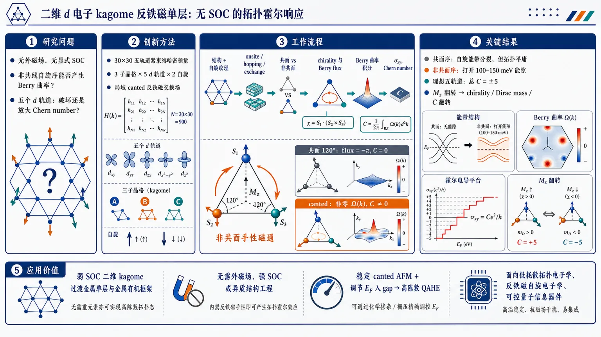
研究问题二维 d 电子 kagome 反铁磁单层中，在没有外磁场、没有显式自旋轨道耦合、没有相对论效应的条件下，非共线自旋序能否产生非零 Berry 曲率和量子反常霍尔效应；五个 d 轨道的多轨道自由度究竟会破坏拓扑霍尔响应，还是能把 Chern number 放大。创新方法提出五轨道 d 电子 kagome 紧束缚模型，将三个 kagome 子晶格、五个 d 轨道和双自旋组成 30×30 哈密顿量，并引入局域 canted 反铁磁交换场；核心 Aha 点是：共面 120° 反铁磁序只造成非相对论 spin splitting，但 flux 仍平庸，而一旦自旋带有共同 out-of-plane 分量，三自旋形成非共面手性结构，产生有限 scalar spin chirality，把实空间手性磁通转化为动量空间 Berry 曲率，从而在无 SOC 下实现 QAHE。工作流程输入二维 d 电子 kagome 单层结构与局域反铁磁自旋纹理 → 构建包含 onsite energy、Slater–Koster hopping、Zeeman exchange 的 30×30 紧束缚哈密顿量 → 比较共面 120° 自旋序与非共面 canted 自旋序 → 计算三角形上的有效 Berry flux 与 scalar spin chirality → 对能带 Berry 曲率在 Brillouin zone 积分得到 Hall conductivity 和 Chern number → 用 Dirac 点附近的 massive Dirac 低能理论解释 Mz 翻转导致的拓扑相变。关键结果共面非共线反铁磁序虽能分裂自旋能带，但三角形 flux 为 −π 的平庸值，Chern number 为 0；非共面 canted 反铁磁序打开 100–150 meV 量级非平庸能隙，并在费米能级落入 gap 时产生量子化 Hall plateau。理想各向同性 hopping 且五个 d 轨道 onsite energy 简并时，每个 d 轨道贡献 C=±1，总 Chern number 可达 C=±5；翻转 out-of-plane 分量 Mz 会翻转 chirality、Dirac mass 和 Chern number。真实材料中的 hopping 各向异性会降低可实现的 Chern number。应用价值为弱 SOC 的二维 kagome 过渡金属单层和金属有机框架提供一条非相对论高陈数量子反常霍尔态设计路线：不依赖外磁场、强 SOC 或异质结构工程，只需稳定 canted 反铁磁序并调节费米能级进入非平庸 gap。Mz 翻转可在相反 Hall plateau 间切换，适合构想低耗散拓扑电子学、反铁磁自旋电子学和可控量子信息器件。第一部分：核心概览 (Overview)
二维 d 电子 kagome 单层中，非共线反铁磁自旋序通过交换耦合可在无外磁场、无显式 SOC、无相对论效应条件下产生非平庸 Berry 曲率与 QAHE。核心贡献在于把以往多集中于 s 轨道或铁磁 kagome 的拓扑霍尔机制推广到 五轨道 d 电子多轨道体系，证明非共面 canting 产生有限 scalar spin chirality，在理想各向同性极限可实现最大 Chern number C = ±5。其意义在于提出反铁磁 kagome 材料中高陈数量子反常霍尔态的非相对论路径，并指出真实材料中 hopping 各向异性会降低可实现陈数。
---
第二部分：结构化快速回顾
《Topological Hall Response from Canted Antiferromagnetic Order in d-Electron Kagome Systems》（None，）
背景
AHE/QAHE 需要时间反演对称性破缺。传统铁磁体依靠净磁化，反铁磁体因净磁化为零常被认为不利于霍尔响应；但 非共线 kagome 反铁磁序可在零净磁化下打破相关对称性并诱导 Berry 曲率。二维 MOF 与过渡金属 kagome 单层中的导电电子通常是 d 轨道，多轨道自由度下 QAHE 是否保留并不清楚。
方法
建立含 五个 d 轨道、三个 kagome 子晶格、双自旋的紧束缚模型，总维度为 30 × 30。哈密顿量包含轨道依赖 onsite energy、Slater–Koster hopping，以及局域自旋序的 Zeeman exchange。通过 Berry 曲率积分计算 Hall conductivity，并推导 Dirac 点附近的低能 massive Dirac 理论解释拓扑转变。
结果
共面 120° 非共线反铁磁序虽产生非相对论 spin splitting，但实空间 flux 为平庸值，Chern number 为零。非共面 canted 自旋序产生有限 scalar spin chirality与非平庸 flux，在理想各向同性 hopping 与五个 d 轨道简并时，每个轨道贡献 C = ±1，总 Hall plateau 可达 C = ±5。
讨论
两个 spin sector 的 Chern number 符号相反，源于 spin–momentum locking。翻转 out-of-plane spin component (M_z) 会翻转 chirality 与 Chern number，实现相反 Hall plateau 之间的拓扑相变。有限温度下，低温量子化保持良好，数十 K 内仍近似稳定，100–250 K 时 plateau 明显圆滑化。
局限
最大 |C| = 5 依赖理想条件：五个 d 轨道 onsite energy 简并、Slater–Koster hopping 各向同性。真实材料通常 hopping 高度各向异性、不同轨道能级不完全简并，因此 Chern number 往往较小。候选材料部分仍主要停留在模型预测层面，尚未给出直接实验验证。
结论
Canted antiferromagnetic kagome d-electron systems 可在无 SOC、无外磁场条件下实现拓扑 Hall 响应。非共面自旋 chirality 是 QAHE 的必要机制；理想极限支持高陈数 C = ±5，真实材料则更可能呈现较小但仍非零的量子反常霍尔响应。
---
第三部分：逐章节冷凝解析 (Section-by-Section Condensing)
Abstract
- Non-collinear spin order generates intrinsic Berry curvature
二维 kagome monolayer 中，d-electron system 与非共线自旋序耦合即可产生非平庸 intrinsic Berry curvature，该自旋序由底层 antiferromagnetic exchange 诱导。核心物理路径不依赖外场、显式 SOC 或相对论效应，原文表述为 *"a nontrivial intrinsic Berry curvature may arise in the d-electron system from the interaction with a non-collinear spin order induced by an underlying antiferromagnetic exchange"*，并进一步强调 *"even without an external magnetic field, explicit spin-orbit coupling or relativistic effects"*。
- Finite scalar chirality enables integer Hall conductivities
只要自旋序具有 out-of-plane component，即非共面 canted 构型，scalar spin chirality 变为有限值；Berry curvature 在 Brillouin zone 上积分后可给出以 (e²/h) 为单位的整数 Hall conductivity。关键陈述为 *"For spin orders with an out-of-plane component, the scalar spin chirality is finite"*，以及 *"the integration of the Berry curvature over the Brillouin zone may yield integer Hall conductivities in units of e2/h"*。
- Ideal canted configuration supports maximal Chern number C = ±5
当 Fermi level 位于非平庸 gap 内时，理想 canted 构型可支持最大 Chern number (C=±5)。这一上限来自五个 d 轨道的共同贡献，原文指出 *"the canted configuration offers, at least in principle, the possibility of a maximal Chern number, C = ±5"*。
- Real materials reduce Chern number through anisotropic hopping
真实材料中 electron hopping 通常高度各向异性，因此 QAHE 仍可存在但 Chern number 较小。对应原文为 *"In existing materials, the electron hopping is generally highly anisotropic, leading to a quantum anomalous Hall effect with smaller Chern numbers"*。
- Flipping canting drives topological phase transition
翻转 out-of-plane spin component 可驱动相反 Chern plateau 之间的拓扑相变，潜在指向量子信息应用。原文直接指出 *"A topological phase transition between Hall plateaus of opposite C can be driven by flipping the out-of-plane component of the spin order"*。
---
I Introduction
- AHE is rooted in time-reversal symmetry breaking without external magnetic field
Anomalous Hall Effect 的定义是无外磁场下，由时间反演对称性破缺导致电流产生横向电压。原文定义为 *"The Anomalous Hall Effect (AHE), where an electric current produces a transverse voltage due to time-reversal symmetry breaking without an external magnetic field"*。这一效应兼具基础理论意义与低耗散电子学应用潜力，即 *"both due to its theoretical interest and its potential applications in dissipationless electronics"*。
- Dirac points and flat bands make kagome systems topologically fertile
近二十余年凝聚态进展的重要方向是寻找具有 Dirac points 与 flat bands 的材料；kagome 晶格正是代表平台。原文概括为 *"materials with electronic structures hosting peculiar features, such as Dirac points and flat bands"*。这些结构在磁性存在时可导向量子自旋液体或异常霍尔响应。
- Clean intrinsic AHE differs from extrinsic impurity mechanisms
外禀 AHE 可由 impurities 或 disorder 产生，但更基础的目标是在 clean systems 中由内部磁纹理自发诱导 Berry curvature。原文区分为 *"extrinsic mechanisms such as impurities or disorder"* 与 *"A more fundamental approach... aims at an AHE in clean systems, solely relying on phenomena within the material itself"*。
- Berry curvature acts as an effective reciprocal-space magnetic field
内部磁纹理可在倒空间中形成有效磁场，Berry curvature 进而导致 QAHE。原文写道 *"yielding an effective magnetic field in reciprocal space"*，并说明 *"This Berry curvature may then give rise to the quantum anomalous Hall effect (QAHE)"*。QAHE 的量子化拓扑指标是 Chern number，即 *"characterized by an integer... the Chern number"*。
- Antiferromagnets challenge the net-magnetization paradigm
铁磁体通过非零净磁化破坏时间反演，而反铁磁体净磁化为零且难由外磁场控制，因此曾被认为不适合应用。原文表述为 *"In ferromagnets, the symmetry breaking is due to a non-vanishing net magnetization"*，但 *"In antiferromagnets, however, the net magnetization is zero and the magnetic ordering not controllable via an external magnetic field"*。这一传统观点已被 antiferromagnetic spintronics 挑战，即 *"This view has been challenged by recent developments"*。
- Non-collinear antiferromagnets differ from collinear bipartite antiferromagnets
在 honeycomb 等共线二分反铁磁体中，spin staggering 导致零净磁化与自旋简并电子结构；但 kagome/triangular lattice 可通过非共线序实现零净磁化。原文对比为 *"in collinear bipartite antiferromagnets... spin staggering implies a zero net magnetization and a spin-degenerate electronic structure"*，而 *"a zero net magnetization may also arise in a less trivial manner by non-collinear ordering"*。
- Known kagome antiferromagnetic AHE often invokes explicit SOC
kagome 反铁磁相互作用体系中的 classical AHE 已由显式 SOC 理论预测并实验观察到大 Hall conductivity。原文指出 *"On a kagome lattice with antiferromagnetic interactions, the classical AHE has been predicted theoretically from explicit spin-orbit coupling"*，并且 *"observed experimentally via its anomalously large Hall conductivity"*。
- The unresolved problem is QAHE in multi-orbital d-electron systems without SOC
过渡金属 MOFs 等体系的导电电子为 d-type，不同于以往 s-orbital 或铁磁模型，多轨道 d 体系中 QAHE 命运未明。关键问题被明确提出：*"whether the QAHE can occur in a multi-orbital d-electron system with non-collinear spin order but in the absence of explicit spin-orbit coupling (SOC) term"*。不确定性在于 orbital degree of freedom 可能 *"either disrupt or reinforce the QAHE"*。
- Coplanar non-collinear spin order is insufficient without SOC
共面非共线自旋序产生的 real-space flux 是平庸的，因此没有 QAHE，除非引入 transfer-type explicit SOC。原文为 *"Coplanar non-collinear spin order turns out to give no QAHE due to trivial real-space fluxes, unless a transfer-type explicit spin-orbit coupling is introduced"*。
- Non-coplanar non-collinear spin order is the topological ingredient
拓扑 QAHE 需要非共面非共线自旋序。五个 d 轨道全部贡献 Chern number，但两个 spin sector 符号相反。原文总结为 *"The topological QAHE requires non-coplanar non-collinear spin order"*，以及 *"all five d-orbitals contribute to the Chern number, but each spin sector with opposite sign"*。
- Isotropic hopping and degenerate onsite energies produce C = ±5
高度简并情形由 isotropic electron hopping 与所有 d 轨道 equal onsite energies 推动，可产生最大 (C=±5)。原文表述为 *"The highly degenerate case, which is promoted by isotropic electron hopping and equal onsite energies for all d-orbitals, produces a maximal Chern number of C = ±5"*。两个 spin sector 符号相反来自 spin–momentum locking：*"The opposite signs for opposite spin sectors result from spin–momentum locking"*。
---
II Model
- Tight-binding Hamiltonian includes onsite, hopping, and Zeeman exchange terms
模型为 kagome 晶格上的 d-electron tight-binding Hamiltonian，包含三部分：轨道依赖 onsite energies、最近邻 hopping，以及与局域自旋序耦合的 Zeeman exchange。原文定义为 *"d-electrons are subject to orbital-dependent onsite energies (1st term), hopping (2nd term), and couple to the local spin order via a Zeeman exchange (3rd term)"*。
- Five d orbitals are grouped into three onsite-energy classes
虽然五个 d 轨道可具有不同 onsite energy，但模型考虑三类能级：(E₁) 对应 (dz^₂)，(E₂) 对应 (dₓz, dyz)，(E₃) 对应 (dₓy, dₓ^₂₋y^₂)。原文给出精确分组：*"only three different values occur, namely E1 for the dz2-orbital, E2 for dxz and dyz, and E3 for dxy and dx2−y2"*。剩余简并体现晶格对称性，即 *"with the remaining degeneracies expressing lattice symmetries"*。
- Slater–Koster hopping encodes orbital and direction dependence
hopping 元素 (tᵢⱼ,αα') 是 Slater–Koster integrals (Vdd,σ, Vdd,π, Vdd,δ) 的线性函数，允许 orbital-dependent、direction-dependent hopping 以及不同轨道之间的交换。原文说明 *"The hopping elements... are linear functions of the Slater-Koster integrals Vdd,τ=σ,π,δ between two d orbitals"*，并强调 *"This makes the d-electron hopping orbital and direction dependent, and allows for an exchange between states belonging to different orbitals"*。
- Zeeman exchange creates spin splitting from local magnetic texture
第三项 Zeeman coupling 通过与局域自旋序交换产生 spin splitting。原文为 *"The Zeeman coupling in the third term results in a spin splitting due to an exchange with the local spin order"*。该项不是 SOC，而是非相对论交换耦合。
- Three sublattice moments form 120° in-plane projections
kagome 单胞的三个子晶格 (A,B,C) 分别携带磁矩 (Mᵢᵢₙ A,B,C)，其平面投影彼此相差 120°。原文描述为 *"their planar projection is assumed to be at 120° with respect to each other"*。
- Coplanar and canted cases differ by net Mz
共面情形 (M_z=0)，非共面或 canted 自旋序因 out-of-plane component 具有非零 (M_z)。原文明确区分：*"The net magnetization Mz is zero for the coplanar case, but nonzero for a non-coplanar or canted spin order due to the out-of-the-plane component of the spins"*。
---
III Band structure and non-relativistic spin splitting
- Full band structure has 30 degrees of freedom per k point
kagome 单胞包含 3 sublattices × 5 orbitals × 2 spin states = 30 个自由度。原文写道 *"electronic bands arising from three sublattices, with 5 orbitals and 2 spin states each"*，经 Fourier transformation 得到 (k)-space Hamiltonian。
- Isotropic limit uses equal Slater–Koster integrals
图 2 的核心示例采用 (Vddσ=Vddπ=Vddδ)，即最大对称 hopping。原文定义为 *"the hopping terms have been chosen equal, implying Slater-Koster integrals of maximal symmetry, with Vddσ=Vddπ=Vddδ"*，并命名为 *"This situation will be called the ’isotropic limit’"*。
- Isotropic limit produces simple flat-band and Dirac-crossing structure
各向同性极限给出最简单能带结构，含近似 flat bands 与 linear/quadratic Dirac crossing points。原文说明 *"This gives the simplest band structure, with almost flat bands and linear or quadratic Dirac crossing points"*。
- The model remains general for anisotropic real materials
虽然先分析 isotropic limit，模型可直接用于真实材料，其中 Slater–Koster integrals 通常 anisotropic，甚至符号不同。原文强调 *"Our model is nevertheless completely general, and readily applicable to real materials"*，以及 *"the Slater-Koster integrals will generally be anisotropic, and may even be of different signs"*。
- Coplanar non-collinear order lifts spin degeneracy without net magnetization
即使共面非共线 120° 反铁磁序净磁化为零，也可分裂 up-spin 与 down-spin bands。原文指出 *"even in the coplanar case, non-collinear spin order separates up- and down-spin bands"*。这区别于二分共线反铁磁体，其 bands 仍保持 two-fold spin degenerate。
- Canting preserves large trivial gap and opens nontrivial gaps
canted spin order 给出简单能带结构：保留分离两个 spin sectors 的 large trivial gap，同时在每个 spin sector 中打开显著 nontrivial gaps。原文表述为 *"Canting the spin ordering gives rise to a remarkably simple band structure which preserves the large trivial gap... while adding significant nontrivial gaps"*。
- Numerical example has 100–150 meV nontrivial gaps
对图 2(c)，参数为 (Mₛ₌₁,eV)，非平庸 gaps 大小为 (Δ Esim100łdots150,meV)。原文精确给出 *"for Ms=1 eV, these nontrivial gaps are of magnitude ΔE ∼ 100 … 150 meV within each spin sector"*。
- Fermi level in small nontrivial gaps can yield Chern insulator states
Fermi level 落在 large trivial gap 中对应 spin-polarized states；落在小 nontrivial gap 中则可能形成 Chern insulator。原文区分为 *"a large trivial gap separates the two spin sectors and allows for spin-polarized states"*，而 *"Placing the Fermi level in one of the smaller nontrivial gaps... may result in topological states such as a Chern insulator"*。
- Spin canting induces non-relativistic spin splitting independent of d-orbital distinctions
spin canting 诱导的 spin splitting 不依赖相对论效应，也不依赖不同 d 轨道差异，因此可保留完整 orbital degeneracy。原文总结为 *"Spin canting therefore induces a spin splitting which neither depends on relativistic effects nor on the distinction between different d-orbitals"*。
---
IV Real and Momentum Space Effective Magnetic Fluxes
- Non-collinear spin order generates an effective real-space magnetic flux
非共线自旋序通过 bond gauge field (aᵢⱼ) 使电子感受到有效磁通。原文写道 *"The non-collinear spin order gives rise to an effective magnetic flux felt by an electron"*，并定义三角形 flux 为 (ΦΔ,ₜᵣᵢₐₙgₗₑdₒwₙ=sumᵢⱼᵢₙΔ,ₜᵣᵢₐₙgₗₑdₒwₙaᵢⱼ)。
- Gauge field is computed from spin-1/2 coherent states
对电子适用的 spin-(frac12) coherent states 给出 bond gauge field (aᵣᵣ')。原文说明 *"A computation for spin-1/2 coherent states, appropriate for electrons, gives the gauge field"*，随后给出依赖 (θₘₐₜₕbf ᵣ,θₘₐₜₕbf ᵣ',φₘₐₜₕbf ᵣ'-φₘₐₜₕbf ᵣ) 的 arctan 表达式。
- Coplanar 120° order yields trivial flux −π
对共面非共线序，(θₘₐₜₕbf ᵣ=θₘₐₜₕbf ᵣ'=π/2)，(φₘₐₜₕbf ᵣ'-φₘₐₜₕbf ᵣ=2π/3)，得到 (aₘₐₜₕbf ᵣₘₐₜₕbf ᵣ'=-π/3)，三角形 flux 为 (ΦΔ,ₜᵣᵢₐₙgₗₑdₒwₙ=-π)。原文精确写道 *"the gauge field simplifies to arr′ = −π/3, thus yielding the trivial fluxes ΦΔ,▽ = −π"*。由于 (exp(iπ)=exp(-iπ))，这是 time-reversal invariant phase 的平庸 flux。
- Coplanar order alone cannot produce nontrivial time-reversal breaking flux
共面非共线序本身不足以产生破坏时间反演的非平庸 flux。原文直接指出 *"coplanar non-collinear spin order alone is not sufficient to produce a nontrivial flux that breaks time-reversal symmetry"*。
- Non-coplanar order produces nontrivial fluxes
非共面自旋序给出 (ΦΔ,ₜᵣᵢₐₙgₗₑdₒwₙ≠0,±π)，即真正非平庸 flux。原文表述为 *"Non-coplanar spin order, by contrast, easily gives nontrivial fluxes, ΦΔ,▽ ≠ 0, ±π"*。对统一极角 (θ₀)，bond gauge field 为依赖 (tan²⁽θ₀/2)) 的 arctan 函数。
- Scalar spin chirality links real-space texture to topology
非平庸 flux 与 scalar spin chirality 相关，定义为 (ḩi=mathbf Sᵢḑot(mathbf Sⱼ×mathbf Sₖ₎)。在三子晶格同一极角 (θ₀) 下，(ḩi=-frac32sqrt3 S³o̧sθ₀sin²θ₀)。原文给出 *"This gauge field gives a nontrivial effective flux that can be associated with scalar spin chirality"*。
- Chirality vanishes in coplanar antiferromagnetic and ferromagnetic limits
标量三重积结构表明，共面非共线反铁磁序 (θ₀₌π/2) 与铁磁序 (θ₀₌₀,π) 均无 chirality。原文写道 *"the spin chirality vanishes for coplanar non-collinear antiferromagnetic spin order... as well as for ferromagnetic order"*。
- Flipping canting reverses chirality
canting 翻转，即 (θ₀ᵢ̊ghtarrowπ-θ₀)，使 (ḩi) 符号反转。原文指出 *"the scalar spin chirality χ changes sign when the canting is flipped"*，对应 *"the same chirality but with opposite sign"*。
- Berry curvature defines Chern number and quantized Hall conductivity
在 QAHE 中，Hall conductivity 由 Berry curvature 在 Brillouin zone 上积分给出。原文为 *"The latter is a topological invariant of the band structure and can be computed from the Berry curvature Ω(k) in momentum space"*。量子化关系为 (σₓy=(e²/h)C)，原文表述为 *"its integral over the Brillouin zone is an integer – the Chern number C – making the Hall conductivity an integer multiple of the conductance quantum"*。
---
V Canted Antiferromagnetic Order and Spin-Momentum Locking
- Berry curvature peaks where nontrivial gaps are narrowest
图 3 的 Berry curvature heat maps 显示，峰值出现在非平庸 gap 最窄且 band curvature 最大的位置。原文描述为 *"the regions in which they occur correspond to the locations where the nontrivial gaps are tightest and where the curvature of the band is largest"*。
- Hall conductivity is computed from the full 30 × 30 Hamiltonian
Hall conductivity 不是低维近似直接得出，而是从完整 30 × 30 Hamiltonian matrix 通过 Berry curvature 公式数值计算。原文明确写道 *"computed numerically from the full 30 × 30 Hamiltonian matrix via Eq. (5)"*。
- Quantization occurs only when Fermi energy lies in a gap
当 (E_F) 位于 gap 内，(σₓy) 量子化为 (e²/h) 的整数倍；位于 band 内则不量子化。原文表述为 *"quantization in terms of an integer multiple of e2/h arises only if the Fermi energy lies within a gap"*，以及 *"for Fermi energies within a band, σxy is not quantized"*。
- Coplanar non-collinear order has zero Chern number
对 isotropic Slater–Koster integrals 的共面非共线自旋序，(C) 处处为零；各向异性情形中该行为仍保持，因为 net magnetization 仍为零。原文为 *"for non-collinear coplanar spin order with isotropic Slater-Koster integrals, C vanishes everywhere"*，并补充 *"this behavior persists in the anisotropic case since the net magnetization still vanishes"*。
- Nonzero Chern number requires canted non-coplanar spin order
模型中 (C≠0) 只出现在非共面非共线 spin order 中，因为只有 canted spin order 允许非零 scalar spin chirality。原文为 *"a nonzero C occurs only for non-coplanar non-collinear spin order, since only canted spin order allows for nonzero scalar spin chirality"*。
- Degenerate onsite energies yield large C = ±5 plateau
当所有 onsite energies 简并时，出现相对大的 (C=±5) plateau。原文写道 *"When all onsite energies are degenerate, a relatively large C = ±5 plateau is obtained"*。该 plateau 比 ferromagnetic kagome systems 中常见 Chern plateau 高五倍，原文为 *"It lies five times higher than the Chern plateaus found in ferromagnetic kagome systems"*。
- All five d orbitals contribute equally to total Chern number
(C=±5) 的直接来源是五个 d 轨道各贡献一份。原文明确指出 *"with all five d-orbitals contributing equally to the total Chern number"*。
- Large-C QAHE does not need relativistic effects or heterostructure engineering
该机制提供了一条 kagome 高陈数量子反常霍尔态路径，无需相对论效应或异质结构工程。原文称其为 *"an alternative avenue towards a large-Chern QAHE in a kagome system, occurring naturally, i.e. without relativistic effects or heterostructure engineering"*。
- Opposite spin sectors carry opposite Chern numbers
图 4 中两个 spin sector 的 Chern number 符号相反，因为 (θ₀) 与 (π-θ₀) 下 scalar spin chirality 大小相同但符号相反。原文写道 *"The two spin sectors in Fig. 4 carry opposite Chern numbers"*。
- Spin–momentum locking prevents same-sign spin-sector contributions
两个 spin sector 对应反向传播的 chiral edge states，因此 spin 与 momentum 锁定，两个 spin sector 不会携带同号 Chern number。原文为 *"the underlying chiral edge states propagate in opposite directions: spin and momentum are thus locked"*，并强调 *"the two spin sectors never carry a Chern number of the same sign"*。
- |C| = 5 is the upper limit in this model
由于 spin–momentum locking，总 Chern number 上限为 (|C|=5)。原文明确给出 *"Due to this spin-momentum locking, |C| = 5 is the upper limit for the Chern number in our model"*。
- Chern number is robust against canting-angle variation except singular flux values
Chern number 只依赖三角形 flux 的符号，具体依赖 (C=sign[sin(Φ)])。只要避免 flux 为 (0) 或 (π)，每个轨道贡献 (C=±1)。原文写道 *"the Chern number only depends on the sign of the flux in the triangle"*，以及 *"each orbital contributes with C = ±1 to the overall Chern number"*。
- Finite-temperature quantization persists up to several tens of Kelvin
图 4 的计算温度为 (T=0.1,meV=1.16,mathrm K)。虽然严格整数量子化要求零温，但补充计算显示数十 K 内量子化仍较好。原文为 *"The Hall conductivity presented in Fig. 4 was obtained for a temperature of T = 0.1 meV = 1.16 K"*，并说明 *"the quantization persists to good accuracy up to temperatures of several tens of Kelvin"*。
- At 100–250 K plateaus become rounded but peak structure survives
更高温 (100-250,mathrm K) 下，conductance 仍保留 two-peak structure，但 plateau 明显圆滑。原文写道 *"For even higher temperatures, in the range of 100 − 250 K, the conductance still retains the displayed two-peak structure, but the plateaus are found to be significantly rounded"*。
---
VI Low-Energy Theory and Topological Transition
- Low-energy theory separates Dirac Hamiltonian and Zeeman term
为解释图 4 的定性特征，Dirac 点附近低能理论包含两部分：kinetic Dirac Hamiltonian 与 Zeeman term。原文写道 *"the low-energy theory contains two parts: (i) the Dirac Hamiltonian, and (ii) a Zeeman term"*。
---
VI.1 Dirac Hamiltonian
- Isotropic hopping reduces kinetic Hamiltonian to a 3 × 3 sublattice matrix
在 isotropic limit，(t=Vddσ=Vddδ=Vddπ)，Fourier-space kinetic Hamiltonian 是 sublattice space 的 3 × 3 矩阵。原文给出 *"The kinetic part of the Hamiltonian in Fourier space then takes the form of a 3 × 3 matrix in sublattice space"*。
- Expansion around K = (4π/3, 0) yields linear Dirac theory
Dirac 点位于 (mathbf K=(4π/3,0))，令 (mathbf k=mathbf K+mathbf q)，展开得到常数项 (h(mathbf K)) 与线性项 (h(mathbf q))。原文说明 *"An expansion around the Dirac point k = K + q yields h(k)=h(K)+h(q)"*。
- Linearized Hamiltonian is expressed through Jx and Jy matrices
引入 (Jₓ,J_y) 后，线性修正写为 (h(mathbf q)=fracsqrt38t(qₓJₓ₊sqrt3q_yJ_y))。原文表述为 *"allows us to reduce the linear correction to h(q)=...*"。
- Dirac-point spectrum has one flat band and two touching bands
低能结构含三条带：一条 dispersionless band 位于底部，另外两条在 Dirac point 接触。原文写道 *"It features three bands, one of which is dispersionless (at the bottom), while the other two touch each other at the Dirac point"*。
---
VI.2 Zeeman term
- Zeeman term is spin-off-diagonal but sublattice-diagonal
Zeeman term 在 spin space 中可含 off-diagonal 分量，但在 sublattice space 中是 diagonal。原文明确写道 *"the Zeeman term, which is off-diagonal in spin space, but diagonal in sublattice space"*。
- Uniform Mz provides canting mass
out-of-plane (M_z) 是 canting 的来源，并进入 (σ_z) 项。原文说明 *"a non-vanishing Mz is responsible for the canting of the spin texture"*。这项在 massive Dirac Hamiltonian 中表现为 mass term。
- Massive Dirac Hamiltonian is a 6 × 6 matrix
三个子晶格与两个 spin 组成 6 × 6 massive Dirac Hamiltonian，形式为 (hMD(mathbf q)=hDᵢᵣₐc(mathbf q)+hZₑₑₘₐₙ)。原文写道 *"we can now define the 6 × 6 massive Dirac Hamiltonian"*。
- Mass originates from Zeeman contribution rather than SOC
(hMD) 最后一项 (-frachbar2mathbf M_Jḑotboldsymbolσ) 中的 mass 来源于 Zeeman contribution。原文强调 *"with the mass in the last term originating from the Zeeman contribution"*。这进一步支撑无 SOC 拓扑机制。
---
VI.3 Diagonalization of the Hamiltonian
- Unitary transformation diagonalizes sublattice space
通过 unitary transformation (U) 可在 sublattice space 中对 Hamiltonian 对角化。原文为 *"A unitary transformation diagonalizes the Hamiltonian in sublattice space"*。
- Zeeman term remains invariant under sublattice diagonalization
因 Zeeman term 原本在 sublattice space 中已对角，所以在该变换下不变。原文写道 *"hZeeman was already diagonal in sublattice space and is thus invariant"*。
- Each diagonal block is a two-band Bloch-vector Hamiltonian
对角化后得到三个 block：(Hᵢ₍mathbf q)=Eᵢᵢ(mathbf q)+mathbf dⁱ⁽mathbf q)ḑotσ)。原文说明 *"Hi(q)=Eii(q)+di(q)·σ"*，其中 (mathbf dⁱ⁽mathbf q)) 是每个状态的 Bloch vector。
---
VI.4 Topological Transition
- Normalized Bloch vector maps Brillouin zone to Bloch sphere
归一化 Bloch vector (hatmathbf d(mathbf q)=mathbf d(mathbf q)/|mathbf d(mathbf q)|) 位于 Bloch sphere 上。原文写道 *"After normalization, the vector d̂(q)=d(q)/|d(q)| lives on a Bloch sphere in k-space"*。
- Chern number resembles a Skyrmion winding number
Chern number 积分类似 Skyrmion number，计数 (hatmathbf d) 随 Brillouin zone 扫描绕 Bloch sphere 的次数。原文解释为 *"the integral in Eq. (23) resembles the Skyrmion number, which simply counts how many times the unit vector d̂ winds around the Bloch sphere"*。
- Chern number equals covered solid angle in units of 4π
Chern number 也可理解为 (hatmathbf d) 扫描 Brillouin zone 时覆盖的 solid angle，以 (4π) 为单位。原文为 *"the Chern number can be interpreted as the solid angle (in units of 4π) covered by d̂"*。
- All dz components are identical and q-independent
三个 (mathbf dⁱ⁽mathbf q)) 的 z 分量相同且与 (mathbf q) 无关，(d_zⁱ⁽mathbf q)=-hbar M_z/2)。原文写道 *"the z-components of all three di(q) are identical and q-independent"*。
- Chern number changes sign with Mz
因为 (d_zⁱ) 只依赖 (M_z)，Chern number 随 (M_z) 符号翻转而翻转。原文直接给出 *"This demonstrates that the Chern number changes sign with the out-of-plane component Mz"*。
- Near coplanar limit gives Berry phase Φ = π(1 − cos θ)
当 (θsimeqπ/2) 时，spin-(frac12) real-space Berry phase 可写为 (Φ=π(1-o̧sθ))。原文为 *"For θ ≃ π/2... a simple expression for the real-space spin s = 1/2 Berry phase can be obtained"*。
- Maximal Chern number follows flux sign formula
对五个 d 轨道 onsite energy 简并且 (E_F) 位于非平庸 gap 内的 kagome lattice，Chern number 为
[
C=±5ḑotsign[sin(π(1-o̧sθ))].
]
原文写道 *"the Chern number for the kagome lattice with degenerate onsite energies for all five d-orbitals is given by C = ±5 · sign[sin(π(1 − cos θ))]"*。
- C = ±5 is an upper bound due to spin–momentum locking
该表达式是 d-electron canted spin order 系统中最大可达 Chern number 的上界。原文明确指出 *"Eq. (27) is an upper bound for the maximally achievable Chern number in d-electron systems with canted spin order"*。更高 Chern number 被排除，因为 spin–momentum locking 阻止两个 spin sectors 同号叠加：*"Higher Chern numbers are ruled out because of spin-momentum locking"*。
---
VII Candidate Materials for Experiments
- Two-dimensional kagome MOFs motivate the material platform
MOF 材料从三维多孔结构发展到二维 kagome 晶格，过渡金属离子提供关键 d 轨道自由度。原文指出 *"the materials we consider are two-dimensional kagome lattices hosting transition metal ions"*，并强调其电子结构比 graphene 更复杂：*"resulting in a chemical and electronic structure more complex than that of graphene"*。
- Transition-metal d orbitals are central to the proposed materials
候选体系的关键不是 pz 轨道或 s 轨道，而是 transition metals 的 d orbitals。原文写道 *"the d-orbitals of the transition metals play a key role"*。
- Slater–Koster integrals are the key tight-binding parameters
从紧束缚模型角度，最重要参数是 Slater–Koster integrals，因为它们强烈决定 band structure。原文为 *"the key parameters are the Slater-Koster integrals, since they strongly determine the form of the band structure"*。
- Canted antiferromagnetic order is the second essential condition
除 hopping 参数外，候选材料还必须能实现 canted antiferromagnetic order。原文指出 *"The second important condition is the feasibility of the canted antiferromagnetic order"*。
- Magnetic order may arise intrinsically or be substrate-stabilized
模型默认磁序由合适的、可能 frustrated 的 spin interactions 稳定，但这只是充分非必要条件；也可通过 substrate 诱导。原文写道 *"the magnetic order is implicitly assumed to arise from an appropriate combination of (presumably frustrated) spin interactions"*，并补充 *"This is sufficient but not necessary"*，因为可将单层置于能稳定目标 canted order 的 substrate 上：*"placing the d-electron kagome monolayer on top or in the vicinity of an appropriate substrate"*。
- Known compounds already host d-electron kagome physics
已知多种化合物包含 d-electron kagome systems，并具有有趣磁性与电子结构。原文在所给片段中写道 *"Various compounds are known to encompass d-electron kagome systems with interesting magnetic and electronic structure properties"*。
---
第四部分：深度理解与语言支持 (Understanding & Nuance)
1. 术语解析
- Canted antiferromagnetic order
指反铁磁排列并非完全共面或共线，而是每个自旋带有共同的 out-of-plane component。这里的 “canted” 不是简单倾斜，而是让原本 120° kagome 平面自旋序获得 (M_z)，从而产生非零 scalar spin chirality。关键后果是从平庸 flux (-π) 变为非平庸 flux (≠0,±π)。
- Scalar spin chirality
数学形式为 (ḩi=mathbf Sᵢḑot(mathbf Sⱼ×mathbf Sₖ₎)。它衡量三个自旋是否构成真正三维手性结构。若三自旋共面，混合积为零；若非共面，则电子沿三角形 hopping 时获得有效 Berry phase。这里它是无 SOC QAHE 的核心物理量。
- Intrinsic Berry curvature
“Intrinsic” 强调 Berry curvature 来自材料本征能带结构，而非杂质 skew scattering、side jump 等外禀机制。该文中的 Berry curvature 由磁纹理和多轨道 hopping 共同塑造，在 (mathbf k)-space 中表现为有效磁场。
- Spin–momentum locking
这里不是拓扑绝缘体表面态中由强 SOC 导致的常规 spin–momentum locking，而是由 canted spin texture 与 chirality 诱导的两个 spin sector 反向传播。结果是两个 spin sector 的 Chern number 符号相反，不能相加到超过 (|C|=5)。
- Non-relativistic spin splitting
通常 spin splitting 容易与 SOC 或 Zeeman 外磁场联系起来；这里强调 splitting 来自电子与局域非共线磁序的 exchange coupling，不需要相对论 SOC。其学术微妙点在于：无净磁化的共面非共线反铁磁序也能 lift spin degeneracy，但仍未必产生非零 Chern number。
2. 疑难查证
- 为什么共面 120° 反铁磁序能 spin splitting，却没有 QAHE？
spin splitting 只要求电子自旋在不同子晶格感受到不同局域交换场，因此共面非共线序即可破坏普通的自旋简并。但 QAHE 需要 Berry curvature 在 BZ 积分后给出非零 Chern number。共面 120° 情形中，电子绕三角形获得的 flux 是 (-π)，而 (exp(iπ)=exp(-iπ))，等价于时间反演不区分的平庸相位，因此 Chern number 为零。
- 为什么非共面 canting 会立刻改变拓扑？
一旦自旋具有 out-of-plane component，三个自旋不再共面，(mathbf Sᵢḑot(mathbf Sⱼ×mathbf Sₖ₎≠0)。电子 hopping 经过三角形时积累的几何相位不再是 (0) 或 (π) 的平庸值，而是具有手性的有效磁通。该有效磁通在动量空间转化为 Berry curvature，若 Fermi level 位于 gap 中，即可形成量子化 Hall response。
- 为什么最大 Chern number 是 5，而不是 10？
单胞中有五个 d 轨道，理想简并时每个轨道可贡献 (±1)，所以单个 spin sector 可达 (|C|=5)。但两个 spin sector 因 spin–momentum locking 贡献符号相反，不会同号叠加，因此不是 (5+5=10)。这就是 (|C|=5) 的上限来源。
- 为什么翻转 (M_z) 会翻转 Chern number？
低能 massive Dirac 理论中，(d_zⁱ⁽mathbf q)=-hbar M_z/2)。Chern number 的符号由 Bloch vector 覆盖 Bloch sphere 的方向决定，而 (d_z) 控制 mass sign。(M_z→ -M_z) 等价于 Dirac mass 反号，拓扑 invariant 随之反号。
---
第五部分：创新评估与关联 (Synthesis & Novelty)
1. 创新性判断
- 从 s-orbital / ferromagnetic kagome 推进到 multi-orbital d-electron kagome
近年 kagome QAHE 研究常见路径包括铁磁 kagome、强 SOC、Haldane 型复 hopping、异质结构工程，或 s-orbital conduction electrons。该工作的新颖点在于直接处理 five d orbitals 的多轨道体系，回答 orbital degree of freedom 是否破坏 QAHE 的问题，并证明在理想简并下反而可增强到 C = ±5。
- 提出无 SOC 的反铁磁高陈数 QAHE 机制
过去 kagome 反铁磁 AHE 常依赖显式 SOC。这里的拓扑响应来自 non-coplanar spin chirality + exchange coupling，不需要外磁场、显式 SOC 或相对论效应。这为弱 SOC 过渡金属有机框架和二维 kagome 单层提供了新的设计原则。
- 把非共线 spin splitting 与拓扑 Hall response 清晰分离
共面非共线序可产生 spin splitting，但 Chern number 仍为零；非共面 canting 才产生有限 chirality 与 QAHE。这一分离澄清了“spin splitting 是否足够导致 QAHE”的误区，给出更严格判据：非平庸 flux 或 scalar chirality 才是必要条件。
- 给出 Chern number 上限与 spin–momentum locking 约束
(C=±5) 不是任意数值拟合结果，而是五个 d 轨道各贡献 (±1)、两个 spin sector 反号贡献共同决定的上限。该上限由低能 massive Dirac 理论和 flux-sign 论证共同支撑。
- 提出可控拓扑相变机制
通过翻转 out-of-plane spin component (M_z)，可在相反 Hall plateau 之间切换。这比仅调节化学势更具器件意义，因为它直接改变拓扑 mass sign 与 chirality sign，指向反铁磁 spintronics 与 quantum information 中的可切换拓扑态。
- 指出真实材料中的关键障碍
最大 (C=±5) 依赖极高对称条件；真实材料中 Slater–Koster integrals 通常各向异性，onsite energies 也不完全简并，因此更可能实现较小 Chern number。该判断使理论预测更接近实验现实，并把未来材料筛选重点明确为：二维 kagome d-electron 单层、可稳定 canted AFM order、尽可能弱 hopping 各向异性、可调 Fermi level 进入 nontrivial gap。
-
14
📊 含图深析
📄 摘要：传统磁光效应源自 Berry 曲率，即量子几何虚部，因此 PT 对称反铁磁通常被认为磁光不活跃。该工作提出由量子度规，即量子几何实部，诱导的广义磁光效应，使 PT 对称反铁磁也可通过磁光响应探测电子结构。
💡 亮点：量子度规被引入磁光效应机制，突破 PT 对称反铁磁 Berry 曲率抵消导致的“磁光沉默”。该框架为反铁磁量子几何探测提供了新光学通道。
📖 展开分析 + 配图
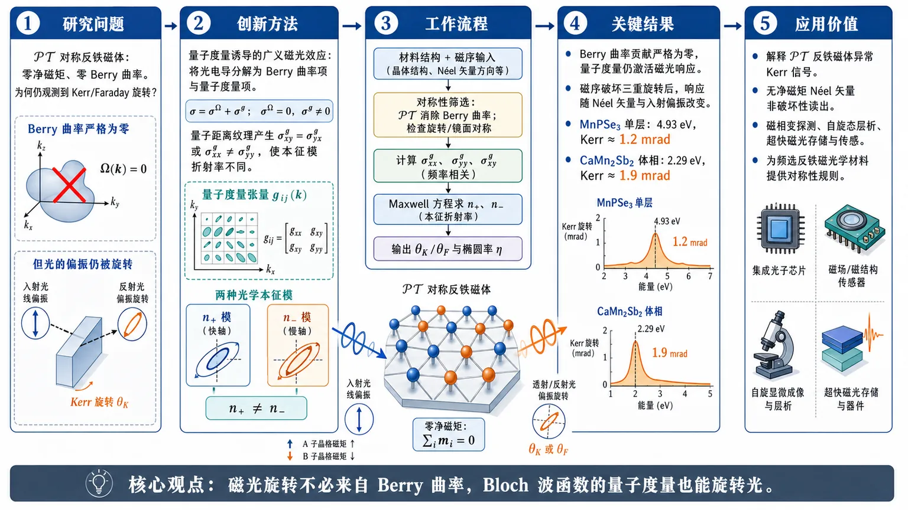
研究问题传统磁光效应把 Kerr/Faraday 旋转归因于 Berry 曲率；但在 𝒫𝒯 对称反铁磁体中，Berry 曲率在整个布里渊区为零，理论上应“磁光沉默”，却在实验中观测到明显 Kerr 信号。核心问题是：零净磁矩、零 Berry 曲率的 𝒫𝒯 反铁磁体为何仍能旋转光偏振？创新方法提出“量子度量诱导的广义磁光效应”：把光电导张量分解为 Berry 曲率贡献与量子度量贡献，指出量子几何实部——量子度量——可通过对称横向电导 σxyg=σyxg 或纵向各向异性 σxxg≠σyyg，使两个光学本征模获得不同复折射率，从而在 Berry 曲率为零时仍产生 Kerr/Faraday 响应。Aha 点是：磁光效应不必来自 Berry 曲率，Bloch 波函数的“量子距离纹理”本身也能旋转光。工作流程输入 𝒫𝒯 对称反铁磁材料结构与磁序 → 用对称性判断 Berry 曲率被 𝒫𝒯 消除、量子度量分量是否被旋转/镜面对称允许 → 计算量子度量贡献的光电导张量 σxxg、σyyg、σxyg → 代入 Maxwell 波方程求两个本征光模 n+、n− → 通过 3D/2D 通用公式得到 Kerr 与 Faraday 旋转角和椭圆率 → 用紧束缚模型、MnPSe₃ 与 CaMn₂Sb₂ 第一性原理计算验证光谱峰值。关键结果证明 𝒫𝒯 反铁磁体中 Berry 曲率贡献严格为零，但量子度量仍可激活广义磁光效应；磁序破坏三重旋转后，光电导出现各向异性，Kerr/Faraday 信号随 Néel 矢量与光偏振方向变化。第一性原理显示单层 MnPSe₃ 在 4.93 eV 产生约 1.2 mrad Kerr 旋转，体相 CaMn₂Sb₂ 在 2.29 eV 产生约 1.9 mrad Kerr 旋转，达到实验可测量的 mrad 量级。应用价值为实验中 𝒫𝒯 反铁磁体的异常 Kerr 旋转提供微观解释，推翻“零 Berry 曲率即磁光不活跃”的判断；可用于无净磁矩反铁磁体的非破坏性 Néel 矢量读出、磁相变探测、反铁磁自旋态层析，以及超快磁光存储器和传感器设计，并为筛选新型反铁磁光学材料提供对称性规则。第一部分：核心概览（Overview）
该研究把磁光效应（MOEs）从传统的Berry 曲率驱动框架扩展到量子度量（quantum metric）驱动的广义磁光效应。在传统理论中，𝒫𝒯 对称反铁磁体因 Berry 曲率处处为零而被视为磁光不活跃；该工作证明，量子几何的实部——量子度量——可单独诱导 Kerr 与 Faraday 响应，并给出适用于 3D/2D 𝒫𝒯 对称反铁磁体的通用公式。紧束缚模型与第一性原理计算显示，MnPSe₃ 与 CaMn₂Sb₂ 中可产生 mrad 量级 Kerr 旋转，为近年实验观测到的零净磁矩反铁磁 Kerr 信号提供微观解释。
---
第二部分：结构化快速回顾
《Quantum metric-induced generalized magneto-optical effects in PT-symmetric antiferromagnets》（None，）
背景
传统磁光效应通常由Berry 曲率或反对称横向光电导解释。𝒫𝒯 对称反铁磁体中 Berry 曲率在整个布里渊区为零，因此传统理论预言 Kerr/Faraday 响应消失；但近年实验在此类材料中观测到显著 Kerr 旋转，形成理论—实验矛盾。
方法
基于光电导张量的量子几何分解，区分 Berry 曲率贡献 σΩ 与 量子度量贡献 σg；通过对称性分析确定 𝒫𝒯、镜面对称、三重及更高旋转对光电导张量的约束；从 Maxwell 波方程推导含量子度量的 Kerr/Faraday 通用公式；用紧束缚模型与第一性原理验证。
结果
在 𝒫𝒯 对称反铁磁体中，Berry 曲率贡献严格为零，但量子度量允许产生对称横向电导或各向异性纵向电导，从而诱导广义 Kerr/Faraday 效应。MnPSe₃ 中 Kerr 旋转约 1.2 mrad at 4.93 eV，CaMn₂Sb₂ 中约 1.9 mrad at 2.29 eV。
讨论
广义磁光效应不要求净磁矩，也不要求非零 Berry 曲率；其信号可反映反铁磁 Néel 矢量、低对称表面与磁序诱导的量子度量各向异性。该机制解释了先前难以用传统 MOE 理论理解的 𝒫𝒯 反铁磁 Kerr 实验。
局限
低对称晶格中，量子度量诱导的磁性光学响应可能与非磁性光学各向异性共存，需要通过磁性/非磁性相比较、温度扫描或磁序翻转来分离。部分 2D 公式依赖样品形状与衬底反射/透射系数。
结论
量子度量是磁光效应的独立微观来源。𝒫𝒯 对称反铁磁体并非磁光不活跃，而是存在传统 Berry 曲率框架之外的广义磁光效应，为反铁磁自旋态无损探测、超快磁光存储与传感提供新路径。
---
第三部分：逐章节冷凝解析（Section-by-Section Condensing）
Abstract
Conventional MOEs miss PT-symmetric antiferromagnets
传统磁光效应被视为揭示材料电子结构的重要手段，但其标准解释主要依赖 Berry curvature，即量子几何的虚部。对于 𝒫𝒯-symmetric antiferromagnets，传统框架下横向 Berry 曲率光电导为零，因此被判定为磁光不活跃。核心表述为 *"The conventional MOEs are understood to arise from the Berry curvature (the imaginary part of the quantum geometry)."* 以及 *"Within the framework of conventional MOEs, space-time inversion (𝒫𝒯) symmetric antiferromagnets are magneto-optically inactive."*
Quantum metric supplies a new MOE mechanism
研究提出由 quantum metric，即量子几何实部，诱导的广义磁光效应。不同于传统 MOE 中依赖 Berry 曲率的反对称横向电导，这一机制可在 Berry 曲率完全消失时仍产生 Kerr 与 Faraday 响应。核心宣称为 *"we propose quantum metric (the real part of the quantum geometry) induced generalized MOEs and build generic formulas with quantum metric for Kerr and Faraday angles in three-dimensional and two-dimensional 𝒫𝒯-symmetric antiferromagnets."*
Theory and calculations bridge experiment
研究结合紧束缚模型与第一性原理计算验证量子度量诱导广义 MOE，并把这一理论用于解释实验中 𝒫𝒯 反铁磁体出现的 Kerr 旋转。摘要给出的关键证据路径是 *"Combining the tight-binding model and first-principles calculations, we demonstrate the quantum metric-induced generalized MOEs in the 𝒫𝒯-symmetric antiferromagnets."* 以及 *"provides a microscopic understanding of experimentally observed Kerr rotations in 𝒫𝒯-symmetric antiferromagnets."*
Zero-net-moment limitation is removed
传统 MOE 对反铁磁体的探测受限于零净磁矩与 Berry 曲率消失；广义 MOE 被定位为一种可用于反铁磁自旋态层析和超快磁光器件的新方法。核心应用判断为 *"Our theory overcomes the zero-net-moment limitation preventing (conventional) MOEs from detecting magnetic phase transitions and spin orderings in 𝒫𝒯-symmetric antiferromagnets"*，并进一步指向 *"non-destructive spin-state tomography"* 与 *"ultrafast magneto-optical applications, such as memories and sensors."*
---
Introduction.
MOEs are governed by mode-dependent complex refractive indices
磁光效应的共同物理基础是材料中两个光学本征模具有不同的复折射率。入射光在磁性材料表面的反射、透射以及内部传播均由频率依赖复折射率决定。关键原文为 *"When light is incident on a magnetic material, both the reflection and transmission of the light at the surface, as well as the propagation of the light inside the material, can be characterized by the frequency-dependent complex refractive index."* 以及 *"The fundamental physics underlying various MOEs is that the two eigenmodes of the magnetic material have different complex refractive indices."*
Optical conductivity is the central microscopic object
在光学与近红外频率下，可取磁导率张量 μ = 1，而光电导张量 σ 可转换为介电张量 ε，因此研究 MOE 的核心物理量是光电导张量。原文依据为 *"Since one can take μ=1 at optical and near-infrared frequencies"* 以及 *"the optical conductivity tensor σ of magnetic materials is a crucial physical quantity in the study of MOEs."*
Quantum geometry decomposes optical conductivity
近年来的量子几何框架使光电导可被分解为 quantum metric contribution σg 与 Berry curvature contribution σΩ。文中直接给出 *"The optical conductivity tensor σ can be decomposed into contributions from the quantum metric σg and Berry curvature σΩ."* 这一分解是全文理论转向的基础：传统 MOE 只重视 σΩ，而忽略 σg。
Conventional Kerr effect vanishes when Berry-curvature transverse conductivity vanishes
传统理解认为，当 Berry 曲率驱动的横向光电导 σxyΩ = 0 时，MOE 消失。Kerr 角常用形式为
[
widetildeθK=-fracσₓyØmegaσₓₓgsqrt1+iσₓₓg/ømegaϵ₀.
]
对应原文为 *"The conventional understanding holds that the vanishing Berry curvature-driven transverse optical conductivity, i.e., σxyΩ=0, would result in the disappearance of MOEs."* 以及 *"We term such MOEs that vanish when σxyΩ=0 as conventional MOEs."*
Quantum metric had not been recognized in MOEs
论文的切入点是：量子度量在 MOE 中的物理作用此前没有被充分认识。核心句为 *"However, the significance of the quantum metric in the MOEs has not yet been appreciated."* 这意味着研究不是简单修正常数或扩展材料类别，而是改写 MOE 的微观来源图景。
Generalized MOEs include magnetism-dependent quantum metric responses
广义 MOE 被定义为包含量子度量贡献的磁性依赖光偏振效应。原文定义为 *"The generalized MOEs describe magnetism-dependent optical polarization effects that include contributions from the quantum metric."* 这一定义把 MOE 从“Berry 曲率/净磁化驱动”扩展为“磁序改变量子度量进而改变偏振”的更宽框架。
Theory challenges the Berry-curvature-only view
研究目标不仅是解释个别材料信号，而是挑战“只有 Berry 曲率驱动 MOE”的观念。核心宣称为 *"Our theory explains the Kerr rotations observed in 𝒫𝒯-symmetric antiferromagnets, resolving discrepancies between existing theories and experiments, and challenges the notion that only Berry curvature drives MOEs."*
---
Symmetry-reduced optical conductivity tensor.
PT symmetry kills Berry curvature but preserves quantum metric
在 𝒫𝒯 symmetry 下，Berry 曲率变号而量子度量不变，因此 Berry 曲率在布里渊区处处为零，光电导张量完全来自量子度量。关键原文为 *"The Berry curvature Ω... and quantum metric g... transforms as Ω = −Ω and g = g under 𝒫𝒯-symmetry."* 结论为 *"Therefore, for 𝒫𝒯-symmetric antiferromagnets, the Berry curvature is zero everywhere in the Brillouin zone (BZ) and the optical conductivity tensor is purely contributed by the quantum metric."*
Quantum metric gives symmetric transverse conductivity
量子度量的横向分量在交换 x 与 y 时对称，而 Berry 曲率反对称。因此 σxyg = σyxg，而 σxyΩ = −σyxΩ。原文为 *"The quantum metric gxy and the Berry curvature Ωxy are symmetric and antisymmetric under exchange of x and y, respectively"*，并明确写出 *"σxyg=σyxg and σxyΩ=−σyxΩ."* 这一区别决定了广义 MOE 的偏振结构不同于传统 MOE。
Threefold or higher rotation suppresses quantum-metric transverse conductivity
三重或更高旋转对称要求 σxxg = σyyg，并要求横向分量满足反对称形式，使对称的量子度量横向贡献被压制。文中表述为 *"threefold or higher rotational symmetry imposes constrictions on the form of the optical conductivity tensor"*，具体为 *"σxxg=σyyg and σxyg/Ω=−σyxg/Ω."* 由此得出 *"the quantum metric makes no contribution to the transverse optical conductivities σxy and σyx."*
Mirror and mirror-like symmetries forbid transverse optical conductivities
镜面对称 Mx/My 可禁止横向量子度量光电导：σxyg = σyxg = 0。类似约束也由滑移镜面、二重旋转与二重螺旋等产生。原文为 *"The mirror symmetries Mx or My can forbid the transverse optical conductivities, i.e., σxyg=σyxg=0."* 并补充 *"We collectively refer to other symmetries that impose the same restrictions... as mirror-like symmetries, including glide symmetries..., two-fold rotational symmetries..., and two-fold screw symmetries..."*
Table 1 classifies allowed optical conductivity tensors
表 1 给出不同对称约束下的 2×2 面内光电导张量形式。无对称时包含 σxxg、σyyg、σxyg、σxyΩ；𝒫𝒯 对称时只保留量子度量贡献；镜面对称时张量对角化；三重或更高旋转时得到传统反对称横向 Berry 形式。表注原文为 *"Symmetry-reduced form of the optical conductivity tensor σ."* 以及 *"The contributions from the quantum metric and Berry curvature are denoted as σijg and σijΩ."*
---
Theory of quantum metric-induced generalized MOEs.
Wave equation contains only quantum metric in PT antiferromagnets
在 𝒫𝒯 对称反铁磁体中，面内波方程为
[
beginpmatrix
-n²⁺¹⁺ⁱσₓₓg/ømegaϵ₀ & iσₓyg/ømegaϵ₀
iσₓyg/ømegaϵ₀ & -n²⁺¹⁺ⁱσyyg/ømegaϵ₀
endpmatrix
beginpmatrix
EₓE_y
endpmatrix=0.
]
原文为 *"The wave equations in 𝒫𝒯-symmetric antiferromagnets are given by..."*，其中 n 是复折射率，ε0 是介电常数，原文说明为 *"where n is the complex refractive index and ε0 is the dielectric constant."*
Eigenmode refractive indices depend on σxxg, σyyg, and σxyg
两个光学本征模的复折射率为
[
n±=sqrt{1-fracσₓₓg+σyyg±sqrt(σyyg-σₓₓg)²⁺⁴⁽σₓyg)²2iømegaϵ₀}.
]
原文为 *"The complex refractive indices n± of the eigenmodes of light in a material can be obtained by solving the wave equations."* 该式表明即使没有 Berry 曲率，只要 σxxg ≠ σyyg 或 σxyg ≠ 0，两个本征模仍可具有不同折射率，从而产生偏振旋转/椭圆化。
Formulas avoid high-symmetry and small-off-diagonal assumptions
推导出的公式不依赖传统 MOE 理论常用的高对称假设，也不要求 σxx ≫ σxy 或拓扑薄膜情形中的 σxx ≪ σxy。原文为 *"Our formulas are universal since we do not assume high symmetry, like cubic symmetry in conventional MOE theory"*，并明确指出不采用 *"σxx≫σxy in typical cases"* 或 *"σxx≪σxy in topological magnetic thin films."*
General Kerr and Faraday angles are expressed through quantum metric
𝒫𝒯 反铁磁体的复 Kerr 角与 Faraday 角分别为
[
widetildeθK=frac2σₓyg
{σₓₓg-σyyg+
sqrt(σyyg-σₓₓg)²⁺⁴⁽σₓyg)²R},
]
[
widetildeθF=frac2σₓyg
{σₓₓg-σyyg+
sqrt(σyyg-σₓₓg)²⁺⁴⁽σₓyg)²T}.
]
原文为 *"For 𝒫𝒯-symmetric antiferromagnets, the Kerr angle θ̃K=θK+iξK and the Faraday angle θ̃F=θF+iξF are given by..."* 其中实部为旋转角，虚部为椭圆率。
R and T encode reflection/transmission differences of eigenmodes
公式中的 R 与 T 区分 3D 与 2D 系统，分别反映两个本征模的反射和透射系数差异。原文为 *"where R and T exhibit different forms in 3D and 2D systems, capturing the distinctions between the reflection and transmission coefficients of the two eigenmodes, respectively."*
3D formulas depend on propagation distance
3D 系统中
[
R³D=fracn₊ₙ₋ -1n₊ - n₋,quad
T³D=fraceⁱk₀ₙ₊ₗ+eⁱk₀ₙ₋ₗ
eⁱk₀ₙ₊ₗ-eⁱk₀ₙ₋ₗ.
]
其中 l 是光传播距离。原文为 *"For 3D systems, R and T are given by..."* 以及 *"where l is the propagation distance of the light."*
2D formulas require sample and substrate optics
2D 系统中
[
R²D=fracr(n₊₎₊ᵣ₍ₙ₋₎r(n₊₎₋ᵣ₍ₙ₋₎,quad
T²D=fract(n₊₎₊ₜ₍ₙ₋₎t(n₊₎₋ₜ₍ₙ₋₎.
]
原文指出 *"t(ni) and r(ni) are the total complex transmission coefficient and the total complex reflection coefficient, respectively, and depend on the shape of the sample and substrate."* 因此 2D 实验解释必须考虑衬底和几何因素。
Equations 2–4 are the main theoretical result
核心理论成果是折射率公式与 Kerr/Faraday 角公式。原文明确写道 *"Equations (2-4) represent the main result of this work, which captures the physical significance of the quantum metric in MOEs."* 这使论文的主贡献高度集中：把量子度量直接放入可观测磁光角公式。
Nonmagnetic anisotropy is controlled by choosing high-symmetry parent structures
低对称晶格中，公式可能包含非磁性晶格光学各向异性。为清晰识别广义 MOE，研究聚焦非磁性参考结构具有三重或更高旋转对称的体系，使非磁性背景被对称性禁止。原文为 *"In materials with low-symmetry lattices, Eqs. (3) and (4) may contain a nonmagnetic contribution from lattice optical anisotropy."* 以及 *"we focus on systems whose nonmagnetic reference structures possess threefold or higher rotational symmetry, so that the nonmagnetic background is symmetry-forbidden."*
---
Tight-binding model.
A 3D honeycomb PT antiferromagnetic model is constructed
模型为具有共线 𝒫𝒯 对称反铁磁序的 3D honeycomb lattice。原文为 *"We now consider a 3D honeycomb lattice with collinear 𝒫𝒯-symmetric antiferromagnetic order as shown in Fig. 1(a)."* Hamiltonian 包含层内最近邻跃迁、反铁磁交换项、层间垂直跃迁与层内次近邻 intrinsic Rashba SOC。
Hamiltonian contains four physical terms
Hamiltonian 为
[
H=-sumłₐₙgₗₑ ᵢⱼåₙgₗₑ,αt cᵢα^dagger cⱼα
+sumᵢαβξᵢ m cᵢα^dagger s^xαβcᵢβ
-t_zsumᵢα(cᵢα^dagger cᵢ₊z,α+cᵢα^dagger cᵢ₋z,α)
+i tSOCsumłₐₙgₗₑłₐₙgₗₑ ᵢⱼåₙgₗₑåₙgₗₑ,αβξᵢ cᵢα^dagger[(s×hat dᵢⱼ)_z]αβcⱼβ.
]
原文解释为 *"The first term is the intralayer nearest-neighbor hopping term, while the third term is the interlayer vertical hopping term."* 第二项为 *"the antiferromagnetic order with a Néel vector aligned along the x direction."* 最后一项为 *"an intralayer next-nearest-neighbor intrinsic Rashba spin-orbit coupling (SOC)."*
Model parameters are explicitly fixed
图 1 使用参数：m = 0.6t，tSOC = tz = 0.1t，展宽参数 0.04t。图注原文为 *"Parameters: m=0.6t, tSOC=tz=0.1t, and the smearing parameter is set to 0.04t."* Faraday 图中单位厚度设为 l = 10 nm，原文为 *"per unit thickness l with l=10 nm."*
Nonmagnetic phase has C3z symmetry and no background MOE
当 m = 0 时体系具有三重旋转 C3z，该对称性禁止量子度量横向贡献，同时 𝒫𝒯 禁止 Berry 曲率贡献，因此非磁性光学各向异性背景不存在。原文为 *"In the absence of magnetic order (m=0), the system possesses threefold rotation symmetry C3z."* 以及 *"potential background signals that could interfere with MOEs, such as the nonmagnetic optical anisotropy, are strictly forbidden, since C3z suppresses the contribution from the quantum metric and 𝒫𝒯 prohibits the contribution from the Berry curvature."*
Néel order breaks C3z but preserves PT
沿 x 方向的 Néel 序破坏三重旋转但保持 𝒫𝒯 对称，从而使广义 MOE 完全由磁序驱动。原文为 *"We introduce an x-directed Néel order to break the C3z symmetry while maintaining the 𝒫𝒯 symmetry."* 关键结论为 *"the generalized MOEs vanish when m=0 and emerge only when m≠0."*
PT symmetry produces spin-degenerate bands
有反铁磁序时，体系仍具有 𝒫𝒯 对称性，所有能带保持自旋简并。原文为 *"With the antiferromagnetic order, the system still has 𝒫𝒯-symmetry, leading to spin degeneracy in all bands as shown in Fig. 1(b)."* 这与普通铁磁体的自旋劈裂情形不同。
Mirror symmetry forces off-diagonal conductivities to zero
图 1(c) 给出对角光电导 σxx、σyy 的实部；由于镜面对称 My，离对角项 σxy、σyx 为零。原文为 *"the real parts of the diagonal terms (σxx and σyy) of the optical conductivity tensor are shown"*，并指出 *"the off-diagonal terms (σxy and σyx) of the optical conductivity tensor are zero duo to the mirror symmetry My."*
Imaginary conductivity follows Kramers-Kronig relation
由于 𝒫𝒯 体系中光电导完全来自量子度量，实部与虚部分别对应 Hermitian 与 anti-Hermitian 部分；虚部可由实部通过 Kramers-Kronig 关系得到。原文为 *"Since the optical conductivity tensor is contributed purely by the quantum metric, the real part and the imaginary part of the optical conductivity tensor are just the Hermitian part and anti-Hermitian part..."* 以及 *"the imaginary part can be obtained from the corresponding real part through the Kramers-Kronig relation."*
Diagonal anisotropy reveals C3z breaking
图 1(d) 显示 σxx − σyy，直接体现反铁磁序破坏三重旋转对称。原文为 *"The difference between σxx and σyy is shown in Fig. 1(d), which explicitly shows the breaking of threefold rotational symmetry by the antiferromagnetic order."*
Quantum-metric generalized MOEs have opposite low-energy behavior from conventional MOEs
当光子能量低于局域最小能隙时，量子度量广义 MOE 中 Faraday rotation 与 Kerr ellipticity 为零，而 Kerr rotation 与 Faraday ellipticity 有限。原文为 *"When the energy of the photon is smaller than the minimum value of the local gap, there is no Faraday rotation and Kerr ellipticity, while Kerr rotation and Faraday ellipticity are finite."* 对比传统 MOE：*"These behaviors... stand in contrast to those in conventional MOEs, where Kerr rotation and Faraday ellipticity are absent, but Faraday rotation and Kerr ellipticity are finite."*
---
Materials.
Two PT-symmetric antiferromagnets are selected
第一性原理部分选取两个示例材料：2D monolayer MnPSe₃ 与 3D bulk CaMn₂Sb₂。原文为 *"we take two illustrative 𝒫𝒯-symmetric antiferromagnetic materials, i.e., 2D monolayer MnPSe3, 3D bulk CaMn2Sb2, as examples."*
Magnetic orders break threefold rotation in otherwise high-symmetry crystals
MnPSe₃ 与 CaMn₂Sb₂ 的晶体结构具有三重旋转，但反铁磁序破坏三重旋转。原文为 *"Although both 2D monolayer MnPSe3 and 3D bulk CaMn2Sb2 crystallize in structures with threefold rotational symmetry, their antiferromagnetic orders break the threefold rotational symmetry."* 这正是量子度量各向异性出现的对称基础。
Both materials share PT magnetic space group
两种材料均为 𝒫𝒯-symmetric antiferromagnets，BNS 磁空间群为 Pøverline1′ (No. 2.6)。非磁性相中，MnPSe₃ 属于 Røverline3 (No. 148)，CaMn₂Sb₂ 属于 Pøverline3m1 (No. 164)。原文为 *"Both 2D monolayer MnPSe3 and 3D bulk CaMn2Sb2 are 𝒫𝒯-symmetric antiferromagnets with BNS magnetic space group P1¯′ (No. 2.6)."* 以及 *"In the nonmagnetic phase... belong to space group R3¯ (No. 148) and P3¯m1 (No. 164), respectively."*
High-symmetry parent phases eliminate nonmagnetic contamination
由于两种材料的非磁性结构保持三重旋转，非磁性光学背景被禁止；因此非零 Kerr/Faraday 光学响应可作为广义 MOE 的明确证据。原文为 *"Owing to the threefold rotational symmetry preserved in both crystal structures, no optical responses emerge to confuse the generalized MOEs"*，并强调 *"a non-zero optical response in MnPSe3 and CaMn2Sb2 serves as a definitive signature of the generalized MOEs."*
Both calculated materials are insulating
能带结构显示单层 MnPSe₃ 与体相 CaMn₂Sb₂ 都是绝缘体。原文为 *"The band structures in Fig. 2(b) and Fig. 3(b) show that the monolayer MnPSe3 and bulk CaMn2Sb2 are insulators."* 绝缘性意味着光学响应主要来自带间跃迁，便于与 End matter 中的 interband optical conductivity 公式对应。
Optical conductivity tensors are explicitly computed
MnPSe₃ 的光电导张量见 Fig. 2(c,d)，CaMn₂Sb₂ 的光电导张量见 Fig. 3(c,d)。原文为 *"The optical conductivity tensor for MnPSe3 is given in Fig. 2(c) and Fig. 2(d), and the optical conductivity tensor for CaMn2Sb2 is presented in Fig. 3(c) and Fig. 3(d)."* 图示包括纵向 σxx、σyy 与横向 σxy = σyx。
Kerr spectra are evaluated versus photon energy and polarization direction
研究考察 Kerr 角随光子能量和入射光电场方向的变化。原文为 *"We study the Kerr angle as a function of photon energy and optical electric field orientation."* 对 a 轴偏振，谱线分别在 Fig. 2(e) 与 Fig. 3(e) 中展示：*"The Kerr angle spectra with the optical electric field along the a-axis are shown in Fig. 2(e) for MnPSe3 and Fig. 3(e) for CaMn2Sb2."*
MnPSe3 reaches about 1.2 mrad Kerr rotation
当光电场沿 a-axis 时，单层 MnPSe₃ 在 4.93 eV 达到最大 Kerr 旋转约 1.2 mrad。原文为 *"MnPSe3 exhibits the maximum Kerr rotation of approximately 1.2 mrad at 4.93 eV."* 这一数值属于可实验探测的 mrad 量级。
CaMn2Sb2 reaches about 1.9 mrad Kerr rotation
体相 CaMn₂Sb₂ 在 2.29 eV 显示约 1.9 mrad 的 Kerr 旋转。原文为 *"CaMn2Sb2 shows a remarkable Kerr rotation of about 1.9 mrad at 2.29 eV."* 相比 MnPSe₃，其峰值更大且位于较低光子能量。
Kerr rotation is strongly anisotropic
Kerr 旋转随光电场方向变化，并且最大响应方向随光子能量改变。原文为 *"the Kerr rotation exhibits anisotropic characteristics, and the optical electric field direction that maximizes the Kerr rotation varies with photon energy."* Fig. 2(f) 中 MnPSe₃ 展示 3.14 eV 与 4.48 eV 两个能量；Fig. 3(f) 中 CaMn₂Sb₂ 展示 1.00 eV 与 2.29 eV 两个能量，图注分别说明 *"The blue and red curves correspond to photon energies of 3.14 eV and 4.48 eV"* 以及 *"1.00 eV and 2.29 eV."*
Low-symmetry PT antiferromagnets require background subtraction
低对称晶格 𝒫𝒯 反铁磁体中，量子度量广义 MOE 会与非磁性光学各向异性共存。原文为 *"𝒫𝒯-symmetric antiferromagnets with low-symmetry lattices constitute an experimentally important class of materials... where the quantum metric-induced generalized MOEs coexist with nonmagnetic optical anisotropy."* 实验上可通过比较磁性态与非磁性态光响应提取：*"the generalized MOEs can be extracted by comparing the optical responses measured in the magnetic and nonmagnetic states."*
---
Discussion.
MOE symmetry is not equivalent to Berry curvature symmetry
过去量子度量在 MOE 中的作用未被识别，MOE 的对称性常被等同于 Berry 曲率对称性。原文为 *"Previously, the role of the quantum metric in MOEs had not been recognized, and the symmetry of MOEs was regarded as equivalent to the symmetry of Berry curvature."* 该研究纠正了这一简化。
PT antiferromagnets require quantum metric contributions
在 Berry 曲率消失的 𝒫𝒯 反铁磁体中，必须考虑量子度量，因为它会导致广义 MOE。原文为 *"in the 𝒫𝒯-symmetric antiferromagnets, one must consider the contribution from the quantum metric, which leads to the generalized MOEs."*
Low-symmetry surfaces can activate generalized MOEs even in high-symmetry 3D crystals
即使 3D 𝒫𝒯 反铁磁体体相具有三重或更高旋转对称，只要光入射到低对称表面，量子度量诱导广义 MOE 仍可激活。原文为 *"even for 3D 𝒫𝒯-symmetric antiferromagnets with threefold or higher rotational symmetry, the quantum metric-induced generalized MOEs remain active when light is incident on their low-symmetry surfaces."* 这显著扩大了候选材料范围。
Many supposedly inactive materials actually exhibit generalized MOEs
传统判断为无 MOE 的许多 𝒫𝒯 反铁磁体，实际上可能存在广义 MOE。原文为 *"Therefore, many materials previously thought to lack MOEs, such as 𝒫𝒯-symmetric antiferromagnets, actually exhibit generalized MOEs."* 这是一条材料筛选层面的重要推论。
Theory explains giant Kerr rotations in PT antiferromagnets
传统框架下 Berry 曲率消失使 𝒫𝒯 反铁磁体磁光不活跃，但实验已观测到巨大 Kerr 旋转；广义 MOE 理论给出合理解释。原文为 *"While the 𝒫𝒯 symmetric antiferromagnets with vanishing Berry curvature are magneto-optically inactive within the framework of conventional MOEs, recent experimental works... have revealed giant Kerr rotation in 𝒫𝒯-symmetric antiferromagnets, and our generalized MOE theory provides a reasonable explanation."*
Calculated Kerr rotations agree with experiment
计算得到的 Kerr 旋转与实验测量一致，特别对应 Zhang et al. 2021。原文为 *"In particular, our calculated Kerr rotations show agreement with experimental measurements Zhang et al. (2021)."* 该句提供了理论外推到真实材料的关键可信度支撑。
---
Acknowledgements.
Funding sources are specified
资助来自中国国家自然科学基金、NSFC 创新研究群体科学基金与国家重点研发计划。原文为 *"We acknowledge support from the NSF of China (Grant No. 12374055), the Science Fund for Creative Research Groups of NSFC (Grant No. 12321004), and the National Key R&D Program of China (Grant No. 2020YFA0308800)."*
---
End matter — Formulas for optical conductivity tensor.
Optical conductivity links current to electric field
光电导张量由本构关系 ja = σabEb 定义，连接光学电流密度与光电场。原文为 *"The optical conductivity tensor σ, which is defined by the constitutive relation ja=σabEb, links the optical current density j to the optical electric field E."*
Optical conductivity is complex and frequency-dependent
光电导张量是复数且依赖频率，表征材料对电磁场的线性响应。原文为 *"The optical conductivity tensor is a complex frequency-dependent quantity, characterizing the linear response of a material to an electromagnetic field."*
Interband optical conductivity is given by Aversa-Sipe formula
带间光电导为
[
σₐb(ømega)=
-fracie²hbar
sumₙ≠ ₘintfracd³k(2π)³
(fₙₖ-fₘₖ)
ømegaₙₘₖ
fracr^aₙₘₖr^bₘₙₖ
ømegaₙₘₖ+ømega+iη.
]
原文为 *"The explicit form of the components of the interband optical conductivity tensor σ is given by Aversa and Sipe."* 其中包含能带占据差、能量差、位置算符矩阵元与展宽参数。
Intraband Drude term is also included
带内 Drude 光电导为
[
σₐbDrude(ømega)=
fracie²hbar(ømega+iη)
sumₙᵢₙₜₖ
fracpartial fₙₖpartial k_b
v^aₙₙₖ.
]
原文为 *"and the intraband optical conductivity tensor is given by..."* 对绝缘体主结果而言，带间项通常更关键；但公式框架保留了金属或掺杂体系的带内响应。
Definitions specify distribution, transition energy, smearing, and matrix elements
各符号定义清楚：fnk 为 Fermi-Dirac 分布，ℏωnmk 为同一 k 点 n 与 m 能带能量差，η > 0 为展宽参数，rnmka 为位置算符矩阵元。原文为 *"fnk is the Fermi-Dirac distribution function."*、*"ℏωnmk≡ℏωnk−ℏωmk is the energy difference between the nth band and mth band at the same k point."*、*"η>0 is a smearing parameter."* 以及 *"rnmka is the matrix elements of the position operator."*
---
第四部分：深度理解与语言支持（Understanding & Nuance）
1. 术语解析
Quantum metric
Quantum metric 是量子几何张量的实部，衡量 Bloch 态在动量空间中随 k 改变的“距离”或“可区分性”。与 Berry curvature 的“相位旋转/面积曲率”不同，quantum metric 反映波函数形状变化的强度。语境中其意义是：即便 Berry curvature 因 𝒫𝒯 对称而为零，Bloch 波函数仍可具有非平庸量子距离结构，从而贡献光电导。文中表述为 *"quantum metric (the real part of the quantum geometry)."*
Berry curvature
Berry curvature 是量子几何的虚部，通常与反常速度、反常霍尔效应和传统磁光效应相关。传统 MOE 中 Kerr/Faraday 旋转常依赖反对称横向电导 σxyΩ = −σyxΩ。在 𝒫𝒯 对称下，Berry curvature 变号但体系不变，因此只能为零。语境中它代表“传统 MOE 的唯一来源”这一旧范式。
Generalized magneto-optical effects
Generalized MOEs 不是简单的新材料中的普通 Kerr 效应，而是重新定义后的磁性依赖光偏振效应，包括由量子度量产生的响应。微妙之处在于：它仍然是“magneto-optical”，因为依赖磁序；但它不要求净磁化或 Berry 曲率。文中定义为 *"magnetism-dependent optical polarization effects that include contributions from the quantum metric."*
PT-symmetric antiferromagnets
𝒫𝒯-symmetric antiferromagnets 指空间反演 𝒫 与时间反演 𝒯 单独可能被破坏，但组合 𝒫𝒯 保持的反铁磁体。该对称性常导致 Kramers-like 自旋简并，并强制 Berry curvature 消失。关键语境是：这类材料传统上被认为 MOE 静默，但量子度量机制使其重新变成可光学探测。
Kerr rotation / Kerr ellipticity
Kerr rotation 是反射光偏振主轴旋转角，Kerr ellipticity 是反射光从线偏振变成椭圆偏振的椭圆率。复 Kerr 角写作 θ̃K = θK + iξK，其中实部 θK 为旋转，虚部 ξK 为椭圆率。Faraday 角同理，但对应透射光。
---
2. 疑难查证：复杂概念解释
为什么 Berry 曲率为零，仍然能有 Kerr/Faraday 效应？
传统 Kerr/Faraday 效应通常依赖左右圆偏振本征模的折射率不同，而这种差异往往来自反对称横向电导 σxyΩ。在 𝒫𝒯 反铁磁体中，Berry 曲率为零，所以这一路径关闭。
但光的本征模不一定必须是左右圆偏振；在低对称或磁序破坏旋转对称时，本征模可以是两个不同方向的线偏振或椭圆偏振。量子度量贡献的光电导是对称的，可造成 σxxg ≠ σyyg 或 σxyg = σyxg ≠ 0。这会让两个线性组合的偏振本征模具有不同复折射率 n+ ≠ n−。只要反射或透射后两个本征模累积的振幅/相位不同，初始线偏振就会旋转或椭圆化。
因此，本质条件不是“Berry 曲率非零”，而是“两个光学本征模的复折射率不同”。Berry 曲率只是传统情况下实现这一点的一种机制；量子度量是另一种机制。
为什么三重旋转会禁止非磁性背景？
若非磁性结构有三重或更高旋转，对 x 与 y 方向的响应必须等价，因此 σxx = σyy。同时，对称量的横向量子度量贡献 σxyg = σyxg 与旋转对称要求的反对称横向结构不兼容，因此被迫为零。再加上 𝒫𝒯 对称禁止 Berry 曲率，非磁性态中没有可造成 Kerr/Faraday 的面内各向异性或横向响应。
当反铁磁 Néel 矢量选定某一方向后，三重旋转被破坏，x/y 不再等价，量子度量各向异性出现，广义 MOE 随之出现。这也是为什么 MnPSe₃ 和 CaMn₂Sb₂ 的非磁性高对称相非常适合作为“无背景”示范。
量子度量诱导 MOE 与普通线性双折射有什么区别？
普通线性双折射也可由晶格低对称性导致，未必与磁性有关。量子度量诱导广义 MOE 的关键在于：光学各向异性由磁序改变 Bloch 波函数量子度量产生，随 Néel 矢量方向、磁相变、磁畴或温度改变而改变。
在高对称母相中，非磁性光学各向异性被对称性禁止，因此一旦低温反铁磁相中出现 Kerr/Faraday 信号，就可归因于磁序诱导的量子度量响应。低对称材料中则需要通过磁性态/非磁性态差分来分离。
---
第五部分：创新评估与关联（Synthesis & Novelty）
1. 创新性判断
从 Berry curvature-only MOE 到 full quantum geometry MOE
过去 2–5 年中，量子几何在超流权重、非线性光学、平带输运、量子材料光响应等方向迅速发展；磁光效应领域仍主要沿用 Berry 曲率或反常霍尔型横向电导解释。该研究的新颖性在于把 MOE 的微观基础从Berry 曲率单通道扩展到量子几何双通道：虚部 Berry curvature 与实部 quantum metric 都能进入光学偏振响应。
解决了 PT 反铁磁体 Kerr 实验与传统理论的矛盾
传统理论预言 𝒫𝒯 反铁磁体因 Berry 曲率为零而磁光不活跃；近年实验却在多种 𝒫𝒯 或近似 𝒫𝒯 反铁磁材料中观测到 Kerr 旋转。该研究提供了一个不依赖净磁矩、不依赖 Berry 曲率的解释：磁序破坏旋转对称后，量子度量产生各向异性光电导，使两个光学本征模具有不同复折射率。
给出可直接用于计算与实验拟合的通用公式
创新不止是概念提出，还包括 3D/2D Kerr 与 Faraday 角的通用表达式。公式不要求立方高对称，也不要求 σxx ≫ σxy 或 σxx ≪ σxy。这比传统 MOE 近似更适合低对称反铁磁、二维材料、衬底样品和各向异性体系。
提出清晰的对称性筛选原则
研究给出表格式对称约束：𝒫𝒯 消除 Berry 曲率；三重或更高旋转消除非磁性量子度量背景；镜面/镜面类似对称禁止横向量子度量电导；磁序破坏旋转后激活广义 MOE。这为寻找候选材料提供了明确规则：高对称非磁性母相 + 破坏旋转的反铁磁序 + 保持 𝒫𝒯 是理想平台。
把反铁磁光学探测从净磁矩限制中解放出来
反铁磁体零净磁矩长期限制传统磁光读出。量子度量广义 MOE 直接响应 Néel 序诱导的波函数几何变化，因此可用于无损自旋态读出、磁相变探测和潜在超快反铁磁器件。这一点对反铁磁自旋电子学具有方法学意义。
材料计算达到实验可测量量级
MnPSe₃ 的 1.2 mrad at 4.93 eV 与 CaMn₂Sb₂ 的 1.9 mrad at 2.29 eV 表明效应不是微弱修正，而是可观测的 mrad 量级信号。与实验 Kerr 旋转量级一致，增强了该机制作为真实材料解释框架的可信度。
-
15
📊 含图深析
📄 摘要：系统构造三维 X 波磁体：由二维含 N_X 个节点的 p、d、f、g、i 波磁体经维度扩展得到三维含 N_X+1 个节点的结构，并预言 j 波磁体。分析三维 h 波和 j 波奇宇称磁体中的四阶、六阶非线性自旋流整流响应。
💡 亮点：通过维度扩展可从二维 X 波磁体生成三维 h 波和 j 波奇宇称磁体。其高阶非线性自旋流整流为识别复杂节点磁序提供了输运信号。
📖 展开分析 + 配图
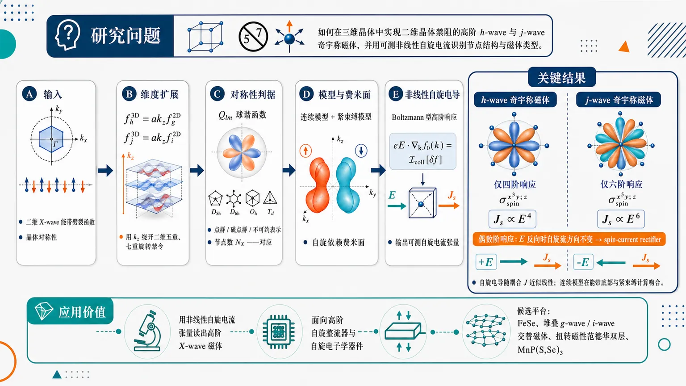
研究问题如何在三维晶体中实现二维晶体禁阻的高阶 h-wave 与 j-wave 奇宇称磁体，并用可测的非线性自旋电流准确识别其节点结构与磁体类型。创新方法提出“维度扩展”构造法：把二维 g-wave、i-wave 交替磁体的面内高阶角向纹理乘以 k_z，生成三维 h-wave 与 j-wave 奇宇称磁体，即 fₕ³D=ak_zf_g²D、fⱼ³D=ak_zfᵢ²D；关键 Aha 点是用 k_z 层间维度绕开二维五重、七重旋转禁令，并建立“节点数 N_X—球谐函数—磁点群—非线性自旋电流阶数”的一一对应。工作流程输入二维 X-wave 能带劈裂函数与晶体对称性 → 乘以 k_z 进行三维维度扩展 → 用球谐函数 Qₗₘ、点群/磁点群/不可约表示判断晶体允许性 → 构造连续模型与紧束缚模型，得到自旋依赖费米面 → 代入 Boltzmann 型高阶非线性自旋电导公式 → 输出 h-wave 的四阶自旋整流响应与 j-wave 的六阶自旋整流响应。关键结果三维 h-wave 奇宇称磁体只产生四阶非线性自旋电流，如 σₛₚᵢₙx^³y;z；三维 j-wave 奇宇称磁体只产生六阶非线性自旋电流，如 σₛₚᵢₙx^⁵y;z。两者的自旋电导随耦合 J 近似线性，连续模型在能带底部与紧束缚计算吻合；偶数阶响应使自旋流在电场反向时方向不变，形成 spin-current rectifier。应用价值提供一种用非线性自旋电流张量“读出”高阶 X-wave 磁体的实验诊断方法，并为高阶自旋整流器、自旋电子学器件和层状/范德华磁体材料设计提供路线；候选平台包括 FeSe、堆叠 g-wave 或 i-wave 交替磁体、扭转磁性范德华双层和 MnP(S,Se)₃ 等。第一部分：核心概览（Overview）
三维 h-wave 与 j-wave odd-parity magnets 被系统引入为二维 g-wave 与 i-wave altermagnets 的维度扩展：(fₕ³D=ak_z f_g²D)，(fⱼ³D=ak_z fᵢ²D)。核心贡献在于建立 X-wave 磁体节点数—非线性自旋电流阶数 的一一对应，并预测三维 h-wave 仅产生四阶、自旋整流型电流，三维 j-wave 仅产生六阶自旋整流型电流。该工作把奇宇称磁体分类、群论表征、紧束缚模型与可测非线性输运诊断连接起来，处于交替磁体与非线性自旋电子学交叉前沿。
---
第二部分：结构化快速回顾
《Fourth-order and six-order nonlinear spin current rectifier in three-dimensional h-wave and j-wave odd-parity magnets》（None，）
背景
Altermagnets 具有破坏时间反演、保持反演对称的自旋劈裂能带；p-wave 与 f-wave odd-parity magnets 则保持时间反演、破坏反演对称。已有 p, d, f, g, i-wave 磁体分类，但二维晶体禁止五重、七重旋转对称，导致二维 h-wave 与 j-wave 缺位。
方法
通过 dimensional extension 构造三维高阶 X-wave 磁体：从二维 (N_X) 节点磁体生成三维 (N_X+1) 节点磁体。具体为
[
fₕ³D=ak_zf_g²D,qquad fⱼ³D=ak_zfᵢ²D.
]
结合球谐函数、点群、磁点群、不可约表示、费米面、紧束缚模型与 Boltzmann 型非线性输运公式。
结果
三维 h-wave 奇宇称磁体对应四阶非线性自旋电导，如 (σₘ̊ ₛₚᵢₙx^³y;z)；三维 j-wave 奇宇称磁体对应六阶非线性自旋电导，如 (σₘ̊ ₛₚᵢₙx^⁵y;z)。两者均表现为 spin-current rectifier，即自旋流方向不随外电场反向而改变。
讨论
三维 h-wave 可视为二维 g-wave altermagnet 的层状扩展，三维 j-wave 可视为二维 i-wave altermagnet 的层状扩展。FeSe 已被 DFT 讨论为 h-wave 候选；堆叠二维 g-wave 或 i-wave van der Waals 磁体可能实现更高阶奇宇称磁体。
局限
主要为理论预测，缺少具体材料的第一性原理筛选与实验验证。高阶非线性自旋流需要较强电场，可能引发 Joule heating；需脉冲电场与低温冷却缓解。
结论
非线性自旋电导可以完整识别 X-wave 磁体。三维 h-wave 与 j-wave 奇宇称磁体分别提供四阶与六阶自旋整流响应，为高阶非线性自旋电子学提供新的对称性机制与材料设计路线。
---
第三部分：逐章节冷凝解析（Section-by-Section Condensing）
Abstract
Higher-order X-wave magnets split into altermagnets and odd-parity magnets
高阶对称 X-wave magnets 被分为两类：一类包括 d-wave、g-wave、i-wave altermagnets，另一类包括 p-wave、f-wave odd-parity magnets。摘要直接给出分类框架：*"Higher-order symmetric X-wave magnets consist of two groups. One includes d-wave, g-wave and i-wave altermagnets, while the other includes p-wave and f-wave odd-parity magnets."* 这一分类以 band-splitting functions 的节点数为核心指标。
Dimensional extension creates 3D magnets with one additional node
核心构造法是从二维 (N_X) 节点 X-wave 磁体生成三维 (N_X+1) 节点磁体：*"we systematically construct an X-wave magnet with ((N_X+1)) nodes in three dimensions from an X-wave magnet with (N_X) nodes in two dimensions by means of a dimensional extension"*。二维已有 (X=p,d,f,g,i)，对应 (N_X=1,2,3,4,6)。
j-wave magnets are newly predicted in 3D
在三维 h-wave 已被讨论的背景下，三维 j-wave magnets 被预测为新的高阶奇宇称磁体：*"Based on this method, we predict j-wave magnets in three dimensions."* 其逻辑来源是二维 i-wave altermagnets 的 (k_z) 维度扩展。
Nonlinear spin currents fully identify X-wave magnets
摘要给出最重要的实验判据：*"We show that the X-wave magnet is completely identified by measuring the nonlinear spin currents."* 即不同 X-wave 的 节点数 (N_X) 决定唯一的非线性自旋电流阶数。
h-wave and j-wave act as higher-order spin-current rectifiers
三维 h-wave 只出现四阶响应，三维 j-wave 只出现六阶响应：*"there are no spin currents other than the fourth-order ones such as (σₛₚᵢₙ^x³y;z) in h-wave odd-parity magnets in three dimensions and the sixth-order ones such as (σₛₚᵢₙ^x⁵y;z) in j-wave odd-parity magnets in three dimensions."* 其功能是自旋整流：*"They function as spin-current rectifier because the spin current exhibits unidirectional flow independent of the applied electric field."*
---
I Introduction
Altermagnets combine spin splitting with zero net magnetization
Altermagnets 被定位为凝聚态物理与自旋电子学前沿，因为其同时具有 spin-split band structure 与 zero net magnetization：*"Altermagnets are one of the most exciting fields in condensed matter physics. It will enable us to realize an ultrafast and ultradence spintronic memory due to a characteristic spin-split band structure and zero net magnetization."* 对称性定义为破坏时间反演、保持反演：*"Altermagnets are characterized by breaking time-reversal symmetry and preserving inversion symmetry."*
Odd-parity magnets have the opposite symmetry pattern
p-wave 与 f-wave magnets 虽非 altermagnets，但因其保持时间反演、破坏反演而属于 odd-parity magnets：*"They are characterized by preserving time-reversal symmetry and breaking inversion symmetry. In this sense, they are odd-parity magnets."* 这一区分决定了二者在输运响应与磁点群上的不同角色。
X-wave classification uses node number (N_X)
所有 p, d, f, g, i-wave 磁体可通过 X-wave magnets 统一描述，其能带劈裂函数 (f_X(k)) 的节点数分别为 (N_X=1,2,3,4,6)：*"They are described by the band-splitting functions (f_X(k)) whose number of nodes are (N_X=1,2,3,4,6), respectively."* 二维 (N_X=5) 缺失，原因是五重旋转不允许出现在晶体中：*"The X-wave magnet with (N_X=5) is absent in two dimensions (2D) because the five-fold rotational symmetry is prohibited in crystal."*
h-wave magnets emerged recently but lacked physical-property analysis
三维 h-wave magnets 已被提出，FeSe 也被基于 DFT 讨论为候选：*"Recently, h-wave magnets with (N_X=5) were proposed in three dimensions (3D) but their physical properties are yet to be explored. Indeed, FeSe has been argued to be a h-wave magnet based on the density-functional theory."* 因此，h-wave 的非线性输运性质成为直接待解问题。
Nonlinear spin current order is fixed by node number
非线性自旋电流生成是自旋电子学重要方向：*"Nonlinear spin current generation is an important topic in spintronics."* X-wave 磁体中特定阶数响应唯一存在：*"It is prominent that only a certain order of nonlinear spin currents are generated in an X-wave magnet."* 例如 f-wave 仅有二阶，g-wave 仅有三阶，i-wave 仅有五阶：*"only the second-order nonlinear spin currents are generated in f-wave magnets... only the third-order (fifth-order) nonlinear spin currents are generated in g-wave (i-wave) altermagnets."*
Dimensional extension links h-wave to g-wave and j-wave to i-wave
构造方案把三维 h-wave 理解为二维 g-wave 的扩展，把三维 j-wave 理解为二维 i-wave 的扩展：*"it is naturally understood that h-wave magnets are 3D extension of g-wave altermagnets. Similarly, we predict j-wave magnets in 3D by a dimensional extension of i-wave altermagnets."* 候选晶格之一是 triangular prism lattice：*"A candidate crystal structure is a triangular prism lattice."*
Nonlinear spin conductivity provides complete experimental identification
实验识别依赖非线性自旋电导：*"we show that the X-wave magnet is completely identified by measuring the nonlinear spin conductivities."* 对三维 h-wave 与 j-wave 的具体判据为：*"only the fourth-order nonlinear spin currents such as (σₛₚᵢₙ^x³y;z) emerge in h-wave odd-parity magnets in 3D and only the sixth-order ones such as (σₛₚᵢₙ^x⁵y;z) in j-wave odd-parity magnets in 3D."*
Table 1 encodes the node-order correspondence
Table 1 将 (X=p,d,f,g,h,i,j)、节点数 (N_X=1,2,3,4,5,6,7) 与非线性阶数联系起来；三维中典型响应包括 p-wave 的线性 (σₘ̊ ₛₚᵢₙy;x)、f-wave 的二阶 (σₘ̊ ₛₚᵢₙzy;x)、g-wave 的三阶 (σₘ̊ ₛₚᵢₙx^³;z)、h-wave 的四阶 (σₘ̊ ₛₚᵢₙx^³y;z)、i-wave 的五阶 (σₘ̊ ₛₚᵢₙy^⁴x;x)、j-wave 的六阶 (σₘ̊ ₛₚᵢₙx^⁵y;z)。表注概括为：*"The X-wave magnet is characterized by the number of nodes (N_X), where only the (ell)-th order nonlinear spin currents are generated."*
---
II X-wave magnets
Minimal two-band Hamiltonian defines spin-dependent band splitting
X-wave 磁体的电磁性质由自旋依赖能带劈裂函数决定：*"The electromagnetic property of the X-wave magnet is characterized by the band splitting depending on the spin."* 最简两带模型为
[
H(k)=frachbar²k²2m+Jf_X(k)σ_z,
]
其中 (J) 是耦合常数，(σ_z) 是 Pauli 矩阵。能量为
[
ǎrepsilonₛ₍ₖ₎₌frachbar²k²2m+sJf_X(k),
]
且 (s=+1) 为上自旋、(s=-1) 为下自旋：*"where (s=1) for up spin and (s=-1) for down spin."*
2D X-wave functions are angular harmonics with (N_X) nodes
二维函数包括
[
fₚ²D=akₓ₌ₐₖₒ̧sφ,
]
[
f_d²D=2a²kₓₖ_y=a²k²sin2φ,
]
[
f_f²D=a³kₓ₍ₖₓ²⁻³k_y²⁾⁼a³k³o̧s3φ,
]
[
f_g²D=4a⁴kₓₖ_y(kₓ²⁻k_y²⁾⁼a⁴k⁴sin4φ,
]
[
fᵢ²D=2a⁶kₓₖ_y(3kₓ²⁻k_y²⁾⁽kₓ²⁻³k_y²⁾⁼a⁶k⁶sin6φ.
]
所有函数均满足：*"each of which has (N_X) nodes."*
Prime partners represent phase-shifted angular harmonics
二维还存在 (p',d',f',g',i') 形式，如
[
fg'²D=a⁴⁽kₓ⁴⁻⁶kₓ²k_y²⁺k_y⁴⁾⁼a⁴k⁴o̧s4φ,
]
[
fᵢ'²D=2a⁶⁽kₓ²⁻k_y²⁾⁽kₓ⁴⁺k_y⁴⁻¹⁴kₓ²k_y²⁾⁼a⁶k⁶o̧s6φ.
]
这些与未加 prime 的函数对应 (sin Nφ) 与 (o̧s Nφ) 的相位差。
Known 3D X-wave functions already obey dimensional-extension patterns
三维已有函数包括
[
f_f³D=2a³kₓₖ_yk_z,
]
[
f_g³D=a⁴k_zkₓ₍ₖₓ²⁻³k_y²⁾,
]
[
fᵢ³D=a⁶⁽kₓ²⁻k_y²⁾⁽k_y²⁻k_z²⁾⁽k_z²⁻kₓ²⁾.
]
其中已知关系为：*"There are relations between an X-wave magnet with (N_X+1) in 3D and an X-wave magnet with (N_X) in 2D"*，例如
[
f_f³D=ak_zf_d²D,qquad f_g³D=ak_zf_f²D.
]
h-wave and j-wave are generated by multiplying 2D g-wave and i-wave by (ak_z)
新的三维构造为
[
fₕ³D(k)=ak_zf_g²D(k),
]
[
fⱼ³D(k)=ak_zfᵢ²D(k).
]
条件是晶体结构与这些函数兼容：*"provided that there are crystal structures compatible with (fₕ³D(k)) and (fⱼ³D(k))."*
3D i-wave is not generated by this specific route
三维 i-wave 不来自二维 h-wave 的扩展，因为二维 h-wave odd-parity magnet 不存在：*"We note that the i-wave altermagnet in 3D is not constructed in this way because there is no h-wave odd-parity magnet in 2D."* 这说明维度扩展法受二维晶体旋转对称性约束。
---
III Group theoretical analysis
Spherical harmonics provide the classification basis
X-wave 磁体可按球谐函数与晶体点群分类，方式类似多极矩分类：*"We classify X-wave magnets based on spherical-harmonic functions and crystallographic point groups as in the case of classification of multipoles."* 多极矩定义为
[
Qₑₗₗ ₘequiv-esqrtfrac4π2ell+1k^ell Yₑₗₗ ₘ(θ,φ).
]
Real and imaginary spherical-harmonic combinations correspond to X-wave functions
实组合与虚组合定义为
[
Qₑₗₗ ₘ⁺equivfrac(-1)^msqrt2(Qₑₗₗ ₘ+Qₑₗₗ ₘast),
]
[
Qₑₗₗ ₘ⁻equivfrac(-1)^misqrt2(Qₑₗₗ ₘ-Qₑₗₗ ₘast).
]
显式形式为
[
Qₑₗₗ ₘ⁺propto kell⁻mPₑₗₗ^m(o̧sθ)Re[k₊^m],
]
[
Qₑₗₗ ₘ⁻propto kell⁻mPₑₗₗ^m(o̧sθ)Im[k₊^m].
]
这把 (o̧s mφ)、(sin mφ) 形式与不可约表示联系起来。
Dimensional extension appears as a spherical-harmonic recurrence
关键关系为
[
QN_X,N_X₋₁⁺propto k_zQN_X₋₁,N_X₋₁⁺,
]
[
QN_X,N_X₋₁⁻propto k_zQN_X₋₁,N_X₋₁⁻.
]
二维与三维 X-wave 函数对应：
[
f_X²D=QN_XN_X⁻,quad fX'²D=QN_XN_X⁺,
]
[
f_X³D=QN_X,N_X₋₁⁺,quad fX'³D=QN_X,N_X₋₁⁻.
]
这为 (ak_z) 维度扩展提供群论基础。
h-wave magnets belong to (D₄ₕ)-based orthorhombic-compatible structures
三维 h-wave 的表征为 (Q₅₄⁻) 或 (Q₅₄⁺)，对应
[
fₕ³Dsim k_zkₓₖ_y(kₓ²⁻k_y²⁾,
]
[
fₕ'³Dsim k_z(kₓ⁴⁻⁶kₓ²k_y²⁺k_y⁴⁾.
]
分类给出：*"h-wave magnets are realized in the orthorhombic crystal system, which belongs to the (D₄ₕ) point group."* 候选结构包括：*"the perovskite structure, the Rutile structure, the olivine structure and the Illite structure."*
j-wave magnets belong to (D₆ₕ)-based hexagonal crystals
三维 j-wave 的表征为 (Q₇₆⁻) 或 (Q₇₆⁺)，对应
[
fⱼ³Dsim 2k_zkₓₖ_y(3kₓ²⁻k_y²⁾⁽kₓ²⁻³k_y²⁾,
]
[
fⱼ'³Dsim k_z(kₓ⁶⁻¹⁵kₓ⁴k_y²⁺¹⁵kₓ²k_y²⁻k_y⁶⁾.
]
晶体系统为：*"j-wave magnets are realized in the hexagonal crystal, which belongs to the (D₆ₕ) group."* 候选结构包括：*"the Delafossite-type structure (ABO(₂)), 1T/2H systems made of transition-metal dichalcogenides (TMDs), CdI(₂)-type, NaCoO(₂)/Na(ₓ)CoO(₂) structure and the YbMgGaO(₄) structure."*
Magnetic point groups are type-III black-white groups
相关磁点群属于 type-III 黑白磁点群：*"Magnetic point groups relevant to X-wave magnets belong to type-III (black-white) magnetic point groups, in which the magnetization is reversed by the (N_X) rotation."* 形式包括 (N/mmm) 与 (N'/m'm'm')：*"These groups take forms such as (N/mmm) and (Nprⁱme/mprⁱmemprⁱmemprⁱme)"*，prime 表示对应旋转或镜面对磁化翻转。
Table 2 gives explicit PG, MPG, and IR assignments
Table 2 中
- (fₕ³D): (D₄ₕ(4/m'm'm')), (A₁ᵤ)；
- (fₕ'³D): (D₄ₕ(4/mmm')), (A₂ᵤ)；
- (fⱼ³D): (D₆ₕ(6/m'm'm')), (A₂ᵤ)；
- (fⱼ'³D): (D₆ₕ(6/mmm')), (A₁ᵤ)。
表题明确为：*"Classification table for h-wave and j-wave magnets in terms of the point group (PG), the magnetic point group (MPG) and the irreducible representation (IR)."*
---
IV h-wave and j-wave magnets
IV.1 h-wave magnets in 2D
2D h-wave continuum form requires forbidden five-fold angular structure
二维 h-wave 连续模型为
[
fₕ²D(k)=k⁵o̧s5φ.
]
费米面在一阶 (J) 下为
[
k_F=fracsqrt2mμhbar-sJfrac4μ²m³hbar⁶o̧s5φ.
]
由于其具有五重角向结构，晶体中无法实现：*"it is impossible to implement it in the tight-binding model because the five-fold rotational symmetry is prohibited in crystals."*
Polynomial expression exposes the incompatible angular symmetry
二维 h-wave 也可写成
[
fₕ²D=kₓ⁵⁻⁷kₓ³k_y²⁺²kₓₖ_y⁴.
]
该表达式对应 (o̧s5φ)；虽然数学上可定义，但没有晶格紧束缚实现。图 1(a1) 展示理想连续模型费米面：*"The Fermi surface is given by ... and shown in Fig. 1 (a1)."*
---
IV.2 h-wave magnets in 3D
3D h-wave is a valid dimensional extension of 2D g-wave
三维 h-wave 的能带劈裂函数为
[
fₕ³D(k)=4a⁵kₓₖ_yk_z(kₓ²⁻k_y²⁾.
]
该式正是 (ak_zf_g²D) 的结果。费米面一阶 (J) 表达式为
[
k_F=fracsqrt2mμhbar-sJfrac4μ²m³hbar⁶o̧sθsin4φ.
]
Fermi volume receives only a second-order correction in (J)
费米体积为
[
Vₕ³D=V₀³D+frac176sqrt2πμ⁹/²m¹³/²3hbar¹³J²,
]
其中
[
V₀³D=frac8sqrt2π3łeft(fracμ mhbar²i̊ght)³/².
]
这说明一阶自旋劈裂主要改变费米面形状，总体体积修正从 (J²) 开始。
Cubic-lattice tight-binding model realizes the 3D h-wave function
三维 h-wave 可在立方晶格上构造紧束缚模型：*"In contrast to the h-wave magnet in 2D, it is possible to construct a tight-binding model corresponding to the continuum model ... on the cubit lattice."* 模型为
[
H=frachbar²ma²(3-o̧s akₓ₋ₒ̧s ak_y-o̧s ak_z)σ₀
+2Jσ_zsin akₓsin ak_ysin ak_z(o̧s ak_y-o̧s akₓ₎.
]
Fermi volume is almost independent of (J) even beyond perturbation theory
数值紧束缚结果显示大 (J) 下费米体积仍几乎不变：*"It has almost no dependence on (J) even for large (J), where it is a good approximation to use (Vₕ³D=V₀³D)."* 图 2(a) 使用参数
[
hbar²/(ma²⁾⁼ǎrepsilon₀/4,qquad μ=0.1ǎrepsilon₀.
]
---
IV.3 i-wave magnets in 2D
Section title likely mismatches the discussed j-wave 2D continuum form
小节标题为 i-wave magnets in 2D，但正文给出的是二维 j-wave 连续形式：*"The continuum form of the h-wave magnets in 2D is given by (fⱼ²D(k)=k⁷o̧s7φ)."* 该句内部还把 h-wave 与 (fⱼ) 混写，明显存在排版或命名错误。数学内容对应七重角向的二维 j-wave。
2D j-wave requires forbidden seven-fold symmetry
二维 j-wave 连续函数为
[
fⱼ²D(k)=k⁷o̧s7φ,
]
费米面为
[
k_F=fracsqrt2mμhbar-sJfrac8μ³m⁴hbar⁸o̧s7φ.
]
多项式形式为
[
fⱼ²D=kₓ⁷⁻¹⁸kₓ⁵k_y²⁺²⁵kₓ³k_y⁴⁻⁴kₓₖ_y⁶.
]
其紧束缚实现被晶体学禁止：*"it is impossible to implement it in the tight-binding model because the seven-fold rotational symmetry is prohibited in crystals."*
---
IV.4 j-wave magnets in 3D
3D j-wave is predicted from 2D i-wave by dimensional extension
三维 j-wave 的核心预测为
[
fⱼ³D(k)=2a⁷kₓₖ_yk_z(3kₓ²⁻k_y²⁾⁽kₓ²⁻³k_y²⁾.
]
该式来自 (ak_zfᵢ²D)：*"We predict j-wave magnets in 3D based on the band-splitting function ... with the use of (fᵢ²D(k))."*
Fermi surface has (o̧sθsin6φ) anisotropy
三维 j-wave 的费米面一阶表达为
[
k_F=fracsqrt2mμhbar-sJfrac8μ³m⁴hbar⁸o̧sθsin6φ.
]
其六重面内角向结构与额外 (k_z) 因子结合，形成 (N_X=7) 节点结构。
Fermi volume correction is quadratic in (J)
费米体积为
[
Vⱼ³D=V₀³D+frac128sqrt2πμ¹³/²m¹⁷/²3hbar¹⁷J².
]
与 h-wave 一样，一阶 (J) 修正不改变总体体积，仅造成自旋依赖形变。
Triangular-prism lattice supports a j-wave tight-binding model
不同于二维 j-wave，三维 j-wave 可在 triangular prism lattice 上实现：*"In contrast to the i-wave magnet in 2D, it is possible to construct a tight-binding model ... on the triangular prism lattice."* 紧束缚哈密顿量包含面内三角晶格动能、(z) 方向动能，以及
[
16Jσ_zsin ak_zprodⱼ₌₀²sin(anⱼ^Aḑotk)
prodⱼ₌₀²sin(sqrt3anⱼ^Bḑotk).
]
其中
[
nⱼ^A=(o̧s2π j/3,sin2π j/3),quad
nⱼ^B=(sin2π j/3,o̧s2π j/3).
]
Numerical Fermi volume remains nearly (J)-independent
图 2(b) 的紧束缚计算未使用 (J) 微扰展开，但仍显示：*"It has almost no dependence on (J) even for large (J), where it is a good approximation to use (Vⱼ³D=V₀³D)."* 图 3(b)、图 4(b) 使用参数
[
hbar²/(ma²⁾⁼ǎrepsilon₀/4,qquad μ=0.01ǎrepsilon₀
]
或
[
J=0.1ǎrepsilon₀.
]
---
V Nonlinear spin current generation
Only one nonlinear order survives for each X-wave magnet
X-wave 磁体具有特征非线性自旋电导：*"X-wave magnets have a characteristic nonlinear spin conductivity, where only a certain order of nonlinear spin conductivity is nonzero."* f-wave 的例子是：*"only the second-order nonlinear spin conductivity is nonzero for f-wave magnets."*
General nonlinear current expansion includes three electric-field directions
电流展开为
[
j_b=sumₑₗₗ_ₓ,ₑₗₗ_y,ₑₗₗ_z
σxellₓyell_yzell_z;b
(Eₓ₎ellₓ(E_y)ell_y(E_z)ell_z.
]
对应电导定义为
[
σxellₓyell_yzell_z;b
=frac1ellₓ!ell_y!ell_z!
fracpartialellₓ₊ell_y⁺ell_zj_b
{partial Eₓellₓpartial E_yell_ypartial E_zell_z}.
]
Spin-dependent conductivity is governed by high-order derivatives of energy
自旋分辨电导为
[
σₛxellₓyell_yzell_z;b
=
frac(-e/hbar)ellₓ₊ell_y⁺ell_z⁺¹
(iømega+1/τ)ellₓ₊ell_y⁺ell_z
int dk,fₛ⁽⁰⁾
fracpartialellₓ₊ell_y⁺ell_z⁺¹ǎrepsilonₛ
{partial kₓellₓpartial k_yell_ypartial k_zell_zpartial k_b}.
]
该公式说明，只有能量中实际存在的 (kₓⁿₓk_yⁿ_yk_zⁿ_z) 单项式会贡献对应非线性自旋电导。
3D odd-parity magnets inherit 2D altermagnet spin conductivity structure with one extra (z)-field power
三维 ((X+1))-wave 奇宇称磁体的自旋电导与二维 X-wave altermagnet 对应：*"the spin conductivity ... for ((X+1))-wave odd-parity magnets in 3D is identical to ... for X-wave altermagnets in 2D."* 关键是三维函数多出 (k_z)，因此电导指标中多出一个 (z) 方向因子。
Energy expansion gives direct reconstruction of (f_X(k))
能量展开为
[
ǎrepsilonₛ₌frachbar²k²2m
+sJsumₙ_ₓ₊ₙ_y₊ₙ_z₌N_X
cⁿₓ,ⁿ_y,ⁿ_zkₓⁿₓk_yⁿ_yk_zⁿ_z.
]
非零自旋电导只对应非零系数 (cⁿₓ,ⁿ_y,ⁿ_z)：*"the spin conductivity ... is nonzero only for nonzero (cⁿₓ,ⁿ_y,ⁿ_z)."* 因此，通过测量不同指标的非线性自旋电导可重构 (f_X)：*"the function (f_X(k)) of the X-wave magnet is experimentally determined by measuring ... for various (nₓ,n_y,n_z)."* 最终结论为：*"the X-wave magnet is completely identified by measuring the nonlinear spin conductivities."*
---
V.1 h-wave magnets in 3D
All nonzero h-wave spin conductivities are fourth-order
三维 h-wave 的非零贡献全部为四阶，包括
[
σₘ̊ ₛₚᵢₙx^³y;z,quad
σₘ̊ ₛₚᵢₙxy^³;z,quad
σₘ̊ ₛₚᵢₙx^²yz;x,quad
σₘ̊ ₛₚᵢₙy^³z;x,quad
σₘ̊ ₛₚᵢₙx^³z;y,quad
σₘ̊ ₛₚᵢₙxy^²z;y.
]
正文列举为：*"all of the nonzero contributions are listed as (σₛₚᵢₙ^x³y;z), (σₛₚᵢₙ^xy³;z), (σₛₚᵢₙ^x²yz;x), (σₛₚᵢₙ^y³z;x), (σₛₚᵢₙ^x³z;y) and (σₛₚᵢₙ^xy²z;y)."*
h-wave fourth-order conductivities obey fixed sign relations
这些响应满足
[
σₘ̊ ₛₚᵢₙx^³y;z
=σₘ̊ ₛₚᵢₙx^²yz;x
=σₘ̊ ₛₚᵢₙx^³z;y
=-σₘ̊ ₛₚᵢₙxy^³;z
=-σₘ̊ ₛₚᵢₙy^³z;x
=-σₘ̊ ₛₚᵢₙxy^²z;y
=
6frac(-e/hbar)⁵(iømega+1/τ)⁴V.
]
系数 6 来自 (kₓ³k_yk_z) 等单项式的高阶导数阶乘结构。
h-wave spin conductivity is linear in (J) and continuum theory matches tight-binding near band bottom
数值结果显示自旋电导随 (J) 线性，即使没有使用 (J) 微扰展开：*"It is linear even for the numerical calculation without using the perturbation theory with respect to (J)."* 关于化学势依赖：*"The analytic formula based on the continuum model well reproduces the numerical result based on the tight-binding model at the bottom of the band structure."*
---
V.2 j-wave magnets in 3D
All nonzero j-wave spin conductivities are sixth-order
三维 j-wave 的非零贡献包括九个六阶分量：
[
σₘ̊ ₛₚᵢₙx^⁵y;z,quad
σₘ̊ ₛₚᵢₙx^³y^³;z,quad
σₘ̊ ₛₚᵢₙxy^⁵;z,
]
[
σₘ̊ ₛₚᵢₙx^⁴yz;x,quad
σₘ̊ ₛₚᵢₙx^²y^³z;x,quad
σₘ̊ ₛₚᵢₙy^⁵z;x,
]
[
σₘ̊ ₛₚᵢₙx^⁵z;y,quad
σₘ̊ ₛₚᵢₙx^³y^²z;y,quad
σₘ̊ ₛₚᵢₙxy^⁴z;y.
]
正文列举为：*"all of the nonzero contributions are (σₛₚᵢₙ^x⁵y;z), (σₛₚᵢₙ^x³y³;z), (σₛₚᵢₙ^xy⁵;z), ... and (σₛₚᵢₙ^xy⁴z;y)."*
j-wave sixth-order conductivities share a universal (6!) prefactor
关系式为
[
σₘ̊ ₛₚᵢₙx^⁵y;z
=σₘ̊ ₛₚᵢₙx^⁴yz;x
=σₘ̊ ₛₚᵢₙx^⁵z;y
=σₘ̊ ₛₚᵢₙxy^⁵;z
=σₘ̊ ₛₚᵢₙy^⁵z;x
=σₘ̊ ₛₚᵢₙxy^⁴z;y
]
[
=-σₘ̊ ₛₚᵢₙx^³y^³;z
=-σₘ̊ ₛₚᵢₙx^²y^³z;x
=-σₘ̊ ₛₚᵢₙx^³y^²z;y
=
6!frac(-e/hbar)⁷(iømega+1/τ)⁶V.
]
六阶导数带来 (6!) 的组合因子。
j-wave spin conductivity is also linear in (J)
图 3(b) 显示：*"It is linear even for the numerical calculation without using the perturbation theory with respect to (J)."* 图 4(b) 显示连续模型在能带底部再现紧束缚模型：*"The analytic formula based on the continuum model well reproduces the numerical result based on the tight-binding model at the bottom of the band structure."*
---
VI Discussions
Dimensional extension is the organizing principle for 3D h-wave and j-wave magnets
核心总结为：*"We have proposed a scheme to construct X-wave magnets in 3D by a dimensional extension of X-wave magnets in 2D."* 具体对应关系为：*"h-wave magnets are the 3D extension of g-wave altermagnets, while j-wave magnets are the 3D extension of i-wave altermagnets."*
Experimental identification relies on nonlinear spin currents under electric fields
h-wave 与 j-wave 可通过外电场诱导的非线性自旋流识别：*"They can be identified experimentally by measuring nonlinear spin currents by the application of an electric field."* 关键特征是：*"Only the fourth-order (sixth-order) spin currents flow in h-wave (j-wave) magnets."*
Higher-order spin currents act as rectifiers
自旋流方向不依赖电场方向，因此具备整流功能：*"which function as spin-current rectifier because the spin current exhibits unidirectional flow independent of the applied electric field."* 对 h-wave，四阶响应满足 (jpropto E⁴)，对 (E→ -E) 不变；对 j-wave，六阶响应满足 (jpropto E⁶)，同样不变。
FeSe and layered altermagnets motivate material searches
已有群论框架预测 FeSe 具有 h-wave 自旋劈裂：*"h-wave spin splitting was theoretically predicted in FeSe through density functional theory."* j-wave 被认为有望近期发现：*"j-wave magnets are expected to be discovered in the near future."*
Layer-construction suggests stacking g-wave and i-wave systems
层构造机制为：*"Both h-wave and j-wave odd-parity magnets in three dimensions have been theoretically proposed using the layer-construction method, where candidate materials include layered g-wave and i-wave altermagnets."* 类比 p-wave 来自螺旋自旋结构：*"p-wave magnets arise from a helical spin structure, in which a linear (k_z) term appears when the helix rotates along the z direction."* 因此，若 g-wave 或 i-wave 层沿 (z) 方向旋转堆叠，可生成 h-wave 或 j-wave：*"we expect that h-wave and j-wave odd-parity magnets can emerge from layered structures composed of g-wave and i-wave altermagnets, where the spins rotate along the z direction."*
Twisted magnetic van der Waals bilayers and MnP(S,Se)(₃) are relevant platforms
二维 g-wave 与 i-wave altermagnets 已在扭转磁性 van der Waals 双层中理论提出，i-wave 也在 MnP(S,Se)(₃) 中提出：*"Two-dimensional g-wave and i-wave altermagnets have been theoretically proposed in twisted magnetic van der Waals bilayers, and i-wave altermagnet has also been proposed in MnP(S,Se)(₃)."* 因而堆叠这些系统可能实现 h-wave 与 j-wave：*"stacking such systems may provide promising candidates for realizing h-wave and j-wave odd-parity magnets."*
Required electric fields are experimentally realistic
临界电场估计为
[
Eₘ̊ cᵣequivfrachbar keτ=0.66,m̊ V/μ m,
]
其中使用
[
τ=3.4×10⁻¹²m̊ s,qquad k=0.35,m̊ Å⁻¹.
]
典型实验电场 (E=1,m̊ V/μ m)，满足：*"which satisfies the condition (E/Ecᵣ>1)."* 因而结论为：*"higher-order nonlinear spin currents can be generated under realistic experimental conditions."*
Joule heating is the main practical issue
强电场可能导致发热：*"A strong electric field is required to induce magnetization, which may lead to Joule-heating issues."* 缓解方式包括脉冲电场与制冷：*"This problem can be mitigated by applying pulsed electric fields. In addition, cooling with a refrigerator is effective for suppressing Joule heating."*
---
Appendix A Spherical harmonic functions
Appendix extends PG–MPG–IR classification to all X-wave magnets
附录目的为完整分类：*"For the sake of the completeness, we classify all X-wave magnets in the following tables."* 分类维度包括点群、磁点群、不可约表示：*"They are classification tables for X-wave magnets in terms of the point group (PG), the magnetic point group (MPG) and the irreducible representation (IR)."*
Forbidden 2D h-wave and j-wave entries are marked by NO
附录说明某些球谐函数与晶格结构不兼容：*"NO" in the tables given by Eqs.(A8) and (A10) represents that the spherical harmonic function is not compatible with the lattice structure due to the five-fold and seven-fold rotational symmetries."* 这与正文中二维 h-wave、j-wave 不可紧束缚实现完全一致。
A.1 p-wave
p-wave functions are linear odd-parity harmonics
p-wave 分类包括
[
Q₁₀⁺=k_z,quad Q₁₁⁻=k_y,quad Q₁₁⁺=kₓ.
]
表中对应 (D₂ₕ) 的不同磁点群与 (B₁ᵤ,B₂ᵤ,B₃ᵤ) 表示。原表给出：*"p-waves ... (Q₁₀⁺) (k_z) (D₂ₕ(mmmprⁱme)) (B₁ᵤ)"*，以及 (fₚ'²Dsim k_y)、(fₚ²Dsim kₓ)。
A.2 d-wave
d-wave functions include quadrupolar even-parity harmonics
d-wave 分类包括
[
Q₂₀⁺=3k_z²⁻k²,quad
Q₂₁⁻=k_yk_z,quad
Q₂₁⁺=kₓₖ_z,
]
[
f_d²D=Q₂₂⁻sim kₓₖ_y,quad
fd'²D=Q₂₂⁺sim kₓ²⁻k_y².
]
表中 (f_d²D) 对应 (D₄ₕ(4'/m'm'm))、(B₂g)，(fd'²D) 对应 (D₄ₕ(4'mmm))、(B₁g)。
d-wave also shows the first dimensional-extension relation
附录给出
[
Q₂₁⁺propto k_zQ₁₁⁺,qquad Q₂₁⁻propto k_zQ₁₁⁻.
]
原文为：*"There are relations (Q₂₁⁺propto k_zQ₁₁⁺,qquad Q₂₁⁻propto k_zQ₁₁⁻)."* 这正是从 p-wave 到 3D d-wave 的低阶版本。
A.3 f-wave
f-wave functions include both 2D and 3D odd-parity structures
f-wave 分类包括
[
Q₃₀⁺=k_z(5k_z²⁻³k²⁾,
]
[
Q₃₁⁻=k_y(k²⁻⁵k_z²⁾,quad
Q₃₁⁺=kₓ₍ₖ²⁻⁵k_z²⁾,
]
[
f_f³D=Q₃₂⁻sim2kₓₖ_yk_z,
]
[
ff'³D=Q₃₂⁺sim(kₓ²⁻k_y²⁾k_z,
]
[
ff'²D=Q₃₃⁻sim k_y(3kₓ²⁻k_y²⁾,
]
[
f_f²D=Q₃₃⁺sim kₓ₍ₖₓ²⁻³k_y²⁾.
]
表中明确列出 (f_f³D) 对应 (Oₕ₍₄'/m'm'm'))、(A₂ᵤ)，二维 f-wave 对应 (D₆ₕ) 与 (E₂ᵤ)。
---
第四部分：深度理解与语言支持（Understanding & Nuance）
1. 术语解析
Altermagnet
不是普通反铁磁，也不是铁磁。其核心是 zero net magnetization 但能带仍发生自旋劈裂。关键差异在于：普通反铁磁常因联合对称性导致 Kramers-like 简并，而 altermagnet 的晶体旋转/镜面对称使相反自旋子晶格不简单抵消，从而出现动量依赖自旋劈裂。文中定义为：*"breaking time-reversal symmetry and preserving inversion symmetry."*
Odd-parity magnet
“奇宇称磁体”指能带劈裂函数在反演下变号，通常保持时间反演但破坏反演。文中 p-wave、f-wave、h-wave、j-wave 属此类。odd-parity 与 altermagnet 的区别不只是“奇/偶函数”，而是时间反演与反演对称组合不同：*"preserving time-reversal symmetry and breaking inversion symmetry."*
Dimensional extension
不是简单把二维模型放到三维，而是将二维角向谐波乘以 (k_z)，使节点数增加 1：
[
fX₊₁³Dsim k_z f_X²D.
]
例如 (fₕ³D=ak_zf_g²D)，(fⱼ³D=ak_zfᵢ²D)。其物理含义是层状结构或沿 (z) 方向旋转的磁结构把二维面内高阶纹理提升为三维奇宇称纹理。
Spin-current rectifier
“自旋电流整流器”不是普通二极管式电荷整流，而是指自旋流方向对外电场反向不敏感。若响应阶数为偶数，如四阶 (jₛpropto E⁴) 或六阶 (jₛpropto E⁶)，则 (E→ -E) 时 (jₛ) 不变。文中表述为：*"the spin current exhibits unidirectional flow independent of the applied electric field."*
Magnetic point group, type-III black-white group
type-III 磁点群包含带时间反演的空间操作。prime 符号表示该操作伴随磁化翻转。文中说明：*"N or (N') indicates whether the magnetization is preserved or reversed under a (2π/N) rotation."* 这类群论标签决定某种 (f_X(k)) 是否被晶体允许。
---
2. 疑难查证
为什么二维 h-wave 与 j-wave 不允许，但三维 h-wave 与 j-wave 可以允许？
二维 h-wave 对应 (o̧s5φ)，需要五重旋转结构；二维 j-wave 对应 (o̧s7φ)，需要七重旋转结构。周期晶体中五重与七重旋转不属于二维晶体允许的旋转对称，因此不能构造严格晶格紧束缚模型。三维构造并不要求真正的五重或七重晶体旋转，而是用四重或六重面内结构乘以 (k_z)：
[
h:quad k_zsin4φ,qquad j:quad k_zsin6φ.
]
因此 h-wave 可与 (D₄ₕ) 兼容，j-wave 可与 (D₆ₕ) 兼容。
为什么 h-wave 是四阶非线性自旋流，而不是五阶？
节点数 (N_X) 与函数总动量阶数并不等同于非线性电场阶数的直觉标签。三维 h-wave 的劈裂函数
[
fₕ³Dsim kₓₖ_yk_z(kₓ²⁻k_y²⁾
]
是五次动量多项式，但自旋电导公式中电流方向还要对 (k_b) 再求一次导数。若能量项是 (kₓⁿₓk_yⁿ_yk_zⁿ_z)，对应电场阶数为
[
(nₓ₊ₙ_y+n_z)-1.
]
h-wave 总动量阶数为 5，因此非线性自旋电流为四阶；j-wave 总动量阶数为 7，因此为六阶。
为什么自旋电导能“完全识别” X-wave 磁体？
能量劈裂函数可展开为
[
f_X(k)=sum cⁿₓ,ⁿ_y,ⁿ_zkₓⁿₓk_yⁿ_yk_zⁿ_z.
]
非线性自旋电导本质上是对能量的高阶动量导数，因此每个非零单项式系数 (cⁿₓ,ⁿ_y,ⁿ_z) 会对应一个或一组非零 (σₘ̊ ₛₚᵢₙxellₓyell_yzell_z;b)。测量足够多的张量分量，就能反推出哪些 (c) 非零及其相对符号，从而确定 (f_X) 的角向结构。
为什么高阶响应仍可能实验可测？
高阶响应通常需要较强电场。估算临界电场
[
Eₘ̊ cᵣ=0.66,m̊ V/μ m
]
而典型实验电场
[
E=1,m̊ V/μ m
]
满足 (E/Eₘ̊ cᵣ>1)。因此高阶非线性自旋流并非只能在不可达电场下出现。主要风险是 Joule heating，需要脉冲电场与低温环境。
---
第五部分：创新评估与关联（Synthesis & Novelty）
1. 创新性判断
从已知 h-wave 候选到可诊断输运指纹
近年 h-wave 磁体已通过群论与 DFT 在 FeSe 等体系中被讨论，但物理性质和实验判据尚不充分。这里的新增贡献是将 h-wave 的三维奇宇称结构直接关联到 唯一四阶非线性自旋电导，给出可测量的输运指纹。
首次系统提出三维 j-wave magnets
二维七重 j-wave 因晶体学限制无法实现，但三维 j-wave 可通过
[
fⱼ³D=ak_zfᵢ²D
]
绕开二维七重旋转禁令。这提供了 (N_X=7) 高阶 X-wave 磁体的具体理论路径、群论分类与三角棱柱晶格紧束缚模型。
统一了节点数、球谐函数、磁点群和非线性阶数
过去 2–5 年相关研究主要分别关注 altermagnet 分类、odd-parity spin splitting、非线性自旋流或具体材料。这里把四个层面合并为一个闭环：
[
node number N_X
i̊ghtarrow
spherical harmonic Qₑₗₗ ₘ
i̊ghtarrow
PG/MPG/IR
i̊ghtarrow
nonlinear spin conductivity order.
]
解决了“如何实验识别高阶 X-wave 磁体”的问题
高阶自旋劈裂的角向结构通常难以直接测量。非线性自旋电导张量提供了间接但完整的识别方法。结论不是仅区分有无自旋劈裂，而是可反推出 (f_X(k)) 的多项式结构。
提出偶数阶自旋整流的新机制
h-wave 四阶与 j-wave 六阶响应在电场反向下不变，形成自旋流整流。相较传统电荷整流或低阶非线性 Hall/自旋 Hall 响应，该机制依赖高阶奇宇称磁体的节点结构，属于更高阶非线性自旋电子学功能。
仍待解决的问题
最主要空白包括：
- 缺少 j-wave 具体材料的第一性原理候选；
- h-wave FeSe 关联仍需实验输运验证；
- 高阶响应幅度、散射机制、温度依赖与多带效应尚未充分处理；
- 强电场下 Joule heating 与非平衡磁结构稳定性仍需实验方案优化。
-
16
📊 含图深析
📄 摘要：提出动态磁对分布函数 Dm(r,E)，由非偏振非弹性中子散射测得的动态磁结构因子 Sm(Q,E) 傅里叶变换得到。针对简单磁模型以及 FeTiO₃、YBa₂Cu₃O₆ 等体系推导公式并考察实空间局域磁激发。
💡 亮点：Dm(r,E) 将传统 Q 空间磁激发谱转化为能量分辨的实空间磁关联。该方法可从非偏振中子散射中提取 FeTiO₃、YBa₂Cu₃O₆ 等材料的局域磁振子模式。
📖 展开分析 + 配图
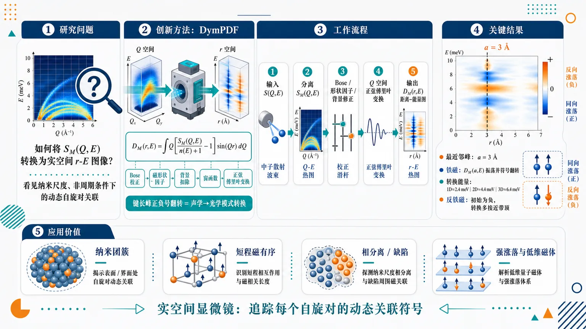
研究问题传统磁振子研究主要停留在倒易空间的动量—能量色散图中，难以直接看见纳米尺度、非周期条件下某一具体自旋键长上的动态关联；核心问题是：如何把非弹性中子散射测得的磁动态结构因子 S_M(Q,E) 转换为实空间的距离—能量图像，以识别局域磁振子模式及其声学到光学模式转换。创新方法提出动态磁性对密度函数 DymPDF，即 D_M(r,E)：将非偏振非弹性中子散射得到的 S_M(Q,E) 经过 Bose 因子校正、磁形状因子处理、背景扣除、窗函数抑制误差后，对 Q 空间信号做正弦傅里叶变换，得到特定距离 r 上随能量 E 变化的动态自旋对关联。Aha 点是：声学—光学磁振子转换不再只靠色散分支判断，而可在实空间中表现为某一键长峰的正负号翻转。工作流程输入非偏振非弹性中子散射强度 S(Q,E)；利用 Q 依赖差异分离磁振子与声子贡献，提取磁性部分 S_M(Q,E)；除以 Bose 因子并进行磁形状因子、二次背景、常数项和窗函数修正；对 Q[S_M(Q,E)/(n(E)+1)-1]sin(Qr) 在 Qₘᵢₙ 到 Qₘₐₓ 范围内傅里叶变换；输出 D_M(r,E) 的距离—能量图，在最近邻键长 r=a 等位置读取峰强、符号和能量振荡，判断局域自旋同向或反向涨落。关键结果1D、2D、3D 铁磁和反铁磁 Heisenberg 模型均在最近邻距离 a=3 Å 处出现清晰 DymPDF 峰；铁磁体系中 D_M(a,E) 随能量振荡并发生符号翻转，对应最近邻磁矩由同向涨落的声学模式转为反向涨落的光学模式，例如 1D 铁磁约 2.4 meV、2D 铁磁约 4.4 meV、3D 铁磁约 6.4 meV 出现转换；反铁磁最近邻峰初始为负，模式转换多接近磁振子带顶。低能解析式可定性复现能量依赖，反铁磁近似在高达带顶约 80% 范围内更可靠，而铁磁在带顶约 30% 以上精度下降。应用价值DymPDF 为局域磁动力学提供实空间显微镜，可在没有严格长程周期性的纳米团簇、短程磁有序、相分离、缺陷和强涨落磁体中追踪每个自旋对的动态关联符号；它把复杂的磁振子色散信息转化为直观的键长峰、能量振荡和符号翻转图像，有助于研究 FeTiO3、YBa2Cu3O6 等真实材料中的局域磁振子模式，并为非晶、无序和低维磁性材料的磁激发分析提供新工具。第一部分：核心概览 (Overview)
动态磁性对密度函数（DymPDF, (Dₘ̊ M(r,E))）被系统定义为非偏振非弹性中子散射测得的动态磁结构因子 (Sₘ̊ M(Q,E)) 的傅里叶实空间表示，用于解析纳米尺度的局域磁振子模式。核心贡献在于：将传统倒易空间的 magnon dispersion 分析转化为实空间自旋对关联的能量依赖分析，推导 1D/2D/3D 铁磁与反铁磁模型的低能解析式，并用 SpinW 模拟及 FeTiO(₃)、YBa(₂)Cu(₃)O(₆) 实例展示声学—光学磁振子模式转换中的符号翻转。该方法填补了 (Dₘ̊ M(r,E)) 实空间动态磁关联研究的空白。
---
第二部分：结构化快速回顾
《Local magnon modes studied by dynamic magnetic pair-density function analysis》（None，）
背景
磁振子通常通过非弹性中子散射在倒易空间中以 (Sₘ̊ M(Q,E)) 和色散关系表征；但局域实空间自旋动力学长期缺少类似晶格 DyPDF 的系统工具。DymPDF 试图把磁激发转换到 (r)-空间，直接观察特定键长上的动态自旋对关联。
方法
使用非偏振非弹性中子散射获得 (S(Q,E))，通过磁形状因子、Bose 因子、背景二次项与窗函数处理后，对 (Q[Sₘ̊ M(Q,E)/łangle n(E)+1ångle-1]sin(Qr)) 做傅里叶变换，得到 (Dₘ̊ M(r,E))。理论上采用最近邻 Heisenberg 模型与 SpinW 模拟，参数包括 (|Jₐ|=1) meV、(S=1)、最近邻距离 (a=3) Å。
结果
1D、2D、3D 铁磁与反铁磁模型均在最近邻键长 (r=a=3) Å 处出现清晰 DymPDF 峰。铁磁模型中 (Dₘ̊ M(a,E)) 随能量振荡并发生符号变化，对应 acoustic-to-optical magnon mode transition。反铁磁模型中最近邻键的符号由反铁磁关联决定，模式转换多接近磁振子带顶。
讨论
DymPDF 的符号不仅表示静态铁磁/反铁磁自旋对关系，还编码给定能量下局域涨落方向：同向涨落对应 acoustic mode，反向涨落对应 optical mode。低能近似对反铁磁模型更准确，对铁磁模型在高于带顶约 50% 的模式转换能附近存在系统偏差。
局限
当前 (Dₘ̊ M(r,E)) 未按磁矩绝对值归一化，因此强度与未知涨落磁矩 (M₀) 成正比；周期性晶格项被忽略，主要适用于局域模式；非偏振 INS 中磁声子分离依赖 (Q)-依赖差异，低能处仍有挑战；低能解析近似对铁磁带中高能区不够精确。
结论
DymPDF 可在非周期、纳米尺度实空间中追踪局域自旋对关联的能量演化，尤其适合观察磁振子从声学到光学模式的局域符号转换，是研究局域磁动力学的独特工具。
---
第三部分：逐章节冷凝解析 (Section-by-Section Condensing)
Abstract
DymPDF is defined as the Fourier transform of magnetic dynamics
动态磁性对密度函数 (Dₘ̊ M(r,E)) 被定义为由非偏振非弹性中子散射测得的 dynamic magnetic structure factor (Sₘ̊ M(Q,E)) 的傅里叶变换。核心数学关系直接建立在 (Q)-空间到 (r)-空间的映射上，证据为：*"The dynamic magnetic pair-density function (DymPDF) (Dₘ̊ M(r,E)) is obtained via the Fourier transform of the dynamic magnetic structure factor, (Sₘ̊ M(Q,E)), which is measured using nonpolarized inelastic neutron scattering."*
No prior reports existed for (Dₘ̊ M(r,E))
虽然 (Sₘ̊ M(Q,E)) 用于磁激发研究已有长期传统，但 DymPDF 作为实空间动态磁关联函数尚无报道，形成该工作的领域定位：*"While there is a long history of magnetic excitation studies with (Sₘ̊ M(Q,E)), there are no reports on (Dₘ̊ M(r,E))."*
Simple models and representative magnets anchor the analysis
研究对象覆盖简单磁模型与代表性材料 FeTiO(₃)、YBa(₂)Cu(₃)O(₆)，目标是解析 real-space dynamics：*"we examine simple magnet models and representative magnet examples, such as FeTiO(₃) and YBa(₂)Cu(₃)O(₆), to investigate the real-space dynamics of (Dₘ̊ M(r,E))."*
Local magnon mode transitions appear as sign changes
关键物理发现是：局域自旋对关联在特定能量处发生符号改变，对应磁振子从 acoustic 到 optical 模式的转换：*"we demonstrate the characteristic energy dependence of real-space local magnon modes, including the transition of the magnon mode from acoustic to optical."*
DymPDF works under non-periodic nanoscale conditions
DymPDF 的独特性在于即使没有严格周期性，也可在纳米尺度实空间中观察每个自旋对关联的符号变化：*"Our novel analysis reveals the local magnon modes accompanied by a sign change in each spin-pair correlation at a given energy in nanoscale real space even under non-periodic conditions."*
---
I Introduction
Magnons are traditionally understood in reciprocal space
磁振子被传统定义为具有倒易空间色散关系的集体激发，非弹性中子散射直接测量其动量—能量关系：*"A magnon is described as a collective excitation with a dispersion in reciprocal space."* 以及 *"Inelastic neutron scattering is a powerful tool for directly observing the magnon dispersion as a function of momentum and energy."*
Local spin dynamics remain underused in INS
尽管 PDF analysis 长期用于液体、非晶等局域结构研究，非弹性中子散射尚未广泛用于局域自旋动力学：*"However, this method has not been widely used to study local spin dynamics, despite the long-standing use of the Fourier transform method of pair distribution function analysis..."*
DymPDF extends dynamic PDF concepts from lattice to magnetism
DyPDF 已通过晶格动态结构因子 (Sₘ̊ L(Q,E)) 的傅里叶变换揭示局域声子性质；DymPDF 是其磁性版本。相关语句包括：*"The magnetic version is the dynamic magnetic pair-density function (DymPDF) analysis."* 以及 *"The obtained DymPDF reveals the local dynamic spin-pair correlations at the corresponding bond lengths in real space."*
Local dynamics matter for nanoscale clustered materials
纳米尺度局域动力学可揭示竞争相近简并态中的小簇畴演化：*"Studying the local dynamics is essential for understanding the physical properties of clustered materials at the nanoscale level."* 以及 *"A small cluster domain may evolve in a medium where competing phases degenerate in energy."*
DyPDF has a demonstrated record across disordered and quantum systems
局域声子 DyPDF 已用于多种体系，包括 silica glass、high-(T_c) cuprates、relaxor ferroelectrics、superfluid (⁴)He：*"This analysis has revealed local phonon properties in various materials."* 后接实例：*"silica glass"*, *"high-(T_c) cuprates"*, *"relaxor ferroelectrics"*, *"the superfluid of (⁴)He"*。
Magnetic and lattice components can be separated by (Q)-dependence at finite energy
非偏振 INS 同时包含磁性与晶格贡献，低能下通常难以分离，但有限能量处可利用 magnon 与 phonon 的 (Q)-依赖差异：*"In this limit, it is usually difficult to separate the magnetic component from the atomic lattice component without polarized neutron scattering..."*；解决策略为：*"the components were separated using the (Q)-dependence difference between the magnon and phonon at finite transfer energy."*
Sign reversal diagnoses acoustic-to-optical mode transition
在晶格 DyPDF 中，峰符号变化对应声学—光学声子模式转换；DymPDF 中同理对应磁振子模式转换：*"In the DyPDF analysis, a sign change in the correlation peak corresponds to a phonon mode transition from acoustic to optical modes."* 以及 *"Similarly, the DymPDF sign changes at the magnon mode transition from acoustic to optical modes."*
Scope covers simple magnets and benchmark materials
分析路线包括 1D/2D/3D 简单铁磁与反铁磁模型、面内铁磁 FeTiO(₃)、二维反铁磁 YBa(₂)Cu(₃)O(₆)，最后讨论近似下的能力与限制：*"The first is the one-, two-, and three-dimensional ferromagnetic and antiferromagnetic simple magnet models."*；*"The second is an in-plane ferromagnet of FeTiO(₃)."*；*"The third is a two-dimensional (2D) antiferromagnet YBa(₂)Cu(₃)O(₆)."*
---
II Experimental procedures
Sample preparation
FeTiO(₃) used a commercial high-purity powder
FeTiO(₃) 粉末来源为 Kojundo Chemical Laboratory，标称纯度 99.5%：*"The powder sample of FeTiO(₃) (99.5%) is commercially available at Kojundo Chemical Laboratory Co., Ltd."*
YBa(₂)Cu(₃)O(₆) was synthesized from high-purity oxides and carbonate
YBa(₂)Cu(₃)O(₆) 粉末由 Y(₂)O(₃) 99.9%、BaCO(₃) 99.9%、CuO 99.9% 混合煅烧制备，随后在 Ar 气流中退火：*"YBa(₂)Cu(₃)O(₆) powder sample was prepared by calcining the mixture of raw materials Y(₂)O(₃) (99.9%), BaCO(₃) (99.9%), and CuO (99.9%), then the pellets were annealed under Ar gas flow."*
Oxygen content was quantified by annealing weight loss
氧含量由退火过程总失重确定为 6.04，表明样品接近 YBa(₂)Cu(₃)O(₆)：*"The oxygen content was determined to be 6.04 from the total weight loss during the anneal."*
X-ray diffraction found no impurity phase
相纯度通过 Cu K(α) 台式粉末 XRD 检查，实验精度内未发现杂相：*"The phase purity was examined by X-ray powder diffraction using a desktop diffractometer with Cu K(α) radiation."*；*"No traces of impurity phases were found within the experimental accuracy."*
Magnetic structures were visualized using VESTA
磁结构图由 VESTA 绘制：*"The magnetic structures are drawn by VESTA software."*
---
Inelastic neutron scattering measurement
Measurements used 4SEASONS at J-PARC with high beam power
非弹性中子散射在 J-PARC MLF 的 4SEASONS / BL01 斩波谱仪上完成，使用 multi-(Eᵢ) 选项，质子束功率 600–900 kW：*"Inelastic neutron scattering measurements were carried out on the chopper spectrometer 4SEASONS (BL01) with a multi-(Eᵢ) option... in J-PARC with a proton beam power of 600-900 kW."*
Powder sample masses and cell geometry were specified
多晶样品质量分别为 FeTiO(₃) 5.6 g 与 YBa(₂)Cu(₃)O(₆) 9.8 g，装入铝圆柱样品池，直径 14 mm、长度 49 mm：*"The polycrystal samples of FeTiO(₃) (5.6 g) and YBa(₂)Cu(₃)O(₆) (9.8 g) were loaded in aluminum cylindrical cells with a diameter of 14 mm and a length of 49 mm."*
Sample rotation improved powder averaging
样品在旋转模式下转动 210°，步长 30°：*"They were rotated by 210° with a 30° step in the rotation mode."*
Incident energies and resolutions were reported
分析的入射能为 46.0 meV 与 94.7 meV，Fermi chopper 频率 300 Hz；在 (E=0) 处能量分辨率分别为 2.5 meV 与 7.4 meV：*"The analyzed incident energies were 46.0 meV and 94.7 meV under a Fermi chopper frequency of 300 Hz."*；*"The energy resolutions at (E=0) for (Eᵢ₌₄₆.0) and 94.7 meV are 2.5 and 7.4 meV, respectively."*
Radial collimator was used
测量中使用径向准直器以降低非样品散射贡献：*"During the measurements, radial collimator was used."*
---
III Simulation and experimental results and discussion
Dynamic magnetic pair-density function
Pair scattering phase is the conceptual basis
弹性核散射中最小贡献来自原子对，例如 O–M；入射与出射中子相位差由 ((k_f-kᵢ₎ḑotr) 给出：*"The minimum component of elastic nuclear neutron scattering is composed of two atoms, ex. O and M."*；公式为 *"(Δφ=(k_f-kᵢ₎ḑotr)."*
Bragg peaks are summed pair reflections
当相位差 (Δφ=2π n) 时产生 Bragg 峰，常规衍射可视为所有原子对反射之和：*"A Bragg reflection is observed as a peak when the phase difference, (Δφ) becomes (2π n), where (n) is an integer."*；*"Standard diffraction can be considered the sum of the pair reflections."*
Inelastic correlations become vector pair correlations
在有限能量转移 (E) 下，声子与磁振子的原子/自旋对关联均变成矢量对关联：*"In the case of inelastic neutron scattering, the atomic pair correlation becomes a vector pair correlation for both of phonons and magnons at a finite energy transfer (E)."*
Acoustic and optical modes differ by relative fluctuation direction
声学模式中最近邻粒子或磁矩同向运动，光学模式中反向运动；磁振子在经典极限下与声子类似：*"In the acoustic phonon mode, the nearest-neighbor nuclei move in the same direction."*；*"In the optical phonon mode, nearest-neighbor nuclei move in opposite directions."*；*"In the acoustic magnon mode, the nearest-neighbor magnetic moments fluctuate in the same direction."*；*"In the optical magnon mode, the nearest-neighbor magnetic moments fluctuate in the opposite direction."*
DymPDF transform uses Bose correction, magnetic form factor, and background subtraction
(Sₘ̊ M(Q,E)) 在除以 Bose 因子 (łangle n(E)+1ångle) 后，经式 (2) 处理，包含 (Qₘₐₓ=5) Å(⁻¹)、二次背景 (A(E)(Q-Qₘₐₓ)²)、常数项 (S₀₍Qₘₐₓ,E))、磁形状因子 (fₘ̊ M²⁽Q))。关键引述：*"where we set (Qₘₐₓ) to be 5 Å(⁻¹)"*；*"This subtraction usually removes the phonon components while correcting the oscillation balance..."*
Fourier transform defines (Dₘ̊ M(r,E))
DymPDF 的核心变换为
[
Dₘ̊ M(r,E)=frac2πintQₘᵢₙQₘₐₓQłeft[fracSₘ̊ M(Q,E)łangle n(E)+1ångle-1i̊ght]w(Q)sin(Qr)dQ .
]
原文直接给出：*"(Dₘ̊ M(r,E)=frac2πint_QₘᵢₙQₘₐₓQ[fracSₘ̊ M(Q,E)łangle n(E)+1ångle-1]w(Q)sin(Qr)dQ)"*
Window function suppresses high-(Q) divergence
窗函数为 (w(Q)=(Qₘₐₓ/π Q)sin(π Q/Qₘₐₓ))，用于抑制 (Qₘₐₓ) 附近发散误差：*"where (w(Q)) is a window function ((Qₘₐₓ/π Q)sin(π Q/Qₘₐₓ)) to suppress the diverging error near (Qₘₐₓ)."*
Error estimation is essential for validity
误差 (δ Dₘ̊ M(r,E)) 由观测强度或相对散射误差积分估计，并被明确用于判断分析有效性：*"This error is important for judging the validity of the DymPDF analysis."*
Current DymPDF is proportional to fluctuating magnetic moment
当前 INS 定义下 (Sₘ̊ M(Q,E)) 未按磁矩归一化，因此 (Dₘ̊ M(r,E)) 与涨落磁矩 (M₀) 成正比；这一点对 itinerant magnet 尤其重要：*"It should be noted that (Sₘ̊ M(Q,E)) is not normalized by the magnetic moment..."*；*"This means that the current (Dₘ̊ M(r,E)) value is proportional to the fluctuating magnetic moment (M₀), which is usually difficult to estimate for an itinerant magnet."*
DymPDF angular factor differs from static mPDF
静态 mPDF 中垂直于键向量的自旋分量贡献强度；DymPDF 中磁性 INS 强度正比于 ([1+(hat Qḑot hat S)²]ₘ̊ ₐᵥ)，而非 Bragg 情况下的 ([1-(hat Qḑot hat S)²]ₘ̊ ₐᵥ)：*"In the present DymPDF case, however, the magnetic INS intensity becomes proportional to the angle-dependent term, ([1+(hatQḑothatS)²]ₐᵥ)."*
Powder averaging gives a small factor of 4/3
对于多晶样品，角度因子平均为 4/3，后续讨论中忽略：*"In the present polycrystal sample analysis, this term is averaged to 4/3."*；*"This small factor is ignored in the following discussion."*
---
Simple Heisenberg model magnets
SpinW simulations used a nearest-neighbor Heisenberg Hamiltonian
动态磁散射函数由 SpinW 基于 Heisenberg 哈密顿量
[
H=sumᵢ,ⱼJᵢⱼSᵢḑot Sⱼ
]
计算：*"The dynamic magnetic scattering function was calculated by the SpinW software... (H=sumᵢ,ⱼJᵢⱼSᵢḑot Sⱼ)."*
Model parameters were deliberately minimal
所有模型仅含最近邻相互作用，(|Jᵢⱼ|=|Jₐ|=1) meV，(S=1)，最近邻键长 (a=3) Å；铁磁 (J<0)，反铁磁 (J>0)：*"We consider only the simplest case, which involves nearest-neighbor interaction with (|Jᵢⱼ|=|Jₐ|=1) meV and (S=1)."*；*"The nearest-neighbor bond distance (a) is set to 3 Å for all cases."*；*"the sign of (Jᵢⱼ) is negative for ferromagnetic interaction and positive for antiferromagnetic interaction."*
Models cover 1D, 2D, and 3D ferro- and antiferromagnets
模型包括 1D chain、2D square lattice、3D cubic lattice 的铁磁和反铁磁结构：*"All spin model structures for one-dimensional (1D) chains, two-dimensional (2D) square-lattices, and three-dimensional (3D) cubic-lattices of ferromagnets and antiferromagnets are summarized in Fig. 1."*
---
1D ferromagnet has a 4 meV top magnon energy
1D 铁磁链模拟显示最高磁振子能量为 4 meV：*"For the 1D ferromagnet, the top magnon energy is 4 meV."*
1D ferromagnetic dispersion is quadratic at low energy
1D 铁磁色散为
[
E(k)=2Dₘ̊ F[1-o̧s(akₓ₎]=4Dₘ̊ Fsin²⁽akₓ/2),
]
低能近似为 (Eapprox Dₘ̊ F(akₓ₎²)：*"In a low energy limit, (Eapprox Dₘ̊ F(akₓ₊₂π nₓ₎²)."*
1D ferromagnetic DymPDF has a cosine phase factor and MDOS singularity
1D 铁磁 (Dₘ̊ M(r,E)) 近似为
[
Dₘ̊ M(r,E)approx nC(r)M₀mathcal Dₘ̊ M(E)F(r,E)
]
且在最近邻 (r=a) 处 (mathcal Dₘ̊ M(E)=1/[4πsqrtDₘ̊ FE])，相位因子为 (o̧s[(r/a)sqrtE/Dₘ̊ F])。证据：*"This (Dₘ̊ M(r,E)) has a diverging singularity in the MDOS at (E=0) and then oscillates with increasing (E)."*
1D ferromagnet fit gives (Dₘ̊ F=1.18(3)) meV
对 Fig. 2(e) 的 0.7–2 meV 区间用式 (8) 拟合，得到 (Dₘ̊ F=1.18(3)) meV：*"The fit by Eq. 8 to Fig. 2(e) in the range from 0.7 meV to 2 meV yields (Dₘ̊ F) to be 1.18(3) meV."*
1D ferromagnetic mode transition occurs near 2.4 meV
1D 铁磁最近邻关联的模式转换在 Fig. 2(e) 中约 2.4 meV；由 (E_c=(π/2)²Dₘ̊ F) 和 (Dₘ̊ F=1.18) meV 得到 2.91 meV，二者粗略一致：*"The mode transition in the ferromagnet appears at 2.4 meV..."*；*"Estimating the mode transition energy (E_c=(π/2)²Dₘ̊ F)... yields 2.91 meV."*
---
1D antiferromagnetic dispersion is linear at low energy
1D 反铁磁色散为
[
E(k)=Dₘ̊ AF|sin(akₓ₎|,
]
低能近似为 (Eapprox Dₘ̊ AF|akₓ|)：*"Similarly, the 1D antiferromagnetic magnon dispersion is obtained... (E(bf k)=Dₘ̊ AF|sin(akₓ₎|)."*
Antiferromagnetic DymPDF carries a minus sign and double degeneracy
反铁磁 DymPDF 前因子为负号，且最近邻处 (n=2)，对应反铁磁双重简并：*"where − sign is required for antiferromagnets"*；*"The value of (n) is two due to the double degeneracy in antiferromagnets."*
1D antiferromagnet fit gives (Dₘ̊ AF=0.89(2)) meV
对 Fig. 2(g) 的 0.3–1.3 meV 区间用式 (10) 拟合，得到 (Dₘ̊ AF=0.89(2)) meV，约为原始 (2) meV 的一半：*"The fit by Eq. 10 to Fig. 2(g) in the range from 0.3 meV to 1.3 meV yields (Dₘ̊ AF) to be 0.89(2) meV."*；*"The fitting value is about a half of the original value of 2 meV."*
1D antiferromagnet lacks nearest-neighbor mode transition except at band top
1D 反铁磁最近邻键处没有明显模式转换，除非接近磁振子带顶；两个磁振子模式在此简并：*"There is no mode transition in the 1D antiferromagnet at the nearest-neighbor bond except for the top energy of the magnon band."*；*"Instead, two magnon modes are degenerate there."*
Second-neighbor antiferromagnetic bond shows ferromagnetic correlation
1D 反铁磁中 (r=6) Å，即两倍最近邻距离处出现正峰，表明该距离上为铁磁关联；模式转换接近带顶中部：*"the bond twice as long as the nearest-neighbor bond at 6 Å in the antiferromagnet shows a positive peak... suggesting the ferromagnetic correlation."*
---
Fourier transform artifacts create side lobes around strong peaks
在 (r=3) Å 主峰两侧出现相反符号峰，为傅里叶变换伪影；1D 铁磁 1 meV 下主峰为正、两侧为负，1D 反铁磁则相反：*"These opposite-sign peaks on both sides of the main peaks are artifacts of the Fourier transformation and are often observed around strong peaks."*
---
2D square-lattice top energies double because coordination doubles
2D 方格最近邻配位数 (C₁) 是 1D 链的两倍，因此磁振子最高能量也加倍：*"The top energies are doubled in 2D square-lattice magnets, due to the doubled coordination numbers (C₁) in 2D square-lattices compared to 1D chains."*
2D ferromagnetic DymPDF uses a Bessel phase factor
2D 铁磁 (Dₘ̊ M(r,E)) 包含零阶 Bessel 函数 (J₀[(r/a)sqrtE/Dₘ̊ F])，大 (E) 极限下近似为带 (-π/4) 相移的余弦：*"0th-order Bessel function (J₀) is approximated to (J₀₍ₓ₎approxsqrt2/π xo̧s(x-π/4)) in a limit of (Egg Dₘ̊ F)."*
2D ferromagnetic mode transition occurs at 4.4 meV
2D 铁磁模式转换在 Fig. 3(b) 中约 4.4 meV；用 3.5–7 meV 区间拟合得到 (Dₘ̊ F=0.795(3)) meV，并估算 (E_c=4.41) meV：*"The mode transition in the ferromagnet appears at 4.4 meV in Fig. 3(b)."*；*"using the (Dₘ̊ F) of 0.795(3) meV obtained in the range from 3.5 meV to 7 meV yields 4.41 meV."*
Original 2D ferromagnetic parameter would predict a much higher transition
若使用原始 (Dₘ̊ F=2) meV，则 (E_capprox 11.1) meV，显著高于模拟观察值：*"On the other hand, (E_c) becomes 11.1 meV... based on the original parameter (Dₘ̊ F) of 2 meV."*
2D antiferromagnetic mode transition appears near the highest energy
2D 反铁磁最近邻模式转换只在约 4 meV 的最高能量附近出现，说明该能量处最近邻磁矩运动相反：*"In the case of 2D antiferromagnet, the mode transition appears only near the highest energy at 4 meV..."*；*"suggesting the opposite magnetic moment motion at that energy."*
2D antiferromagnet fit gives (Dₘ̊ AF=0.80(3)) meV
对 Fig. 3(g) 中 (Dₘ̊ M(a,E)) 的 0.3–1.3 meV 区间用式 (12) 拟合，得到 (Dₘ̊ AF=0.80(3)) meV：*"(Dₘ̊ M(a,E)) fit in the range from 0.3 meV to 1.3 meV by Eq. 12 yields (Dₘ̊ AF=0.80(3)) meV."*
2D antiferromagnetic approximation uses (Ełl Dₘ̊ AF)
2D 反铁磁 (J₀) 使用小参数近似 (J₀₍ₓ₎approx o̧s(x/sqrt2))，要求 (Ełl Dₘ̊ AF=4) meV：*"the approximation of (Ełl Dₘ̊ AF=4) meV is used to (J₀)."*
---
3D cubic-lattice energies triple because coordination triples
3D 立方晶格的配位数为 1D 的三倍，因此磁振子能量约为 1D 的三倍：*"The energies are three times higher than those of 1D magnets due to three times larger coordination numbers (C₁) in 3D cubic-lattices than in 1D chains."*
3D ferromagnetic DymPDF contains a spherical sine phase
3D 铁磁 DymPDF 近似为
[
Dₘ̊ M(r,E)approx fracC(r)M₀ₐ4π²Dₘ̊ Fr
sinłeft[fracrasqrtfracEDₘ̊ Fi̊ght].
]
对应原文：*"(approxfracC(r)M₀ₐ4π²Dₘ̊ Frsin(fracrasqrtfracEDₘ̊ F))."*
3D ferromagnetic transition appears at 6.4 meV but theory estimates 9.4 meV
3D 铁磁模式转换在 Fig. 4(e) 中约 6.4 meV，但相位因子估算为 (E_c=π Dₘ̊ F=9.4) meV，显示低能近似在该处偏差较大：*"The mode transition in the ferromagnet appears at 6.4 meV in Fig. 4(e)."*；*"estimating the mode transition energy (E_c)... yields 9.4 meV ((π Dₘ̊ F))."*
3D ferromagnetic stiffness was difficult to extract
在可访问能量区间内难以可靠提取 3D 铁磁刚度常数：*"For the 3D ferromagnet stiffness constant, it was difficult to extract the ferromagnetic stiffness constant in the accessible energies."*
3D antiferromagnetic transition appears near 6 meV band top
3D 反铁磁模式转换仅在约 6 meV 带顶附近出现，说明只有接近最高能量时最近邻磁矩表现出反向磁振子运动：*"In the case of 3D antiferromagnet, the mode transition appears only near the top energy at 6 meV."*；*"This suggests opposite magnon motion between nearest-neighbor magnetic moments only at that energy."*
3D antiferromagnet fit gives (Dₘ̊ AF=0.86(2)) meV
对 3D 反铁磁 (Dₘ̊ M(a,E)) 的 1.0–2.0 meV 区间拟合得到 (Dₘ̊ AF=0.86(2)) meV：*"(Dₘ̊ M(a,E)) fit of 3D antiferromagnet in the range from 1.0 meV to 2.0 meV yields (Dₘ̊ AF=0.86(2)) meV."*
---
MDOS dimensionality follows (1), (2π k), and (4π k²)
磁振子态密度随维度从 1D 到 3D 分别正比于 (1)、(2π k)、(4π k²)：*"The MDOS is proportional to 1, (2π k), and (4π k²) for 1D, 2D, and 3D magnets, respectively."*
Ferromagnets and antiferromagnets differ by low-energy dispersion power
低能极限下铁磁色散 (Epropto k²)，反铁磁色散 (Epropto |k|)，导致 MDOS 能量依赖不同：*"In a low energy limit, the magnon dispersion energy is proportional to (k²) and (|k|) for ferromagnets and antiferromagnets, respectively."*
Dimensional phase shift emerges from 1D to 3D
2D/3D 相位因子相对于 1D 出现系统相移，维度升高时有 (-π/4) 相移趋势：*"A phase shift of (-π/4) occurs when the dimension increases from 1D to 3D."*
Real-space amplitude depends on coordination shell growth
(Dₘ̊ M(r,E)) 的 (r)-依赖来自配位数 (C(r)) 与相位因子结合；(C(r)) 近似正比于 1D 的 (1)、2D 的 (2π r)、3D 的 (4π r²)：*"The (C(r)) is approximately proportional to 1, (2π r), and (4π r²) for 1D, 2D, and 3D magnets, respectively."*
Low-energy approximation qualitatively reproduces full energy dependence
尽管采用低能近似，铁磁模型整体能量依赖仍被粗略复现：*"It should be noted that even in the present low energy approximation whole (E)-dependence of magnon modes is roughly reproduced in ferromagnets."*
Parameter accuracy differs between ferromagnets and antiferromagnets
铁磁模型参数拟合约 10% 能量精度仅限于带顶能量 30% 以下；反铁磁可延伸到带顶 80%，说明反铁磁低能近似更稳健：*"the energy accuracy of about 10% is limited up to 30% of the top magnon energy for the ferromagnet, whereas it extends to 80% of the top magnon energy for the antiferromagnet."*；*"The approximation for antiferromagnets is more accurate than that of ferromagnets."*
Ferromagnetic mode transition often lies outside reliable low-energy regime
铁磁模式转换通常出现在带顶能量 50% 以上，因此当前近似难以准确估算绝对能量：*"The magnon mode transition usually appears above 50% of the top magnon energy in the ferromagnet, resulting in a failure of the absolute value estimation under the current approximation."*
General DymPDF expression includes sign, MDOS, phase, and correlation length
单一涨落磁矩 (M₀) 下，通式为
[
Dₘ̊ M(r,E)approx ± nC(r)M₀mathcal Dₘ̊ M(E)F(r,E)e⁻r/ξ⁽E⁾.
]
其中铁磁取正号，反铁磁取负号，(ξ(E)) 为动态磁关联长度：*"The general expression of the DymPDF of a magnet with a single fluctuating magnetic moment (M₀) in (n)-dimension can be written as follows."*；*"where the + sign is used for ferromagnets while the − sign is used for antiferromagnets."*
Correlation length is currently a fitting parameter
(ξ(E)) 在当前框架中仅作为 (Dₘ̊ M(r,E)) 的 (r)-依赖拟合参数，尽管 (r<5) Å 区间拟合很好：*"The (ξ(E)) is just a fitting parameter for the (r)-dependence of (Dₘ̊ M(r,E)) here, although the (r)-dependence fittings look excellent below 5 Å in all figures."*
Periodic lattice condition is intentionally neglected
严格周期条件需要额外指数项 (exp[-i(π/a)nḑotr])，但局域磁振子模式是主要关注对象，因此忽略周期条件：*"A periodic condition of atomic lattice structure requires an exponential term..."*；*"The periodic condition is neglected, since we are mainly interested in local magnon modes."*
Finite lifetime can introduce damped-oscillator Lorentzian energy dependence
有限寿命 (τ) 可使 (Dₘ̊ M(r,E)) 对 (E) 呈阻尼振子 Lorentzian 型，阻尼率 (Γ=1/τ)：*"The (Dₘ̊ M(r,E)) may have a damped oscillator Lorentzian (E)-dependence..."*；*"where the damping rate ((Γ)) is equal to the inverse of the lifetime ((τ))."*
---
Experimental results and discussion
In-plane ferromagnet of FeTiO(₃)
FeTiO(₃) is introduced as an in-plane ferromagnetic example
FeTiO(₃) 被列为 DymPDF 在真实材料中的代表性应用对象之一，并在实验部分已给出样品质量 5.6 g、纯度 99.5%、入射能 46.0/94.7 meV、能量分辨率 2.5/7.4 meV。该节标题明确为：*"In-plane ferromagnet of FeTiO(₃)"*。已给出的引言定位为：*"The second is an in-plane ferromagnet of FeTiO(₃)."*
---
第四部分：深度理解与语言支持 (Understanding & Nuance)
1. 术语解析
#### Dynamic magnetic pair-density function (DymPDF)
中文可译为动态磁性对密度函数。它不是普通静态 mPDF，而是带能量变量 (E) 的实空间动态自旋对关联函数。语境中 (Dₘ̊ M(r,E)) 表示在距离 (r) 的自旋对，在能量转移 (E) 下的涨落关联强度与相位。关键差别在于：它同时保留键长信息与激发能量信息。
#### Dynamic magnetic structure factor
(Sₘ̊ M(Q,E)) 是非弹性中子散射直接测量的磁性散射强度，位于倒易空间。它描述磁激发在动量 (Q) 和能量 (E) 上的分布。DymPDF 的核心就是把 (Sₘ̊ M(Q,E)) 转换到 (r)-空间。
#### Acoustic-to-optical magnon mode transition
声学—光学磁振子模式转换指最近邻磁矩涨落方向由同向变为反向。声学模式不是“声音”，而是类比声子的长波同相运动；光学模式也不是光学测量，而是指相邻自由度反相运动。DymPDF 中该转换表现为某个键长峰的符号翻转。
#### Magnon density of states (MDOS)
磁振子态密度描述每个能量附近可用磁振子模式数量。1D/2D/3D 的 MDOS 因 (k)-空间体积增长不同而不同；铁磁与反铁磁又因低能色散 (k²) 与 (|k|) 不同而产生不同能量依赖。
#### Fluctuating magnetic moment (M₀)
(M₀) 是动态涨落磁矩幅度，不一定等于静态有序磁矩。当前 (Dₘ̊ M(r,E)) 未按绝对磁矩归一化，因此强度只能相对解释；对巡游磁体尤其复杂，因为局域磁矩本身不固定。
---
2. 疑难查证
#### 为什么 DymPDF 的正负号有物理意义？
傅里叶变换后的 (Dₘ̊ M(r,E)) 峰值符号反映距离 (r) 上两个磁矩涨落的相对相位。若两个最近邻磁矩在给定能量下同向涨落，局域动态关联为正；若反向涨落，则为负。铁磁静态排列通常从正号出发，反铁磁最近邻通常从负号出发，但随着能量升高，相位因子 (F(r,E)) 会振荡，因此同一个键长的动态关联可发生符号翻转。
#### 为什么铁磁低能色散是 (k²)，反铁磁是 (|k|)？
铁磁基态中所有自旋平行，长波自旋波相当于缓慢扭转整体磁化方向，能量代价与空间梯度平方相关，因此 (Epropto k²)。反铁磁有两个相反子晶格，低能模式类似相对相位波动，常呈线性色散 (Epropto |k|)。这一区别直接改变 MDOS，也解释了反铁磁近似在更宽能区内较准确。
#### 为什么非偏振 INS 仍能分离磁振子和声子？
非偏振 INS 不能像偏振中子那样直接区分磁散射与核散射；但磁散射通常随磁形状因子在高 (Q) 衰减，而声子散射往往随 (Q) 增强或具有不同 (Q)-依赖。通过式 (2) 中的背景项、磁形状因子修正和 (Q)-依赖差异，可在有限能量处近似提取磁性部分。
#### 为什么周期条件被忽略仍有意义？
传统磁振子色散依赖晶体周期性；DymPDF 关注的是局域键长上的动态关联。若目标是纳米簇、短程有序、缺陷、非周期或局域相分离区域，严格 Bloch 周期条件反而不是最自然描述。忽略周期项后，公式更像局域波包或短程自旋对响应的近似表达。
---
第五部分：创新评估与关联 (Synthesis & Novelty)
1. 创新性判断
#### 从倒易空间磁振子色散转向实空间局域磁振子模式
过去磁振子研究主要依赖 (Sₘ̊ M(Q,E)) 与 dispersion mapping，重点是能带、交换常数、各向异性和寿命。该工作把分析对象改为 (Dₘ̊ M(r,E))，直接观察特定键长处的动态自旋对关联，实现从“动量—能量图像”到“距离—能量图像”的转换。
#### 首次系统化定义和使用 (Dₘ̊ M(r,E))
该研究明确指出此前没有 (Dₘ̊ M(r,E)) 报告，并建立从实验 (S(Q,E)) 到 (Dₘ̊ M(r,E)) 的处理流程，包括 Bose 因子、磁形状因子、背景扣除、窗函数和误差估计。这使 DymPDF 从概念变成可操作分析方法。
#### 建立 1D/2D/3D 铁磁与反铁磁低能解析框架
推导了简单 Heisenberg 模型下不同维度、不同磁序的 MDOS 与相位因子，为解释 DymPDF 峰的能量振荡、相移、符号改变提供可检验公式。尤其是通式
[
Dₘ̊ M(r,E)approx ± nC(r)M₀mathcal Dₘ̊ M(E)F(r,E)e⁻r/ξ⁽E⁾
]
把磁序符号、模式简并度、配位数、态密度、相位与动态关联长度统一到一个框架中。
#### 把 acoustic-to-optical magnon transition 转化为实空间符号判据
传统上声学/光学磁振子模式多通过色散分支与结构因子强度识别；DymPDF 提供了更局域的判据：某一键长 (r) 上 (Dₘ̊ M(r,E)) 的符号翻转。这个判据对短程有序、纳米簇、非周期体系尤其有价值。
#### 解决局域非周期磁动力学难题
常规 spin-wave analysis 依赖长程周期性和清晰倒易空间模式；DymPDF 强调即使在 non-periodic conditions 下也能分析每个自旋对关联的动态符号变化。因此它面向的是过去 2–5 年局域结构/局域动力学研究中仍较难触及的部分：非晶、短程磁有序、相分离、纳米团簇和强涨落磁体中的局域磁激发。
#### 局限性同时定义了后续发展方向
主要未解决问题包括：绝对强度归一化、非偏振数据中磁声子分离的稳健性、高能区低能近似失效、周期项与局域项的统一、有限寿命阻尼模型的实验拟合。后续若结合偏振 INS、机器学习背景分离、绝对单位归一化和无序自旋动力学模拟，DymPDF 可进一步成为局域磁激发研究的标准工具。
-
17
📊 含图深析
📄 摘要：通过将连续模型映射到自旋晶格哈密顿量，证明长程交换阻挫可在不增大斯格明子尺寸或磁能标的情况下提高塌缩能垒。具有相同微磁参数的斯格明子可因底层原子交换相互作用不同而表现出显著不同稳定性。
💡 亮点：斯格明子稳定性不只由尺寸或交换刚度决定，长程交换阻挫可单独提高塌缩能垒。该结果要求在微磁模型之外保留原子尺度交换细节。
📖 展开分析 + 配图
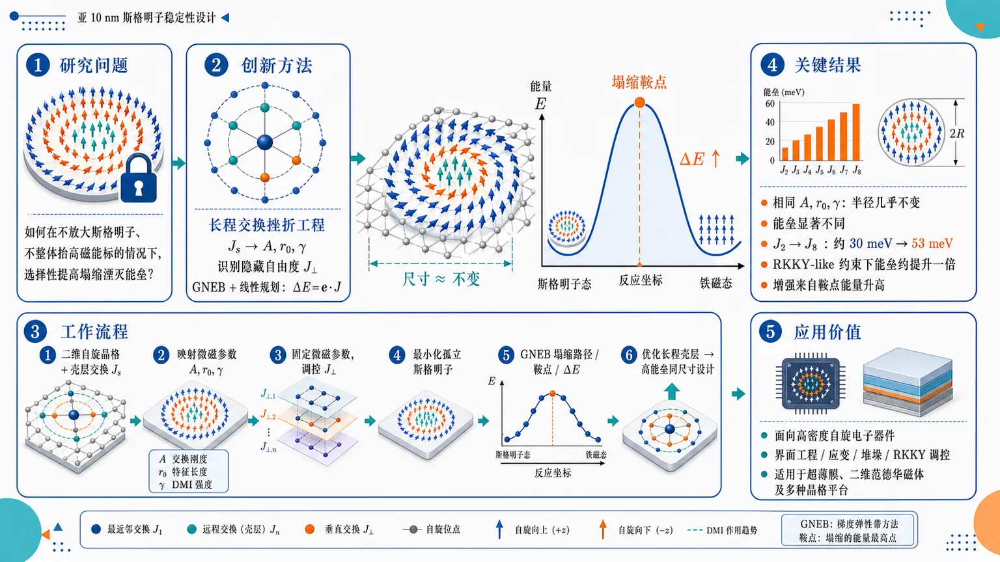
研究问题亚 10 nm 斯格明子需要同时“小尺寸”和“高热稳定性”，但传统微磁学认为湮灭能垒主要随斯格明子尺寸或交换刚度升高而增加；核心问题是：能否在不放大斯格明子、不整体抬高磁能标的情况下，选择性提高从斯格明子到铁磁态塌缩路径上的湮灭能垒。创新方法提出“长程交换挫折工程”：将离散原子交换参数 Jₛ 映射到连续微磁参数 A、r₀、γ，识别出微磁模型看不见的正交交换自由度 J⊥；利用 GNEB 计算塌缩最小能量路径，并把能垒写成 ΔE = e·J，通过受 RKKY 物理约束的线性规划优化长程壳层交换。Aha 点是：稳定斯格明子尺寸几乎由微磁参数决定，但湮灭能垒由鞍点纹理对长程非共线交换的敏感性决定。工作流程输入二维自旋晶格与各壳层交换 Jₛ → 映射得到 A、r₀、γ 等微磁参数 → 固定相同微磁参数并改变隐藏交换分量 J⊥ → 最小化孤立斯格明子 → 用 GNEB 计算斯格明子到铁磁态的最小能量路径、鞍点纹理和能垒 ΔE → 构造差分自旋结构向量 e → 在线性规划中优化长程交换壳层 → 输出更高能垒但尺寸基本不变的斯格明子设计方案。关键结果在相同 A、r₀、γ 下，不同原子交换实现会产生显著不同的湮灭能垒，而斯格明子半径几乎不变；将反铁磁挫折从近邻 J₂ 推向长程 J₈，可使能垒从约 30 meV 提高到 53 meV；在现实 RKKY-like 约束下，即使长程交换项较弱，也能相对短程模型将能垒提高约一倍。增强主要来自鞍点能量升高，而不是稳定斯格明子能量降低。应用价值为高密度自旋电子器件中的亚 10 nm 高稳定斯格明子提供材料设计路线：不依赖增大尺寸或增强整体交换刚度，而是通过界面工程、应变、堆垛和长程 RKKY 交换调控，选择性加固塌缩鞍点；适用于超薄膜、二维范德华磁体及方格、六角格、蜂窝格等多种晶格平台。第一部分：核心概览 (Overview)
长程交换挫折可在不增大斯格明子尺寸、不提高整体交换刚度能标的条件下显著提高湮灭能垒，打破传统微磁学中“稳定性随尺寸或交换刚度增长”的经验范式。通过连续模型—原子自旋晶格哈密顿量映射、GNEB 最小能量路径计算与交换参数线性规划优化，研究揭示能垒由微磁参数以外的原子尺度交换自由度控制，尤其由鞍点纹理对长程非共线性的敏感性决定，为亚 10 nm 高稳定斯格明子提供了新的材料设计路线。
---
第二部分：结构化快速回顾
《Beating micromagnetic limits on skyrmion stability by long-range frustration》（None，）
背景
斯格明子器件需要同时满足纳米尺度与高热稳定性。传统策略通常通过增强竞争相互作用或交换刚度提高湮灭能垒，但前者往往增大斯格明子尺寸，后者抬高整体磁能景观，增加写入和操控难度。
方法
建立四阶连续微磁模型与离散 Heisenberg 交换模型之间的映射，将原子交换参数 J 压缩为 A、r₀、γ 等微磁参数；使用 GNEB 计算斯格明子到铁磁态的最小能量路径与湮灭能垒；进一步构造受 RKKY 型物理约束的交换参数优化框架。
结果
在相同 A、r₀、γ 下，不同原子交换实现可产生显著不同的能垒。将反铁磁挫折从近邻壳层推向长程壳层，可使能垒从 30 meV 增至 53 meV。优化后，即使长程项很弱，也可使能垒相对短程模型约提升一倍。
讨论
能垒增强主要来自鞍点纹理而非稳定斯格明子本身。稳定斯格明子的半径主要由微磁参数决定，而鞍点的非共线结构能感知微磁展开无法捕捉的长程交换挫折。
局限
结论主要基于二维自旋晶格模型与数值优化；外加磁场、各向异性、DMI、偶极相互作用、温度涨落和真实材料缺陷未被系统纳入主模型。实验验证仍需结合自旋波谱和寿命测量。
结论
长程交换挫折提供了一条超越传统微磁极限的稳定性增强机制，可在固定尺寸和能标下选择性提高湮灭能垒，并适用于方格、六角格和蜂窝格等不同晶格几何。
---
第三部分：逐章节冷凝解析 (Section-by-Section Condensing)
Abstract
- Long-range frustration breaks the micromagnetic scaling paradigm
传统微磁学通常预期斯格明子稳定性随斯格明子尺寸或交换刚度增加而提高；核心突破是证明长程交换挫折可以在不增大尺寸、不提高磁能标的情况下提高塌缩能垒。直接证据为：*"Skyrmion stability is commonly assumed to scale with skyrmion size or exchange stiffness within micromagnetic models."* 以及 *"long-range exchange frustration can break this paradigm, enhancing the collapse energy barrier without increasing skyrmion size or magnetic energy scale."*
- Identical micromagnetic parameters can hide distinct atomistic barriers
连续微磁参数相同并不意味着湮灭能垒相同；不同的原子交换参数组合可对应同一组微磁参数，却产生不同的 ΔE。关键表述为：*"skyrmions with identical micromagnetic parameters can exhibit significantly different energy barriers, depending on their underlying atomistic exchange interactions."*
- Saddle-point textures encode missing atomistic information
能垒差异归因于鞍点纹理，其强非共线性对长程挫折敏感，而这些信息被微磁近似平均掉。原文明确指出：*"We attribute this behavior to saddle point textures, whose pronounced noncollinearity captures long-range frustration beyond the micromagnetic approximation."*
- Optimization predicts barrier doubling under realistic constraints
交换优化框架在物理现实条件下预测长程挫折可将能垒提高约一倍，潜在适用于超薄膜与范德华磁体。证据为：*"long-range frustration can double the energy barrier in physically realistic conditions, possibly valid for ultrathin films or van der Waals magnets."*
- Universality across lattice symmetries
机制不局限于特定晶格，在不同晶格对称性下成立，说明问题根源是微磁学的内禀限制。原文为：*"These results hold across different lattice symmetries, revealing an intrinsic limitation of micromagnetics and establishing long-range frustration engineering as a promising route toward highly stable nanoscale skyrmions."*
---
Topological spin textures play a central role in modern magnetism
- Skyrmions combine nanoscale size and functional controllability
磁斯格明子是实空间中具有旋涡状自旋结构的拓扑准粒子，兼具纳米尺度、热稳定性、电学操控/探测和超快光学控制潜力。核心描述为：*"magnetic skyrmions are topologically protected quasiparticles characterized by a whirling spin texture in real space."* 以及 *"Their nanoscale size... combined with good thermal stability, efficient electrical manipulation and detection... and ultrafast optical control... makes them particularly promising for next-generation spintronic devices."*
- Device relevance is controlled by annihilation barrier ΔE
应用所需稳定性由斯格明子态到铁磁态之间沿 MEP 的鞍点能垒 ΔE 决定。直接证据为：*"A key requirement for such applications is skyrmion stability, characterized by the annihilation energy barrier ΔE between the skyrmion state and the saddle point (SP) along the minimum energy path (MEP) to a ferromagnetic (FM) state."*
- Multiple interactions stabilize noncollinear textures
能垒来源于多种竞争相互作用，包括 DMI、偶极相互作用、高阶交换、挫折交换等，它们共同阻止自旋纹理塌缩到铁磁排列。原文表述为：*"This barrier originates from competing magnetic interactions, including the Dzyaloshinskii-Moriya interaction (DMI), dipolar interactions, higher-order exchange interactions, and frustrated exchange interactions."*
- Conventional strengthening of competing interactions creates a size–stability dilemma
增强竞争相互作用通常会增大斯格明子尺寸，因此出现“大斯格明子更稳定”的趋势；这与器件追求小尺寸相冲突。证据为：*"A conventional approach is to strengthen competing interactions within a suitable range. However, this typically increases skyrmion size..."* 以及 *"larger skyrmions exhibit higher stability."*
- Increasing exchange stiffness raises all magnetic energies
通过更强交换提高 A 可在尺寸变化不大的情况下提高能垒，但会整体抬高能量景观，使写入、产生和操控更困难。原文为：*"An alternative strategy is to employ materials with stronger exchange, which increases the overall micromagnetic energy scale and thereby enhances ΔE without significantly changing skyrmion size."* 以及 *"it globally elevates the magnetic energy landscape, making skyrmions more difficult to generate and manipulate under realistic external stimuli."*
- Exchange frustration can originate from RKKY and extend over long range
离散自旋晶格中交换相互作用由各壳层 Jₛ 描述，哈密顿量为
ℋ = −∑ₛ Jₛ ∑⟨i,j⟩ₛ mᵢ·mⱼ。长程挫折可由 RKKY 机制产生。原文为：*"On a discrete lattice of spins mi, exchange interactions are described by the isotropic Heisenberg model"*，并指出 *"exchange frustration can emerge from the Ruderman–Kittel–Kasuya–Yosida (RKKY) mechanism, giving rise to long-range (LR) exchange interactions."*
- Prior work mostly stayed in short-range J₁–J₂ or J₁–J₂–J₃ models
既有研究主要采用少数壳层的短程模型，限制了对长程交换自由度的认识。证据为：*"previous studies were predominantly confined to simplified short-range (SR) models limited to a few exchange shells (e.g., J1−J2 or J1−J2−J3)."*
- Core research target is sub-10 nm frustrated 2D magnets
研究对象锁定受挫二维磁体中的亚 10 nm 斯格明子稳定性边界。原文为：*"we investigate the fundamental boundaries that limit the stability of sub-10 nm skyrmions in frustrated 2D magnets."*
---
Continuum-discrete mapping
- Fourth-order continuum model captures frustrated-exchange micromagnetics
二维连续模型采用磁化强度 m(r̃) 的四阶梯度展开，能量包含一阶梯度项和两类四阶项。原文为：*"In two dimensions, the energy can be approximated in terms of a fourth-order expansion of the magnetization"*。模型形式中包含 ∑α(∂m/∂r̃α)²、由 1−γ 加权的二阶导差平方项，以及由 γ 加权的混合二阶导项。
- Reduced parameters r₀ and γ are determined by A, B, C
无量纲长度 r̃ = r/r₀，无量纲能量 ℰ = E/(Ar₀)；关键参数为
r₀ = √[(B+C)/A]，γ = C/(B+C)。原文为：*"The dimensionless energy ℰ=E/(Ar0) is parameterized by the reduced constants r0=√((B+C)/A), γ=C/(B+C)."*
- Discrete exchange vector J maps linearly onto A, B, C
A = a·J、B = b·J、C = c·J，其中 a、b、c ∈ ℝ^S 由晶格几何决定。证据为：*"which are determined by the discrete exchange vector J via A=a·J, B=b·J and C=c·J."* 以及 *"The coefficients a,b,c∈RS depend directly on the lattice geometry."*
- High-dimensional exchange space collapses to three micromagnetic parameters
离散交换空间维度为 S，连续模型只保留 (γ, r₀, A)。这意味着许多不同 J 可能对应相同微磁参数。直接引文为：*"This reduces the high-dimensional space of discrete exchange constants to the micromagnetic parameters (γ,r0,A), where A denotes exchange stiffness, r0 sets the intrinsic length scale, and γ controls the anisotropy of the fourth-order terms."*
---
Skyrmion size vs. stability
- C₆ lattices fix γ = 0.8
六角格与蜂窝格的连续映射强制 C = 4B，因此 γ = 0.8，无法自由研究 γ 的作用。原文为：*"In C6 lattices (hexagonal and honeycomb), the continuum mapping enforces C=4B, fixing γ=0.8."*
- Square lattice provides tunable γ and r₀ parameter space
方格用于探索 γ ∈ [0,1] 与 r₀ ∈ [0,5]。最近邻交换固定为 J₁ = 10 meV，以保持最近邻耦合常数。证据为：*"we therefore start from a square lattice and identify γ∈[0,1] and r0∈[0,5] as the region of primary interest based on RKKY-type exchange interaction"*，以及 *"Throughout this work, J1=10 meV is fixed."*
- J₁–J₂–J₃ model uniquely maps γ and r₀ to J₂ and J₃
首先只考虑到 J₃，使 (γ,r₀) → (J₂,J₃) 的映射被确定。原文为：*"We first include exchange interactions up to J3 so that the mapping (γ,r0)→(J2,J3) is determined."*
- GNEB computes MEP and annihilation barrier
对每组 γ、r₀ 对应的 J，先最小化孤立斯格明子，再用 GNEB 计算最小能量路径和 ΔE，计算工具为 spinaker code。证据为：*"we minimize isolated skyrmions with respect to the Hamiltonian in Eq. (1) and compute the MEP and corresponding ΔE using GNEB... via the spinaker code."*
- Skyrmion and saddle-point radii are defined by distinct contours
斯格明子半径 RSk 定义为从中心到 m_z = 0 等值线的距离；鞍点半径 RSP 定义为 m_z = √2/2 等值线，对应核心与铁磁背景之间自旋转角的一半。原文为：*"We measure the size of skyrmions by radius RSk, defined as the distance from the skyrmion center to the contour line with mz=0."* 以及 *"the SP radius RSP is determined from the contour with mz=√2/2."*
- r₀ increases both size and barrier, with barrier saturation beyond r₀ ≳ 3
RSk 与 ΔE 随 r₀ 单调上升，但 ΔE 在 r₀ ≳ 3 后逐渐饱和；过小 r₀ 会导致斯格明子失去亚稳性并塌缩到铁磁态。证据为：*"RSk and ΔE monotonically rise with r0, where ΔE shows a gradual saturation for r0≳3."* 以及 *"For sufficiently small values of r0, the skyrmion loses metastability and collapses into the FM state."*
- γ controls skyrmion shape anisotropy
γ = 0 时形状近似方形，γ = 1 时转为菱形，γ = 0.8 时接近径向对称。原文为：*"the shape evolves from a square-like form at γ=0 to a diamond-like form at γ=1, crossing the radially symmetric skyrmion at γ=0.8."*
- Neglecting C misses shape deformations
因 γ ∝ C，忽略 C 的研究无法捕捉这些形变。证据为：*"Because γ∝C, these deformations are thus absent in studies that neglect C."*
- A does not produce simple linear barrier scaling once the SP texture changes
连续模型中 A 应设置整体能标，理论上 ΔE 应近似线性随 A 增长，例如 Belavin–Polyakov 估计 ΔE = 4πA − ESk。但在 r₀ = 3 约束下，RSk 几乎不变，ΔE 对 A 呈明显非线性。原文为：*"The exchange stiffness A sets the overall energy scale in the continuum model. Consequently, a linear scaling of ΔE with A is expected"*，但实际为 *"ΔE exhibits a pronounced non-linear dependence on A while RSk remains nearly constant."*
- Nonlinearity originates from saddle-point radius reduction
ΔE 的非线性来自鞍点自旋纹理变化，并伴随 RSP 显著减小。证据为：*"The non-linear behavior of ΔE can be attributed to the variation in the spin texture of the SP, which is accompanied by a marked reduction in RSP."*
- J₄ reveals hidden atomistic degrees of freedom at fixed A and r₀
引入 J₄ 并固定 A = 0.5 meV 后，(r₀,A) → (J₂,J₃,J₄) 变为欠定映射；改变 J₄ 不影响 RSk 和 RSP，却显著改变 ΔE。原文为：*"we introduce J4 while keeping A=0.5 meV."*、*"This extra degree of freedom leads to an under-determined transformation"*，以及 *"a variation of J4 has no influence on either RSk nor RSP... In contrast, ΔE exhibits a pronounced variation."*
- J decomposes into micromagnetic and invisible components
交换向量可分解为 J = J∥ + J⊥；J∥ ∈ span(a,b) 决定微磁参数，J⊥ 与 a、b 正交，因此不改变连续描述。证据为：*"we decompose J=J∥+J⊥, where J∥∈span(a,b) sets the micromagnetic parameters, and J⊥ is orthogonal to both a and b, thus leaving the continuum description unchanged."*
- Size is nearly micromagnetic; barrier is atomistically nonunique
关键关系为 R ≈ R(r₀,A)，但 ΔE = ΔE(r₀,A,J⊥)。这直接说明固定尺寸下仍可通过 J⊥ 提升能垒。原文为：*"while the radius RSk is nearly determined by the parameters A and r0, ΔE has an additional dependence on J⊥."* 以及公式 *"R≈R(r0,A), ΔE=ΔE(r0,A,J⊥)."*
---
Long-range frustration
- Increasing barrier correlates with frustration moving from J₂ to J₃
在 J₄ 扫描中，能垒提高伴随负交换主导项从 J₂ 转向 J₃，提示挫折距离是关键控制量。原文为：*"the increasing ΔE is accompanied by a shift of the negative sign from J2 to J3."* 以及 *"This suggests that the range of frustration may be a key factor controlling ΔE."*
- Minimal model isolates frustration range
构造最小模型：固定 J₁ = 10 meV，只允许一个负交换常数 J↑↓ < 0，其壳层索引从 J₂ 扫到 J₉；再加入正的 J₁₀ 保证 (r₀,A) → (J↑↓,J₁₀) 映射确定。证据为：*"we construct a minimal model with J1=10 meV and a single negative constant with variable shell index from J2 to J9 (AFM index) J↑↓<0"*，以及 *"A positive J10 is introduced to ensure a determined mapping."*
- Moving AFM frustration outward strongly enhances ΔE
将反铁磁壳层从 J₂ 推到 J₈，能垒从 30 meV 增至 53 meV；到 J₉ 时因 J₁₀ 的铁磁贡献增加而略降。直接证据为：*"the shift from J1−J2 to J1−J8 enhances ΔE from 30 to 53 meV, while at J1−J9, ΔE is slightly reduced due to increasing FM contributions from J10."*
- Skyrmion energy relative to FM remains invariant
最小与最大能垒案例的 MEP 显示，从短程到长程挫折，ESk − EFM 不变，因此能垒提升不是由斯格明子态本身能量降低造成。原文为：*"this transformation leaves the energy with respect to the FM invariant."* 图注亦指出：*"showing the increase in ΔE without changing ESk−EFM from SR to LR frustration."*
- Barrier enhancement must come from saddle-point modulation
由于斯格明子相对铁磁能量不变，剩余可解释因素只有 SP 纹理与能量改变。原文为：*"Since this leaves only modulations of the SP as a possible source of the enhancement."*
- SP change is atomistic, not simple geometric rescaling
拓扑荷密度和能量密度差异显示 RSP 增加不是简单放大，而是原子尺度纹理变化。证据为：*"The deviations indicate that the increase in RSP is not a simple rescaling but rather an atomistic variation."*
- J⊥ controls saddle-point texture and energy
鞍点的结构和能量可被 J⊥ 调节，从而改变 ΔE。原文为：*"SP’s texture and energy can be affected by J⊥, which in turn changes ΔE."*
---
Energy barrier optimization
- Barrier is linear in exchange vector for a given MEP
基于 Heisenberg 哈密顿量，能垒可写为 ΔE = e·J；e 是鞍点和斯格明子之间各壳层自旋相关差的向量。原文为：*"Eq. (1) allows us to linearize ΔE as ΔE=e·J, where e is the differential spin-structure vector."* 具体分量为
eₛ = ∑⟨i,j⟩ₛ [(mᵢ·mⱼ)|SP − (mᵢ·mⱼ)|Sk]。
- Optimization is constrained by RKKY-like physical magnitudes
为避免非物理交换参数，J 被限制在现实 RKKY-like 大小范围内；可行集合从仿射子空间变为有界集合，优化转化为线性规划。证据为：*"To restrict the search to physically realistic interactions, J is constrained to realistic RKKY-like magnitudes."* 以及 *"the optimization reduces to a standard linear programming problem."*
- Self-consistent loop couples LP and GNEB
优化流程从初始 MEP₀ 开始，线性规划更新 J，随后用 GNEB 重新计算 MEP 并更新 e，直至自洽收敛，得到 Jopt、eopt、ΔEmax。原文为：*"A new MEP is then obtained from GNEB and used to update e."* 以及 *"solved self-consistently until convergence, yielding the optimized exchange interaction Jopt, eopt and the corresponding maximum energy barrier ΔEmax."*
- Parameter scan covers r₀ ∈ [1,5] and A ∈ [0.1,1]
优化框架应用于 r₀ ∈ [1,5]、A ∈ [0.1,1] 的微磁参数区间。证据为：*"We use this framework for skyrmions under micromagnetic parameters with r0∈[1,5] and A∈[0.1,1]."*
- Longer shell distances contribute more strongly to barrier optimization
为去除配位数 nₛ 的平凡影响，使用 −eₛopt/nₛ；其大小随壳层距离 d 增加而增大，说明长程项捕捉更显著自旋旋转。原文为：*"To eliminate the trivial enhancement associated with the coordination number ns, we plot the normalized components −esopt/ns."* 以及 *"The magnitude of the components rises with shell distance d, which we attribute to LR terms capturing more pronounced spin rotations in spin textures."*
- Differential spin-structure follows a quadratic shell-distance law
数值结果可由 e/n = k(d−1)² 描述，其中 k 依赖 (r₀,A)。原文为：*"This dependence is well described by e/n=k(d−1)², where k depends on (r0,A)."*
- k decreases with r₀ and increases then saturates with A
较大斯格明子中相邻自旋偏转更平缓，因此 r₀ 增大使 k 减小；A 增大使 k 增大并逐渐饱和，解释图 2(b) 中非线性能垒依赖。证据为：*"Increasing r0 reduces k due to the more gradual deflection between neighboring spins for larger skyrmions."* 以及 *"k increases with A and gradually saturates, accounting for the nonlinear barrier dependence."*
- Approximate maximum barrier formula includes lattice coordination and shell distance
最大能垒近似为
ΔEmax ≈ k∑ₛ nₛ(dₛ−d₁)²Jₛopt，其中 k < 0，nₛ 为配位数，dₛ 为第 s 壳层距离。原文为：*"The maximum energy barrier can therefore be approximated as ΔEmax≈k∑s ns(ds−d1)² Jsopt, k=k(r0,A)<0."*
- Micromagnetic parameters alone are insufficient, but atomistic J restores predictability
单独的 A、r₀、γ 不能唯一确定 ΔE；加入原子尺度 Jₛ 后可以建立一般能垒描述。原文为：*"the micromagnetic parameters alone are insufficient to uniquely determine ΔE. However, by incorporating the atomic-scale realization Js, a general description of the barrier can still be established."*
- e⊥ defines the optimal invisible direction for barrier enhancement
将 e = e∥ + e⊥ 分解到 span(a,b) 的平行与垂直方向。若要保持微磁参数不变并提高能垒，需满足 e∥·δJ = 0、e⊥·δJ > 0。证据为：*"Variations δJ that increase ΔE while preserving micromagnetic parameters, thus have to fulfill e∥·δJ=0, e⊥·δJ>0."*
- Optimal perpendicular direction is nearly lattice-determined
不同 r₀、A 下 e 会变化，但归一化后的 e⊥ 几乎不变，因为 k(r₀,A) 不改变方向；因此最优方向主要由晶格几何决定。原文为：*"While e varies with micromagnetic parameters, e⊥ is nearly unchanged, since the factor k(r0,A) in Eq. (6) does not affect its direction."*
- FM shells s ≤ 5 and AFM shells J₆–J₉ have opposite optimal roles
s ≤ 5 中 e⊥ 为正，表示增强这些壳层的铁磁交换有利于提高能垒；J₆–J₉ 中为负，表示增强这些长程壳层的反铁磁交换更有利。证据为：*"Positive values for s≤5 suggest that strengthening FM exchange in those shells enhances ΔE, whereas negative values suggest stronger AFM exchange for J6−J9."*
- δJ affects saddle-point energy but not skyrmion energy
对斯格明子和鞍点能量投影的比较显示，优化方向只改变 SP 能量，而不改变斯格明子能量，因此可在保持亚稳态斯格明子的同时提高能垒。原文为：*"we find that it affects only the SP energy and leaves the skyrmion energy unchanged."*
- Square and honeycomb lattices show the same long-range AFM signature
方格与蜂窝格中，e⊥ 的负分量也稳定出现在 J₆–J₉ 壳层，表明长程挫折增强稳定性具有晶格普适性。证据为：*"In both cases, the negative components of e⊥ consistently reside in the J6–J9 shells."* 以及 *"LR frustration is a generic and effective mechanism for enhancing skyrmion stability across different lattice geometries."*
- Physical constraints prevent perfect alignment but still allow doubling
现实约束下 Jopt 不能完全沿 e⊥ 方向，但在短程挫折基础上加入弱长程项仍可将 ΔE 提高约两倍。原文为：*"due to physical constraints, Jopt cannot fully align with the direction of e⊥."* 以及 *"Even weak LR terms introduced on top of SR frustration can enhance ΔE by approximately a factor of two compared to the SR case."*
- Larger r₀ shifts optimal AFM weight outward
随 r₀ 增大，优化交换中的反铁磁权重逐步移向更远壳层，说明更大斯格明子中长程挫折作用更强。证据为：*"the optimized interactions exhibit a progressive shift of the AFM weight toward more distant shells with increasing r0."*
- Materials relevance includes ultrathin films and 2D van der Waals magnets
长程交换天然存在于超薄膜和二维范德华磁体中；即便只有 J₁ 的 1–2%，也可稳定多种拓扑自旋纹理。原文为：*"LR exchange interactions are naturally present in a wide range of systems, including ultrathin films and 2D van der Waals magnets."* 以及 *"LR frustration as small as 1–2% of J1."*
- Experimental route combines spin-wave spectroscopy and lifetime measurements
可通过自旋波谱确定交换参数，再结合斯格明子寿命测量检验长程挫折对能垒的影响。证据为：*"experimental studies of LR frustration, for instance, through combined spin-wave spectroscopy and skyrmion lifetime measurements."*
- Engineering knobs include interface, strain, and stacking
长程交换可通过界面工程、应变和堆垛设计调控，具有器件设计可行性。原文为：*"LR exchange interactions can be tuned via interface engineering, strain, and stacking design."*
---
ACKNOWLEDGMENTS
- Funding and computational resources
研究获得中国国家自然科学基金 Grant No.11804301、浙江省自然科学基金 LMS25A040001、杭州市自然科学基金 2025SZRJJ0830、法国 PEPR SPIN ANR-22-EXSP-0009、NanoX ANR-17-EURE-0009 支持，并使用 CALMIP 高性能计算资源 2024/2026-[P21008]。原文为：*"This work is supported by the National Natural Science Foundation of China (Grant No.11804301)"*，以及 *"This work was performed using HPC resources from CALMIP (Grant No. 2024/2026-[P21008])."*
- Intellectual input
研究感谢 F. N. Rybakov 与 N. S. Kiselev 的讨论。原文为：*"We thank F. N. Rybakov and N. S. Kiselev for valuable discussions."*
---
第四部分：深度理解与语言支持 (Understanding & Nuance)
1. 术语解析
- Micromagnetic limits
指连续微磁模型在描述原子尺度交换自由度时的边界。这里的 “limits” 不是数值误差，而是模型降维造成的信息丢失：大量不同的 Jₛ 被压缩成少数 A、r₀、γ，导致能垒无法被唯一预测。
- Long-range frustration
“Frustration” 指交换相互作用之间无法同时满足最低能量取向；“long-range” 强调反铁磁或竞争性交换不只存在于 J₂、J₃ 等近邻壳层，而可延伸到 J₆–J₉ 等更远壳层。这里的关键不是“强交换”，而是“远距离竞争项对鞍点非共线纹理的选择性惩罚”。
- Saddle point texture
鞍点不是一个抽象能量点，而是最小能量路径上能量最高的具体自旋构型。其“texture” 指空间自旋排列。该构型通常比稳定斯格明子更尖锐、更非共线，因此比稳定态更敏感于长程交换壳层。
- Differential spin-structure vector
eₛ 衡量第 s 个邻居壳层中，鞍点与斯格明子之间的自旋点积差异。它把“纹理差异”转化成“交换参数对能垒的线性响应”。若某壳层 eₛ 很大，则该壳层交换对能垒影响大。
- Affine subspace
固定 A、r₀ 后，满足微磁约束的所有 J 构成一个仿射子空间。也就是说，连续模型只固定了某些线性组合，剩余正交方向 J⊥ 仍可自由变化。
2. 疑难查证
- 为什么相同微磁参数会有不同能垒？
微磁模型只保留长波长信息。对于缓慢变化的稳定斯格明子，四阶展开可能足够描述尺寸和形状；但塌缩路径上的鞍点具有强局域非共线性，包含更高波矢、更短尺度的信息。不同 Jₛ 虽然给出相同 A、r₀、γ，但对这些高波矢成分的能量惩罚不同，因此 RSk 基本不变而 ΔE 可显著变化。
- 为什么长程挫折主要抬高鞍点而非斯格明子？
稳定斯格明子纹理较平滑，相隔较远壳层的自旋相对角变化较可预测；鞍点更尖锐，核心附近存在更强的非共线局域结构。长程反铁磁项会更有效地“看见”这些复杂角度关系，从而提高鞍点能量。能垒 ΔE = ESP − ESk 因此增大。
- 为什么提高 A 不是理想方案？
提高 A 类似整体放大磁能标，会让能垒变高，但也会让成核、写入、移动和删除都更困难。长程挫折的优势在于更选择性地抬高鞍点，而不是整体抬升所有状态能量。
- 为什么 e⊥ 重要？
e∥ 对应会改变微磁参数的方向，通常会改变尺寸或整体能标；e⊥ 对应微磁不可见方向，可在保持 A、r₀ 不变时改变能垒。它是“固定尺寸增强稳定性”的数学表达。
---
第五部分：创新评估与关联 (Synthesis & Novelty)
1. 创新性判断
- 从“尺寸/刚度决定稳定性”转向“鞍点原子结构决定稳定性”
近年研究多强调斯格明子尺寸、DMI、各向异性、交换刚度、高阶交换对寿命的影响；该工作将注意力转向相同微磁参数下的原子交换非唯一性，指出能垒的关键自由度隐藏在 J⊥ 中。
- 解决了小尺寸与高稳定性之间的经典矛盾
传统策略提高能垒往往伴随尺寸增大或能标整体提高。长程挫折可在 RSk 基本固定时提高 ΔE，直接针对亚 10 nm 器件化斯格明子的核心瓶颈。
- 把长程 RKKY 交换从“弱修正”提升为“稳定性设计变量”
过去长程交换常被视为次要项；这里显示即使长程项较弱，也能通过对鞍点的选择性作用使能垒近似翻倍。这改变了超薄膜和范德华磁体中交换参数工程的优先级。
- 建立了可计算、可优化的交换设计框架
ΔE = e·J 将复杂的拓扑塌缩问题转化为受物理约束的线性规划，并通过 GNEB 自洽更新。该框架不仅解释机制，还能预测最优壳层分布，如 J₆–J₉ 反铁磁权重。
- 证明跨晶格几何的普适性
方格、六角格、蜂窝格中均出现长程壳层负分量增强能垒的趋势，说明该机制并非某一晶格偶然结果，而是离散交换与鞍点非共线纹理耦合的普遍效应。
-
18
📊 含图深析
📄 摘要：发布 ElemeNet 通用分子机器学习软件包，整合先进模型、分子表示和不确定性量化，支持更宽周期表元素组成与多类性质/数据集训练。目标是打破现有高性能模型分散在独立代码库、元素覆盖有限的限制。
💡 亮点：ElemeNet 将分子表示、先进模型和不确定性量化统一到同一软件框架。其周期表覆盖范围更宽，有利于跨化学空间的性质预测和模型基准比较。
📖 展开分析 + 配图
研究问题现有分子机器学习工具像分散的“孤岛代码库”：先进模型难以统一调用，常偏向有机小分子，缺乏对金属、无机、配位、生物体系以及电荷/自旋等复杂电子态的系统支持。创新方法ElemeNet 将元素 1–100 的分子表征、多尺度预测、E(3) 等变模型、Transformer、经典 2D 模型和内置不确定性量化整合进同一软件平台；关键 Aha 点是新增 moiety-level 片段尺度预测，并显式用 charge 与 spin states 条件化复杂化学体系。工作流程输入包含分子结构、元素组成、可选电荷与自旋状态；系统生成覆盖周期表 1–100 号元素的表征，按任务选择原子、键、片段或分子尺度标签，调用 2D、Transformer 或 E(3) 等变模型训练，输出性质预测与确定性/统计性不确定性估计；完整流程通过简洁命令行接口执行。关键结果在有机、无机、配位和生物化学代表性数据集上进行基准测试，摘要声称相较文献基线达到 competitive 与 SOTA 性能，并能扩展到百万级分子规模；但未提供具体指标、数据集名称或误差数值。应用价值为非机器学习专家提供一个可直接使用的分子深度学习工作台，使实验化学、催化、材料、生物化学和物理科学研究者能在复杂元素空间中进行性质预测、可信度评估和大规模候选分子筛选。可用材料仅包含 arXiv 题录页与摘要；原始正文、章节标题、图表、实验表格、消融实验、超参数、数据集划分、统计检验与数值结果未提供。因此，逐章节冷凝只能覆盖可验证的 Abstract 与题录信息，不能伪造 Introduction、Methods、Results 等正文细节。
---
第一部分：核心概览 (Overview)
ElemeNet 是面向分子机器学习的统一软件包，核心贡献在于把 元素 1–100 的分子表征、多尺度性质预测、E(3)-等变模型、Transformer 架构、2D 经典模型 与 内置不确定性量化整合到同一工作流中。其定位不是单一模型创新，而是跨有机、无机、配位、生物体系的通用分子 ML 基础设施扩展。
---
第二部分：结构化快速回顾
《ElemeNet: Multiscale Molecular Machine Learning with Uncertainty Quantification Across the Periodic Table》（None，）
背景
现有分子机器学习工具虽然已在化学性质预测中取得进展，但先进模型常被限制在彼此独立的代码库中，并且对元素种类与复杂化学体系支持不足，尤其难以覆盖 有机金属、无机、配位与生物体系。
方法
ElemeNet 构建了统一的 general-purpose software package，支持元素 1–100 的分子表征，覆盖 atom-level、bond-level、molecule-level 与新增的 moiety-level predictions。模型层面支持 E(3)-equivariant architectures、transformer architectures 与经典 2D models，并允许使用 charge 与 spin states 作为条件信息。
结果
基准测试覆盖有机、无机、配位与生物化学代表性数据集。摘要声称性能达到与文献基线相比的 competitive and SOTA performance，并且可扩展到 millions of molecules。
讨论
ElemeNet 的主要价值在于降低非专家使用现代分子深度学习的门槛，通过简洁命令行接口将复杂模型训练、不确定性量化与多化学域支持封装为可用工作流。
局限
可用摘要未给出具体数据集名称、训练/验证/测试划分、模型超参数、误差数值、置信区间、运行成本、硬件条件或失败案例，因此无法判断其 SOTA 声称的统计强度、泛化边界与实际可复现性。
结论
ElemeNet 代表一种软件生态层面的整合型贡献：把跨周期表元素覆盖、多尺度预测、多模型架构与不确定性量化纳入同一平台，目标是服务广泛化学与物理科学应用。
---
第三部分：逐章节冷凝解析 (Section-by-Section Condensing)
Abstract
#### Unified software infrastructure for molecular machine learning
ElemeNet 的首要贡献是提供统一的分子机器学习软件包，解决先进模型分散在独立代码库中的问题。摘要明确指出，深度学习已经推动化学性质预测，但 SOTA 工具生态仍然割裂，且化学物种覆盖不充分：*"Advances in deep learning architectures and representations have enabled ML-driven chemical property prediction, but state-of-the-art (SOTA) models have remained largely confined to independent codebases and lack support for diverse chemical species."*
这一表述将问题定位在 software fragmentation 与 chemical coverage limitation，即模型能力与可用性之间存在断层。
#### General-purpose package for diverse molecular datasets
ElemeNet 被定义为面向多类性质和多类数据集的通用软件包，而非单一任务模型。摘要给出核心定位：*"This work introduces ElemeNet, a unified, general-purpose software package for molecular machine learning."*
其用途包括训练先进 ML 模型，并扩大可处理元素组成范围：*"The ElemeNet software package enables the training of advanced ML models for diverse properties and datasets with an enlarged range of elemental compositions."*
这里的关键是 general-purpose 与 enlarged range of elemental compositions，说明目标覆盖面超出典型有机小分子任务。
#### Periodic-table-scale elemental support
ElemeNet 的分子表征支持 元素 1–100，这是摘要中最具体、最重要的技术范围数字。相关表述为：*"We define molecular representations compatible with elements 1-100, supporting diverse organometallic and biological systems in addition to organic chemistry already well-served by the Chemprop ML toolkit."*
这一点直接指向现有工具如 Chemprop 的局限：Chemprop 已较好服务 organic chemistry，但对 organometallic 与更广泛元素空间支持不足。ElemeNet 的创新目标是跨越有机小分子中心范式，进入 全周期表近似覆盖 的分子学习场景。
#### Support for organometallic and biological chemistry
ElemeNet 明确覆盖 organometallic systems 与 biological systems。摘要使用了并列结构：*"supporting diverse organometallic and biological systems in addition to organic chemistry already well-served by the Chemprop ML toolkit."*
这意味着 ElemeNet 不仅处理 C/H/N/O/F/Cl/Br/I 等常见有机元素，也面向含金属中心、配位结构、蛋白/生物相关化学环境等更复杂体系。学术意义在于把分子 ML 从“有机小分子性质预测”扩展到 inorganic/coordination/biological chemistry 的交叉场景。
#### Multiscale prediction levels including moieties
ElemeNet 支持多尺度预测，包括常见的 atom-level、bond-level、molecule-level，并新增 moiety predictions。摘要写道：*"As well as more common atom-, bond-, and molecule-level predictions, we introduce moiety predictions."*
Moiety-level prediction 是重要细节，因为许多化学性质并不自然属于单个原子、单条键或整个分子，而是属于官能团、配位片段、活性位点、残基或局部结构单元。该设计增强了对真实化学问题的表达能力。
#### Conditioning on charge and spin states
ElemeNet 原生支持将 charge 与 spin states 作为可选条件输入。摘要表述为：*"We also natively define optional conditioning on charge and spin states."*
这一点对无机、配位和有机金属化学尤其关键。相同核骨架在不同 oxidation state、total charge、spin multiplicity 下可能具有截然不同的电子结构和性质。将电荷与自旋显式条件化，有助于避免模型把电子态差异错误压缩进结构噪声。
#### Integration of E(3)-equivariant, transformer, and 2D models
ElemeNet 支持多类模型架构，包括先进的 E(3)-equivariant architectures、transformer architectures 与经典 2D models。摘要写道：*"Advanced E(3)-equivariant and transformer architectures are supported, as well as classical 2D models."*
这里的关键在于软件层面的模型统一：
- E(3)-equivariant models 适合三维几何、构象与量子化学性质；
- Transformer architectures 适合长程关系与全局上下文建模；
- 2D models 适合 SMILES/图结构、低成本筛选与大规模数据集。
三类范式的并存意味着 ElemeNet 不是押注单一表示，而是形成可切换的模型生态。
#### Built-in uncertainty quantification
ElemeNet 的所有模型类别均包含内置不确定性量化，覆盖确定性和统计性指标。摘要给出明确表述：*"with all classes including built-in uncertainty quantification through deterministic and statistical measures."*
这说明 uncertainty quantification, UQ 不是外部附加工具，而是模型类的一部分。其潜在价值包括：识别分布外样本、辅助主动学习、提高高风险化学预测的可信度、帮助实验优先级排序。
#### Broad benchmarking across chemical domains
ElemeNet 在有机、无机、配位与生物化学代表性数据集上进行基准测试。摘要表述为：*"We benchmark our protocols for ML model training against representative datasets from organic, inorganic, coordination, and biological chemistry."*
这说明验证范围覆盖四类化学域：
- Organic chemistry
- Inorganic chemistry
- Coordination chemistry
- Biological chemistry
但摘要没有提供具体数据集名称、样本量、误差指标、基线模型名称或显著性检验结果，因此无法独立确认每一类任务的性能幅度。
#### Competitive and SOTA performance claims
ElemeNet 声称相对于文献基线达到竞争性和 SOTA 水平。摘要写道：*"achieving competitive and SOTA performance relative to literature baselines and favorable scaling to millions of molecules."*
其中两个结果维度较重要：
- Accuracy/performance：与文献基线相比具有竞争力或达到 SOTA；
- Scalability：能够扩展至 millions of molecules。
不过摘要未提供 RMSE、MAE、AUROC、R²、calibration error、negative log-likelihood 等具体指标，也未给出“millions”的确切数量与硬件成本。
#### Concise command-line workflow for accessibility
ElemeNet 的工作流通过简洁命令行接口暴露，目标是降低非专家门槛。摘要表述为：*"The entire workflow is exposed through a concise command-line interface, lowering the barrier to entry for non-expert users."*
这一点体现软件工程层面的贡献：将模型训练、数据处理、架构选择、不确定性估计等复杂流程封装为 CLI workflow，降低非计算背景研究者使用深度学习的技术成本。
#### Intended impact across chemical and physical sciences
ElemeNet 的预期影响是赋能非计算研究者在化学与物理科学中使用现代深度学习。摘要最后写道：*"We anticipate ElemeNet will empower non-computational researchers to leverage modern deep learning methods across the chemical and physical sciences."*
这一定位强调 democratization of molecular ML，即把先进模型能力从机器学习专家社区扩展到实验化学、材料、催化、生物物理等更广泛用户群体。
---
Bibliographic metadata
#### Submission and identifier
arXiv 编号为 arXiv:2606.30961，类别为 physics.chem-ph，并交叉关联 cs.LG。题录信息显示：*"arXiv:2606.30961 (physics) [Submitted on 29 Jun 2026]"*。
这表明该工作定位在 Chemical Physics 与 Machine Learning 的交叉区域。
#### Authorship and institutional context
作者列表包含 Jacob W. Toney、Samir Darouich、Yiran Wang、Aaron G. Garrison、Johannes Kästner、Heather J. Kulik。题录给出：*"Authors: Jacob W. Toney , Samir Darouich , Yiran Wang , Aaron G. Garrison , Johannes Kästner , Heather J. Kulik"*。
Kulik 与 Kästner 相关研究背景通常涉及计算化学、机器学习势能面、反应建模与分子性质预测，该作者组合暗示 ElemeNet 可能服务于计算化学与化学 ML 工具链整合。
#### Document status
版本记录显示为首个 arXiv 版本：*"[v1] Mon, 29 Jun 2026 22:38:09 UTC (5,935 KB)"*。
当前可见信息为预印本状态，尚未显示期刊同行评议信息、正式卷期页码或最终 DOI 注册完成状态。题录中 DOI 状态为：*"arXiv-issued DOI via DataCite (pending registration)"*。
---
第四部分：深度理解与语言支持 (Understanding & Nuance)
1. 术语解析
#### State-of-the-art (SOTA)
SOTA 指某一任务或基准上的当前最佳或近最佳性能。语境中，*"state-of-the-art (SOTA) models have remained largely confined to independent codebases"* 不是单纯说模型精度高，而是强调这些先进模型分散在不同实现中，难以统一使用、比较和扩展。
微妙差别：SOTA model 不等于 robust software tool。一个模型可能在论文基准上领先，但代码脆弱、数据格式窄、元素覆盖少，仍不适合广泛化学应用。
#### E(3)-equivariant
E(3) 指三维欧几里得群，包括平移、旋转和反射。E(3)-equivariant model 表示模型输出会以物理一致方式随输入几何变换而变换。
在分子建模中，能量通常应对旋转和平移不变，力则应随旋转等变。摘要中的 *"Advanced E(3)-equivariant ... architectures are supported"* 表明 ElemeNet 支持利用三维几何对称性的现代神经网络架构。
#### Moiety predictions
Moiety 通常指分子中的局部化学片段，例如官能团、配位片段、残基、金属中心周围局域环境或反应活性片段。
*"we introduce moiety predictions"* 的微妙意义在于，预测目标不再局限于原子、键或整分子。例如催化剂中某个配体片段的贡献、蛋白中某个残基环境的性质、金属配位核心的局部反应性，都可以被视作 moiety-level target。
#### Conditioning on charge and spin states
Conditioning 指模型预测时显式接收额外条件变量。这里的条件变量是 charge 与 spin states。
*"optional conditioning on charge and spin states"* 的含义不是简单把电荷和自旋当作标签，而是允许模型在相同结构输入下区分不同电子态。对过渡金属配合物尤其重要，因为同一几何结构在低自旋、高自旋、不同氧化态下的能量、磁性、反应性可能完全不同。
#### Uncertainty quantification
Uncertainty quantification, UQ 是对模型预测可信度的估计。摘要中的 *"through deterministic and statistical measures"* 暗示 ElemeNet 可能同时包含无需采样的确定性不确定性指标，以及基于集成、分布预测、贝叶斯近似或统计校准的指标。
微妙差别：低误差模型不一定校准良好；accuracy 衡量预测值接近真值，uncertainty calibration 衡量模型“知道自己何时不确定”。
---
2. 疑难查证
#### 为什么元素 1–100 的支持很重要？
许多分子 ML 工具最初围绕有机小分子发展，常见元素集中在 H、C、N、O、F、P、S、Cl、Br、I。这样的表示在药物发现任务中很有效，但面对 过渡金属配合物、镧系/锕系相关体系、无机簇、金属酶活性中心、有机金属催化剂 时会出现问题。
元素 1–100 支持意味着模型输入层、原子特征、嵌入表、数据解析、价态处理、可能的几何特征都不能默认“有机化学规则”。例如铁、钌、铱、铑等金属中心的配位数、氧化态、自旋态与键合模式远比普通有机分子复杂。ElemeNet 将这一点纳入软件包设计，是跨化学域泛化的基础条件。
#### 为什么 charge 和 spin 不能只从结构中自动学习？
从几何或连接图中并不总能唯一确定电荷和自旋。一个过渡金属配合物可能在相似几何下存在多个自旋态；同一配体场强变化可能导致高自旋/低自旋切换；同一骨架在不同氧化态下电子数不同。
如果模型只看到原子类型和坐标，可能把不同电子态混为同一输入，从而产生标签冲突。显式条件化相当于告诉模型：“这是同一结构族中的哪一个电子状态。”这对预测能量、反应势垒、磁性、光谱性质、氧化还原电位等任务非常关键。
#### moiety-level prediction 与 atom-level/bond-level/molecule-level 有何本质差别？
三种常见尺度存在天然限制：
- Atom-level：适合原子电荷、NMR 化学位移、局部贡献；
- Bond-level：适合键级、键解离能、反应断键概率；
- Molecule-level：适合总能量、logP、毒性、整体活性。
但许多化学概念属于“片段”而非单个原子或整个分子。例如一个配体的电子给体能力、金属中心第一配位壳层性质、蛋白口袋中某个残基簇的局域反应性。这些目标需要 moiety-level 表达。ElemeNet 将其纳入预测层级，扩展了监督信号的粒度。
#### 为什么软件包统一性本身可以构成学术贡献？
分子 ML 的现实瓶颈并不总是“缺少更强神经网络”，而是：
- 数据格式不兼容；
- 模型实现分散；
- 不同化学域特征工程不同；
- 不确定性估计缺失；
- 非 ML 专家难以复现实验；
- 对金属、离子、自旋态支持不一致。
统一软件包若能同时支持多种模型、多尺度标签、多元素空间与 UQ，就能提升可复现性、可比较性和可迁移性。这类贡献更接近 scientific infrastructure innovation，而非单点模型创新。
---
第五部分：创新评估与关联 (Synthesis & Novelty)
1. 创新性判断
#### 从有机小分子中心转向跨周期表分子 ML
过去 2–5 年，Chemprop、D-MPNN、Uni-Mol、PaiNN、SchNet、NequIP、MACE、GemNet、TorchMD-Net、Equiformer 等工具和模型推动了分子性质预测与三维等变学习，但许多工作集中在有机小分子、材料结构或特定量化数据集。ElemeNet 的新颖性在于明确支持 elements 1–100，并将有机、无机、配位、生物体系纳入同一软件框架。
#### 从单模型论文转向多架构统一平台
近年大量工作提出单一架构或单一表示，例如消息传递图神经网络、SE(3)/E(3)-等变网络、分子 Transformer、预训练分子语言模型。ElemeNet 的贡献不是替代这些架构，而是把 E(3)-equivariant、Transformer、2D classical models 统一在可训练、可比较、可命令行调用的软件包中。这解决了先进模型“各自为政”的工程与可复现问题。
#### 把不确定性量化设为内置能力
分子 ML 在实验设计、药物发现、催化筛选、反应预测中常面对分布外输入。过去许多工具把 UQ 作为额外脚本或后处理模块。ElemeNet 摘要强调所有类都包含 UQ：*"all classes including built-in uncertainty quantification through deterministic and statistical measures."*
这一点解决了“模型给出预测但不给出可信度”的实际应用瓶颈。
#### 引入 moiety-level prediction 作为中间尺度
传统预测尺度常是 atom、bond、molecule。ElemeNet 增加 moiety predictions，可覆盖官能团、配位片段、局部活性中心等化学上更自然的目标。这一点尤其适合复杂化学体系，例如催化剂、金属酶、配位聚集体和生物大分子局部区域。
#### 面向非计算专家的可访问工作流
CLI 工作流降低了现代深度学习模型的使用门槛。过去先进模型常需要用户理解 Python API、配置文件、模型代码、数据张量格式和训练脚本。ElemeNet 将完整流程封装为简洁命令行接口，解决了非 ML 专家难以部署 SOTA 方法的问题。
#### 仍需正文证据确认的关键问题
摘要未提供以下信息，创新强度仍需完整论文验证：
- 具体支持哪些模型名称与实现细节；
- 元素 1–100 表征如何编码，是否包含价态、周期表位置、电子构型等特征；
- UQ 的 deterministic 与 statistical measures 具体是什么；
- benchmark 数据集名称、样本量和划分方式；
- 与 Chemprop、MACE、PaiNN、SchNet、Uni-Mol 等基线的数值比较；
- “SOTA performance”的任务范围和统计显著性；
- million-scale 扩展的硬件、时间、内存与吞吐量；
- 对金属配合物、自旋态、多构象体系的失败模式。
-
19
📄 摘要：HydroGym 提供面向流体建模与控制的强化学习基准平台，覆盖升力、减阻、混合增强和噪声抑制等任务。平台针对高维、非线性、多尺度流动中控制器难以跨几何和工况泛化的问题，建立共享环境和评测接口。
💡 亮点：HydroGym 把分散的流体强化学习控制问题组织成可复用基准。共享几何、工况和评价标准有望推动流动控制算法从单案例调参走向泛化比较。
📖 展开分析 + 配图
研究问题流体控制强化学习缺少类似 ImageNet/MuJoCo 的统一基准平台：现有研究多为单一圆柱、腔体或通道案例，CFD 交互昂贵、算法难以公平比较，策略在不同雷诺数、几何和二维/三维场景中的泛化能力也缺乏系统验证。创新方法HydroGym 的 Aha 点是把“流体物理仿真器”包装成统一 Gymnasium 强化学习接口：集成 42 个经验证流动环境、13 类几何构型、LBM/m-AIA 高性能后端、JAX 可微求解器、Firedrake 有限元后端，并同时支持传统 RL、可微梯度增强 PPO、多智能体分布式执行器和迁移学习基准。工作流程输入为具体流动任务与控制目标，如圆柱减阻、腔体降噪、翼型阵风缓解或通道流壁面减阻；平台选择几何、雷诺数、CFD 后端、传感器观测和射流/旋转/吸吹执行器；RL 智能体通过 reset 与 step 循环读取压力、速度或探针信号，输出连续控制动作；CFD 求解器推进流场并返回阻力、升力、剪切应力或稳定性奖励；训练得到可解释的闭环流动控制策略，并可迁移到新雷诺数、几何或三维场景。关键结果平台验证 RL 能发现清晰物理控制机制：边界层动量注入、声学反馈破坏、尾迹重组、分离延迟、Magnus/Coanda 效应利用。流体弹球和三维多体尾迹案例阻力降低超过 90% 至 93%；迁移学习使达到最优性能所需训练回合约减少 50%，二维到三维迁移节省约 50–60% 计算成本；JAX 可微环境中的梯度增强 PPO 在三维通道流减少至少 45% 交互，在 Kolmogorov 流减少至少 65% 训练迭代。应用价值HydroGym 可作为流体控制领域的标准化实验底座，让研究者在同一接口下比较算法、复现实验、发现流动控制机制并训练可迁移策略；实际价值覆盖航空减阻与节油、风电场协同增效、腔体噪声抑制、翼型阵风载荷缓解、管道和生物流动控制等高成本工程场景。第一部分：核心概览
HydroGym 构建了面向流体动力学强化学习控制的标准化平台，核心贡献在于把42 个经验证的流动控制环境、求解器无关接口、可微分物理求解器、多智能体控制与迁移学习基准整合为统一框架。平台覆盖二维/三维、层流到湍流、多雷诺数、多几何构型，显著降低流控 RL 的计算与复现实验门槛，并展示了超过 90% 阻力降低、约 50% 训练回合节省、可微环境中 45–65% 样本效率提升等结果，具备成为流体控制领域 ImageNet/MuJoCo 式基准基础设施的潜力。
---
第二部分：结构化快速回顾
《The HydroGym Reinforcement Learning Platform for Fluid Dynamics》（None，）
背景 / 方法 / 结果 / 讨论 / 局限 / 结论
背景： 流体控制对航空、能源、制造、生物医学等领域至关重要，但流动具有高维、非线性、多尺度、强耦合特征，传统控制方法难以处理。强化学习已在机器人、蛋白折叠、等离子体控制中成功，但流体领域缺少统一基准平台，且 CFD 训练成本极高。
方法： HydroGym 采用求解器无关架构，通过统一 Gymnasium 接口连接 CFD 环境与 RL 算法。平台包含 42 个环境、13 类几何构型，支持 LBM/m-AIA、JAX 可微求解器、Firedrake 有限元后端，并集成 PPO、DDPG、TD3、梯度增强 PPO、多智能体 RL。
结果： 平台在流体弹球、腔体流、圆柱绕流、三维腔体、阵风-翼型相互作用、通道流、Kolmogorov 流等任务中验证。RL 智能体发现了边界层动量注入、声学反馈破坏、尾迹重组、分离延迟等控制机制，部分案例阻力降低超过 90%。
讨论： 结果显示 RL 不只是拟合特定控制输入，而可能捕捉分离流中的尺度不变结构和几何可迁移控制规律。二维策略可迁移到三维，圆柱控制可迁移到方柱，多雷诺数之间微调可节省约一半训练回合。
局限： 尽管平台强调可扩展性，训练成本仍高，基准训练总量超过 150,000 GPU hours。真实实验闭环、强湍流高雷诺数工业场景、传感器噪声、执行器约束、长期鲁棒性等仍未充分展开。部分结果以定性物理解释为主，未提供统计显著性检验或不确定性区间。
结论： HydroGym 提供了流体动力学 RL 控制的系统化基础设施，使算法比较、物理机制发现、迁移学习、可微优化、多智能体控制能够在统一平台中开展，有望推动可泛化流体控制策略的发展。
---
第三部分：逐章节冷凝解析
Abstract
- Standardized RL infrastructure for flow control
HydroGym 的核心定位是解决流体控制强化学习缺少统一基准与计算成本高的问题。摘要明确指出，流体控制任务广泛涉及交通、能源、医学等领域，目标包括升力增加、减阻、混合增强、降噪；但流体系统存在高维、非线性、多尺度时空相互作用。证据表述为：*"Modeling and controlling fluid flows is critical for several fields of science and engineering, including transportation, energy, and medicine."* 以及 *"controlling a fluid faces several significant challenges, including high-dimensional, nonlinear, and multiscale interactions in space and time."*
- Forty-two validated environments across regimes
平台包含 42 个经验证环境，覆盖从经典层流到复杂三维湍流的控制任务，并在宽雷诺数范围内验证。关键事实为：*"Our platform includes 42 validated environments spanning from canonical laminar flows to complex three-dimensional turbulent scenarios, validated over a wide range of Reynolds numbers."* 这使 HydroGym 不只是单个流动案例，而是面向系统比较的基准集合。
- Solver-independent and differentiable design
平台同时支持非可微求解器用于传统 RL，也支持可微求解器用于梯度增强优化。摘要中直接强调：*"We provide non-differentiable solvers for traditional RL and differentiable solvers that dramatically improve sample efficiency through gradient-enhanced optimization."* 这一点将传统 CFD-RL 与自动微分物理模拟结合起来，是平台级创新。
- Universal control principles and high drag reduction
综合评估显示，RL 智能体可跨构型发现共同控制原则，包括边界层操控、声学反馈破坏、尾迹重组，且阻力降低可超过 90%。原文证据为：*"RL agents consistently discover universal control principles across configurations, such as boundary layer manipulation, acoustic feedback disruption, and wake reorganization, leading to drag reductions exceeding 90%."*
- Transfer learning reduces training cost
迁移学习结果表明，从一个雷诺数或几何构型学习到的控制器可高效适应新条件，训练回合约减少 50%。摘要给出的定量结论为：*"Transfer learning studies demonstrate that controllers learned at one Reynolds number or geometry adapt efficiently to new conditions, requiring approximately 50% fewer training episodes."*
---
Introduction
- Industrial motivation and economic scale
流体控制被定位为横跨航空、汽车、航运、风电、燃气轮机、管道、增材制造、薄膜涂层、循环与呼吸系统等产业的基础问题，并与万亿美元级经济活动相关。关键陈述为：*"Fluid flow control represents a critical challenge in several trillion-dollar industries including transportation... energy production... manufacturing... and medicine."*
- Quantified industrial benefits
主动减阻和协同控制具有明确工业收益：航空燃油消耗最多可降低 15%，风电场输出可增加 4–5%。证据为：*"enabling the aviation industry to reduce fuel consumption by up to 15% through active drag reduction"*，以及 *"increasing wind farm output by 4-5% through coordinated control."*
- Traditional control bottleneck
湍流的非线性、多尺度性导致流控问题呈现高维、非凸、计算不可处理特征，传统方法难以系统求解。原文表述为：*"the nonlinear, multiscale nature of turbulence results in control problems that are high-dimensional, non-convex, and computationally intractable using conventional methods."*
- Benchmark platforms as scientific accelerators
强化学习在蛋白折叠和等离子体控制中成功，与标准化基准环境密切相关。相应证据为：*"These successes share a common enabler: benchmark environments that democratize research access and accelerate algorithmic innovation."* HydroGym 试图为流体控制提供类似 ImageNet、MuJoCo 的基础设施。
- CFD interaction cost blocks RL scaling
强化学习通常需要数千到数百万次环境交互，而每次流体环境评估都需昂贵 CFD 模拟。直接证据为：*"Training effective RL agents typically requires thousands or millions of interactions with the environment, and each evaluation in a fluid environment requires expensive computational fluid dynamics (CFD) simulations."*
- Field-level reproducibility gap
流体控制缺少综合基准平台，导致系统比较和可复现研究受阻。原文指出：*"Unlike computer vision’s ImageNet or robotics’ MuJoCo environments that transformed their respective fields, fluid dynamics researchers lack comprehensive control benchmark platforms for systematic algorithmic comparison and reproducible research."*
- Four platform innovations
HydroGym 的关键创新被概括为四类：计算可处理性、系统基准、多场景迁移学习、高级 RL 框架集成。证据为：*"The platform’s key innovations... include: (1) Computational tractability... (2) Systematic benchmarking... (3) Transfer learning capabilities... and (4) Integration of advanced RL frameworks including multi-agent coordination."*
---
The HydroGym Platform
- Three design principles
HydroGym 基于三项设计原则：求解器独立性、综合基准、可扩展复杂度。原文直接给出：*"HydroGym addresses the computational and accessibility barriers... based on three core design principles: solver independence, comprehensive benchmarking, and scalable complexity."*
- Separation of CFD implementation and control algorithms
平台将 CFD 实现与控制算法抽象分离，同时保持物理保真度，使机器学习研究者和流体力学研究者能在同一接口上协作。证据为：*"The platform abstracts CFD implementation from control algorithms while maintaining physical fidelity."*
- Forty-two scenarios and thirteen geometries
当前框架包含 42 个不同流动场景和 13 类几何构型，并在每个构型内系统覆盖多个雷诺数区域。原文为：*"The framework encompasses at present forty-two distinct flow scenarios across thirteen geometric configurations."*
- Regime progression for control and transfer
环境设计覆盖从低雷诺数层流涡脱落到高雷诺数过渡和湍流动力学。证据为：*"from laminar vortex shedding at low Reynolds numbers to transitional and turbulent dynamics at higher Reynolds numbers."* 这种递进结构支持不同物理区域之间的迁移学习。
- Diverse benchmark suite
基准套件包括钝体绕流、圆柱、方柱、立方体、球体、腔体流、阵风翼型、狭窄管流。原文列举为：*"classical bluff body flows (cylinders, squares, cubes, spheres) exhibiting vortex shedding, cavity flows with shear layer instabilities, airfoils under gust conditions, and the biomedically-relevant stenotic pipe flows."*
---
Computational Backends and Solver Integration.
- Three backend architecture
HydroGym 支持三类计算后端，面向不同研究需求和计算资源。原文为：*"HydroGym’s modular architecture supports three distinct computational backends optimized for different research requirements and computational resources."*
- High-performance LBM/m-AIA backend
第一类是基于 m-AIA 的高性能格子 Boltzmann 方法 LBM 求解器，支持 CPU/GPU 并行，用于大规模高性能计算。证据为：*"The high-performance lattice Boltzmann method (LBM) solver, built on the m-AIA framework, enables large-scale simulations on high-performance computing systems through CPU/GPU parallelization."*
- JAX automatic differentiation backend
第二类是基于 JAX 的可微实现，可对完整模拟轨迹进行自动微分。原文为：*"A JAX-based implementation provides automatic differentiation through complete simulation trajectories."* 该后端服务于梯度增强强化学习，提高样本效率。
- Firedrake finite element backend for transparency
第三类是基于 Firedrake 的 Python 有限元后端，强调透明性、可扩展性和非 CFD 专家的可读性。证据为：*"The Python-based Firedrake finite element backend prioritizes code transparency and extensibility for non-CFD experts."*
- Unified Gymnasium interface
每个后端都维持统一 Gymnasium interface，标准化 RL 算法与流体模拟之间的交互。原文为：*"Each backend maintains a unified Gymnasium interface that standardizes interaction between RL algorithms and fluid simulations."*
- Minimal user-facing code pattern
开放腔体例子中，环境初始化只需指定 flow、solver、observation，之后通过 `reset()` 和 `step(action)` 完成闭环交互。证据来自代码上下文：*"env = hydrogym.FlowEnv(flow = hydrogym.Cavity, solver = hydrogym.MAIA, observation = "pressure")"* 以及 *"obs, reward, terminated, truncated, info = env.step(action=0.0)."*
---
Environment Design and Validation Framework.
- Standardized environment structure
每个环境都遵循统一框架，在物理保真度与RL 迭代训练的计算可处理性之间平衡。直接证据为：*"Each HydroGym environment follows a standardized framework that balances physical fidelity with computational tractability for iterative RL training."*
- Configurable objectives, actuators, and sensors
环境支持可配置奖励函数、控制目标、执行器和传感器；典型目标包括减阻、流动稳定化、混合增强，执行器包括射流、表面运动、温度调制，传感器通过点探针测量流量。证据为：*"configurable reward functions targeting specific control objectives (typically drag reduction, flow stabilization, or mixing enhancement), flexible actuation mechanisms (jet-based control, surface motion, or temperature modulation), and adaptable sensor configurations through point probe measurements."*
- Temporal coupling calibrated to flow timescales
CFD 求解器与 RL 智能体之间的时间耦合按流动特征时间尺度校准，同时兼顾计算效率。原文为：*"The temporal coupling between CFD solvers and RL agents is carefully calibrated to match characteristic flow timescales while maintaining computational efficiency."*
- Validation against literature benchmarks
数值实现与既有文献基准具有良好一致性。证据为：*"Comprehensive validation studies demonstrate that our numerical implementations achieve excellent agreement with established benchmarks in the literature across all flow configurations."*
- Avoidance of numerical artifacts
验证基础用于确保 RL 发现的控制策略反映真实物理机制，而非数值误差。原文强调：*"This validation foundation ensures that control strategies discovered through RL training reflect genuine physical mechanisms rather than numerical artifacts."*
---
Differentiable Environments and Multi-Agent Control.
- Two advanced capabilities
HydroGym 的两个高级能力是可微分环境和多智能体强化学习，区别于既有流控平台。证据为：*"HydroGym incorporates two advanced capabilities that distinguish it from existing flow control platforms."*
- Exact gradients through JAX-based solvers
可微环境利用 JAX 自动微分计算流体动力学相对于策略的精确梯度。原文为：*"Differentiable environments leverage automatic differentiation through JAX-based solvers to compute exact policy gradients with respect to flow dynamics."*
- Sample efficiency improvement
梯度增强方法针对传统 model-free RL 样本效率低的问题。原文为：*"This gradient-enhanced approach offers new ways to address the sample efficiency limitations that have historically prevented RL in computationally expensive flow problems."*
- Distributed control through multi-agent RL
多智能体 RL 将全局控制器分解为多个局部智能体，每个智能体控制沿边界分布的执行器对。证据为：*"The platform decomposes global agents into multiple local agents, each managing actuator pairs distributed along flow boundaries."*
- Shared gradients and experience buffers
多智能体结构共享梯度信息和经验缓冲区，同时保持局部流动动态专门化。原文为：*"Agents share gradient information and experience buffers to enhance learning efficiency while specializing in local flow dynamics."*
---
Systematic Evaluation of RL Algorithms for Flow Control
- Baseline algorithms
系统评估使用工业标准 RL 算法，包括 PPO、DDPG、TD3。原文为：*"establishing baseline performance metrics using industry-standard RL algorithms including Proximal Policy Optimization (PPO), Deep Deterministic Policy Gradient (DDPG), and Twin Delayed Deep Deterministic Policy Gradient (TD3)."*
- Reproducible RL implementations
实现依赖 TorchRL 和 CleanRL，以保证基准可复现并便于与既有工作比较。证据为：*"Our implementation leverages established frameworks from TorchRL and CleanRL to ensure reproducible benchmarks and facilitate direct comparison with existing literature."*
- Large-scale computational investment
基准训练总量超过 150,000 GPU hours，形成可复用的状态基线。原文为：*"The extensive training effort—exceeding 150,000 GPU hours—produces validated benchmarks."*
- Algorithms reveal physical mechanisms without explicit encoding
RL 智能体通过环境交互自主发现边界层增能、声学反馈破坏、尾迹管理等流动物理机制，而非预先编码这些机制。证据为：*"RL agents autonomously discover key flow phenomena, such as boundary layer energization, acoustic feedback disruption, and wake management, through interaction alone, without explicit knowledge of these mechanisms."*
- Transformation of detrimental structures
学得的策略可将有害流动结构转化为受控、有序状态，同时尽量减少驱动输入。原文为：*"The agents learn to exploit the intrinsic physics of separated flows, transforming detrimental flow features into controlled, organized states while minimizing actuation."*
---
Two-Dimensional Flow Control Demonstrations.
- Four benchmark scenarios for 2D control
二维演示通过四类基准展示平台能力，涵盖不同控制难度与物理机制。证据为：*"The platform’s effectiveness is demonstrated through detailed analysis of four benchmark scenarios that collectively represent the breadth of flow control challenges addressable within HydroGym."*
- Algorithmic validation and physical insight
每个案例不仅验证算法，也揭示 RL 如何利用特定流动物理完成控制目标。原文为：*"Each case study reveals how RL agents exploit specific flow physics to achieve control objectives, providing algorithmic validation and physical insights into the underlying control mechanisms."*
---
Fluidic pinball control at Re = 100.
- Three-cylinder multi-actuator benchmark
流体弹球在 Re = 100 下由三个等边三角形排列圆柱组成，形成多体尾迹相互作用，是多输入多输出流控基准。证据为：*"three cylinders in an equilateral formation create wake interactions that demonstrate coordinated multi-actuator control."*
- Uncontrolled asymmetric dynamics
无控制系统表现为自然流动不对称、来流永久偏转、不规则压力振荡。原文为：*"The uncontrolled system exhibits natural flow asymmetry with a permanent deflection of the incoming flow and irregular pressure oscillations."*
- Approximately 90% drag reduction
RL 通过后部圆柱反向旋转实现约 90% 总阻力降低。证据为：*"RL agents discover a coordinated rotation strategy achieving approximately 90% in total drag reduction through counterrotating rear cylinders."*
- Momentum injection into wake centerline
后圆柱反向旋转形成高速射流，将动量注入尾迹中心线，抑制剪切层相互作用和涡形成。原文为：*"This actuation creates a high-velocity jet to inject momentum into the wake centerline, preventing shear layer interaction and suppressing vortex formation."*
- Magnus-force pressure-gradient mechanism
旋转诱导环量产生 Magnus forces，形成有利压力梯度，使分离剪切层向内偏转并通过动量添加增强边界层。证据为：*"The rotation-induced circulation generates Magnus forces that create favorable pressure gradients."*
- Splitter-plate-like wake isolation
协同驱动阻止上下尾迹区域相互通信，类似分流板效应。原文为：*"mimicking splitter plate effects by preventing communication between upper and lower wake regions."*
---
Open cavity flow control at Re = 4,200.
- Near-critical transition control
Re = 4,200 的开放腔体处于稳定黏性作用与不稳定惯性作用之间的小扰动临界状态。证据为：*"positioning it precisely at the threshold where small perturbations can trigger transition from steady recirculating flow to unsteady vortex shedding."*
- Uncontrolled weak shear-layer instability
无控制时，腔体前缘下游剪切层出现弱增长不稳定性、低幅压力振荡和初生涡结构。原文为：*"the shear layer just downstream of the cavity edge exhibits weakly growing instabilities that manifest as low-amplitude pressure oscillations and incipient vortical structures."*
- Targeted upstream momentum injection
RL 发现的策略是在上游腔体边缘进行定向动量注入。证据为：*"The reinforcement learning agent discovers a control strategy... through targeted momentum injection at the upstream cavity edge."*
- Suppression of Kelvin–Helmholtz growth
控制吹气改变分离边界层速度剖面和动量厚度，增厚剪切层、降低混合区速度梯度，从而抑制 Kelvin-Helmholtz instability。原文为：*"This actuation thickens the separating shear layer and reduces the velocity gradient across the mixing region, thereby suppressing Kelvin-Helmholtz instability growth."*
- Disruption of acoustic feedback and Rossiter modes
剪切层稳定化破坏涡撞击下游边缘与上游感受性之间的声学反馈回路，抑制 Rossiter modes。证据为：*"the control disrupts the acoustic feedback loop... damping the Rossiter modes and maintaining steady flow conditions."*
- Small inputs, large stabilization
案例展示近临界流动中小控制输入可产生远大于输入幅度的稳定化收益。原文为：*"small control inputs applied at near-critical conditions can produce disproportionately large stabilization effects."*
---
Circular cylinder control at Re = 3,900.
- Chaotic high-Re cylinder wake
Re = 3,900 圆柱绕流呈现剪切层不稳定、非规则脱落频率和混沌尾迹涡结构。证据为：*"The circular cylinder at Re = 3,900 displays shear layer instabilities, irregular shedding frequencies, and chaotic vortex patterns in the wake."*
- Zero-net mass flux constraint
控制器在零净质量通量约束下运行，对向射流保持相等且相反的质量流率。原文为：*"Operating under a zero-net mass flux constraint, where opposing jets maintain equal and opposite mass flow rates."*
- Boundary-layer manipulation without mass addition
策略等效于不增加或移除质量的边界层操控，使圆柱“虚拟流线化”。证据为：*"the controller implements boundary layer manipulation that effectively streamlines the cylinder without adding or removing mass."*
- Asymmetric suction and blowing
上表面吸气移除低动量边界层流体，补偿逆压梯度并延迟分离；下表面吹气直接注入动量。原文为：*"Upper-surface suction removes low-momentum boundary layer fluid... while lower-surface blowing energizes the boundary layer through direct momentum injection."*
- Virtual geometry mechanism
非对称吸/吹形成随时间变化的虚拟几何，主动管理尾迹形成。证据为：*"This creates a time-varying 'virtual geometry' that actively manages wake formation."*
- Chaotic-to-ordered wake transition
控制后，混沌三维尾迹被更规则、更对称的相干涡结构取代，分离点后移、尾迹变窄、动量亏损重组。原文为：*"a chaotic, three-dimensional wake is replaced by coherent vortical patterns that shed with improved regularity and symmetry."*
---
Three-Dimensional Flow Control Demonstrations.
- Emergent 3D phenomena
三维流动包含二维案例不存在或较弱的现象，例如声学共振、展向不稳定性、复杂涡相互作用。证据为：*"three-dimensional flows... exhibit emergent phenomena, e.g. acoustic resonances, spanwise instabilities, and complex vortex interactions."*
- Counterintuitive control principles
RL 在三维案例中发现的策略往往复杂且反直觉，挑战传统流控方法。原文为：*"revealing counterintuitive control principles that often challenge conventional flow control approaches."*
---
Fluidic pinball control at Re = 150.
- Chaotic multi-body 3D benchmark
Re = 150 三维流体弹球表现为分岔涡脱落和混沌波动。证据为：*"The fluidic pinball at a Reynolds number Re = 150 represents a highly chaotic flow, exhibiting bifurcating vortex shedding with chaotic fluctuations."*
- Over 93% drag reduction
RL 通过协调圆柱旋转获得超过 93% 阻力降低。原文为：*"RL agents discover a control strategy achieving over 93% drag reduction through coordinated cylinder rotation."*
- Asymmetric forcing creates symmetric flow
关键反直觉机制是非对称驱动产生对称流动。证据为：*"revealing a fundamental principle: asymmetric forcing paradoxically creates symmetric flow."*
- Magnus and Coanda mechanisms
策略采用后圆柱反向旋转与前圆柱非对称驱动，利用 Magnus 诱导环量和 Coanda effect 使流动更流线化。原文为：*"exploiting Magnus-induced circulation to streamline the flow through the Coanda effect."*
- Von Kármán street elimination
控制通过非对称改变边界层分离破坏 Kelvin–Helmholtz 不稳定，将交替 von Kármán vortex streets 转变为两个独立、不相互作用的剪切层。证据为：*"This transforms alternating von Kármán vortex streets into two independent, non-interacting shear layers."*
- Chaotic dynamics to harmonic flow
大尺度涡相互作用被消除，混沌动力学转变为纯谐波流动。原文为：*"eliminating large-scale vortex interactions and converting chaotic dynamics into purely harmonic flow."*
---
Open cavity flow control at Re = 7,500.
- Acoustic feedback-dominated 3D cavity
Re = 7,500 三维腔体具有成熟反馈机制：上游剪切层形成相干涡，下游边缘撞击产生声波，声波以声速向上游传播并激发分离点。证据为：*"the shear layer at the upstream edge develops into coherent vortical structures... impinge upon the downstream cavity edge, generating acoustic waves that propagate back upstream."*
- Vortex convection speed
相干涡结构以约一半来流速度向下游对流。原文给出：*"These structures convect downstream at approximately half the freestream velocity."*
- Dominant cavity tones and pressure oscillations
共振反馈建立主导腔体音调，并导致强压力振荡和复杂三维特征。证据为：*"This resonant feedback establishes dominant cavity tones and creates intense pressure oscillations and complex three-dimensional flow features."*
- Spanwise instabilities and secondary flows
展向不稳定引发涡拉伸、倾斜以及回流区内流向涡结构形成。原文为：*"spanwise instabilities that lead to vortex stretching, tilting, and the formation of streamwise vortical structures within the recirculation zone."*
- Coordinated temporal blowing and suction
RL 发现的控制策略通过时间调制的吹吸执行器同时破坏声学反馈和三维结构。证据为：*"Coordinated blowing and suction actuators operate with temporal modulation to disrupt the acoustic feedback loop while addressing three-dimensional flow structures."*
- Upstream high-frequency low-amplitude blowing
上游腔体边缘的高频低幅吹气人为增厚分离边界层，并以受控扰动破坏自然 Kelvin–Helmholtz 不稳定。原文为：*"High-frequency, low-amplitude blowing at the upstream cavity edge artificially thickens the separating boundary layer and introduces controlled perturbations."*
- Downstream suction weakens acoustic source
下游边缘附近吸气降低涡-边缘相互作用，减弱声源。证据为：*"Strategically placed suction near the downstream edge weakens the acoustic source by reducing the vortex-edge interactions."*
- Near-complete tone suppression
协同控制近乎完全抑制主导腔体音调，并降低回流区尺寸、复杂度和非定常载荷。原文为：*"The coordinated actuation achieves near-complete suppression of the dominant cavity tones."*
---
Transverse gust mitigation at Re = 1,000.
- Real-time adaptive control task
阵风缓解不同于减阻或稳态控制，需要实时适应外部扰动。证据为：*"Gust mitigation is a fundamentally different control task requiring real-time adaptation."*
- Post-stall NACA0012 condition
案例采用 NACA0012 翼型，攻角 α = 20°，处于失速后状态，具有前缘和后缘周期性涡脱落。原文为：*"At a post-stall angle of attack α = 20°, the separated flow around a NACA0012 airfoil exhibits a laminar separation bubble with periodic vortex shedding from the leading and trailing edges."*
- Gust ratio definition and load fluctuation
横向阵风比为 G = ug/u∞ = 2，导致有效攻角快速变化并产生剧烈载荷波动。证据为：*"Under transverse gusts with gust ratio G = ug/u∞ = 2... the flow experiences dramatic load fluctuations."*
- Three leading-edge jet actuators
RL 使用三个前缘射流执行器改变分离动力学。原文为：*"The RL agents discover an adaptive control strategy utilizing three leading-edge jet actuators."*
- Momentum injection into separated shear layer
最优策略将动量直接注入分离剪切层，形成更紧凑、更有能量的分离泡，并产生更强、更相干的主涡。证据为：*"The optimal control policy employs momentum injection directly into the separated shear layer, creating a more compact and energetic separation bubble."*
- Load alleviation through vortex synchronization
控制通过使受控涡脱落与自然流动响应同步来缓解阵风载荷。原文为：*"the coordinated actuation strategy alleviates loads during gust encounters by synchronizing the controlled vortex shedding with the natural flow response."*
---
Transfer Learning Capabilities.
- Core question: specificity versus generality
多案例结果引出关键科学问题：学得的机制是构型特异策略，还是可泛化控制原则。证据为：*"whether discovered mechanisms represent configuration-specific solutions or more generalizable approaches."*
- Transfer across Reynolds numbers, geometries, and dimensions
迁移学习系统考察跨雷诺数、几何、维度的知识迁移。原文为：*"we systematically investigate how control knowledge transfers across Reynolds numbers, geometries, and dimensions."*
- Fine-tuning halves training episodes
微调策略达到最优性能所需训练回合约为从零训练的 50%。证据为：*"Fine-tuned policies achieve optimal performance in approximately 50% of the episodes compared to training from scratch."*
- Scale-invariant physics
雷诺数迁移表明策略捕获了尺度不变物理，尤其是压力梯度操控和相对于涡形成周期的动量注入时序。原文为：*"This indicates that flow control strategies capture scale-invariant physics, particularly pressure gradient manipulation and momentum injection timing relative to vortex formation cycles."*
- Geometric transfer from circular to square cylinders
圆柱上学得的涡脱落抑制策略可迁移到方柱。证据为：*"Control strategies for vortex shedding suppression learned on circular cylinders effectively manage vortex shedding in square geometries."*
- Pattern formation and symmetry-breaking invariants
几何迁移支持策略学习到的是控制模式形成与对称破缺的数学结构，而非几何专属操作。原文为：*"policies learn mathematical structures governing pattern formation and symmetry breaking that persist across boundary conditions."*
- 2D-to-3D transfer with 50–60% cost reduction
二维预训练策略可迁移到三维圆柱控制，减少约 50–60% 计算成本。证据为：*"pre-trained 2D control strategies successfully delay separation and maintain effective drag reduction in 3D applications while reducing computational costs by ≈ 50–60%."*
- Zero-shot may vary, fine-tuning consistently helps
零样本迁移表现随场景变化，但后续微调持续受益于预训练初始化。原文为：*"While zero-shot performance varies across scenarios, the subsequent fine-tuning process consistently benefits from pre-trained initialization."*
- Toward foundation models for fluid control
大规模流动物理数据训练的基础模型可能编码通用流体动力学原则，支持基于物理关系的零样本迁移。证据为：*"Models trained on comprehensive flow physics datasets could encode universal fluid dynamics principles, enabling zero-shot transfer to novel applications."*
---
Differentiable environments and multi-agent RL.
- Beyond conventional RL
可微 RL 和多智能体 RL 被定位为超越传统 model-free RL 的新范式。证据为：*"emerging RL paradigms offer fundamentally different approaches to optimization and learning efficiency."*
- Differentiable RL uses trajectory gradients
可微强化学习可通过完整模拟轨迹利用梯度信息，从而提升策略优化效率。原文为：*"differentiable reinforcement learning exploits gradient information through entire simulation trajectories."*
- Multi-agent RL addresses spatial complexity
多智能体框架通过分布式执行器协调处理三维流动的空间复杂性。证据为：*"multi-agent frameworks address the spatial complexity of three-dimensional flows through distributed actuator coordination."*
- Sensitivity access and scalable 3D control
这两类方法提供直接灵敏度信息并支持复杂三维控制可扩展方案。原文为：*"Together, these approaches provide direct access to sensitivity information and enable scalable solutions for complex 3D control scenarios."*
---
Gradient-enhanced policy optimization through differentiable physics.
- Automatic differentiation versus traditional CFD
传统 CFD 求解器如 m-AIA 和 Firedrake 原生不具备自动微分能力；现代 AD 库可计算目标函数相对于控制参数和执行器位置的灵敏度。证据为：*"In contrast to traditional CFD solvers like m-AIA or Firedrake, which lack native automatic differentiation capabilities, modern AD libraries enable physics solvers to compute sensitivities."*
- Policy optimization with sensitivity information
灵敏度信息可用于策略优化，提高性能与样本效率。原文为：*"This capability allows policy optimization using sensitivity information, yielding improved performance and sample efficiency."*
- Two JAX differentiable environments
可微方法在两个 JAX 环境中演示：Reτ = 180 的三维通道流和二维 Kolmogorov 流。证据为：*"We demonstrate this approach using the HydroGym framework with two JAX-based differentiable environments."*
- 3D turbulent channel flow benchmark
第一环境为 Reτ = 180 的三维通道流，属于可 DNS 的中等湍流状态，包含大尺度涡结构、近壁扫掠和条带。原文为：*"The first is a 3D channel flow at Reτ = 180, a moderately turbulent regime amenable to direct numerical simulation."*
- PPO versus GPPO
比较标准 PPO 与梯度增强 GPPO，控制目标为零质量通量吹吸射流降低壁面剪切应力。证据为：*"We compared standard PPO against gradient-augmented PPO (GPPO), where agents controlled zero-mass-flux jets via blowing and suction."*
- At least 45% fewer interactions in channel flow
GPPO 在三维通道流中将所需训练交互减少至少 45%。原文为：*"GPPO consistently outperformed PPO, reducing required training interactions by at least 45%."*
- Kolmogorov flow as chaotic turbulence test
第二环境为二维 Kolmogorov flow，是具有跨尺度非线性能量转移和极端耗散事件的混沌强迫湍流系统。证据为：*"The second environment implements 2D Kolmogorov flow, a chaotic forced turbulence system characterized by extreme energy dissipation events from nonlinear energy transfer across scales."*
- At least 65% fewer training iterations in Kolmogorov flow
在 Kolmogorov 流中，GPPO 训练迭代减少至少 65%，并产生动作幅度更低的高效控制器。原文为：*"GPPO reduced training iterations by at least 65% while producing more efficient controllers with lower action amplitudes than PPO."*
- General implication of gradient information
结果表明，将梯度信息纳入优化过程可显著提升样本效率，并产生更高效策略。证据为：*"incorporating gradient information into the optimization process substantially improves sample efficiency and yields more efficient policies."*
---
第四部分：深度理解与语言支持
1. 术语解析
- Solver-independent architecture
字面是“求解器无关架构”，学术含义不是不需要求解器，而是 RL 环境接口与底层 CFD 求解器解耦。同一控制算法可连接 LBM、JAX、Firedrake 等后端。微妙之处在于它强调软件抽象层，不是物理模型无关；物理保真度仍由具体求解器决定。
- Sample efficiency
指算法用较少环境交互、较少模拟轨迹或较少训练回合达到同等性能的能力。在 CFD-RL 中尤其关键，因为一次环境 step 可能对应高成本数值积分。文中 45%、65%、50% 等改进都属于样本效率指标。
- Gradient-enhanced optimization
指在传统强化学习的随机策略梯度之外，额外利用可微物理环境提供的精确灵敏度信息。这里的 gradient 不只是神经网络反向传播梯度，还包括流场状态随控制输入变化的物理梯度，例如图中提到的 ∂s/∂α。
- Zero-net mass flux
指执行器整体不向系统净加入质量，上下或成对射流一吹一吸、质量流率相等相反。该约束使控制更接近实际工程可实现方案，也避免“靠向流场添加质量”获得不公平性能提升。
- Acoustic feedback loop
腔体流中，剪切层涡结构在下游边缘撞击产生声波，声波向上游传播并再次激发分离点扰动，形成闭环自激振荡。该术语强调流动不稳定性与声学传播之间的耦合反馈，不是单纯噪声现象。
2. 疑难查证
- 为什么 RL 能跨雷诺数迁移？
雷诺数变化会改变黏性与惯性相对强度，但许多分离流控制机制仍由相似的无量纲结构支配：逆压梯度、边界层动量亏损、剪切层卷起、涡脱落相位、基底压力恢复。若策略学习到的是“何时向分离剪切层注入动量”“如何延迟分离”“如何破坏涡-声反馈”，这些规则可在不同雷诺数下通过微调重新定标。因此微调只需调整幅值、频率、相位等参数，而不必重新发现机制。
- 为什么非对称驱动可能产生对称流？
在多体尾迹中，无控制流动可能因自然不稳定性自发破缺对称。适当非对称驱动并不是制造更强不对称，而是抵消系统固有偏转、改变剪切层相互作用路径，使上下尾迹重新隔离或平衡。流体弹球中的后圆柱反向旋转和前圆柱非对称驱动通过 Magnus 环量、Coanda 附着和动量注入重塑尾迹，最终形成更稳定、更窄、更对称的有效流动。
- 可微 CFD 为什么能提升 RL 样本效率？
传统 model-free RL 只能通过多次试错估计“某个动作是否更好”，梯度估计噪声大。可微 CFD 允许直接计算控制输入对未来流场、阻力、剪切应力或混合指标的影响方向。这样策略更新不完全依赖随机探索，而可沿物理敏感方向调整。代价是可微求解器实现更复杂、内存需求更高，尤其长时间轨迹反向传播可能昂贵。
- 多智能体流控为什么比单智能体更自然？
三维流动中的执行器通常沿壁面或边界空间分布。单一全局智能体需要同时处理所有传感器和执行器，动作空间随执行器数量快速膨胀。多智能体结构让每个局部智能体处理邻近传感器和执行器，利用流动物理的空间局部性；同时共享经验和梯度，使局部策略不完全孤立。这更符合壁湍流控制、长翼展控制、管道分布控制等实际任务。
---
第五部分：创新评估与关联
1. 创新性判断
- 从单案例演示转向平台级基准
过去 2–5 年流体强化学习工作多集中在少数单一案例，例如圆柱减阻、腔体振荡抑制、通道流壁面控制、翼型阵风缓解。HydroGym 的新颖性在于提供 42 个环境、13 类几何构型、多雷诺数、多维度、多后端的统一基准，使不同算法能够在同一接口和验证标准下比较。
- 同时覆盖传统 CFD-RL 与可微物理 RL
许多既有流控 RL 使用不可微 CFD 或简化代理模型。HydroGym 同时支持 m-AIA LBM 高性能求解器、Firedrake 透明有限元后端和 JAX 可微求解器，使 model-free RL、梯度增强 RL、物理敏感度优化能在同一平台中共存。
- 把迁移学习作为系统能力而非附属实验
过去流体 RL 的泛化性常被质疑：一个雷诺数或几何上训练好的控制器换条件后容易失效。HydroGym 系统展示了跨雷诺数、圆柱到方柱、二维到三维的迁移，并给出约 50% 训练回合减少、50–60% 计算成本降低的量化证据，直接回应“RL 控制是否只会记住单一工况”的核心问题。
- 从性能指标推进到物理机制发现
平台结果不只报告 reward 或 drag reduction，还将策略解释为边界层操控、声学反馈破坏、尾迹重组、Kelvin–Helmholtz 抑制、Rossiter 模态阻尼、Magnus/Coanda 机制利用。这种机制层解释增强了 RL 策略的物理可信度。
- 提供大规模可复现基线
超过 150,000 GPU hours 的基准训练为后续研究提供直接起点。相比各研究组重复搭建 CFD-RL 框架、调试环境和重训基线，HydroGym 降低了进入门槛，也提高了算法比较的公平性。
- 解决的前人未充分解决问题
主要解决三类长期瓶颈：
- 缺少标准化环境：无法像 MuJoCo 或 Atari 那样比较 RL 算法。
- CFD 训练成本过高：通过高性能后端、可微梯度、迁移学习、多智能体结构提高效率。
- 泛化与可解释性不足：通过跨雷诺数、跨几何、跨维度迁移以及物理机制分析，展示策略可能捕捉流动控制中的不变量。
-
20
📊 含图深析
📄 摘要：针对 EAST 钨单块偏滤器，提出物理感知神经算子 Transformer 快速重构温度场。该方法面向防止熔化和损伤的实时控制需求，用神经算子替代计算昂贵的 FEM，在保持泛化能力的同时满足实时温度场预测场景。
💡 亮点：物理感知神经算子 Transformer 被用于 EAST 钨偏滤器温度场实时重构。它以快速代理模型替代 FEM，为聚变装置热负荷监测和实时控制提供可行路径。
📖 展开分析 + 配图
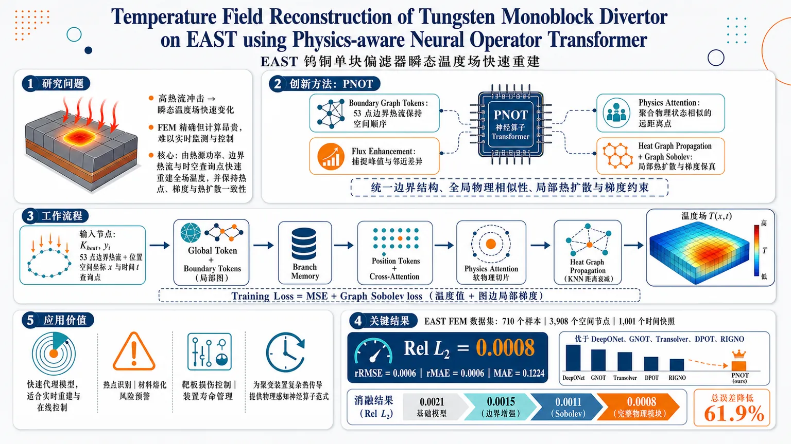
研究问题EAST 钨铜单块偏滤器在高热流冲击下会形成快速变化的瞬态温度场，传统 FEM 虽精确但计算昂贵，难以用于实时监测与控制；核心问题是如何从热源功率、边界热流分布和空间时间查询点中，快速、准确地重建整个偏滤器温度场，并保持热点位置、局部梯度和热扩散物理一致性。创新方法提出 Physics-aware Neural Operator Transformer（PNOT）：把 53 个边界热流采样点从“压缩向量”改为“带空间顺序的边界图 token”，用 Flux Enhancement 捕捉边界热流峰值与邻近差异；用 Physics Attention 将物理状态相似的远距离查询点聚合到潜在切片；用 Heat Graph Propagation 在 KNN 空间图上传播局部热扩散；再用 Graph Sobolev loss 同时约束温度值和沿图边的局部梯度。Aha 点是把边界热流结构、全局物理相似性、局部热扩散和梯度保真统一进 Transformer 神经算子。工作流程输入热源功率 Kheat、控制参数 yi、53 点边界热流及其位置、空间坐标与时间查询点；首先将全局工况编码为 Global Token，将边界热流点构成局部图并生成 Boundary Tokens；二者拼接成 Branch Memory。查询点被编码为 Position Tokens，通过 cross-attention 读取相关边界和工况信息；随后 Physics Attention 对查询点做软物理切片以建模全局依赖，Heat Graph Propagation 在 KNN 图中按距离衰减传播热扩散消息；最后解码输出每个时空点的温度，并用 MSE + Graph Sobolev loss 训练。关键结果在 EAST FEM 数据集上，包含 710 个仿真样本、3,908 个空间节点、1,001 个时间快照，PNOT 达到 Rel L2 = 0.0008、rRMSE = 0.0006、rMAE = 0.0006、MAE = 0.1224，四项指标均优于 DeepONet、GNOT、Transolver、DPOT、RIGNO 等模型。消融实验显示：边界增强将 Rel L2 从 0.0021 降至 0.0015，Sobolev loss 降至 0.0011，加入完整物理模块后降至 0.0008，总误差降低 61.9%。应用价值该方法可作为 EAST 偏滤器温度场的快速代理模型，用于高热负荷运行中的热点识别、材料熔化风险预警、靶板损伤控制和装置寿命管理；相比 FEM 更适合实时重建与在线控制场景，也为聚变装置中复杂热传导问题提供了物理感知神经算子的可视化、可扩展建模范式。第一部分：核心概览
PNOT 面向 EAST 钨铜单块偏滤器瞬态温度场重建，提出将边界热流空间结构、查询点全局物理相似性、局部热扩散图传播、Sobolev 梯度约束统一到 Transformer 神经算子中的框架。其核心贡献在于突破传统神经算子把边界条件压缩为全局向量、忽略局部扩散耦合与梯度一致性的局限，在 710 个 FEM 样本、3,908 空间节点、1,001 时间快照的数据集上取得 Rel L2 = 0.0008、MAE = 0.1224，显著优于 DeepONet、GNOT、Transolver、DPOT、RIGNO 等代表性模型。该工作处于融合装置实时热场代理建模与物理感知神经算子交叉前沿。
---
第二部分：结构化快速回顾
《Temperature Field Reconstruction of Tungsten Monoblock Divertor on EAST using Physics-aware Neural Operator Transformer》（None，）
背景
EAST 偏滤器承受高热流冲击，温度场建模直接关系到材料熔化预防、靶板损伤控制、装置寿命延长。FEM 精度高但计算昂贵，不适合实时控制。已有神经算子在 PDE 求解中表现突出，但在边界热流结构表达、局部热扩散建模、梯度物理一致性方面仍不足。
方法
PNOT 将全局工况与 53 个边界热流采样点编码为结构化 token；通过 Flux Enhancement 建模边界局部关系；通过 Physics Attention 以软切片聚合同物理状态查询点；通过 Heat Graph Propagation 在 KNN 图上传播局部热扩散信息；通过 Graph Sobolev loss 同时约束温度值与局部梯度。
结果
PNOT 在 EAST FEM 数据集上取得最低误差：Rel L2 = 0.0008、rRMSE = 0.0006、rMAE = 0.0006、MAE = 0.1224。相较基线 Rel L2 = 0.0021，完整模型降至 0.0008，误差降低 61.9%。
讨论
性能提升来自三个互补来源：边界 token 保留热流空间分布，Sobolev loss 强化局部梯度一致性，Physics Attention + Heat Graph Propagation 同时捕获全局物理依赖与局部扩散耦合。
局限
实验基于 FEM 生成数据，缺少真实红外诊断数据验证；给定内容未报告推理延迟、实时控制闭环实验、跨装置泛化、噪声鲁棒性、三维完整几何外推能力。
结论
PNOT 提供了一种适合 EAST 偏滤器温度场快速重建的物理感知神经算子范式，在精度、梯度保持与分布外泛化方面优于多类主流神经算子模型。
---
第三部分：逐章节冷凝解析
Abstract
- Real-time divertor temperature reconstruction is the central target
EAST 偏滤器温度场重建的核心动机是防止高热负荷下的材料熔化、部件损伤与寿命缩短。摘要明确指出温度场建模的重要性：*"Accurate modeling of the divertor temperature field is essential for preventing material melting and damage and for extending the service life of fusion devices."* 传统 FEM 计算昂贵，难以支持实时任务：*"conventional numerical methods, such as the Finite Element Method (FEM), are computationally expensive and therefore unsuitable for real-time applications."*
- PNOT is designed as a fast, generalizable neural operator
PNOT 的目标是学习偏滤器温度场的时空演化算子，服务于实时重建与控制。摘要将需求概括为：*"a fast and generalizable method is required for real-time reconstruction of the divertor temperature field and subsequent real-time control."* 方法被命名为 Physics-aware Neural Operator Transformer，用于 *"characterize the spatiotemporal evolution of the divertor temperature field."*
- Boundary heat flux is modeled as a structured graph
PNOT 不把边界热流压缩成普通向量，而是建模成结构图，以显式表达边界热流采样点之间的空间关系。摘要给出核心机制：*"It models boundary heat-flux relations as a structured graph and employs graph attention to explicitly capture spatial physical dependencies."*
- Physics-aware neural operator and Sobolev regularization jointly improve physical fidelity
PNOT 通过物理感知注意力聚合物理条件相似的查询点，并通过 Sobolev 梯度约束保证函数值与导数一致。摘要指出：*"we further develop a physics-aware neural operator module to aggregate query points with similar physical conditions via slicing and model heat diffusion, while a gradient-constrained Sobolev regularization loss enforces consistency between function values and their derivatives."*
- Physical constraints improve both accuracy and consistency
实验结论强调物理约束并非附加装饰，而是直接改善预测性能与物理一致性：*"Experimental results show that these physical constraints improve prediction accuracy while preserving physical consistency."*
---
1 Introduction
- Controlled nuclear fusion motivates high-fidelity diagnostic and control models
受控核聚变被定位为未来能源的重要方向，其系统复杂性要求多诊断、多物理建模支撑运行控制。开篇给出能源背景：*"Controlled Nuclear Fusion (CNF) is widely regarded as one of the most promising solutions to future energy challenges."* 聚变装置被称为人造太阳，因为其能量释放机制与太阳相同：*"fusion releases enormous amounts of energy through the same mechanism that powers the Sun, earning fusion devices the name artificial suns."*
- Divertor protects the first wall and removes heat and impurities
偏滤器在面向等离子体部件中承担关键热排出功能，直接影响 EAST 安全运行。章节描述其功能：*"the divertor plays a crucial role as it exhausts heat and impurities from the plasma while protecting the first wall from excessive thermal loads."*
- EAST divertor geometry contains plasma-facing heat flux, adiabatic sides, and water cooling
图 1 所示物理边界条件具有明确工程含义：顶部表面承受等离子体热流，侧边界绝热，中心冷却结构移除热量。原文描述：*"The top surface is directly exposed to plasma heat flux, while the lateral boundaries are assumed to be adiabatic. The central region consists of a water-cooling structure that continuously removes heat."*
- The monoblock cross-section is a multilayer W/Cu/CuCrZr structure
单块偏滤器材料结构由外到内为 W、Cu、CuCrZr，对应高熔点抗等离子体侵蚀层、导热过渡层与冷却结构材料。章节说明：*"the material configuration from the outer layer to the inner layer is composed of W (tungsten), Cu (copper), and CuCrZr."*
- FEM is accurate but unsuitable for real-time fusion control
FEM 可以求解复杂物理问题，但需要重复离散化与迭代计算，导致实时性不足。关键论断为：*"Traditional numerical methods, such as the Finite Element Method (FEM), can accurately solve complex physical problems but require repeated discretization and iterative computation, making them unsuitable for real-time control and online prediction in fusion devices."*
- Neural operators are attractive because they learn mappings between function spaces
神经算子相较 PINNs 更适合跨参数、跨场景泛化，因为目标是学习函数到函数的映射。章节概括：*"Neural Operators learn mappings between function spaces and exhibit stronger generalization across different parameters and scenarios."* 因此它们适合快速预测：*"These advantages make Neural Operators particularly attractive for fast prediction and real-time applications in fusion systems."*
- Transformer-based neural operators provide long-range dependency modeling for PDEs
Transformer 在科学机器学习中被用于捕获长程依赖，近期神经算子如 GNOT、Transolver、DPOT、GAOT 推动 PDE 求解能力。章节指出 Transformer 的基础作用：*"the Transformer has achieved remarkable success in natural language processing, computer vision, and scientific machine learning due to its strong capability for modeling long-range dependencies."*
- Existing neural operators have three key limitations for heat conduction
第一，已有方法常将边界条件压缩为单一全局向量，损失空间分布信息：*"Existing approaches typically compress boundary conditions into a single global feature vector, potentially obscuring the spatial distribution and functional structure of boundary heat fluxes."*
第二，标准 self-attention 缺乏局部空间热扩散耦合：*"Standard self-attention mechanisms primarily capture global interactions and lack explicit modeling of local spatial coupling during heat diffusion."*
第三，L2 损失只监督函数值，忽略梯度信息：*"Conventional L2 loss functions supervise only solution values while neglecting gradient information, resulting in suboptimal physical consistency and generalization ability."*
- PNOT directly targets boundary structure, local diffusion, and gradient consistency
PNOT 的三大设计分别对应三大缺陷：结构化边界表示、物理感知特征交互与空间热扩散传播、Sobolev 约束优化。章节总结：*"PNOT introduces a structured boundary representation to preserve spatial boundary information, incorporates a physics-aware feature interaction mechanism together with a spatial heat diffusion propagation module to encode local heat transfer priors, and adopts a Sobolev-constrained optimization strategy that jointly supervises solution values and gradients."*
- The main contributions consist of framework, physical module, and empirical superiority
贡献 1：PNOT 集成 Flux Enhancement、Physics Enhancement、Sobolev loss：*"We propose a Physics-aware Neural Operator Transformer (PNOT) framework that incorporates a Flux Enhancement module, a Physics Enhancement module, and a Sobolev loss."*
贡献 2：提出 Heat Graph Propagation 并结合 Physics Attention：*"We propose a Heat Graph Propagation module and integrate it with Physics Attention to explicitly model local and global spatial coupling and heat diffusion dynamics."*
贡献 3：EAST FEM 数据集实验优于 SOTA：*"Extensive experiments on the EAST divertor finite-element dataset show PNOT outperforms state-of-the-art neural operators in temperature field reconstruction."*
---
2 Related Works
- The related work is organized around neural operators and temperature field reconstruction
相关研究脉络集中在两个方向：一是通用 PDE 算子学习，二是偏滤器或热传导温度场重建。章节结构包含 2.1 Neural Operator 与 2.2 Temperature Field Reconstruction，对应 PNOT 的方法基础与应用场景。
---
2.1 Neural Operator
- Neural operators learn infinite-dimensional function-space mappings
神经算子的基本定位是学习 PDE 参数、边界条件、源项到解场之间的函数空间映射。原文定义其范式：*"Neural operators have recently emerged as a promising paradigm for learning mappings between infinite-dimensional function spaces and have demonstrated remarkable success in solving parametric partial differential equations."*
- DeepONet and FNO established early operator-learning foundations
DeepONet 直接学习函数间映射，FNO 通过谱卷积提高可扩展性。章节写道：*"Early work, represented by DeepONet, established the foundation of operator learning by directly learning mappings between functions."* FNO 的作用为：*"the Fourier Neural Operator (FNO) significantly improved scalability and efficiency through spectral convolutions."*
- Operator variants address irregular meshes, low-rank kernels, and localized features
GNO、LNO、WNO 分别用于不规则网格、高效核近似、多尺度局部特征。原文列举：*"including the Graph Neural Operator (GNO) for irregular meshes, the Low-Rank Neural Operator (LNO) for computationally efficient kernel approximation, and the Wavelet Neural Operator (WNO) for capturing localized and multi-resolution features."*
- Recent models incorporate geometric and physical priors
Geo-FNO 与 PINO 将几何或物理约束引入神经算子，Transformer-based 方法进一步增强复杂系统建模能力。章节说明：*"Subsequent developments incorporated geometric and physical priors through methods such as Geo-FNO and Physics-Informed Neural Operators (PINO)."* Transformer 路线被概括为：*"transformer-based approaches, including the Galerkin Transformer, have further enhanced the ability of neural operators to model complex systems."*
- Pretraining and mixture-of-experts expand neural operators toward foundation models
MoE-POT、NESTOR、DPOT、Latent Neural Operator Pretraining 体现了大规模预训练与专家路由趋势。章节说明：*"neural operator pretraining has emerged as an important research direction in scientific machine learning."* DPOT 的特点是：*"adopts an autoregressive denoising pretraining strategy to learn universal spatiotemporal evolution patterns from large-scale PDE datasets."*
---
2.2 Temperature Field Reconstruction
- Divertor heat flux analysis reduces to heat conduction PDE solving
偏滤器热流分析本质是热传导 PDE 求解。原文明确指出：*"Heat flux analysis of divertors is a critical issue in fusion device research, and its essence lies in solving the heat conduction partial differential equations (PDEs)."*
- Traditional heat transfer solvers include FDM, FEM, and FVM
传统方法包括有限差分、有限元、有限体积。章节写道：*"Traditional approaches mainly rely on numerical methods such as the finite difference method (FDM), finite element method (FEM), and finite volume method (FVM)."*
- EAST divertor heat flux studies evolved from 2D to 3D FEM after W/Cu monoblock upgrade
Shi 等使用二维 DFLUX 分析 EAST 靶板热流；EAST 升级为水冷 W/Cu 单块结构后，二维模型不足以表达复杂几何；Yang 等发展三维 FEM 反演方法。原文说明：*"Following the upgrade of EAST to a water-cooled W/Cu monoblock structure, two-dimensional models became inadequate for representing its complex geometric features."* 随后：*"Yang et al. developed a three-dimensional finite element heat flux analysis method, enabling heat flux inversion based on infrared thermography measurements."*
- PINNs combine governing equations, boundary conditions, and data
PINNs 的关键特征是把 PDE、边界条件、观测数据纳入训练过程。章节概括：*"Physics-Informed Neural Networks (PINNs) integrate governing equations, boundary conditions, and observational data into the training process, thereby unifying data-driven learning with physical constraints."*
- Neural operators are increasingly used in heat conduction because of scenario generalization
神经算子适合热传导问题的原因是跨场景泛化能力更强。章节写道：*"Neural operators have gained increasing attention in heat conduction problems because of their superior ability to generalize across different scenarios."* 相关工作覆盖正问题、逆问题与代理建模：*"For forward problems..."*、*"For inverse problems..."*、*"For surrogate modeling..."*
---
3 Our Proposed Approach
3.1 Overview
- PNOT integrates coordinates, global operating conditions, and boundary heat flux
PNOT 将查询点坐标、全局工况与边界热流共同输入，以学习物理约束下的温度场。章节概括：*"The framework integrates query point coordinates, global operating conditions, and heat flux information to learn the temperature field under physical constraints."*
- Physics-aware attention and heat graph propagation capture global and local thermal structure
物理增强模块同时建模长程物理依赖与局部热传递特征。原文指出：*"By combining physics-aware attention with heat graph propagation, the proposed physical enhancement module captures both long-range physical dependencies and local heat-transfer characteristics."*
- Training uses MSE plus graph Sobolev loss
训练目标由温度值回归与图 Sobolev 梯度正则共同组成。章节写道：*"The network is trained with a hybrid loss of the mean squared error and graph Sobolev losses to improve both reconstruction accuracy and physical consistency."*
---
3.2 Problem Formulation
- The task is formulated as nonlinear operator learning
PDE 定义在域 Ω ⊂ ℝᵈ 上，输入函数空间 A 包含边界条件、源函数、全局参数等，目标是学习算子 G: A → H。原文表述：*"Let A denote the input function space and H the corresponding solution space."* 以及：*"We aim to learn a nonlinear operator G that maps an input function to the corresponding PDE solution G : A → H."*
- PNOT maps distribution condition and spatial query coordinate to temperature
针对温度场重建，学习算子为 𝒢θ: 𝒞 × Ω → T，输入为分布条件 c ∈ 𝒞 与空间查询坐标 x ∈ Ω，输出温度 T ∈ ℝ。原文公式对应：*"the goal is to learn a neural operator 𝒢θ : 𝒞 × Ω → T"*，并给出：*"hatT(x)=Gθ(c,x),qquadxinØmega."*
- Out-of-distribution generalization is an explicit objective
学到的算子需泛化到训练中未见过的分布条件。章节强调：*"The learned operator is expected to generalize to distribution conditions that are not observed during training, thereby exhibiting strong out-of-distribution generalization capability."*
---
3.3 Network Architecture
3.3.1 Input Encoding
- Global conditions and boundary heat flux are represented as structured tokens
全局工况和边界热流共同决定温度场，边界热流作为分布式热源支配局部传热。PNOT 避免低维向量压缩，改用结构 token 序列。原文说明：*"Global operating conditions and heat flux boundary conditions jointly determine the temperature field, while the boundary heat flux acts as a distributed heat source that governs the local heat transfer process."* 以及：*"we represent the global operating conditions and boundary heat flux as a structured token sequence rather than a conventional low-dimensional vector."*
- Global token contains Sample Type, Kheat, and yi
全局条件定义为 g = Sample Type, Kheat, yi ∈ ℝᵈ，其中 Kheat 为热源功率，yi 为控制热流分布的参数。原文给出：*"Sample Type indicates the sampling category, Kheat represents the heat-source power, and yi denotes the control parameter."* 编码公式为：*"Zg = ϕg(g)"*。
- Flux Enhancement organizes 53 boundary samples into a local graph
边界热流被离散为 53 个采样点，并通过局部图建模。章节说明：*"the boundary samples are first organized into a local graph according to their sampling order."* 图定义为：*"We define the graph as 𝒢 = (𝒱, ℰ), where each node i ∈ 𝒱 corresponds to a boundary sampling point."*
- Boundary node features include heat flux value and normalized coordinate
每个边界节点特征为 vi = hi, si，其中 hi 是热流值，si 是归一化边界坐标。原文定义：*"where hi ∈ ℝ denotes the heat-flux value and si ∈ ℝ denotes the normalized boundary coordinate."*
- Edge features encode geometric proximity and heat-flux difference
边特征为 eij = |si − sj|, |hi − hj|，同时描述边界位置距离与热流差异。原文给出：*"For an edge (i,j) ∈ ℰ, the edge feature is defined as: eij = |si − sj|, |hi − hj|."*
- Edge-aware attention propagates local boundary information
节点特征经 Q/K/V 投影后，通过包含边偏置 bij = ϕedge(eij) 的注意力聚合邻居信息。原文说明：*"To incorporate both geometric proximity and local heat-flux variation, we define an edge-aware bias term."* 注意力传播公式为：*"zᵢ^flux = Σⱼ∈𝒩₍ᵢ₎ softmax(... + bij)vj."*
- Boundary token sequence has shape 53 × d
Flux Enhancement 输出 Zf = [z1flux, …, z53flux] ∈ ℝ⁵³ˣᵈ，作为增强边界 token。原文给出：*"Zf represents the enhanced Boundary Token required in our framework."*
- Global and boundary tokens form Branch Memory
全局 token 与边界 token 拼接形成 Zb = [Zg; Zf]。原文为：*"Finally, the Global Token and enhanced Boundary Tokens are concatenated to form the structured Branch Memory Zb = [Zg; Zf]."*
- Query points include 2D spatial coordinates and 1D temporal coordinate
查询点集合定义为 𝒫 = (xi, ti)ᵢ₌₁ᴺq，其中 xi ∈ ℝ²，ti ∈ ℝ。原文说明：*"xi ∈ ℝ2 represents the 2D spatial coordinate and ti ∈ ℝ represents the 1D temporal coordinate of the i-th query point."* 查询点通过 Trunk Branch 编码为 position tokens：*"These query points are encoded into Position Tokens through the Trunk Branch."*
---
3.3.2 Physics-aware Neural Operator Transformer
- Point-wise independent prediction is insufficient for heat conduction
热传导问题中查询点相互关联，温度场受全局传热和局部扩散共同支配。章节指出：*"query points are inherently correlated because the temperature field is governed by both global heat transfer and local diffusion."* 因此：*"independent point-wise prediction cannot fully capture spatial continuity or local variations."*
- Cross-attention fuses query features with condition-aware branch memory
查询点 position token 编码为 Q，全局与边界条件编码为 K、V，通过 cross-attention 融合。公式为：*"Zattn = softmax(QKᵀ / √dk)V."* 功能解释为：*"each query point can adaptively retrieve the most relevant global and boundary-condition information from the Branch Memory according to its spatial and physical context."*
- Physics attention groups query points into latent physical state slices
给定查询特征 X = xiᵢ₌₁ᴺ，soft-slicing 将查询点分配到 G 个潜在物理状态切片。原文给出：*"a learnable soft-slicing operation assigns query points to G latent physical state slices."* 权重矩阵为：*"W ∈ ℝN×G and wig denotes the assignment weight from the i-th query point to the g-th slice."*
- Soft slicing groups physically similar but spatially distant points
该机制不同于空间硬分区，可把空间上相距较远但物理状态相似的点归入同一切片。原文强调：*"Unlike spatial hard partitioning, this soft-slicing mechanism groups query points according to learned physical states, allowing distant points with similar physical characteristics to share the same slice."*
- Slice attention reduces computational cost while preserving global interactions
self-attention 在 G 个 latent slices 上进行，而非在所有 N 个查询点上进行。章节指出：*"This slice–attention–deslice process captures global dependencies through G latent states rather than all N query points, reducing the attention cost while preserving global physical interactions."*
- Heat Graph Propagation models local heat diffusion with a KNN graph
局部热扩散通过基于物理坐标的 KNN 图建模。原文说明：*"to capture local heat diffusion, we introduce a Heat Graph Propagation module based on the physical coordinates of query points."* 该模块：*"constructs a spatial KNN graph and performs distance-weighted message propagation to model local heat transfer."*
- Diffusion weights decay exponentially with spatial distance
KNN 图边距离为 dij = ||pi − pj||₂，扩散权重为 softmax 形式 wij ∝ exp(−dij/τ)，其中 τ 可学习。原文说明：*"τ is a learnable temperature parameter that controls the spatial diffusion range."*
- Local diffusion message resembles a graph Laplacian
局部消息为 Δi = Σj∈𝒩k(i) wij(xj − xi)，强调邻域特征差异。章节解释：*"This formulation resembles a graph Laplacian heat diffusion term and emphasizes local spatial variations."*
- Gated residual injection controls graph diffusion strength
图消息经 MLP 投影后，以 tanh(γ) 门控残差方式注入 token 表示。原文公式：*"xᵢ^out = xᵢ + Dropout[tanh(γ) · ϕ(Δi)]."* 机制说明：*"The term tanh(γ) adaptively controls the strength of the graph diffusion message."*
- Graph Sobolev loss enforces local gradient consistency
Sobolev 正则在查询点 KNN 图上用有限差分近似局部方向梯度，并惩罚预测梯度与真实梯度差异。原文描述：*"local spatial gradients are approximated by finite differences along graph edges."* 损失目标为：*"penalizing the discrepancy between the predicted and ground-truth directional gradients."*
- Directional gradient is computed along graph edges
对边 (i,j)，真实梯度定义为 gij = (uj − ui)/||xj − xi||₂。原文给出：*"the directional finite-difference gradient of the ground-truth field is defined as: gij = (uj − ui)/||xj − xi||₂."* 预测场用同一边计算对应梯度：*"the directional finite-difference gradient of the predicted field is computed from the predicted values ûi and ûj along the same edge."*
---
4 Experiments
4.1 Dataset and Evaluation Metric
- The dataset is generated by finite element simulations
数据集由 FEM 仿真生成，用于刻画不同热源功率与边界热流条件下的瞬态温度场演化。章节说明：*"the dataset used in this study was generated through finite element simulations and is designed to characterize the evolution of transient temperature fields under different heat-source powers and boundary heat-flux conditions."*
- The dataset contains 10 heat-source powers and 710 samples
热源功率从 1 MW 到 10 MW，每个功率 71 个仿真样本，总计 710 个样本。原文给出：*"The dataset contains ten heat-source power scenarios ranging from 1 MW to 10 MW. For each power level, 71 simulation samples are provided, resulting in a total of 710 samples."*
- Each simulation uses 3,908 spatial nodes and 1,001 temporal snapshots
所有仿真使用统一 FEM 网格，包含 3,908 空间节点与 1,001 时间快照。原文说明：*"All simulations are performed on a unified finite element mesh consisting of 3,908 spatial nodes and 1,001 temporal snapshots."*
- Each sample includes power, coordinates, temperature, heat flux, and heat-flux sampling locations
样本变量包括 Kheat、p、u、Heat Flux、xheat。原文列举：*"Each sample includes the heat-source power Kheat, spatial coordinates p, transient temperature field u, as well as the corresponding boundary heat-flux distribution Heat Flux and sampling locations xheat."*
- The heating boundary has 53 sampling points in [0, 0.026] m
加热边界在固定区间 [0, 0.026] m 上离散为 53 个采样点。原文说明：*"The heating boundary is discretized into 53 sampling points over a fixed interval of [0, 0.026] m."*
- The operator input-output mapping is explicitly defined
学习任务是从 (Kheat, yi, xheat, Heat Flux, p) 映射到时空温度场 u。原文指出：*"the learning task can be formulated as an operator mapping from the physical parameters and boundary conditions, i.e., (Kheat, yi, xheat, Heat Flux, p), to the corresponding spatio-temporal temperature field u."*
- Evaluation uses four error metrics
评价指标包括 Rel L2、rMAE、rRMSE、MAE。章节说明：*"we take the relative L2 error (Rel L2), relative Mean Absolute Error (rMAE), relative Root Mean Square Error (rRMSE) and Mean Absolute Error (MAE)."* 其中 N 为测试点数，u(x,t) 为真实解，û(x,t) 为预测解：*"N is the number of test points, u(x,t) is the ground-truth solution, and û(x,t) is the model’s prediction."*
---
4.2 Implementation Details
- PNOT uses three stacked blocks and fixed graph neighborhood sizes
网络由 3 个 PNOT blocks 堆叠而成，边界关系编码器邻域大小为 6，空间热图使用 k = 8。原文给出：*"The network consists of three stacked PNOT blocks. The boundary relation encoder uses a neighborhood size of 6, while the spatial heat graph is constructed with k = 8."*
- Dataset split is 8:1:1
训练、验证、测试比例为 8:1:1。原文写道：*"The dataset is split into training, validation, and test sets with a ratio of 8:1:1."*
- Training samples one temporal snapshot and 1,024 spatial query points per field sample
训练时每个场样本随机采样 1 个时间快照与 1024 个空间查询点；推理时使用所有空间节点。原文说明：*"During training, one temporal snapshot and 1024 spatial query points are randomly sampled from each field sample, whereas all spatial nodes are used for inference."*
- Optimization uses AdamW for 300 epochs
训练 300 epochs，优化器为 AdamW，初始学习率 1×10⁻³，weight decay 5×10⁻⁶，cosine annealing 最小学习率 1×10⁻⁵，batch size 4。原文给出完整设置：*"The model is trained for 300 epochs using the AdamW optimizer with an initial learning rate of 1×10−3, a weight decay of 5×10−6, and a cosine annealing learning rate scheduler with a minimum learning rate of 1×10−5. The batch size is set to 4."*
- Training loss combines MSE and graph Sobolev regularization with λ = 0.01
目标函数由 MSE 与 Graph Sobolev loss 组成，Sobolev 权重 λ = 0.01。原文说明：*"The training objective combines the mean squared error (MSE) loss with a graph-based Sobolev regularization term weighted by λ = 0.01."*
- Experiments run on one RTX 3090 GPU
实验硬件为单张 NVIDIA GeForce RTX 3090。原文为：*"All experiments are conducted on a single NVIDIA GeForce RTX 3090 GPU."*
---
4.3 Comparison with State-of-the-art Models
- PNOT is compared against broad neural operator baselines
对比模型覆盖 DeepONet、MWT、Geo-FNO、F-FNO、GNOT、OTNO、RIGNO、Transolver、DPOT、U-NO、LSM、TNO。原文说明：*"we compare the proposed PNOT with a broad range of representative operator learning methods."*
- PNOT obtains the best result on all four metrics
PNOT 的 Rel L2 = 0.0008、rRMSE = 0.0006、rMAE = 0.0006、MAE = 0.1224，四项指标均最低。章节总结：*"PNOT consistently achieves the lowest reconstruction errors across all considered evaluation metrics, including Rel L2, rRMSE, rMAE, and MAE."*
- PNOT substantially improves over strong graph/geometry-aware baselines
强基线 GNOT 为 Rel L2 = 0.0022、MAE = 0.3114，RIGNO 为 Rel L2 = 0.0027、MAE = 0.3707，PNOT 降至 0.0008、0.1224。原文结论为：*"Compared with existing operator learning models, PNOT demonstrates more accurate reconstruction of the divertor heat-flux temperature field."*
- Some Fourier and wavelet baselines perform poorly on this geometry/condition setting
F-FNO 的 Rel L2 = 0.4656、MAE = 99.4731，Geo-FNO 的 Rel L2 = 0.6234、MAE = 80.5688，MWT 的 Rel L2 = 0.0614、MAE = 9.8221，显示标准谱域或小波方法在该任务上不稳定。表 1 给出这些数值，并以 *"Comparison of different operator learning models"* 标注。
---
4.4 Component Analysis
- Boundary Enhancement reduces Rel L2 from 0.0021 to 0.0015
Boundary Enhancement 显式建模边界热流空间关系，使边界表示更能反映内部温度场。原文说明：*"The Boundary Enhancement module explicitly models the spatial relationships among boundary heat fluxes."* 消融结果为：*"Incorporating BT reduces the relative error from 0.0021 to 0.0015."*
- Sobolev Loss further reduces Rel L2 from 0.0015 to 0.0011
Sobolev loss 引入梯度监督，使预测温度场在局部邻域内更平滑、更符合物理。原文说明：*"The proposed Sobolev loss introduces gradient supervision to encourage consistency between the predicted and ground-truth temperature fields in the local neighborhood."* 结果为：*"the relative error is further reduced from 0.0015 to 0.0011."*
- Physical Module reduces Rel L2 to 0.0008
Physical Module 整合 Physics Attention 与 Heat Graph Propagation，同时建模全局物理依赖与局部热扩散。原文说明：*"The physical module integrates Physics Attention and Heat Graph Propagation to capture complementary global physical dependencies and local heat diffusion characteristics."* 加入后：*"the relative error is further reduced to 0.0008."*
- All components together reduce baseline error by 61.9%
完整配置达到最低 Rel L2 = 0.0008，相比 baseline 0.0021 降低 61.9%。原文总结：*"When all components are combined, the proposed model achieves the lowest relative error of 0.0008, corresponding to a 61.9% reduction compared with the baseline."*
---
4.5 Ablation Study
- The best Sobolev tradeoff parameter is λ = 1e−2
λ 从 1e−4 增至 1e−2 时四项指标持续改善；λ = 1e−2 最优，得到 Rel L2 = 0.000868、rRMSE = 0.000612、rMAE = 0.000602、MAE = 0.122425。原文说明：*"The best performance is obtained at λ = 1e−2, achieving Rel L2, rRMSE, rMAE, and MAE of 0.000868, 0.000612, 0.000602, and 0.122425, respectively."*
- Too large Sobolev weight harms optimization balance
λ 增至 1e−1 后性能下降至 Rel L2 = 0.0017、rRMSE = 0.0013、rMAE = 0.0012、MAE = 0.2497。原文解释：*"when λ is further increased to 1e−1, the performance drops, suggesting that an excessively large weight may disturb the optimization balance."*
- Three PNOT blocks provide the best depth-performance tradeoff
PNOT block 数从 1 到 3 时性能提升，3 blocks 最优，表 4 中 Rel L2 = 0.0008、MAE = 0.1224。原文说明：*"When the number of blocks increases from 1 to 3, all metrics consistently improve."* 进一步增加到 4 或 5 后退化：*"further increasing the number of blocks to 4 or 5 leads to performance degradation."*
- K = 8 is the best KNN graph neighborhood size
空间热图 KNN 的 K = 8 最优。章节说明：*"The model achieves the best results when K = 8."* K 太小，如 2 或 4，邻域信息不足：*"When K is smaller, such as 2 or 4, the graph may capture insufficient neighborhood information."* K 太大，如 16 或 32，会引入无关连接与噪声：*"overly dense neighborhoods may introduce irrelevant connections and noise."*
---
第四部分：深度理解与语言支持
1. 术语解析
- Physics-aware neural operator
“Physics-aware” 比 “physics-informed” 更宽。physics-informed 常指把 PDE 残差、边界条件写进 loss；physics-aware 在这里更强调结构设计也体现物理机制，例如边界图、KNN 热扩散、软物理切片、Sobolev 梯度约束。PNOT 不是单纯在 loss 中加入物理项，而是在网络结构和优化目标中同时编码物理先验。
- Structured boundary representation
指边界条件不再是一个扁平向量，而是带有空间顺序、节点、边、邻域关系的 token/graph 表达。该术语的关键微妙点在于“boundary heat flux”是一个函数分布，不是几个标量；压缩成全局向量会丢失局部峰值、梯度、邻近相关性。
- Soft slicing
“Soft” 表示每个查询点不是硬分配到某个区域，而是以概率/权重形式分配到多个 latent slices；“slicing” 不是几何切片，而是学习得到的物理状态切片。空间上远离但温度状态、热流响应、局部物理条件相似的点可以共享同一 slice。
- Heat Graph Propagation
这里的 graph propagation 不是普通 GNN 消息传递，而是模拟热扩散形式：邻居差分 xj − xi、距离衰减权重 exp(−dij/τ)、图 Laplacian 类似项。其物理含义是局部温度/特征变化沿空间邻域传播。
- Graph Sobolev loss
Sobolev loss 不只比较函数值，还比较导数或梯度。图 Sobolev loss 在离散点云上不能直接求连续梯度，因此沿 KNN 边用有限差分近似方向导数，再约束预测场与真实场的局部梯度一致性。
2. 疑难查证
- 为什么 L2 loss 不足以保证温度场物理正确？
L2 loss 只要求每个点的温度值接近真实值，但热传导问题不仅关心温度值，还关心温度梯度，因为热流与温度梯度相关。两个温度场可能点值误差都不大，但局部梯度不同，意味着热流方向、热扩散强度、热点边缘形态可能错误。Graph Sobolev loss 通过边上有限差分强制局部坡度接近真实场，因此更适合保留热点附近的陡峭梯度。
- 为什么边界热流不能压缩为一个全局向量？
偏滤器顶部热流通常具有空间分布，局部峰值会影响内部温度热点位置。如果将 53 个边界采样点压成单一向量或全局 embedding，模型可能知道“总热负荷大”，却不知道“热流峰值在哪里”。Flux Enhancement 用边界图保留采样顺序、相邻点距离、热流差异，因此更能捕捉边界局部变化对内部温度的影响。
- Physics Attention 与 Heat Graph Propagation 的分工是什么？
Physics Attention 解决全局依赖问题：远距离点可能因相似热状态而相关，例如同一等温区域或相似扩散阶段。Heat Graph Propagation 解决局部连续性问题：热传导局部上受邻域影响，温度不会无物理原因地剧烈跳变。前者偏“全局物理状态聚合”，后者偏“局部空间扩散”。
- 为什么 KNN 图中 K 太小或太大都会变差？
K 太小时，局部邻域覆盖不足，图 Laplacian 近似不稳定，局部扩散信息缺失。K 太大时，非局部点被错误连接，消息传递混入不相关区域，尤其在复杂几何或温度梯度尖锐区域会模糊热点边界。实验显示 K = 8 在该网格和采样密度下达到最佳平衡。
---
第五部分：创新评估与关联
1. 创新性判断
- 从“通用神经算子”转向“偏滤器热传导物理结构专用神经算子”
近年 GNOT、Transolver、DPOT、GAOT 等提升了不规则域、物理切片、预训练或几何感知能力，但多数方法仍偏通用 PDE 框架。PNOT 针对 EAST 偏滤器温度场的具体物理结构设计输入编码、边界图、局部热扩散传播与梯度正则，解决了通用模型未充分处理的边界热流空间分布问题。
- 边界条件表达方式具有明确新颖性
过去很多神经算子将边界条件编码为全局 condition vector。PNOT 把 53 个边界热流采样点组织为图，并将 |si − sj| 与 |hi − hj| 作为边特征，通过 edge-aware attention 学习局部边界关系。这直接针对“边界热流是函数分布而非标量参数”的问题。
- 全局物理相似性与局部热扩散被同时建模
Transolver 的物理切片思想主要增强全局物理状态建模；图神经算子强调局部或不规则图结构。PNOT 把 Physics Attention 和 Heat Graph Propagation 结合，使模型既能聚合物理状态相似的远距离点，又能通过 KNN 图传播局部扩散信息。该组合更贴近热传导的“全局边界驱动 + 局部扩散平滑”机制。
- Graph Sobolev loss 解决温度梯度保真问题
温度场重建中，单纯 L2/MAE 可能低估热点边缘和热流相关梯度误差。PNOT 用图边有限差分构造 Sobolev 梯度损失，在离散 FEM 网格/查询点上实现梯度约束。这一点对偏滤器应用尤其重要，因为热流反演和材料热应力分析高度依赖温度梯度。
- 实证结果显示相对强基线有数量级级别改进趋势
相比 GNOT 的 Rel L2 = 0.0022、RIGNO 的 0.0027、DeepONet 的 0.0056，PNOT 达到 0.0008。消融显示边界增强、Sobolev loss、物理模块依次带来稳定收益，说明创新点不是单一训练技巧，而是多个物理先验模块的互补作用。
- 仍未完全解决的问题
尚缺真实实验诊断数据验证、实时推理延迟报告、噪声与测量误差鲁棒性测试、跨装置/跨几何泛化、闭环控制实验。因而其创新主要确立在FEM 数据驱动的高精度代理建模层面，距离工程实时部署仍需进一步验证。
-
21
📄 摘要：在高精细度光学腔中，深度强化学习控制器仅利用连续监测的腔透射信号，对单个中性原子的运动进行实时冷却。策略先在仿真中训练，再迁移到实验，并通过在线微调适应未建模动力学；针对部分观测、非线性和测量噪声限制下的量子反馈控制。
💡 亮点：深度强化学习在真实腔量子电动力学装置中闭环冷却单原子，且只依赖腔透射观测。仿真到实验再在线微调的流程为量子系统无模型反馈控制提供了可复制范式。
-
22
📄 摘要：利用 NICER 对高质量毫秒脉冲星 PSR J0740+6620 的 32-bin 玻尔脉冲轮廓，结合神经网络代理模型反演表面磁场。发射区设为偏心偶极加轴对称四极静态真空场的开放磁力线足点，并固定质量、半径、观测倾角和热点温度比等参数，避免预设几何热点形状。
💡 亮点：神经网络代理把 NICER 脉冲轮廓拟合扩展到物理磁场参数空间，而非经验热点模型。多极磁场反演展示了 AI 代理模型在高维天体物理正演中的加速价值。
-
23
📄 摘要：面向 VAMOS++ 磁谱仪的多参数探测数据，利用深度神经网络和分数标注事件分析离子的原子电荷态与原子序数。谱仪结合磁元件、径迹/计时探测器和电离室能量测量，重建磁刚度、飞行长度、速度与质荷比。
💡 亮点：深度神经网络被用于 VAMOS++ 磁谱仪中带分数标签的离子事件分类。它把多探测器重建量与电离室能量联合用于电荷态和原子序数识别，体现核物理实验数据的 AI 化分析。
-
24
📄 摘要：将前馈网络、残差网络和变换器每层宽度限制为 d=3，即以 R³ 为表示空间，逐层跟踪低维拓扑不变量的变化。作者强调升维可平凡化许多拓扑结构，如结在 R⁴ 中可退化为平凡结；R³ 设置隔离激活和深度效应。
💡 亮点：通过把网络宽度固定为 3，神经网络层间表示可用低维拓扑不变量追踪。该框架把宽度带来的拓扑平凡化剥离出去，为理解深度、激活函数与表示拓扑的关系提供可分析模型。
-
25
📄 摘要：采用参数感知储备池计算，在无模型条件下推断耦合玻色 Josephson 结中的测度同步。训练数据为不同耦合强度下若干系统状态时间序列，机器以耦合系数为引导，推断保守系统中的混沌同步行为。
💡 亮点：参数感知储备池计算被用于保守玻色 Josephson 结的测度同步推断。该方法从少量耦合强度时间序列学习同步结构，扩展了机器学习对保守量子/经典混沌体系的适用范围。
-
26
📄 摘要：检验量子 Kolmogorov-Arnold 网络是否可被经典张量网络高效模拟。以任务精度下经典替代模型所需键维数为判据，发现经训练的部分 QKAN 可去量子化，而离散对数编码不一定可高效收缩，从而划分量子优势可能存在的位置。
💡 亮点：QKAN 的量子优势被转化为张量网络可收缩性的实用判据。结果显示训练后模型可能被去量子化，而离散对数编码较难被经典替代，明确了量子机器学习优势的候选边界。
-
27
📄 摘要：采用不同交换关联泛函精度训练的 Deep-Potential 模型，结合大规模两相分子动力学，计算地幔条件下 SiO2 的 coesite、stishovite、β-stishovite，以及 MgSiO3、CaSiO3 等关键矿物熔化曲线。比较 XC 选择对高压高温熔点预测的影响。
💡 亮点：Deep-Potential 将地幔矿物熔化曲线计算推进到大尺度两相分子动力学，同时保留一阶性原理泛函差异。该工作为高压相图、深部地球物质建模和机器学习势可靠性评估提供了系统样例。
-
28
📄 摘要：提出 Q2FMM，用于二维扩展 Hubbard 模型的 Trotter 量子模拟。受快速多极子法启发，将大量长程站点-站点相互作用替换为多尺度层级粗粒化盒之间的相互作用，并使用盒的多极展开，使每个 Trotter 步达到多对数深度。
💡 亮点：Q2FMM 把快速多极子思想引入扩展 Hubbard 模型量子模拟。通过层级盒和多极展开压缩长程相互作用，每个 Trotter 步可实现多对数深度。
-
29
📄 摘要：提出一维无无序 S=1 Floquet 短程相互作用模型，实现离散 3T 时间晶体，并在囚禁离子 qudit 量子处理器上运行。qudit 平台天然超越 qubit 的二周期限制，实验观测到周期三倍化行为。
💡 亮点：囚禁离子 qudit 处理器实现了超越周期加倍的 3T 离散时间晶体。S=1 Floquet 模型无需无序且含短程相互作用，展示多能级量子处理器在非平衡相研究中的优势。
-
30
📄 摘要：识别由纤锌矿 (001) 面衍生的隐相 MnSe 单层为内禀全补偿亚铁磁体，不等价子晶格不由任何对称性关联。该二维体系兼具补偿磁矩和布里渊区非相对论自旋劈裂，并被描述为单极磁体，伴随三铁性与多态输运。
💡 亮点：隐相纤锌矿 MnSe 单层被预测为内禀二维全补偿亚铁磁体。其不等价子晶格带来零净磁矩与非相对论自旋劈裂，为二维补偿自旋电子学和多态输运提供候选材料。
-
31
📄 摘要：分析混合变分量子线路中测量诱导的损失景观转变与编码贫瘠高原。作者从信息论角度指出，梯度由指数消失转为无贫瘠高原的景观转变，与监测量子线路中面积律/体积律纠缠的测量诱导相变并非同一转变。
💡 亮点：变分量子线路的贫瘠高原消失不必与测量诱导纠缠相变重合。该信息论分析区分了可训练性转变和面积律—体积律相变，有助于设计可训练的混合量子模型。
-
32
📄 摘要：针对具有时间反演对称自旋轨道耦合的超导体，推导任意 SOC 纹理下的谱幻影能隙形成条件。磁场垂直于 SOC 纹理的分量会在 SOC 能标附近产生幻影能隙，平行分量则主要在超导能隙附近给出塞曼分裂谱特征；在 Rashba 等模型中验证其普适性。
💡 亮点：谱幻影能隙不再局限于 Ising SOC 超导体，而是任意时间反演对称 SOC 在合适磁场方向下的普适响应。该判据把有限能配对关联与 SOC 纹理方向直接关联，可指导隧穿谱实验区分幻影能隙和塞曼分裂。
-
33
📄 摘要：提出零磁场霍尔拖曳作为手性超导的直流输运指纹：手性超导层中的准粒子通过库仑拖曳耦合相邻的时间反演对称正常层，使正常层出现霍尔响应。构建包含两层动量交换和手性准粒子输运的最小流体理论，给出非常规配对的直接电输运探针。
💡 亮点：手性超导可在邻近正常金属中诱导零场霍尔拖曳，无需外磁场或光学探测。该方案把破缺时间反演的配对对称性转化为直流横向电压，为 Sr2RuO4 类候选体系提供更直接的输运检验。
-
34
📄 摘要：检验宏观连续交通流模型能否产生城市拥堵时空团簇的幂律统计。作者在有向网络上求解二阶 Aw-Rascle-Zhang 模型，采用高阶间断伽辽金格式和路口耦合条件，分析拥堵团簇尺寸分布是否呈无标度行为，以对应近期实证观察。
💡 亮点：连续交通流方程在网络路口耦合下可用于解释拥堵团簇的幂律统计来源。该思路与非平衡凝聚态中的团簇、临界和网络动力学分析高度相通。
-
35
📄 摘要：针对安德森杂质模型长时间动力学，改进时间平移不变的张量网络影响泛函方法。该类方法把 Feynman-Vernon 影响泛函表示为时间方向矩阵乘积态，计算代价主要由键维 χ 控制；新方案旨在降低长时演化中的压缩负担并提升强关联杂质模拟效率。
💡 亮点：时间域 MPS 影响泛函为开放强关联量子系统提供了非马尔可夫浴的紧凑表示。改进的时间平移不变构造有望延长安德森杂质模型可达动力学时间。
-
36
📄 摘要：发展用于随机网络模型的 S 矩阵数值方法，并应用于改进的 Chalker-Coddington 型整数量子霍尔转变网络。相较传统转移矩阵法，该方法更适合描述强磁场与平滑无序势下电子漂移，得到临界指数 ν 约 2.4，与量子霍尔临界标度相符。
💡 亮点：S 矩阵框架绕开转移矩阵在随机网络中的若干数值限制，重新评估整数霍尔转变临界指数。ν≈2.4 的结果支持平滑无序势网络与标准量子霍尔临界类的一致性。
-
37
📄 摘要：提出 FedLAB，用可追踪语义码本处理分散客户端上的多模态图基础模型学习。图数据包含文本、图像、属性和拓扑关系，但原始内容与局部结构受隐私约束不能集中共享；方法强调可迁移表征学习和内生语义可追踪性，用于联邦图任务和模态任务。
💡 亮点：FedLAB 将语义码本引入联邦多模态图基础模型，使隐私保护下的图表示仍可追踪语义来源。对材料知识图谱、实验图数据库等分布式科学图学习具有方法参考价值。
-
38
📄 摘要：系统研究双层 SnSe 在反铁电和铁电相中的声子热输运，利用电场诱导相变作为可逆调节晶格热导率的机制。工作比较两种极化构型下的声子输运差异，指向低维铁电相变驱动的热导开关；摘要未列出具体热导数值。
💡 亮点：双层 SnSe 的反铁电—铁电相变被用于可逆调节晶格热导率。该体系把二维极化相控制与声子工程结合，可服务于热开关和可重构热管理。
-
39
📄 摘要：提出交替磁可通过非线性自旋霍尔效应在低频光照下产生直流自旋极化电流。交替磁的对称性驱动自旋劈裂无需净磁化，为光生直流自旋流提供反铁磁平台；摘要未给出材料实例或响应系数量级。
💡 亮点：交替磁借助非线性自旋霍尔效应把低频光转换为直流自旋流。该机制利用对称性自旋劈裂，给超快自旋电子学提供无净磁化的光控方案。
-
40
📄 摘要：研究具有易平面各向异性的 Heisenberg 反铁磁体，其中 Dzyaloshinskii-Moriya 相互作用和/或交换阻挫诱导磁螺旋。解析描述小面内磁场对螺旋的畸变，并分析磁场诱导的非公度相向公度相转变。
💡 亮点：易平面螺旋反铁磁的场致畸变被解析处理，覆盖 DM 相互作用和交换阻挫两类螺旋来源。结果给出非公度—公度相变的理论图像，有助于解释螺旋磁体的低场响应。
-
41
📄 摘要：结合第一性原理建模与实验，分析宽带相干反斯托克斯拉曼光谱在铁电畴壁成像中的对比来源。工作比较自发拉曼与 BCARS 对局域晶格畸变的成像能力，用于识别和可视化铁电畴壁。
💡 亮点：第一性原理与 BCARS 实验被结合用于解释铁电畴壁拉曼对比。该策略把光谱成像信号直接关联到局域晶格畸变，提高畴壁表征的物理可解释性。
-
42
📄 摘要：研究磁振子 Bose-Einstein 凝聚体中的铁电不稳定性，机制来自电场通过几何 Aharonov-Casher 相位与磁振子耦合。电场诱导磁振子轨道运动并增强极化形成正反馈，伴随非互易超流、例外点和 Majorana 玻色子等现象。
💡 亮点：磁振子 BEC 可因 Aharonov-Casher 相位耦合产生铁电不稳定性。电场—轨道运动—极化的正反馈把铁电性、非互易超流和非厄米例外点连接到同一玻色凝聚平台。
-
43
📄 摘要：npj Computational Materials 论文围绕铁电光伏效应的可调控性，考察畴结构、应变和挠电性对光生电压/电流的影响。题名指向以多物理场和畴工程调节铁电光伏响应；摘要未给出具体材料、计算设置或数值幅度。
💡 亮点：畴结构、应变和挠电性被并列作为铁电光伏效应的调控旋钮。该方向把铁电畴工程与应变梯度耦合到光电转换，适合可重构铁电光伏器件设计。
-
44
📄 摘要：通过中子衍射确定范德华多铁 CuCrP2S6 的基态磁结构，发现有序磁矩沿晶体学 b 轴排列，并具有弱自旋各向异性。磁场测量进一步揭示磁弹性耦合，为后续磁电研究和原位衍射提供明确磁结构基础。
💡 亮点：CuCrP2S6 的有序磁矩方向被中子衍射确定为 b 轴，并伴随弱自旋各向异性。磁场实验显示磁弹性耦合，使该范德华多铁体的磁电分析有了清晰起点。
-
45
📄 摘要：在易平面反铁磁绝缘体中实现亚纳秒电流脉冲诱导的 Néel 矢量重取向。此前绝缘反铁磁的电脉冲翻转虽被预测快于铁磁翻转，但实验多限于准直流范围；该工作把电控反铁磁绝缘体推进到亚纳秒时标。
💡 亮点：易平面反铁磁绝缘体可被亚纳秒电流脉冲切换 Néel 矢量。它把反铁磁绝缘体的电写入从准直流推向超快区间，直接面向高速反铁磁自旋器件。
-
46
📄 摘要：讨论交替磁中磁振子的手性劈裂及其有限温度动力学。零温附近该劈裂通常可由交替各向同性自旋交换描述，且不依赖自旋轨道耦合或外磁场；论文关注竞争序对交替磁手性磁振子的影响。
💡 亮点：交替磁磁振子无需自旋轨道耦合和外场即可呈现手性劈裂。对有限温度竞争序的分析有助于判断交替磁手性磁振子在真实热环境中的稳定性。
-
47
📄 摘要：构建 KEGG 导向二部代谢物–反应网络，含 8236 个节点、1601 个代谢物和 6635 个反应，用于代谢组统计相关性分数扩散。通过模拟代谢组数据评估网络传播在不完整代谢物覆盖下的探索能力，突破固定通路注释对代谢结构的限制。
💡 亮点：导向二部图把代谢物和反应同时纳入传播拓扑，避免只在预定义通路内解释代谢组信号。该框架适合稀疏、覆盖不全的组学数据，可作为科学数据图学习的可解释基线。
-
48
📄 摘要：Science Advances 论文报道在反铁电薄膜中嵌入铁电开关回线，实现巨大的负电热效应。摘要信息仅给出期卷页元数据，未列出材料组成、薄膜厚度、电场范围、温变幅度或热力学循环参数。
💡 亮点：反铁电薄膜通过嵌入铁电式开关回线获得巨负电热响应。该结果把反铁电相变滞回与电热制冷联系起来，面向固态制冷薄膜器件。
-
49
📄 摘要：在非共线反铁磁 Mn3Ge 中揭示静态磁响应编码的内禀横向磁非互易。扭矩磁ometry 观测到对磁场反转为奇的显著横向扭矩，区别于常规磁体的互易响应；约 210 K 低温附近同时出现对磁场为偶的平面霍尔响应。
💡 亮点：Mn3Ge 中观测到磁场反转奇性的横向扭矩，显示静态磁响应本身具有非互易性。与约 210 K 出现的偶场平面霍尔响应相伴，凸显非共线反铁磁的方向选择功能。
-
50
📄 摘要：提出学习哈密顿流映射的分子动力学框架，通过预测给定时间跨度内的平均相空间演化，实现远超传统积分器稳定步长限制的大步长更新。核心约束为平均流一致性，可在独立相空间样本上训练，面向哈密顿系统长时演化的稳定加速。
💡 亮点：平均流一致性让模型学习时间平均的哈密顿动力学，而非逐小步逼近轨迹。该方法瞄准长时标分子动力学瓶颈，为材料扩散、构象转变和稀有事件模拟提供新型神经积分器。
-
51
📄 摘要：将统计力学中的前向通量采样 FFS 与 1° 网格神经天气模拟器 SDL-WXFormer 耦合，估计扰动发展到飓风级中心气压的条件热带气旋生成率。FFS 将罕见的扰动成熟路径分解为一系列界面跨越概率，在不修改模型动力学的情况下解析跨多个数量级变化的生成率。
💡 亮点：前向通量采样把神经天气模拟器变成可估计罕见气旋生成率的工具，避免直接大集合采样的成本。该范式也适合材料相变、断裂和成核等稀有事件的 AI 模拟。
-
52
📄 摘要：面向内聚区模型的隐式准静态有限元模拟，提出界面感知神经牛顿预条件方法。内聚软化会引入负界面切线、解跳跃和牛顿吸引域不匹配，使上一增量收敛解成为差初值，导致停滞、错分支收敛或反复切步；新方法针对界面断裂、分层、胶接失效和纤维–基体脱粘提高鲁棒性。
💡 亮点：神经预条件器显式关注内聚界面软化造成的牛顿失配，而非依赖粘性正则化或经验切步。该方法可提升复合材料界面断裂有限元的稳健求解能力。
-
53
📄 摘要：分析三维点云掩码自编码中的位置泄漏：由于解码器直接重建空间坐标，现有 3D MAE 容易过度依赖位置信息，削弱语义表征学习。提出相应约束与训练策略，降低解码器对坐标捷径的依赖，从而提升自监督点云特征在下游任务中的稳健性。
💡 亮点：3D MAE 的坐标重建目标会诱发位置捷径，导致语义特征质量下降。抑制位置泄漏对晶体结构点云、显微三维重构等科学几何表征学习同样关键。
-
54
📄 摘要：比较两类独立多智能体强化学习方法，用于去中心化优化大规模电动车充电。目标是在降低用户成本的同时避免配电网过载、峰值需求、线路过载和电压波动，并适应可再生能源波动；方法包括上下文化组合赌博机等隐式协调策略。
💡 亮点：独立多智能体强化学习为大规模电动车充电提供无需集中通信的隐式协调机制。该问题与多主体能源材料装置调度、储能网络控制共享同类约束优化结构。
-
55
📄 摘要：提出 STDR 视觉奖励学习框架，将非结构化专家视频转化为逻辑化稠密奖励，用于从零训练长时程机器人操作策略。方法通过语义理解推断任务阶段结构，并围绕阶段转换构造奖励，缓解稀疏延迟奖励和人工塑形信号对环境、物体配置变化的脆弱性。
💡 亮点：STDR 从专家视频中自动抽取任务阶段与转换奖励，减少机器人强化学习对手工奖励工程的依赖。阶段结构化奖励设计也可迁移到自动实验平台和材料合成流程控制。
-
56
📄 摘要：提出分域随机神经网络求解无界域偏微分方程。不同随机子网络分配给近场、远场等空间区域，以避免截断域方法中的人工边界条件和截断误差；相较全局谱基，更适合局域结构、不规则几何以及近远场行为差异显著的解。
💡 亮点：分域随机神经网络用区域化子模型表示无界域 PDE，减少人工边界条件依赖。该策略适用于散射、缺陷弹性场和长程相互作用等材料物理计算。
-
57
📄 摘要：面向现场钻井机械钻速 ROP 预测，构建数据质量感知混合机器学习框架。流程用 PCA 降低特征冗余，以层次密度聚类识别噪声、异常值和缺失区间，并处理操作参数间非线性耦合，从真实现场测量中提升 ROP 预测可靠性。
💡 亮点：该框架把数据清洗质量显式并入 ROP 深度预测，而非只堆叠回归模型。对地下能源工程中的嘈杂传感器数据建模具有直接实用性。
-
58
📄 摘要：构建加纳几内亚稀树草原 2001–2024 年、1 km 网格的 11–1 月早季野火风险数据集，整合 MODIS 火烧迹地、FIRMS 活跃火点、ERA5-Land、CHIRPS、FLDAS 土壤水分、MODIS 植被、SRTM 地形和人类可达性变量。21 个基础因子扩展为 123 个滞后与滚动特征，并结合 CMIP6 情景评估风险。
💡 亮点：多源遥感、再分析和气候情景被统一到 1 km 火险机器学习原型中，针对加纳北部早季火灾本地校准。该流程体现了气候风险预测中时滞特征工程与区域化模型的重要性。
-
59
📄 摘要：分析语言模型用自生成问答对进行微调、蒸馏或知识压缩时的脆弱性。生成步骤并非中性预处理，而是隐含策略：既选择文档中哪些证据进入训练信号，也决定如何回答；在提问覆盖与回答可靠性两个阶段均会放大偏差和遗漏。
💡 亮点：自生成 QA 数据会系统性筛选和改写证据，使“自学”模型继承生成器的覆盖偏差与答案错误。对科学文献问答、自动综述和实验知识压缩中的合成数据使用提出警示。
-
60
📄 摘要：提出热力学约束图学习流程，预测 CO2 在纯水、单盐盐水和混合盐水中的溶解度。模型把盐水组成转换为图结构，显式表示离子-离子、离子-水和 CO2-盐水相互作用，针对碳封存中溶解捕集估算需求。
💡 亮点：CO2 盐水溶解度预测由平面组成向量转为热力学约束图表示。显式编码离子与水/CO2 相互作用，有助于提高多组分卤水条件下碳封存溶解捕集评估的可靠性。